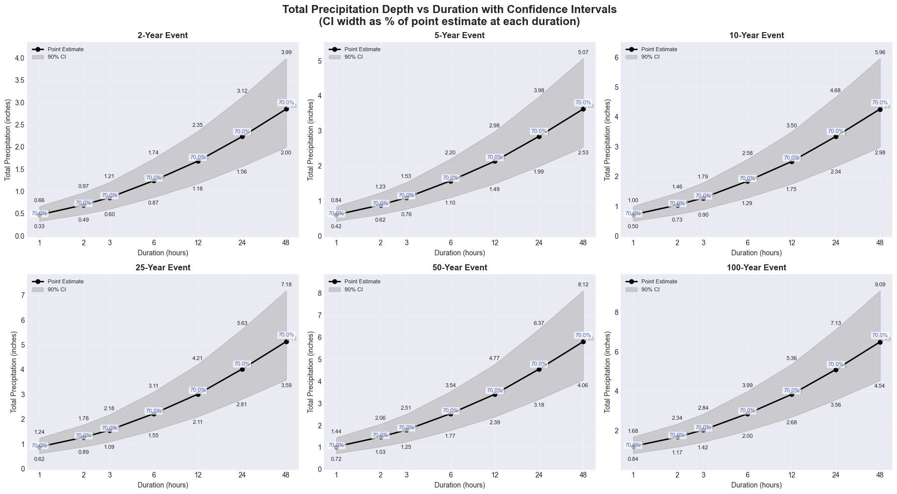
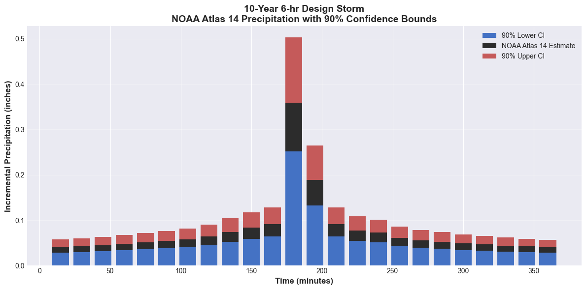
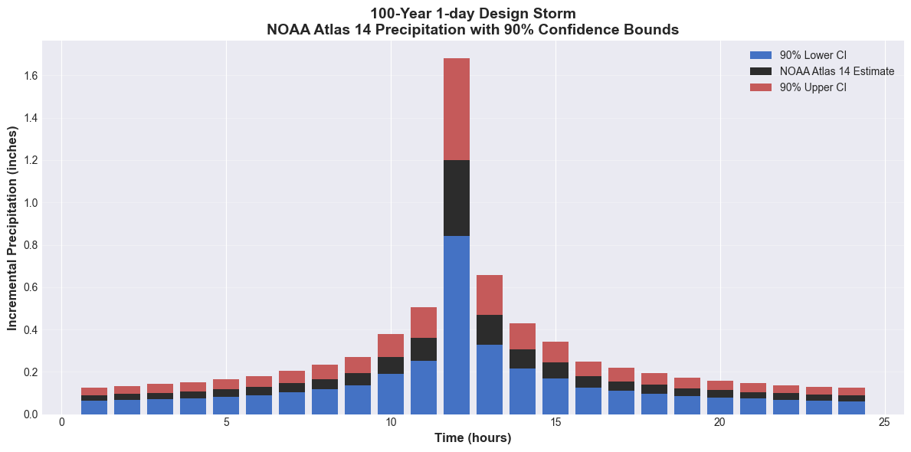

NOAA Atlas 14 Multi-Project Analysis¶
Overview¶
This notebook demonstrates batch processing of design storms across multiple HEC-RAS projects using NOAA Atlas 14 precipitation frequency data. Multi-project workflows are common for:
- Regional Flood Studies: Analyzing multiple watersheds in a region
- Infrastructure Networks: Assessing culverts, bridges, channels in a drainage system
- Scenario Comparison: Evaluating alternative project configurations
- Sensitivity Analysis: Testing parameter variations across model ensemble
What This Notebook Does¶
- Defines multiple HEC-RAS projects (locations, configurations)
- Queries NOAA Atlas 14 for each project location
- Generates design storms (multiple AEPs, durations)
- Executes HEC-RAS for all project-storm combinations
- Aggregates results across projects
- Compares flood risk metrics (peak WSE, extent, damage)
LLM Forward Principle: Scalable Automation¶
Multi-project automation enables: - Reproducibility: Consistent methodology across all projects - Efficiency: Hours instead of weeks for regional studies - Version Control: Track all project configurations and results - Peer Review: Transparent workflow for technical review
Professional Responsibility: Automation does not replace engineering judgment - verify results for each project.
Workflow Architecture¶
Sequential Execution:
Pros: Simple, low memory Cons: Slow for large project countsParallel Execution:
Pros: Fast, leverages multiple cores Cons: Higher memory, requires careful file managementDistributed Execution (ras-commander remote):
Pros: Scales to hundreds of projects Cons: Requires network infrastructureReference¶
For batch processing best practices: - HEC-RAS Automation Guide - ras-commander Remote Execution Documentation
For regional flood studies: - FEMA Risk MAP: Multi-Jurisdictional Flood Studies - USACE Regional Flood Frequency Analysis
For data aggregation: - Pandas Multi-Index Documentation
Data Structure¶
Project Metadata:
projects = [
{
"name": "Watershed_A",
"folder": Path("projects/watershed_a"),
"location": {"lat": 40.123, "lon": -75.456},
"plan": "01"
},
{
"name": "Watershed_B",
"folder": Path("projects/watershed_b"),
"location": {"lat": 40.234, "lon": -75.567},
"plan": "02"
}
]
Results DataFrame:
| project | storm | duration | aep | max_wse | peak_flow | flood_area |
|-------------|--------|----------|-------|---------|-----------|------------|
| Watershed_A | 10yr | 24hr | 10% | 125.3 | 1250 | 45.2 |
| Watershed_A | 100yr | 24hr | 1% | 128.7 | 3400 | 102.8 |
| Watershed_B | 10yr | 24hr | 10% | 98.2 | 850 | 23.1 |
| Watershed_B | 100yr | 24hr | 1% | 102.5 | 2200 | 56.4 |
Performance Considerations¶
Execution Time: - Single project, single storm: 5-30 minutes (model dependent) - 10 projects × 3 storms = 30 combinations - Sequential: 2.5-15 hours - Parallel (4 cores): 0.6-3.75 hours - Distributed (10 workers): 0.25-1.5 hours
Storage Requirements: - HDF results: 50-500 MB per run - 30 combinations × 200 MB = 6 GB (plan for 10+ GB)
Memory Usage: - Parallel execution: RAM per core (2-8 GB per HEC-RAS instance) - Result aggregation: Load all DataFrames (use chunking for >100 projects)
Common Pitfalls¶
- Path Management: Ensure unique output folders for each project-storm combination
- Resource Contention: Too many parallel processes can overwhelm CPU/memory
- Error Handling: One failed run should not abort entire batch
- Result Overwriting: Careful file naming to avoid conflicts
- Atlas 14 Volume Mismatch: Projects may span multiple Atlas 14 volumes
Workflow Example¶
# Define project ensemble
projects = [...]
# Define storm ensemble
storms = [
{"name": "10yr", "aep": 10, "duration": 24},
{"name": "100yr", "aep": 1, "duration": 24}
]
# Execute batch
results = []
for project in projects:
for storm in storms:
# Query Atlas 14
precip = query_atlas14(
project["location"]["lat"],
project["location"]["lon"],
storm["aep"],
storm["duration"]
)
# Generate hyetograph and run HEC-RAS
run_id = f"{project['name']}_{storm['name']}"
hdf_path = run_hecras(project, precip, run_id)
# Extract results
wse = extract_max_wse(hdf_path)
# Store
results.append({
"project": project["name"],
"storm": storm["name"],
"max_wse": wse,
"hdf_path": hdf_path
})
# Aggregate results
results_df = pd.DataFrame(results)
results_df.to_csv("multi_project_results.csv")
Verification and QA/QC¶
Individual Project Checks: - Each HEC-RAS run converged - HDF files created and readable - Water surface elevations within reasonable range
Cross-Project Checks: - Consistent flood patterns (100-yr > 10-yr) - Geographic trends make sense (downstream projects reflect upstream) - Statistical outliers identified and investigated
Aggregate Metrics: - Regional flood frequency curves - Damage-frequency relationships - Expected Annual Damage (EAD) calculations
Documentation¶
Deliverables for Multi-Project Studies: 1. Project Inventory: Table of all projects with metadata 2. Storm Summary: Atlas 14 queries and temporal distributions 3. Results Matrix: Max WSE, peak flow, flood area for all combinations 4. QA/QC Log: Failed runs, warnings, outliers 5. Recommendations: Optimal storm selection, flood mitigation priorities
# Uncomment to install/upgrade ras-commander from pip
#!pip install --upgrade ras-commander
#Import the ras-commander package
from ras_commander import HdfPipe, HdfResultsPlan, RasCmdr, RasExamples, RasPlan, RasPrj, RasUnsteady, init_ras_project, ras
=============================================================================¶
PARAMETERS - Edit these to customize the notebook¶
=============================================================================¶
from pathlib import Path
Multi-Project Configuration¶
PROJECTS = [ { "name": "Muncie", "latitude": 40.1934, "longitude": -85.3863, "plan": "01" }, { "name": "BaldEagleCrkMulti2D", "latitude": 40.9127, "longitude": -77.7672, "plan": "03" } ]
RAS_VERSION = "6.6" # HEC-RAS version
Storm Settings¶
STORM_DURATION_HOURS = 24 # Storm duration in hours AEP = 0.01 # Annual exceedance probability
Execution Settings¶
NUM_CORES = 2 # Cores per simulation MAX_WORKERS = 2 # Parallel workers
print(f"Will process {len(PROJECTS)} projects")
Atlas 14 Uncertainty Analysis with Multi-Project Support¶
This notebook performs comprehensive uncertainty analysis of precipitation-driven flooding by:
- Processing Multiple Durations: Analyzes 1-hr, 2-hr, 3-hr, 6-hr, 12-hr, 24-hr, and 2-day storms
- Including Confidence Intervals: Runs upper and lower confidence bounds for each scenario
- Quantifying Uncertainty: Shows how precipitation uncertainty propagates through flood models
- Comprehensive Visualization: Creates confidence envelope plots and uncertainty heatmaps
- Multi-Project Management: Automatically handles HEC-RAS 99-plan limit by distributing scenarios across multiple project copies
Methodology¶
Confidence Interval Estimation: - NOAA Atlas 14 precipitation estimates have inherent uncertainty - Upper confidence bound ≈ 1.4 × point estimate - Lower confidence bound ≈ 0.7 × point estimate - These factors represent approximate 90% confidence intervals
Scenario Matrix: - 6 AEP events (2, 5, 10, 25, 50, 100 years) - 7 durations (1hr, 2hr, 3hr, 6hr, 12hr, 24hr, 2day) - 3 confidence levels (lower, point, upper) - Total: 126 scenarios
99-Plan Limit Solution: - HEC-RAS projects limited to 99 plans maximum - Automated distribution across multiple project copies - Preserves original project (all work done in copies) - Results automatically aggregated from all projects
Analysis Outputs: - Confidence envelopes for peak water surfaces - Uncertainty quantification by duration and location - Design recommendations considering uncertainty
Setup and Import Libraries¶
Requirement already satisfied: seaborn in c:\users\billk_clb\anaconda3\lib\site-packages (0.13.2)
Requirement already satisfied: numpy!=1.24.0,>=1.20 in c:\users\billk_clb\anaconda3\lib\site-packages (from seaborn) (2.3.4)
Requirement already satisfied: pandas>=1.2 in c:\users\billk_clb\anaconda3\lib\site-packages (from seaborn) (2.3.3)
Requirement already satisfied: matplotlib!=3.6.1,>=3.4 in c:\users\billk_clb\anaconda3\lib\site-packages (from seaborn) (3.10.7)
Requirement already satisfied: contourpy>=1.0.1 in c:\users\billk_clb\anaconda3\lib\site-packages (from matplotlib!=3.6.1,>=3.4->seaborn) (1.3.3)
Requirement already satisfied: cycler>=0.10 in c:\users\billk_clb\anaconda3\lib\site-packages (from matplotlib!=3.6.1,>=3.4->seaborn) (0.12.1)
Requirement already satisfied: fonttools>=4.22.0 in c:\users\billk_clb\anaconda3\lib\site-packages (from matplotlib!=3.6.1,>=3.4->seaborn) (4.60.1)
Requirement already satisfied: kiwisolver>=1.3.1 in c:\users\billk_clb\anaconda3\lib\site-packages (from matplotlib!=3.6.1,>=3.4->seaborn) (1.4.9)
Requirement already satisfied: packaging>=20.0 in c:\users\billk_clb\anaconda3\lib\site-packages (from matplotlib!=3.6.1,>=3.4->seaborn) (25.0)
Requirement already satisfied: pillow>=8 in c:\users\billk_clb\anaconda3\lib\site-packages (from matplotlib!=3.6.1,>=3.4->seaborn) (11.3.0)
Requirement already satisfied: pyparsing>=3 in c:\users\billk_clb\anaconda3\lib\site-packages (from matplotlib!=3.6.1,>=3.4->seaborn) (3.2.5)
Requirement already satisfied: python-dateutil>=2.7 in c:\users\billk_clb\anaconda3\lib\site-packages (from matplotlib!=3.6.1,>=3.4->seaborn) (2.9.0.post0)
Requirement already satisfied: pytz>=2020.1 in c:\users\billk_clb\anaconda3\lib\site-packages (from pandas>=1.2->seaborn) (2025.2)
Requirement already satisfied: tzdata>=2022.7 in c:\users\billk_clb\anaconda3\lib\site-packages (from pandas>=1.2->seaborn) (2025.2)
Requirement already satisfied: six>=1.5 in c:\users\billk_clb\anaconda3\lib\site-packages (from python-dateutil>=2.7->matplotlib!=3.6.1,>=3.4->seaborn) (1.17.0)
# Import necessary libraries
import os
import numpy as np
import pandas as pd
import matplotlib.pyplot as plt
import seaborn as sns
import re
import time
from pathlib import Path
from datetime import datetime, timedelta
from IPython import display
import psutil
from itertools import product
# Set plotting style
plt.style.use('seaborn-v0_8-darkgrid')
sns.set_palette("husl")
print("Libraries imported successfully")
Libraries imported successfully
Extract and Initialize Project¶
# =============================================================================
# DEVELOPMENT MODE TOGGLE
# =============================================================================
USE_LOCAL_SOURCE = True # <-- TOGGLE THIS
if USE_LOCAL_SOURCE:
import sys
from pathlib import Path
local_path = str(Path.cwd().parent)
if local_path not in sys.path:
sys.path.insert(0, local_path)
print(f"📁 LOCAL SOURCE MODE: Loading from {local_path}/ras_commander")
else:
print("📦 PIP PACKAGE MODE: Loading installed ras-commander")
# Import ras-commander
from ras_commander import HdfPipe, HdfResultsPlan, RasCmdr, RasExamples, RasPlan, RasPrj, RasUnsteady, init_ras_project, ras
# Verify which version loaded
import ras_commander
print(f"✓ Loaded: {ras_commander.__file__}")
Parameters¶
Configure these values to customize the notebook for your project.
# =============================================================================
# PARAMETERS - Edit these to customize the notebook
# =============================================================================
from pathlib import Path
# Project Configuration
PROJECT_NAME = "Davis" # Example project to extract
RAS_VERSION = "6.6" # HEC-RAS version (6.3, 6.5, 6.6, etc.)
# Sensitivity Analysis Settings
PLAN = "01" # Base plan for sensitivity runs
PARAMETER_VALUES = [0.8, 0.9, 1.0, 1.1, 1.2] # Multipliers to test
NUM_WORKERS = 4 # Parallel workers for sensitivity runs
# Initialize project
from pathlib import Path
# Extract Davis example project using suffix parameter
pipes_ex_path = RasExamples.extract_project(["Davis"], suffix="104")
# Initialize the project
init_ras_project(pipes_ex_path, RAS_VERSION)
print(f"Initialized HEC-RAS project: {ras.project_name}")
print(f"\nBase plan configuration:")
display.display(ras.plan_df)
2025-12-16 15:28:31 - ras_commander.RasExamples - INFO - Found zip file: C:\Users\billk_clb\anaconda3\envs\rascmdr_piptest\Lib\site-packages\examples\Example_Projects_6_6.zip
2025-12-16 15:28:31 - ras_commander.RasExamples - INFO - Loading project data from CSV...
2025-12-16 15:28:31 - ras_commander.RasExamples - INFO - Loaded 68 projects from CSV.
2025-12-16 15:28:31 - ras_commander.RasExamples - INFO - ----- RasExamples Extracting Project -----
2025-12-16 15:28:31 - ras_commander.RasExamples - INFO - Extracting project 'Davis' as 'Davis_104'
2025-12-16 15:28:31 - ras_commander.RasExamples - INFO - Folder 'Davis_104' already exists. Deleting existing folder...
2025-12-16 15:28:31 - ras_commander.RasExamples - INFO - Existing folder 'Davis_104' has been deleted.
2025-12-16 15:28:31 - ras_commander.RasExamples - INFO - Successfully extracted project 'Davis' to C:\Users\billk_clb\anaconda3\envs\rascmdr_piptest\Lib\site-packages\examples\example_projects\Davis_104
2025-12-16 15:28:31 - ras_commander.RasMap - INFO - Successfully parsed RASMapper file: C:\Users\billk_clb\anaconda3\envs\rascmdr_piptest\Lib\site-packages\examples\example_projects\Davis_104\DavisStormSystem.rasmap
Initialized HEC-RAS project: DavisStormSystem
Base plan configuration:
| plan_number | unsteady_number | geometry_number | Plan Title | Program Version | Short Identifier | Simulation Date | Computation Interval | Mapping Interval | Run HTab | ... | Friction Slope Method | UNET D2 SolverType | UNET D2 Name | HDF_Results_Path | Geom File | Geom Path | Flow File | Flow Path | full_path | flow_type | |
|---|---|---|---|---|---|---|---|---|---|---|---|---|---|---|---|---|---|---|---|---|---|
| 0 | 02 | 01 | 02 | Full System ROM with Pump | 6.60 | Full System ROM with Pump | 10JAN2000,1200,11JAN2000,2400 | 12SEC | 10MIN | -1 | ... | 1 | PARDISO (Direct) | area2 | None | 02 | C:\Users\billk_clb\anaconda3\envs\rascmdr_pipt... | 01 | C:\Users\billk_clb\anaconda3\envs\rascmdr_pipt... | C:\Users\billk_clb\anaconda3\envs\rascmdr_pipt... | Unsteady |
1 rows × 30 columns
Enhanced Hyetograph Generation with Confidence Intervals¶
These functions extend the original hyetograph generation to support: - Multiple durations (not just 24-hour) - Confidence interval calculations - Systematic scenario organization
def parse_duration(duration_str):
"""
Parses a duration string and converts it to hours.
Examples: "5-min:" -> 0.0833 hours, "2-hr:" -> 2 hours, "2-day:" -> 48 hours
"""
match = re.match(r'(\d+)-(\w+):', duration_str.strip())
if not match:
raise ValueError(f"Invalid duration format: {duration_str}")
value, unit = match.groups()
value = int(value)
unit = unit.lower()
if unit in ['min', 'minute', 'minutes']:
hours = value / 60.0
elif unit in ['hr', 'hour', 'hours']:
hours = value
elif unit in ['day', 'days']:
hours = value * 24
else:
raise ValueError(f"Unknown time unit in duration: {unit}")
return hours
def read_precipitation_data(csv_file):
"""
Reads the precipitation frequency CSV and returns a DataFrame
with durations in hours as the index and ARIs as columns.
"""
with open(csv_file, 'r') as f:
lines = f.readlines()
header_line_idx = None
header_pattern = re.compile(r'^by duration for ari', re.IGNORECASE)
# Locate the header line
for idx, line in enumerate(lines):
if header_pattern.match(line.strip().lower()):
header_line_idx = idx
break
if header_line_idx is None:
raise ValueError('Header line for precipitation frequency estimates not found in CSV file.')
# Extract the ARI headers from the header line
header_line = lines[header_line_idx].strip()
headers = [item.strip() for item in header_line.split(',')]
if len(headers) < 2:
raise ValueError('Insufficient number of ARI columns found in the header line.')
aris = headers[1:] # Exclude the first column which is the duration
# Define the pattern for data lines
duration_pattern = re.compile(r'^\d+-(min|hr|day):')
# Initialize lists to store durations and corresponding depths
durations = []
depths = {ari: [] for ari in aris}
# Iterate over the lines following the header to extract data
for line in lines[header_line_idx + 1:]:
line = line.strip()
if not line:
continue
if not duration_pattern.match(line):
break
parts = [part.strip() for part in line.split(',')]
if len(parts) != len(headers):
raise ValueError(f"Data row does not match header columns: {line}")
duration_str = parts[0]
# Parse duration with clear error message if it fails
duration_hours = parse_duration(duration_str) # Let ValueError propagate
durations.append(duration_hours)
for ari, depth_str in zip(aris, parts[1:]):
# Convert depth, using NaN for empty/missing values
if depth_str.strip() == '' or depth_str.strip().lower() == 'nan':
depth = np.nan
else:
depth = float(depth_str) # Let ValueError propagate for malformed data
depths[ari].append(depth)
# Create the DataFrame
df = pd.DataFrame(depths, index=durations)
df.index.name = 'Duration_hours'
df = df.dropna()
return df
def create_confidence_intervals(df_point, upper_factor=1.4, lower_factor=0.7):
"""
Creates upper and lower confidence interval DataFrames from point estimates.
Parameters:
- df_point: DataFrame with point estimates
- upper_factor: Multiplier for upper CI (default 1.4 for ~90% CI)
- lower_factor: Multiplier for lower CI (default 0.7 for ~90% CI)
Returns:
- Tuple of (df_lower, df_point, df_upper)
"""
df_upper = df_point * upper_factor
df_lower = df_point * lower_factor
return df_lower, df_point, df_upper
def get_time_interval(duration_hrs):
"""
Determines the appropriate time interval based on storm duration.
Parameters:
-----------
duration_hrs : float
Storm duration in hours
Returns:
--------
float : Time interval in hours
"""
if duration_hrs >= 24:
return 1.0 # 1 hour for 24+ hour storms
elif duration_hrs >= 12:
return 0.5 # 30 minutes for 12-hour storms
elif duration_hrs >= 6:
return 0.25 # 15 minutes for 6-hour storms
else:
return 5.0 / 60.0 # 5 minutes for storms less than 6 hours
def interpolate_depths(df, total_duration):
"""
Interpolates precipitation depths for each ARI on a log-log scale
using appropriate time intervals based on duration.
Parameters:
-----------
df : DataFrame
Precipitation frequency data with durations as index and ARIs as columns
total_duration : float
Total storm duration in hours
Returns:
--------
tuple : (dict of interpolated depths, time array in hours)
"""
# Determine time interval based on duration
dt = get_time_interval(total_duration)
# Create time array with appropriate interval
t_hours = np.arange(dt, total_duration + dt/2, dt)
D = {}
for ari in df.columns:
durations = df.index.values
depths = df[ari].values
if np.any(depths <= 0):
raise ValueError(f"Non-positive depth value in ARI {ari}")
# Log-log interpolation
log_durations = np.log(durations)
log_depths = np.log(depths)
log_t = np.log(t_hours)
log_D_t = np.interp(log_t, log_durations, log_depths)
D_t = np.exp(log_D_t)
D[ari] = D_t
return D, t_hours
def compute_incremental_depths(D, t_hours):
"""
Computes incremental precipitation depths for each time interval.
I(t) = D(t) - D(t-1), with D(0) = 0.
Parameters:
-----------
D : dict
Dictionary of cumulative depths for each ARI
t_hours : array
Time array in hours
Returns:
--------
dict : Dictionary of incremental depths for each ARI
"""
incremental_depths = {}
for ari, D_t in D.items():
num_intervals = len(t_hours)
I_t = np.empty(num_intervals)
I_t[0] = D_t[0]
I_t[1:] = D_t[1:] - D_t[:-1]
incremental_depths[ari] = I_t
return incremental_depths
def assign_alternating_block(sorted_depths, max_depth, central_index, num_intervals):
"""
Assigns incremental depths to the hyetograph using the Alternating Block Method.
Parameters:
-----------
sorted_depths : list
Sorted incremental depths (descending)
max_depth : float
Maximum depth value
central_index : int
Index for peak position
num_intervals : int
Total number of time intervals
Returns:
--------
list : Hyetograph array
"""
hyetograph = [0.0] * num_intervals
hyetograph[central_index] = max_depth
remaining_depths = sorted_depths.copy()
remaining_depths.remove(max_depth)
left = central_index - 1
right = central_index + 1
toggle = True
for depth in remaining_depths:
if toggle and right < num_intervals:
hyetograph[right] = depth
right += 1
elif not toggle and left >= 0:
hyetograph[left] = depth
left -= 1
elif right < num_intervals:
hyetograph[right] = depth
right += 1
elif left >= 0:
hyetograph[left] = depth
left -= 1
else:
print("Warning: Not all incremental depths assigned.")
break
toggle = not toggle
return hyetograph
def generate_hyetograph(incremental_depths, position_percent, num_intervals):
"""
Generates the hyetograph for a given ARI using the Alternating Block Method.
Parameters:
-----------
incremental_depths : array
Incremental depths for each time interval
position_percent : float
Peak position as percentage (e.g., 50 for middle)
num_intervals : int
Total number of time intervals
Returns:
--------
list : Hyetograph array
"""
max_depth = np.max(incremental_depths)
incremental_depths_list = incremental_depths.tolist()
central_index = int(round(num_intervals * position_percent / 100)) - 1
central_index = max(0, min(central_index, num_intervals - 1))
sorted_depths = sorted(incremental_depths_list, reverse=True)
hyetograph = assign_alternating_block(sorted_depths, max_depth, central_index, num_intervals)
return hyetograph
def save_hyetograph(hyetograph, t_hours, ari, duration_hrs, ci_level, output_dir, position_percent):
"""
Saves the hyetograph to a CSV file with clear naming convention.
Parameters:
-----------
hyetograph : array
Hyetograph values
t_hours : array
Time array in hours
ari : int or str
Annual recurrence interval
duration_hrs : float
Storm duration in hours
ci_level : str
Confidence level ('lower', 'point', 'upper')
output_dir : str
Output directory path
position_percent : float
Peak position percentage
Returns:
--------
str : Path to saved file
"""
# Determine time interval
dt = get_time_interval(duration_hrs)
# Create DataFrame with appropriate time units
if dt >= 1.0:
time_col_name = 'Time_hour'
time_values = t_hours
elif dt >= 1.0/60.0:
time_col_name = 'Time_min'
time_values = t_hours * 60 # Convert to minutes
else:
time_col_name = 'Time_hour'
time_values = t_hours
df = pd.DataFrame({
time_col_name: time_values,
'Precipitation_in': hyetograph
})
# Format duration string
if duration_hrs >= 24:
dur_str = f"{int(duration_hrs/24)}day"
else:
dur_str = f"{int(duration_hrs)}hr"
filename = f'hyetograph_ARI_{ari}_DUR_{dur_str}_CI_{ci_level}.csv'
output_file = os.path.join(output_dir, filename)
# Add metadata as header comment
with open(output_file, 'w') as f:
f.write(f"# NOAA Atlas 14 Hyetograph\n")
f.write(f"# ARI: {ari} years\n")
f.write(f"# Duration: {duration_hrs} hours\n")
f.write(f"# Time Interval: {dt*60:.1f} minutes\n")
f.write(f"# Confidence Level: {ci_level}\n")
f.write(f"# Peak Position: {position_percent}%\n")
f.write(f"# Generated: {datetime.now().strftime('%Y-%m-%d %H:%M:%S')}\n")
df.to_csv(f, index=False)
return output_file
print("Hyetograph generation functions defined (with variable time intervals)")
Hyetograph generation functions defined (with variable time intervals)
Generate Complete Scenario Matrix¶
Create hyetographs for all combinations of: - AEP events: 2, 5, 10, 25, 50, 100 years - Durations: 1hr, 2hr, 3hr, 6hr, 12hr, 24hr, 2day - Confidence levels: lower, point, upper
# Configuration
input_csv = 'data/PF_Depth_English_PDS_DavisCA.csv'
output_dir = 'hyetographs_uncertainty'
position_percent = 50
base_plan = "02"
# Define scenario parameters
aep_events = [2, 5, 10, 25, 50, 100]
durations = [1, 2, 3, 6, 12, 24, 48] # hours
ci_levels = ['lower', 'point', 'upper']
ci_factors = {'lower': 0.7, 'point': 1.0, 'upper': 1.4}
# Create output directory
Path(output_dir).mkdir(parents=True, exist_ok=True)
print(f"Output directory: {output_dir}")
print(f"\nScenario Matrix:")
print(f" AEP Events: {aep_events}")
print(f" Durations: {durations} hours")
print(f" CI Levels: {ci_levels}")
print(f" Total Scenarios: {len(aep_events) * len(durations) * len(ci_levels)}")
Output directory: hyetographs_uncertainty
Scenario Matrix:
AEP Events: [2, 5, 10, 25, 50, 100]
Durations: [1, 2, 3, 6, 12, 24, 48] hours
CI Levels: ['lower', 'point', 'upper']
Total Scenarios: 126
# Read precipitation data
print("Reading NOAA Atlas 14 data...")
df_point = read_precipitation_data(input_csv)
print(f"Successfully read data with {len(df_point)} durations and {len(df_point.columns)} ARI values")
# Display the data
print("\nPrecipitation Frequency Data (Point Estimates):")
display.display(df_point.head(10))
# Create confidence interval DataFrames
print("\nGenerating confidence intervals...")
df_lower, df_point, df_upper = create_confidence_intervals(df_point)
print("Confidence intervals created:")
print(f" Lower CI factor: {ci_factors['lower']}")
print(f" Point estimate factor: {ci_factors['point']}")
print(f" Upper CI factor: {ci_factors['upper']}")
Reading NOAA Atlas 14 data...
Successfully read data with 19 durations and 10 ARI values
Precipitation Frequency Data (Point Estimates):
| 1 | 2 | 5 | 10 | 25 | 50 | 100 | 200 | 500 | 1000 | |
|---|---|---|---|---|---|---|---|---|---|---|
| Duration_hours | ||||||||||
| 0.083333 | 0.112 | 0.137 | 0.174 | 0.207 | 0.257 | 0.299 | 0.347 | 0.400 | 0.479 | 0.548 |
| 0.166667 | 0.161 | 0.197 | 0.250 | 0.297 | 0.368 | 0.429 | 0.497 | 0.573 | 0.687 | 0.785 |
| 0.250000 | 0.194 | 0.238 | 0.302 | 0.359 | 0.446 | 0.519 | 0.601 | 0.693 | 0.830 | 0.949 |
| 0.500000 | 0.297 | 0.364 | 0.461 | 0.548 | 0.680 | 0.792 | 0.917 | 1.060 | 1.270 | 1.450 |
| 1.000000 | 0.387 | 0.474 | 0.601 | 0.714 | 0.886 | 1.030 | 1.200 | 1.380 | 1.650 | 1.890 |
| 2.000000 | 0.565 | 0.696 | 0.880 | 1.040 | 1.270 | 1.470 | 1.670 | 1.900 | 2.230 | 2.500 |
| 3.000000 | 0.698 | 0.861 | 1.090 | 1.280 | 1.560 | 1.790 | 2.030 | 2.290 | 2.660 | 2.960 |
| 6.000000 | 1.000 | 1.240 | 1.570 | 1.840 | 2.220 | 2.530 | 2.850 | 3.190 | 3.660 | 4.040 |
| 12.000000 | 1.340 | 1.680 | 2.130 | 2.500 | 3.010 | 3.410 | 3.830 | 4.260 | 4.860 | 5.330 |
| 24.000000 | 1.770 | 2.230 | 2.840 | 3.340 | 4.020 | 4.550 | 5.090 | 5.660 | 6.430 | 7.030 |
Generating confidence intervals...
Confidence intervals created:
Lower CI factor: 0.7
Point estimate factor: 1.0
Upper CI factor: 1.4
# Generate all hyetographs
print("Generating hyetographs with variable time intervals...\n")
print("Time Interval Rules:")
print(" • 24+ hour storms: 1-hour intervals")
print(" • 12-hour storms: 30-minute intervals")
print(" • 6-hour storms: 15-minute intervals")
print(" • < 6-hour storms: 5-minute intervals\n")
scenario_list = []
hyetograph_count = 0
for ari in aep_events:
ari_str = str(ari)
# Check if this ARI is in the data
if ari_str not in df_point.columns:
print(f"Warning: ARI {ari_str} not found in data. Skipping.")
continue
for duration in durations:
# Get time interval for this duration
dt = get_time_interval(duration)
print(f"Processing {ari}-yr, {duration}-hr storm (dt={dt*60:.1f} min)...")
# Process each confidence level
for ci_level in ci_levels:
# Select the appropriate DataFrame
if ci_level == 'lower':
df_current = df_lower
elif ci_level == 'upper':
df_current = df_upper
else:
df_current = df_point
# Interpolate depths with appropriate time interval
D, t_hours = interpolate_depths(df_current, duration)
# Compute incremental depths
inc_depths = compute_incremental_depths(D, t_hours)
# Generate hyetograph
num_intervals = len(t_hours)
hyetograph = generate_hyetograph(inc_depths[ari_str], position_percent, num_intervals)
# Save hyetograph
file_path = save_hyetograph(hyetograph, t_hours, ari_str, duration, ci_level,
output_dir, position_percent)
# Record scenario
scenario_list.append({
'ari': ari,
'duration_hrs': duration,
'time_interval_min': dt * 60,
'num_intervals': num_intervals,
'ci_level': ci_level,
'hyetograph_file': file_path,
'total_depth_in': sum(hyetograph)
})
hyetograph_count += 1
# Create scenario DataFrame
scenario_df = pd.DataFrame(scenario_list)
print(f"\n✓ Generated {hyetograph_count} hyetographs")
print(f"\nScenario Summary (first 12 rows):")
display.display(scenario_df.head(12))
# Save scenario list
scenario_csv = 'scenarios_uncertainty.csv'
scenario_df.to_csv(scenario_csv, index=False)
print(f"\nScenario list saved to: {scenario_csv}")
Generating hyetographs with variable time intervals...
Time Interval Rules:
• 24+ hour storms: 1-hour intervals
• 12-hour storms: 30-minute intervals
• 6-hour storms: 15-minute intervals
• < 6-hour storms: 5-minute intervals
Processing 2-yr, 1-hr storm (dt=5.0 min)...
Processing 2-yr, 2-hr storm (dt=5.0 min)...
Processing 2-yr, 3-hr storm (dt=5.0 min)...
Processing 2-yr, 6-hr storm (dt=15.0 min)...
Processing 2-yr, 12-hr storm (dt=30.0 min)...
Processing 2-yr, 24-hr storm (dt=60.0 min)...
Processing 2-yr, 48-hr storm (dt=60.0 min)...
Processing 5-yr, 1-hr storm (dt=5.0 min)...
Processing 5-yr, 2-hr storm (dt=5.0 min)...
Processing 5-yr, 3-hr storm (dt=5.0 min)...
Processing 5-yr, 6-hr storm (dt=15.0 min)...
Processing 5-yr, 12-hr storm (dt=30.0 min)...
Processing 5-yr, 24-hr storm (dt=60.0 min)...
Processing 5-yr, 48-hr storm (dt=60.0 min)...
Processing 10-yr, 1-hr storm (dt=5.0 min)...
Processing 10-yr, 2-hr storm (dt=5.0 min)...
Processing 10-yr, 3-hr storm (dt=5.0 min)...
Processing 10-yr, 6-hr storm (dt=15.0 min)...
Processing 10-yr, 12-hr storm (dt=30.0 min)...
Processing 10-yr, 24-hr storm (dt=60.0 min)...
Processing 10-yr, 48-hr storm (dt=60.0 min)...
Processing 25-yr, 1-hr storm (dt=5.0 min)...
Processing 25-yr, 2-hr storm (dt=5.0 min)...
Processing 25-yr, 3-hr storm (dt=5.0 min)...
Processing 25-yr, 6-hr storm (dt=15.0 min)...
Processing 25-yr, 12-hr storm (dt=30.0 min)...
Processing 25-yr, 24-hr storm (dt=60.0 min)...
Processing 25-yr, 48-hr storm (dt=60.0 min)...
Processing 50-yr, 1-hr storm (dt=5.0 min)...
Processing 50-yr, 2-hr storm (dt=5.0 min)...
Processing 50-yr, 3-hr storm (dt=5.0 min)...
Processing 50-yr, 6-hr storm (dt=15.0 min)...
Processing 50-yr, 12-hr storm (dt=30.0 min)...
Processing 50-yr, 24-hr storm (dt=60.0 min)...
Processing 50-yr, 48-hr storm (dt=60.0 min)...
Processing 100-yr, 1-hr storm (dt=5.0 min)...
Processing 100-yr, 2-hr storm (dt=5.0 min)...
Processing 100-yr, 3-hr storm (dt=5.0 min)...
Processing 100-yr, 6-hr storm (dt=15.0 min)...
Processing 100-yr, 12-hr storm (dt=30.0 min)...
Processing 100-yr, 24-hr storm (dt=60.0 min)...
Processing 100-yr, 48-hr storm (dt=60.0 min)...
✓ Generated 126 hyetographs
Scenario Summary (first 12 rows):
| ari | duration_hrs | time_interval_min | num_intervals | ci_level | hyetograph_file | total_depth_in | |
|---|---|---|---|---|---|---|---|
| 0 | 2 | 1 | 5.0 | 12 | lower | hyetographs_uncertainty\hyetograph_ARI_2_DUR_1... | 0.3318 |
| 1 | 2 | 1 | 5.0 | 12 | point | hyetographs_uncertainty\hyetograph_ARI_2_DUR_1... | 0.4740 |
| 2 | 2 | 1 | 5.0 | 12 | upper | hyetographs_uncertainty\hyetograph_ARI_2_DUR_1... | 0.6636 |
| 3 | 2 | 2 | 5.0 | 24 | lower | hyetographs_uncertainty\hyetograph_ARI_2_DUR_2... | 0.4872 |
| 4 | 2 | 2 | 5.0 | 24 | point | hyetographs_uncertainty\hyetograph_ARI_2_DUR_2... | 0.6960 |
| 5 | 2 | 2 | 5.0 | 24 | upper | hyetographs_uncertainty\hyetograph_ARI_2_DUR_2... | 0.9744 |
| 6 | 2 | 3 | 5.0 | 36 | lower | hyetographs_uncertainty\hyetograph_ARI_2_DUR_3... | 0.6027 |
| 7 | 2 | 3 | 5.0 | 36 | point | hyetographs_uncertainty\hyetograph_ARI_2_DUR_3... | 0.8610 |
| 8 | 2 | 3 | 5.0 | 36 | upper | hyetographs_uncertainty\hyetograph_ARI_2_DUR_3... | 1.2054 |
| 9 | 2 | 6 | 15.0 | 24 | lower | hyetographs_uncertainty\hyetograph_ARI_2_DUR_6... | 0.8680 |
| 10 | 2 | 6 | 15.0 | 24 | point | hyetographs_uncertainty\hyetograph_ARI_2_DUR_6... | 1.2400 |
| 11 | 2 | 6 | 15.0 | 24 | upper | hyetographs_uncertainty\hyetograph_ARI_2_DUR_6... | 1.7360 |
Scenario list saved to: scenarios_uncertainty.csv
Total Precipitation Depth Analysis¶
Visualize total precipitation depths across all scenarios with confidence intervals
import numpy as np
import pandas as pd
import matplotlib.pyplot as plt
# Assuming your data is in scenario_df with columns: duration_hrs, ari, ci_level, total_depth_in
# Create the plots
fig, axes = plt.subplots(2, 3, figsize=(18, 10))
axes = axes.flatten()
# Define your ARI events (adjust based on your data)
aep_events = [2, 5, 10, 25, 50, 100]
for idx, ari in enumerate(aep_events):
ax = axes[idx]
# Extract data for this specific ARI
ari_data = scenario_df[scenario_df['ari'] == ari].copy()
# Get unique durations
durations = sorted(ari_data['duration_hrs'].unique())
# Initialize lists to store values
lower_vals = []
upper_vals = []
point_vals = []
ci_percentages = []
# Process each duration
for dur in durations:
# Get data for this specific duration
dur_data = ari_data[ari_data['duration_hrs'] == dur]
# Extract values for each CI level
lower_val = dur_data[dur_data['ci_level'] == 'lower']['total_depth_in'].values
upper_val = dur_data[dur_data['ci_level'] == 'upper']['total_depth_in'].values
point_val = dur_data[dur_data['ci_level'] == 'point']['total_depth_in'].values
# Handle missing data
if len(lower_val) > 0 and len(upper_val) > 0 and len(point_val) > 0:
lower = float(lower_val[0])
upper = float(upper_val[0])
point = float(point_val[0])
# Calculate CI width as percentage of point estimate
# Using point estimate as the reference (you could also use mean of upper/lower)
if point > 0:
ci_width = upper - lower
ci_pct = (ci_width / point) * 100
else:
ci_pct = np.nan
else:
lower = upper = point = ci_pct = np.nan
lower_vals.append(lower)
upper_vals.append(upper)
point_vals.append(point)
ci_percentages.append(ci_pct)
# Convert to arrays
lower_vals = np.array(lower_vals)
upper_vals = np.array(upper_vals)
point_vals = np.array(point_vals)
ci_percentages = np.array(ci_percentages)
# Plot the data
ax.plot(durations, point_vals,
'ko-', linewidth=2, markersize=6, label='Point Estimate')
ax.fill_between(durations,
lower_vals,
upper_vals,
alpha=0.3, color='gray', label='90% CI')
# Calculate spacing for annotations
y_range = np.nanmax(upper_vals) - np.nanmin(lower_vals)
# Add annotations for each point
for i, (x, y_lower, y_upper, y_point, ci_pct) in enumerate(zip(
durations, lower_vals, upper_vals, point_vals, ci_percentages)):
if not np.isnan(y_lower):
# Annotate lower bound
ax.text(x, y_lower - 0.02 * y_range, f'{y_lower:.2f}',
fontsize=8, ha='center', va='top')
if not np.isnan(y_upper):
# Annotate upper bound
ax.text(x, y_upper + 0.02 * y_range, f'{y_upper:.2f}',
fontsize=8, ha='center', va='bottom')
if not np.isnan(y_point):
# Annotate point estimate
ax.text(x, y_point, f'{y_point:.2f}',
fontsize=8, color='darkgray', ha='left', va='bottom',
fontweight='bold')
if not np.isnan(ci_pct):
# Annotate CI percentage in the middle of the CI band
y_mid = (y_lower + y_upper) / 2
ax.text(x, y_mid, f'{ci_pct:.1f}%',
fontsize=8, color='royalblue', ha='center', va='center',
bbox=dict(boxstyle='round,pad=0.2', facecolor='white',
edgecolor='none', alpha=0.7))
# Set labels and formatting
ax.set_xlabel('Duration (hours)', fontsize=10)
ax.set_ylabel('Total Precipitation (inches)', fontsize=10)
ax.set_title(f'{ari}-Year Event', fontsize=12, fontweight='bold')
ax.grid(True, alpha=0.3)
ax.legend(loc='upper left', fontsize=8)
# Set x-axis to log scale
ax.set_xscale('log')
ax.set_xticks(durations)
ax.set_xticklabels([str(d) for d in durations])
# Adjust y-limits to accommodate annotations
y_min = np.nanmin(lower_vals) - 0.1 * y_range
y_max = np.nanmax(upper_vals) + 0.1 * y_range
ax.set_ylim(y_min, y_max)
plt.suptitle('Total Precipitation Depth vs Duration with Confidence Intervals\n(CI width as % of point estimate at each duration)',
fontsize=16, fontweight='bold')
plt.tight_layout()
plt.show()
# Also print out the actual CI percentages to verify
print("\nConfidence Interval Width as % of Point Estimate:")
print("="*60)
for ari in aep_events:
print(f"\n{ari}-Year Event:")
ari_data = scenario_df[scenario_df['ari'] == ari].copy()
durations = sorted(ari_data['duration_hrs'].unique())
for dur in durations:
dur_data = ari_data[ari_data['duration_hrs'] == dur]
lower = dur_data[dur_data['ci_level'] == 'lower']['total_depth_in'].values
upper = dur_data[dur_data['ci_level'] == 'upper']['total_depth_in'].values
point = dur_data[dur_data['ci_level'] == 'point']['total_depth_in'].values
if len(lower) > 0 and len(upper) > 0 and len(point) > 0:
ci_width = upper[0] - lower[0]
ci_pct = (ci_width / point[0]) * 100
print(f" {dur:2d} hr: {ci_pct:.1f}% (L:{lower[0]:.2f}, P:{point[0]:.2f}, U:{upper[0]:.2f})")

Confidence Interval Width as % of Point Estimate:
============================================================
2-Year Event:
1 hr: 70.0% (L:0.33, P:0.47, U:0.66)
2 hr: 70.0% (L:0.49, P:0.70, U:0.97)
3 hr: 70.0% (L:0.60, P:0.86, U:1.21)
6 hr: 70.0% (L:0.87, P:1.24, U:1.74)
12 hr: 70.0% (L:1.18, P:1.68, U:2.35)
24 hr: 70.0% (L:1.56, P:2.23, U:3.12)
48 hr: 70.0% (L:2.00, P:2.85, U:3.99)
5-Year Event:
1 hr: 70.0% (L:0.42, P:0.60, U:0.84)
2 hr: 70.0% (L:0.62, P:0.88, U:1.23)
3 hr: 70.0% (L:0.76, P:1.09, U:1.53)
6 hr: 70.0% (L:1.10, P:1.57, U:2.20)
12 hr: 70.0% (L:1.49, P:2.13, U:2.98)
24 hr: 70.0% (L:1.99, P:2.84, U:3.98)
48 hr: 70.0% (L:2.53, P:3.62, U:5.07)
10-Year Event:
1 hr: 70.0% (L:0.50, P:0.71, U:1.00)
2 hr: 70.0% (L:0.73, P:1.04, U:1.46)
3 hr: 70.0% (L:0.90, P:1.28, U:1.79)
6 hr: 70.0% (L:1.29, P:1.84, U:2.58)
12 hr: 70.0% (L:1.75, P:2.50, U:3.50)
24 hr: 70.0% (L:2.34, P:3.34, U:4.68)
48 hr: 70.0% (L:2.98, P:4.26, U:5.96)
25-Year Event:
1 hr: 70.0% (L:0.62, P:0.89, U:1.24)
2 hr: 70.0% (L:0.89, P:1.27, U:1.78)
3 hr: 70.0% (L:1.09, P:1.56, U:2.18)
6 hr: 70.0% (L:1.55, P:2.22, U:3.11)
12 hr: 70.0% (L:2.11, P:3.01, U:4.21)
24 hr: 70.0% (L:2.81, P:4.02, U:5.63)
48 hr: 70.0% (L:3.59, P:5.13, U:7.18)
50-Year Event:
1 hr: 70.0% (L:0.72, P:1.03, U:1.44)
2 hr: 70.0% (L:1.03, P:1.47, U:2.06)
3 hr: 70.0% (L:1.25, P:1.79, U:2.51)
6 hr: 70.0% (L:1.77, P:2.53, U:3.54)
12 hr: 70.0% (L:2.39, P:3.41, U:4.77)
24 hr: 70.0% (L:3.18, P:4.55, U:6.37)
48 hr: 70.0% (L:4.06, P:5.80, U:8.12)
100-Year Event:
1 hr: 70.0% (L:0.84, P:1.20, U:1.68)
2 hr: 70.0% (L:1.17, P:1.67, U:2.34)
3 hr: 70.0% (L:1.42, P:2.03, U:2.84)
6 hr: 70.0% (L:2.00, P:2.85, U:3.99)
12 hr: 70.0% (L:2.68, P:3.83, U:5.36)
24 hr: 70.0% (L:3.56, P:5.09, U:7.13)
48 hr: 70.0% (L:4.54, P:6.49, U:9.09)
Visualize Sample Hyetographs¶
Show how confidence intervals affect hyetograph shapes for a few example scenarios
def plot_hyetograph_with_ci(ari, duration, output_dir, save_dir=None):
"""
Plot hyetograph showing lower CI, Atlas 14 estimate, and upper CI.
Handles variable time intervals (hours or minutes) based on duration.
Parameters:
-----------
ari : int
Annual recurrence interval (return period)
duration : int
Storm duration in hours
output_dir : str
Directory containing hyetograph CSV files
save_dir : str, optional
Directory to save PNG files. If None, only displays plot.
"""
# Format duration string
if duration >= 24:
dur_str = f"{int(duration/24)}day"
dur_label = f"{int(duration/24)}-day"
else:
dur_str = f"{int(duration)}hr"
dur_label = f"{int(duration)}-hr"
fig, ax = plt.subplots(figsize=(12, 6))
# Define colors - using distinct, professional colors without transparency
colors = {
'lower': '#4472C4', # Professional blue
'point': '#2C2C2C', # Dark gray/black
'upper': '#C55A5A' # Professional red
}
# Store data for proper ordering
ci_data = {}
# Read hyetographs for each CI level
for ci_level in ['lower', 'point', 'upper']:
filename = f'hyetograph_ARI_{ari}_DUR_{dur_str}_CI_{ci_level}.csv'
filepath = os.path.join(output_dir, filename)
# Skip header lines
df = pd.read_csv(filepath, comment='#')
ci_data[ci_level] = df
# Determine time column name and units
if 'Time_hour' in ci_data['point'].columns:
time_col = 'Time_hour'
time_label = 'Time (hours)'
time_values = ci_data['point'][time_col]
bar_width = 0.8 # Standard width for hourly data
elif 'Time_min' in ci_data['point'].columns:
time_col = 'Time_min'
time_label = 'Time (minutes)'
time_values = ci_data['point'][time_col]
# Adjust bar width based on time interval
time_interval = time_values.iloc[1] - time_values.iloc[0] if len(time_values) > 1 else 5
bar_width = time_interval * 0.8 # 80% of interval width
else:
raise ValueError("Could not find time column (Time_hour or Time_min) in CSV")
# Get the data arrays
x_time = ci_data['point'][time_col]
lower_precip = ci_data['lower']['Precipitation_in']
point_precip = ci_data['point']['Precipitation_in']
upper_precip = ci_data['upper']['Precipitation_in']
# Calculate the incremental heights for stacking
height_lower = lower_precip
height_point_increment = point_precip - lower_precip
height_upper_increment = upper_precip - point_precip
# Plot stacked bars
ax.bar(x_time, height_lower,
width=bar_width,
alpha=1.0,
color=colors['lower'],
label='90% Lower CI',
edgecolor='none')
ax.bar(x_time, height_point_increment,
width=bar_width,
bottom=height_lower,
alpha=1.0,
color=colors['point'],
label='NOAA Atlas 14 Estimate',
edgecolor='none')
ax.bar(x_time, height_upper_increment,
width=bar_width,
bottom=point_precip,
alpha=1.0,
color=colors['upper'],
label='90% Upper CI',
edgecolor='none')
ax.set_xlabel(time_label, fontsize=12, fontweight='bold')
ax.set_ylabel('Incremental Precipitation (inches)', fontsize=12, fontweight='bold')
title = f'{ari}-Year {dur_label} Design Storm\nNOAA Atlas 14 Precipitation with 90% Confidence Bounds'
ax.set_title(title, fontsize=14, fontweight='bold')
ax.legend(fontsize=10, loc='upper right', framealpha=0.95)
ax.grid(axis='y', alpha=0.3, zorder=0)
plt.tight_layout()
# Save if directory specified
if save_dir is not None:
os.makedirs(save_dir, exist_ok=True)
filename = f'{ari}yr_{dur_str}_storm_CI.png'
filepath = os.path.join(save_dir, filename)
plt.savefig(filepath, dpi=300, bbox_inches='tight')
plt.show()
print("Hyetograph plotting functions defined")
Hyetograph plotting functions defined
# =============================================================================
# HYETOGRAPH VISUALIZATION WITH CONFIDENCE INTERVALS
# =============================================================================
print("=" * 70)
print("HYETOGRAPH VISUALIZATION WITH CONFIDENCE INTERVALS")
print("=" * 70)
# Generate ALL hyetographs and save to folder (without displaying)
print("\nGenerating and saving all hyetograph plots...")
print("(Only displaying 10-Year 6-Hour and 100-Year 24-Hour storms)\n")
# Define all scenarios
ari_values = [2, 5, 10, 25, 50, 100]
duration_values = [1, 2, 3, 6, 12, 24, 48] # 48 = 2 days
save_dir = "Atlas 14 Storm Hyetographs"
# Create save directory
os.makedirs(save_dir, exist_ok=True)
total_plots = len(ari_values) * len(duration_values)
current = 0
generated_count = 0
for ari in ari_values:
for duration in duration_values:
current += 1
# Format duration string
if duration >= 24:
dur_str = f"{int(duration/24)}day"
else:
dur_str = f"{int(duration)}hr"
# Check if files exist
filename = f'hyetograph_ARI_{ari}_DUR_{dur_str}_CI_point.csv'
filepath = os.path.join(output_dir, filename)
if not os.path.exists(filepath):
print(f"[{current}/{total_plots}] Skipping {ari}-yr, {dur_str} - files not found")
continue
try:
# Only DISPLAY these two specific plots
if (ari == 10 and duration == 6) or (ari == 100 and duration == 24):
print(f"\n[{current}/{total_plots}] Displaying {ari}-yr, {dur_str} storm...")
plot_hyetograph_with_ci(ari, duration, output_dir, save_dir)
else:
# Generate and save without displaying
print(f"[{current}/{total_plots}] Generating {ari}-yr, {dur_str} storm...", end='')
# Call the function but close the plot immediately to avoid display
import matplotlib
matplotlib.use('Agg') # Use non-interactive backend
plot_hyetograph_with_ci(ari, duration, output_dir, save_dir)
plt.close('all') # Close all figures
matplotlib.use('module://matplotlib_inline.backend_inline') # Restore interactive backend
print(" saved.")
generated_count += 1
except Exception as e:
print(f" Error: {e}")
print(f"\n{'=' * 70}")
print(f"COMPLETE")
print(f"{'=' * 70}")
print(f"✓ Generated and saved {generated_count} hyetograph plots to: {save_dir}")
print(f"✓ Displayed 2 key scenarios (10-Year 6-Hour and 100-Year 24-Hour)")
======================================================================
HYETOGRAPH VISUALIZATION WITH CONFIDENCE INTERVALS
======================================================================
Generating and saving all hyetograph plots...
(Only displaying 10-Year 6-Hour and 100-Year 24-Hour storms)
[1/42] Generating 2-yr, 1hr storm...
C:\Users\billk_clb\AppData\Local\Temp\ipykernel_82704\774717399.py:115: UserWarning: FigureCanvasAgg is non-interactive, and thus cannot be shown
plt.show()
saved.
[2/42] Generating 2-yr, 2hr storm...
C:\Users\billk_clb\AppData\Local\Temp\ipykernel_82704\774717399.py:115: UserWarning: FigureCanvasAgg is non-interactive, and thus cannot be shown
plt.show()
saved.
[3/42] Generating 2-yr, 3hr storm...
C:\Users\billk_clb\AppData\Local\Temp\ipykernel_82704\774717399.py:115: UserWarning: FigureCanvasAgg is non-interactive, and thus cannot be shown
plt.show()
saved.
[4/42] Generating 2-yr, 6hr storm...
C:\Users\billk_clb\AppData\Local\Temp\ipykernel_82704\774717399.py:115: UserWarning: FigureCanvasAgg is non-interactive, and thus cannot be shown
plt.show()
saved.
[5/42] Generating 2-yr, 12hr storm...
C:\Users\billk_clb\AppData\Local\Temp\ipykernel_82704\774717399.py:115: UserWarning: FigureCanvasAgg is non-interactive, and thus cannot be shown
plt.show()
saved.
[6/42] Generating 2-yr, 1day storm...
C:\Users\billk_clb\AppData\Local\Temp\ipykernel_82704\774717399.py:115: UserWarning: FigureCanvasAgg is non-interactive, and thus cannot be shown
plt.show()
saved.
[7/42] Generating 2-yr, 2day storm...
C:\Users\billk_clb\AppData\Local\Temp\ipykernel_82704\774717399.py:115: UserWarning: FigureCanvasAgg is non-interactive, and thus cannot be shown
plt.show()
saved.
[8/42] Generating 5-yr, 1hr storm...
C:\Users\billk_clb\AppData\Local\Temp\ipykernel_82704\774717399.py:115: UserWarning: FigureCanvasAgg is non-interactive, and thus cannot be shown
plt.show()
saved.
[9/42] Generating 5-yr, 2hr storm...
C:\Users\billk_clb\AppData\Local\Temp\ipykernel_82704\774717399.py:115: UserWarning: FigureCanvasAgg is non-interactive, and thus cannot be shown
plt.show()
saved.
[10/42] Generating 5-yr, 3hr storm...
C:\Users\billk_clb\AppData\Local\Temp\ipykernel_82704\774717399.py:115: UserWarning: FigureCanvasAgg is non-interactive, and thus cannot be shown
plt.show()
saved.
[11/42] Generating 5-yr, 6hr storm...
C:\Users\billk_clb\AppData\Local\Temp\ipykernel_82704\774717399.py:115: UserWarning: FigureCanvasAgg is non-interactive, and thus cannot be shown
plt.show()
saved.
[12/42] Generating 5-yr, 12hr storm...
C:\Users\billk_clb\AppData\Local\Temp\ipykernel_82704\774717399.py:115: UserWarning: FigureCanvasAgg is non-interactive, and thus cannot be shown
plt.show()
saved.
[13/42] Generating 5-yr, 1day storm...
C:\Users\billk_clb\AppData\Local\Temp\ipykernel_82704\774717399.py:115: UserWarning: FigureCanvasAgg is non-interactive, and thus cannot be shown
plt.show()
saved.
[14/42] Generating 5-yr, 2day storm...
C:\Users\billk_clb\AppData\Local\Temp\ipykernel_82704\774717399.py:115: UserWarning: FigureCanvasAgg is non-interactive, and thus cannot be shown
plt.show()
saved.
[15/42] Generating 10-yr, 1hr storm...
C:\Users\billk_clb\AppData\Local\Temp\ipykernel_82704\774717399.py:115: UserWarning: FigureCanvasAgg is non-interactive, and thus cannot be shown
plt.show()
saved.
[16/42] Generating 10-yr, 2hr storm...
C:\Users\billk_clb\AppData\Local\Temp\ipykernel_82704\774717399.py:115: UserWarning: FigureCanvasAgg is non-interactive, and thus cannot be shown
plt.show()
saved.
[17/42] Generating 10-yr, 3hr storm...
C:\Users\billk_clb\AppData\Local\Temp\ipykernel_82704\774717399.py:115: UserWarning: FigureCanvasAgg is non-interactive, and thus cannot be shown
plt.show()
saved.
[18/42] Displaying 10-yr, 6hr storm...

[19/42] Generating 10-yr, 12hr storm...
C:\Users\billk_clb\AppData\Local\Temp\ipykernel_82704\774717399.py:115: UserWarning: FigureCanvasAgg is non-interactive, and thus cannot be shown
plt.show()
saved.
[20/42] Generating 10-yr, 1day storm...
C:\Users\billk_clb\AppData\Local\Temp\ipykernel_82704\774717399.py:115: UserWarning: FigureCanvasAgg is non-interactive, and thus cannot be shown
plt.show()
saved.
[21/42] Generating 10-yr, 2day storm...
C:\Users\billk_clb\AppData\Local\Temp\ipykernel_82704\774717399.py:115: UserWarning: FigureCanvasAgg is non-interactive, and thus cannot be shown
plt.show()
saved.
[22/42] Generating 25-yr, 1hr storm...
C:\Users\billk_clb\AppData\Local\Temp\ipykernel_82704\774717399.py:115: UserWarning: FigureCanvasAgg is non-interactive, and thus cannot be shown
plt.show()
saved.
[23/42] Generating 25-yr, 2hr storm...
C:\Users\billk_clb\AppData\Local\Temp\ipykernel_82704\774717399.py:115: UserWarning: FigureCanvasAgg is non-interactive, and thus cannot be shown
plt.show()
saved.
[24/42] Generating 25-yr, 3hr storm...
C:\Users\billk_clb\AppData\Local\Temp\ipykernel_82704\774717399.py:115: UserWarning: FigureCanvasAgg is non-interactive, and thus cannot be shown
plt.show()
saved.
[25/42] Generating 25-yr, 6hr storm...
C:\Users\billk_clb\AppData\Local\Temp\ipykernel_82704\774717399.py:115: UserWarning: FigureCanvasAgg is non-interactive, and thus cannot be shown
plt.show()
saved.
[26/42] Generating 25-yr, 12hr storm...
C:\Users\billk_clb\AppData\Local\Temp\ipykernel_82704\774717399.py:115: UserWarning: FigureCanvasAgg is non-interactive, and thus cannot be shown
plt.show()
saved.
[27/42] Generating 25-yr, 1day storm...
C:\Users\billk_clb\AppData\Local\Temp\ipykernel_82704\774717399.py:115: UserWarning: FigureCanvasAgg is non-interactive, and thus cannot be shown
plt.show()
saved.
[28/42] Generating 25-yr, 2day storm...
C:\Users\billk_clb\AppData\Local\Temp\ipykernel_82704\774717399.py:115: UserWarning: FigureCanvasAgg is non-interactive, and thus cannot be shown
plt.show()
saved.
[29/42] Generating 50-yr, 1hr storm...
C:\Users\billk_clb\AppData\Local\Temp\ipykernel_82704\774717399.py:115: UserWarning: FigureCanvasAgg is non-interactive, and thus cannot be shown
plt.show()
saved.
[30/42] Generating 50-yr, 2hr storm...
C:\Users\billk_clb\AppData\Local\Temp\ipykernel_82704\774717399.py:115: UserWarning: FigureCanvasAgg is non-interactive, and thus cannot be shown
plt.show()
saved.
[31/42] Generating 50-yr, 3hr storm...
C:\Users\billk_clb\AppData\Local\Temp\ipykernel_82704\774717399.py:115: UserWarning: FigureCanvasAgg is non-interactive, and thus cannot be shown
plt.show()
saved.
[32/42] Generating 50-yr, 6hr storm...
C:\Users\billk_clb\AppData\Local\Temp\ipykernel_82704\774717399.py:115: UserWarning: FigureCanvasAgg is non-interactive, and thus cannot be shown
plt.show()
saved.
[33/42] Generating 50-yr, 12hr storm...
C:\Users\billk_clb\AppData\Local\Temp\ipykernel_82704\774717399.py:115: UserWarning: FigureCanvasAgg is non-interactive, and thus cannot be shown
plt.show()
saved.
[34/42] Generating 50-yr, 1day storm...
C:\Users\billk_clb\AppData\Local\Temp\ipykernel_82704\774717399.py:115: UserWarning: FigureCanvasAgg is non-interactive, and thus cannot be shown
plt.show()
saved.
[35/42] Generating 50-yr, 2day storm...
C:\Users\billk_clb\AppData\Local\Temp\ipykernel_82704\774717399.py:115: UserWarning: FigureCanvasAgg is non-interactive, and thus cannot be shown
plt.show()
saved.
[36/42] Generating 100-yr, 1hr storm...
C:\Users\billk_clb\AppData\Local\Temp\ipykernel_82704\774717399.py:115: UserWarning: FigureCanvasAgg is non-interactive, and thus cannot be shown
plt.show()
saved.
[37/42] Generating 100-yr, 2hr storm...
C:\Users\billk_clb\AppData\Local\Temp\ipykernel_82704\774717399.py:115: UserWarning: FigureCanvasAgg is non-interactive, and thus cannot be shown
plt.show()
saved.
[38/42] Generating 100-yr, 3hr storm...
C:\Users\billk_clb\AppData\Local\Temp\ipykernel_82704\774717399.py:115: UserWarning: FigureCanvasAgg is non-interactive, and thus cannot be shown
plt.show()
saved.
[39/42] Generating 100-yr, 6hr storm...
C:\Users\billk_clb\AppData\Local\Temp\ipykernel_82704\774717399.py:115: UserWarning: FigureCanvasAgg is non-interactive, and thus cannot be shown
plt.show()
saved.
[40/42] Generating 100-yr, 12hr storm...
C:\Users\billk_clb\AppData\Local\Temp\ipykernel_82704\774717399.py:115: UserWarning: FigureCanvasAgg is non-interactive, and thus cannot be shown
plt.show()
saved.
[41/42] Displaying 100-yr, 1day storm...

[42/42] Generating 100-yr, 2day storm...
saved.
======================================================================
COMPLETE
======================================================================
✓ Generated and saved 42 hyetograph plots to: Atlas 14 Storm Hyetographs
✓ Displayed 2 key scenarios (10-Year 6-Hour and 100-Year 24-Hour)
C:\Users\billk_clb\AppData\Local\Temp\ipykernel_82704\774717399.py:115: UserWarning: FigureCanvasAgg is non-interactive, and thus cannot be shown
plt.show()
Comparison of Total Depths Across Scenarios¶
# Hyetograph visualization completed in cell above
# All hyetograph plots have been generated and saved to "Atlas 14 Storm Hyetographs" directory
Initialize HEC-RAS Project and Create Plans¶
Now we'll create a plan for each scenario in our matrix
Plan Creation Functions¶
def get_simulation_duration_from_plan(plan_number, project):
"""
Get the simulation duration in hours from a plan file.
Parameters:
- plan_number: Plan number
- project: RAS project object
Returns:
- tuple: (start_datetime, end_datetime, duration_hours)
"""
from datetime import datetime, timedelta
plan_path = RasPlan.get_plan_path(plan_number, ras_object=project)
with open(plan_path, 'r') as f:
lines = f.readlines()
# Find Simulation Date line
for line in lines:
if line.startswith('Simulation Date='):
# Format: Simulation Date=10JAN2000,1200,11JAN2000,2400
parts = line.strip().split('=')[1].split(',')
start_date = parts[0]
start_time = parts[1]
end_date = parts[2]
end_time = parts[3]
# Parse dates (format: DDMMMYYYY, time: HHMM)
start_dt = datetime.strptime(f"{start_date}{start_time}", "%d%b%Y%H%M")
# Handle special case: HEC-RAS uses "2400" to mean midnight (end of day)
if end_time == "2400":
end_dt = datetime.strptime(f"{end_date}0000", "%d%b%Y%H%M")
end_dt = end_dt + timedelta(days=1)
else:
end_dt = datetime.strptime(f"{end_date}{end_time}", "%d%b%Y%H%M")
# Calculate duration in hours
duration_hours = (end_dt - start_dt).total_seconds() / 3600
return start_dt, end_dt, duration_hours
# Default fallback
return None, None, 24.0
def format_interval_for_hecras(interval_hours):
"""
Convert interval in hours to HEC-RAS format string.
Parameters:
- interval_hours: Time interval in hours (e.g., 0.0833 for 5 minutes)
Returns:
- str: HEC-RAS format (e.g., "5MIN", "15MIN", "1HOUR")
"""
interval_minutes = interval_hours * 60
if interval_minutes < 1.0:
# Less than 1 minute - shouldn't happen but handle it
seconds = interval_minutes * 60
return f"{int(seconds)}SEC"
elif interval_minutes < 60:
# Minutes
return f"{int(interval_minutes)}MIN"
else:
# Hours
hours = interval_hours
if hours == int(hours):
return f"{int(hours)}HOUR"
else:
# Fractional hours - convert to minutes
return f"{int(interval_minutes)}MIN"
def modify_unsteady_flow_with_hyetograph(unsteady_file_path, hyetograph_file, plan_number=None, project=None):
"""
Modifies an unsteady flow file to incorporate hyetograph data as precipitation.
Handles time intervals and pads the hyetograph to cover the full simulation window.
Parameters:
- unsteady_file_path: Path to the unsteady flow file
- hyetograph_file: Path to the hyetograph data CSV
- plan_number: Plan number (for getting simulation duration)
- project: RAS project object
Returns:
- Boolean indicating success
"""
try:
# Read the hyetograph data (skip comment lines)
hyetograph_df = pd.read_csv(hyetograph_file, comment='#')
# Get the time interval from the hyetograph
if 'Time_hour' in hyetograph_df.columns:
time_values = hyetograph_df['Time_hour'].values
elif 'Time_min' in hyetograph_df.columns:
time_values = hyetograph_df['Time_min'].values / 60.0 # Convert to hours
else:
raise ValueError("Could not find time column in hyetograph file")
# Calculate interval
if len(time_values) > 1:
interval_hours = time_values[1] - time_values[0]
else:
interval_hours = time_values[0]
# Get storm duration in hours
storm_duration_hours = time_values[-1]
# Get simulation duration from plan file
if plan_number and project:
start_dt, end_dt, sim_duration_hours = get_simulation_duration_from_plan(plan_number, project)
else:
# Default: assume 36-hour simulation
sim_duration_hours = 36.0
print(f" Storm duration: {storm_duration_hours:.2f} hours")
print(f" Time interval: {interval_hours*60:.1f} minutes")
print(f" Simulation duration: {sim_duration_hours:.1f} hours")
# Calculate total number of intervals needed
total_intervals = int(sim_duration_hours / interval_hours)
# Get precipitation values from hyetograph
precip_values = hyetograph_df["Precipitation_in"].values
# Calculate where to place the storm (at the beginning of simulation)
warmup_hours = 0.0
warmup_intervals = int(warmup_hours / interval_hours)
# Create full precipitation array with zeros
full_precip = np.zeros(total_intervals)
# Insert storm values after warmup period
storm_intervals = len(precip_values)
if warmup_intervals + storm_intervals <= total_intervals:
full_precip[warmup_intervals:warmup_intervals + storm_intervals] = precip_values
else:
# If storm doesn't fit, place at start
end_idx = min(storm_intervals, total_intervals)
full_precip[0:end_idx] = precip_values[0:end_idx]
print(f" Total intervals in simulation: {total_intervals}")
print(f" Storm placed at interval {warmup_intervals} (at simulation start)")
# Read the unsteady flow file
with open(unsteady_file_path, 'r') as file:
lines = file.readlines()
# Find the Interval line and update it
interval_line_idx = None
for i, line in enumerate(lines):
if line.startswith("Interval="):
interval_line_idx = i
break
if interval_line_idx is not None:
# Update the interval
interval_str = format_interval_for_hecras(interval_hours)
lines[interval_line_idx] = f"Interval={interval_str}\n"
print(f" Updated Interval to: {interval_str}")
# Find the Precipitation Hydrograph section
precip_hydrograph_index = None
for i, line in enumerate(lines):
if line.startswith("Precipitation Hydrograph="):
precip_hydrograph_index = i
break
if precip_hydrograph_index is None:
print("Cannot find Precipitation Hydrograph section in unsteady file.")
return False
# Create the Precipitation Hydrograph line
precip_line = f"Precipitation Hydrograph= {len(full_precip)} \n"
# Format the values in groups of 10 per line
value_lines = []
for i in range(0, len(full_precip), 10):
row_values = full_precip[i:i+10]
row_line = "".join([f"{value:8.2f}" for value in row_values]) + "\n"
value_lines.append(row_line)
# Find end of current hydrograph
current_line = precip_hydrograph_index + 1
end_markers = ["DSS Path=", "Use DSS=", "Use Fixed Start Time="]
while current_line < len(lines) and not any(lines[current_line].startswith(marker) for marker in end_markers):
current_line += 1
# Replace the hydrograph section
lines[precip_hydrograph_index:current_line] = [precip_line] + value_lines
# Write the modified file back
with open(unsteady_file_path, 'w') as file:
file.writelines(lines)
return True
except Exception as e:
print(f"Error modifying unsteady flow file: {str(e)}")
import traceback
traceback.print_exc()
return False
def create_plan_for_scenario(scenario_row, base_plan, project):
"""
Creates a new plan for a specific scenario.
Parameters:
- scenario_row: Row from scenario DataFrame
- base_plan: Base plan number to clone from
- project: RAS project object
Returns:
- new_plan_number
"""
ari = scenario_row['ari']
duration = scenario_row['duration_hrs']
ci_level = scenario_row['ci_level']
hyetograph_file = scenario_row['hyetograph_file']
# Format duration string
if duration >= 24:
dur_str = f"{int(duration/24)}D"
else:
dur_str = f"{int(duration)}H"
# Create plan name (keep it short for HEC-RAS)
ci_abbrev = ci_level[0].upper() # L, P, or U
plan_name = f"{ari}YR-{dur_str}-{ci_abbrev}"
# Clone the base plan
new_plan_number = RasPlan.clone_plan(base_plan, new_shortid=plan_name, ras_object=project)
# Get unsteady number from base plan
base_unsteady = None
for _, row in project.plan_df.iterrows():
if row['plan_number'] == base_plan:
base_unsteady = row.get('unsteady_number', None)
break
if base_unsteady is None:
raise ValueError(f"Could not find unsteady flow file for base plan {base_plan}")
# Clone the unsteady flow file
new_unsteady_number = RasPlan.clone_unsteady(base_unsteady, ras_object=project)
# Get unsteady file path
unsteady_file_path = RasPlan.get_unsteady_path(new_unsteady_number, ras_object=project)
# Update the flow title
new_title = f"{ari}YR-{dur_str}-{ci_level.upper()} Storm"
RasUnsteady.update_flow_title(unsteady_file_path, new_title, ras_object=project)
# Modify the unsteady flow file with the hyetograph data
# Pass plan number and project so we can get simulation duration
hyetograph_file_abs = Path(hyetograph_file).absolute()
success = modify_unsteady_flow_with_hyetograph(
unsteady_file_path,
hyetograph_file_abs,
plan_number=new_plan_number,
project=project
)
if not success:
raise RuntimeError(f"Failed to apply hyetograph data to plan {new_plan_number}")
# Assign the unsteady flow file to the plan
RasPlan.set_unsteady(new_plan_number, new_unsteady_number, ras_object=project)
return new_plan_number
print("Plan creation functions defined")
Plan creation functions defined
Handling the 99-Plan Limit in HEC-RAS¶
IMPORTANT: HEC-RAS projects can only contain a maximum of 99 plans. Since this analysis requires 126 scenarios (6 AEPs × 7 durations × 3 confidence levels), we need to distribute scenarios across multiple project copies.
Solution Approach:
1. Automatic Project Distribution: The distribute_scenarios_across_projects() function automatically:
- Checks existing plan count in the base project
- Calculates available slots (99 - existing plans)
- Creates multiple project copies as needed
- Groups scenarios logically (by AEP) to keep related runs together
- Project Naming: New projects are created with meaningful names:
- Format:
{project_name}{suffix}_{number} - Example:
Davis_atlas14_01,Davis_atlas14_02, etc. -
The suffix is user-configurable (default:
_atlas14) -
Plan Descriptions: Each plan's description includes:
- AEP (return period)
- Storm duration
- Confidence level
-
Analysis set identifier (the folder suffix)
-
Original Project Preservation: The base project is never modified - all new plans are created in project copies
Configuration Options:
- folder_suffix: Change the suffix added to project folders (default: "_atlas14")
- Modify the grouping strategy in distribute_scenarios_across_projects() if needed
(currently groups by AEP to keep related scenarios together)
## Multi-Project Management Functions for 99-Plan Limit
import shutil
def copy_ras_project(source_folder, dest_folder, suffix=""):
"""
Copy a HEC-RAS project to a new folder.
Parameters:
-----------
source_folder : Path or str
Source project folder
dest_folder : Path or str
Destination folder
suffix : str, optional
Suffix to add to project name
Returns:
--------
Path : Path to destination folder
"""
source_folder = Path(source_folder)
dest_folder = Path(dest_folder)
# Create destination
dest_folder.mkdir(parents=True, exist_ok=True)
# Copy all files
for item in source_folder.iterdir():
if item.is_file():
shutil.copy2(item, dest_folder / item.name)
elif item.is_dir() and item.name not in ['compute_uncertainty', '.ipynb_checkpoints']:
shutil.copytree(item, dest_folder / item.name, dirs_exist_ok=True)
print(f"Copied project to: {dest_folder}")
return dest_folder
def distribute_scenarios_across_projects(scenario_df, base_project_path, base_plan="02",
folder_suffix="_atlas14", ras_version="6.6"):
"""
Distribute scenarios across multiple HEC-RAS project copies to handle 99-plan limit.
Parameters:
-----------
scenario_df : DataFrame
Scenarios to process
base_project_path : Path or str
Original project path
base_plan : str
Base plan number to clone from
folder_suffix : str
Suffix for project folders (default: "_atlas14")
ras_version : str
HEC-RAS version
Returns:
--------
DataFrame : scenario_df with added columns: project_folder, project_object, plan_number
"""
base_project_path = Path(base_project_path)
# Check base project existing plans
temp_proj = RasPrj()
init_ras_project(base_project_path, ras_version, ras_object=temp_proj)
existing_plans_in_base = len(temp_proj.plan_df)
print("="*70)
print("DISTRIBUTING SCENARIOS ACROSS PROJECTS (99-PLAN LIMIT)")
print("="*70)
print(f"\nBase project has {existing_plans_in_base} existing plans")
print(f"Maximum plans per project: 99")
print(f"Total scenarios to distribute: {len(scenario_df)}\n")
# Calculate how many scenarios we can fit per project
max_scenarios_per_project = 99 - existing_plans_in_base
# Group scenarios by ARI to keep related scenarios together
ari_groups = scenario_df.groupby('ari')
results_list = []
current_project_num = 1
current_project_path = None
current_project_obj = None
current_project_plan_count = 0
for ari, ari_df in ari_groups:
num_scenarios_in_group = len(ari_df)
print(f"Processing {ari}-year AEP ({num_scenarios_in_group} scenarios)...")
# Check if we need to create a new project
if current_project_obj is None or (current_project_plan_count + num_scenarios_in_group) > max_scenarios_per_project:
# Create a new project
print(f"\n{'='*70}")
print(f"Creating Project #{current_project_num}")
print(f"{'='*70}")
# Create project folder with meaningful name
project_folder_name = f"{base_project_path.name}{folder_suffix}_{current_project_num:02d}"
current_project_path = base_project_path.parent / project_folder_name
# Copy the project
copy_ras_project(base_project_path, current_project_path)
# Initialize the project
current_project_obj = RasPrj()
init_ras_project(current_project_path, ras_version, ras_object=current_project_obj)
# Reset counter to existing plans in the new copy
current_project_plan_count = len(current_project_obj.plan_df)
print(f"Project initialized with {current_project_plan_count} existing plans")
print(f"Available slots: {99 - current_project_plan_count}")
current_project_num += 1
# Add all scenarios from this ARI group to the current project
for idx, scenario in ari_df.iterrows():
scenario['project_folder'] = str(current_project_path)
scenario['project_object'] = current_project_obj
scenario['project_suffix'] = folder_suffix
results_list.append(scenario)
current_project_plan_count += 1
print(f" Added {num_scenarios_in_group} scenarios to project {current_project_path.name}")
print(f" Current plan count: {current_project_plan_count}/{99}")
# Create results DataFrame
results_df = pd.DataFrame(results_list)
# Summary
print(f"\n{'='*70}")
print(f"DISTRIBUTION SUMMARY")
print(f"{'='*70}")
print(f"Total scenarios: {len(results_df)}")
print(f"Projects created: {current_project_num - 1}")
print(f"\nScenarios per project:")
for proj_folder in results_df['project_folder'].unique():
count = len(results_df[results_df['project_folder'] == proj_folder])
print(f" {Path(proj_folder).name}: {count} scenarios")
return results_df
def create_plan_with_description(scenario_row, base_plan, project, folder_suffix):
"""
Creates a new plan for a scenario with description including folder suffix.
Parameters:
- scenario_row: Row from scenario DataFrame
- base_plan: Base plan number to clone from
- project: RAS project object
- folder_suffix: Folder suffix to add to description
Returns:
- new_plan_number
"""
ari = scenario_row['ari']
duration = scenario_row['duration_hrs']
ci_level = scenario_row['ci_level']
hyetograph_file = scenario_row['hyetograph_file']
# Format duration string
if duration >= 24:
dur_str = f"{int(duration/24)}D"
else:
dur_str = f"{int(duration)}H"
# Create plan name (keep it short for HEC-RAS)
ci_abbrev = ci_level[0].upper() # L, P, or U
plan_name = f"{ari}YR-{dur_str}-{ci_abbrev}"
# Clone the base plan
new_plan_number = RasPlan.clone_plan(base_plan, new_shortid=plan_name, ras_object=project)
# Update description with folder suffix
description_text = f"Atlas 14 Uncertainty Analysis\n"
description_text += f"AEP: {ari} years\n"
description_text += f"Duration: {duration} hours\n"
description_text += f"Confidence Level: {ci_level}\n"
description_text += f"Analysis Set: {folder_suffix}"
#RasPlan.update_plan_description(new_plan_number, description_text, ras_object=project)
# Get unsteady number from base plan
base_unsteady = None
for _, row in project.plan_df.iterrows():
if row['plan_number'] == base_plan:
base_unsteady = row.get('unsteady_number', None)
break
if base_unsteady is None:
raise ValueError(f"Could not find unsteady flow file for base plan {base_plan}")
# Clone the unsteady flow file
new_unsteady_number = RasPlan.clone_unsteady(base_unsteady, ras_object=project)
# Get unsteady file path
unsteady_file_path = RasPlan.get_unsteady_path(new_unsteady_number, ras_object=project)
# Update the flow title
new_title = f"{ari}YR-{dur_str}-{ci_level.upper()} Storm"
RasUnsteady.update_flow_title(unsteady_file_path, new_title, ras_object=project)
# Modify the unsteady flow file with the hyetograph data
# Need to ensure hyetograph path is accessible from new project location
hyetograph_file_abs = Path(hyetograph_file).absolute()
success = modify_unsteady_flow_with_hyetograph(
unsteady_file_path,
hyetograph_file_abs,
plan_number=new_plan_number,
project=project
)
if not success:
raise RuntimeError(f"Failed to apply hyetograph data to plan {new_plan_number}")
# Assign the unsteady flow file to the plan
RasPlan.set_unsteady(new_plan_number, new_unsteady_number, ras_object=project)
return new_plan_number
print("Multi-project management functions defined")
Multi-project management functions defined
# Distribute scenarios across projects and create plans
print("="*70)
print("CREATING PLANS WITH 99-PLAN LIMIT HANDLING")
print("="*70)
print(f"\nTotal scenarios to process: {len(scenario_df)}")
print(f"Base project: {pipes_ex_path}\n")
# Distribute scenarios across multiple projects as needed
scenario_df_distributed = distribute_scenarios_across_projects(
scenario_df,
base_project_path=pipes_ex_path,
base_plan=base_plan,
folder_suffix="_atlas14",
ras_version="6.6"
)
# Now create plans in each project
print(f"\n{'='*70}")
print("CREATING PLANS IN DISTRIBUTED PROJECTS")
print(f"{'='*70}\n")
plan_numbers = []
failed_scenarios = []
# Group by project
project_groups = scenario_df_distributed.groupby('project_folder')
for proj_folder, proj_scenarios in project_groups:
print(f"\n{'='*70}")
print(f"Processing Project: {Path(proj_folder).name}")
print(f"Scenarios: {len(proj_scenarios)}")
print(f"{'='*70}")
# Get the project object (they should all be the same within a group)
proj_obj = proj_scenarios.iloc[0]['project_object']
folder_suffix = proj_scenarios.iloc[0]['project_suffix']
for idx, row in proj_scenarios.iterrows():
try:
new_plan = create_plan_with_description(row, base_plan, proj_obj, folder_suffix)
plan_numbers.append(new_plan)
# Update the row with the plan number
scenario_df_distributed.at[idx, 'plan_number'] = new_plan
except Exception as e:
print(f" Error creating plan for scenario {idx}: {e}")
failed_scenarios.append(idx)
plan_numbers.append(None)
scenario_df_distributed.at[idx, 'plan_number'] = None
# Show progress
successful = len([p for p in plan_numbers if p is not None])
print(f"\nProject {Path(proj_folder).name}: Created {len(proj_scenarios)} plans")
# Remove failed scenarios
scenario_df = scenario_df_distributed[scenario_df_distributed['plan_number'].notna()].copy()
print(f"\n{'='*70}")
print("PLAN CREATION SUMMARY")
print(f"{'='*70}")
print(f"✓ Successfully created {len(plan_numbers) - len(failed_scenarios)} plans")
if failed_scenarios:
print(f"✗ Failed to create {len(failed_scenarios)} plans")
print(f"\nPlan Summary (first 15 rows):")
display.display(scenario_df[['ari', 'duration_hrs', 'ci_level', 'plan_number', 'project_folder']].head(15))
# Save updated scenario list
scenario_df.to_csv('scenarios_with_plans.csv', index=False)
print(f"\nScenario list with plan numbers saved to: scenarios_with_plans.csv")
======================================================================
CREATING PLANS WITH 99-PLAN LIMIT HANDLING
======================================================================
Total scenarios to process: 126
Base project: C:\Users\billk_clb\anaconda3\envs\rascmdr_piptest\Lib\site-packages\examples\example_projects\Davis_104
2025-12-16 15:29:09 - ras_commander.RasMap - INFO - Successfully parsed RASMapper file: C:\Users\billk_clb\anaconda3\envs\rascmdr_piptest\Lib\site-packages\examples\example_projects\Davis_104\DavisStormSystem.rasmap
2025-12-16 15:29:09 - ras_commander.RasMap - INFO - Successfully parsed RASMapper file: C:\Users\billk_clb\anaconda3\envs\rascmdr_piptest\Lib\site-packages\examples\example_projects\Davis_104_atlas14_01\DavisStormSystem.rasmap
======================================================================
DISTRIBUTING SCENARIOS ACROSS PROJECTS (99-PLAN LIMIT)
======================================================================
Base project has 1 existing plans
Maximum plans per project: 99
Total scenarios to distribute: 126
Processing 2-year AEP (21 scenarios)...
======================================================================
Creating Project #1
======================================================================
Copied project to: C:\Users\billk_clb\anaconda3\envs\rascmdr_piptest\Lib\site-packages\examples\example_projects\Davis_104_atlas14_01
Project initialized with 1 existing plans
Available slots: 98
Added 21 scenarios to project Davis_104_atlas14_01
Current plan count: 22/99
Processing 5-year AEP (21 scenarios)...
2025-12-16 15:29:10 - ras_commander.RasMap - INFO - Successfully parsed RASMapper file: C:\Users\billk_clb\anaconda3\envs\rascmdr_piptest\Lib\site-packages\examples\example_projects\Davis_104_atlas14_02\DavisStormSystem.rasmap
Added 21 scenarios to project Davis_104_atlas14_01
Current plan count: 43/99
Processing 10-year AEP (21 scenarios)...
Added 21 scenarios to project Davis_104_atlas14_01
Current plan count: 64/99
Processing 25-year AEP (21 scenarios)...
Added 21 scenarios to project Davis_104_atlas14_01
Current plan count: 85/99
Processing 50-year AEP (21 scenarios)...
======================================================================
Creating Project #2
======================================================================
Copied project to: C:\Users\billk_clb\anaconda3\envs\rascmdr_piptest\Lib\site-packages\examples\example_projects\Davis_104_atlas14_02
Project initialized with 1 existing plans
Available slots: 98
Added 21 scenarios to project Davis_104_atlas14_02
Current plan count: 22/99
Processing 100-year AEP (21 scenarios)...
Added 21 scenarios to project Davis_104_atlas14_02
Current plan count: 43/99
======================================================================
DISTRIBUTION SUMMARY
======================================================================
Total scenarios: 126
Projects created: 2
Scenarios per project:
2025-12-16 15:29:10 - ras_commander.RasUtils - INFO - File cloned from C:\Users\billk_clb\anaconda3\envs\rascmdr_piptest\Lib\site-packages\examples\example_projects\Davis_104_atlas14_01\DavisStormSystem.p02 to C:\Users\billk_clb\anaconda3\envs\rascmdr_piptest\Lib\site-packages\examples\example_projects\Davis_104_atlas14_01\DavisStormSystem.p01
2025-12-16 15:29:10 - ras_commander.RasUtils - INFO - Successfully updated file: C:\Users\billk_clb\anaconda3\envs\rascmdr_piptest\Lib\site-packages\examples\example_projects\Davis_104_atlas14_01\DavisStormSystem.p01
2025-12-16 15:29:10 - ras_commander.RasUtils - INFO - Project file updated with new Plan entry: 01
2025-12-16 15:29:10 - ras_commander.RasMap - INFO - Successfully parsed RASMapper file: C:\Users\billk_clb\anaconda3\envs\rascmdr_piptest\Lib\site-packages\examples\example_projects\Davis_104_atlas14_01\DavisStormSystem.rasmap
2025-12-16 15:29:10 - ras_commander.RasUtils - INFO - File cloned from C:\Users\billk_clb\anaconda3\envs\rascmdr_piptest\Lib\site-packages\examples\example_projects\Davis_104_atlas14_01\DavisStormSystem.u01 to C:\Users\billk_clb\anaconda3\envs\rascmdr_piptest\Lib\site-packages\examples\example_projects\Davis_104_atlas14_01\DavisStormSystem.u02
2025-12-16 15:29:10 - ras_commander.RasUtils - INFO - Successfully updated file: C:\Users\billk_clb\anaconda3\envs\rascmdr_piptest\Lib\site-packages\examples\example_projects\Davis_104_atlas14_01\DavisStormSystem.u02
2025-12-16 15:29:10 - ras_commander.RasUtils - INFO - Project file updated with new Unsteady entry: 02
2025-12-16 15:29:10 - ras_commander.RasMap - INFO - Successfully parsed RASMapper file: C:\Users\billk_clb\anaconda3\envs\rascmdr_piptest\Lib\site-packages\examples\example_projects\Davis_104_atlas14_01\DavisStormSystem.rasmap
Davis_104_atlas14_01: 84 scenarios
Davis_104_atlas14_02: 42 scenarios
======================================================================
CREATING PLANS IN DISTRIBUTED PROJECTS
======================================================================
======================================================================
Processing Project: Davis_104_atlas14_01
Scenarios: 84
======================================================================
2025-12-16 15:29:10 - ras_commander.RasUnsteady - INFO - Updated Flow Title from 'Full System Rain w/ Pump' to '2YR-1H-LOWER Storm'
2025-12-16 15:29:10 - ras_commander.RasUnsteady - INFO - Applied Flow Title modification to C:\Users\billk_clb\anaconda3\envs\rascmdr_piptest\Lib\site-packages\examples\example_projects\Davis_104_atlas14_01\DavisStormSystem.u02
Storm duration: 1.00 hours
Time interval: 5.0 minutes
Simulation duration: 36.0 hours
Total intervals in simulation: 432
Storm placed at interval 0 (at simulation start)
Updated Interval to: 5MIN
2025-12-16 15:29:10 - ras_commander.RasUtils - INFO - File cloned from C:\Users\billk_clb\anaconda3\envs\rascmdr_piptest\Lib\site-packages\examples\example_projects\Davis_104_atlas14_01\DavisStormSystem.p02 to C:\Users\billk_clb\anaconda3\envs\rascmdr_piptest\Lib\site-packages\examples\example_projects\Davis_104_atlas14_01\DavisStormSystem.p03
2025-12-16 15:29:10 - ras_commander.RasUtils - INFO - Successfully updated file: C:\Users\billk_clb\anaconda3\envs\rascmdr_piptest\Lib\site-packages\examples\example_projects\Davis_104_atlas14_01\DavisStormSystem.p03
2025-12-16 15:29:10 - ras_commander.RasUtils - INFO - Project file updated with new Plan entry: 03
2025-12-16 15:29:10 - ras_commander.RasMap - INFO - Successfully parsed RASMapper file: C:\Users\billk_clb\anaconda3\envs\rascmdr_piptest\Lib\site-packages\examples\example_projects\Davis_104_atlas14_01\DavisStormSystem.rasmap
2025-12-16 15:29:10 - ras_commander.RasUtils - INFO - File cloned from C:\Users\billk_clb\anaconda3\envs\rascmdr_piptest\Lib\site-packages\examples\example_projects\Davis_104_atlas14_01\DavisStormSystem.u01 to C:\Users\billk_clb\anaconda3\envs\rascmdr_piptest\Lib\site-packages\examples\example_projects\Davis_104_atlas14_01\DavisStormSystem.u03
2025-12-16 15:29:10 - ras_commander.RasUtils - INFO - Successfully updated file: C:\Users\billk_clb\anaconda3\envs\rascmdr_piptest\Lib\site-packages\examples\example_projects\Davis_104_atlas14_01\DavisStormSystem.u03
2025-12-16 15:29:10 - ras_commander.RasUtils - INFO - Project file updated with new Unsteady entry: 03
2025-12-16 15:29:10 - ras_commander.RasMap - INFO - Successfully parsed RASMapper file: C:\Users\billk_clb\anaconda3\envs\rascmdr_piptest\Lib\site-packages\examples\example_projects\Davis_104_atlas14_01\DavisStormSystem.rasmap
2025-12-16 15:29:10 - ras_commander.RasUnsteady - INFO - Updated Flow Title from 'Full System Rain w/ Pump' to '2YR-1H-POINT Storm'
2025-12-16 15:29:10 - ras_commander.RasUnsteady - INFO - Applied Flow Title modification to C:\Users\billk_clb\anaconda3\envs\rascmdr_piptest\Lib\site-packages\examples\example_projects\Davis_104_atlas14_01\DavisStormSystem.u03
2025-12-16 15:29:11 - ras_commander.RasUtils - INFO - File cloned from C:\Users\billk_clb\anaconda3\envs\rascmdr_piptest\Lib\site-packages\examples\example_projects\Davis_104_atlas14_01\DavisStormSystem.p02 to C:\Users\billk_clb\anaconda3\envs\rascmdr_piptest\Lib\site-packages\examples\example_projects\Davis_104_atlas14_01\DavisStormSystem.p04
2025-12-16 15:29:11 - ras_commander.RasUtils - INFO - Successfully updated file: C:\Users\billk_clb\anaconda3\envs\rascmdr_piptest\Lib\site-packages\examples\example_projects\Davis_104_atlas14_01\DavisStormSystem.p04
2025-12-16 15:29:11 - ras_commander.RasUtils - INFO - Project file updated with new Plan entry: 04
Storm duration: 1.00 hours
Time interval: 5.0 minutes
Simulation duration: 36.0 hours
Total intervals in simulation: 432
Storm placed at interval 0 (at simulation start)
Updated Interval to: 5MIN
2025-12-16 15:29:11 - ras_commander.RasMap - INFO - Successfully parsed RASMapper file: C:\Users\billk_clb\anaconda3\envs\rascmdr_piptest\Lib\site-packages\examples\example_projects\Davis_104_atlas14_01\DavisStormSystem.rasmap
2025-12-16 15:29:11 - ras_commander.RasUtils - INFO - File cloned from C:\Users\billk_clb\anaconda3\envs\rascmdr_piptest\Lib\site-packages\examples\example_projects\Davis_104_atlas14_01\DavisStormSystem.u01 to C:\Users\billk_clb\anaconda3\envs\rascmdr_piptest\Lib\site-packages\examples\example_projects\Davis_104_atlas14_01\DavisStormSystem.u04
2025-12-16 15:29:11 - ras_commander.RasUtils - INFO - Successfully updated file: C:\Users\billk_clb\anaconda3\envs\rascmdr_piptest\Lib\site-packages\examples\example_projects\Davis_104_atlas14_01\DavisStormSystem.u04
2025-12-16 15:29:11 - ras_commander.RasUtils - INFO - Project file updated with new Unsteady entry: 04
2025-12-16 15:29:11 - ras_commander.RasMap - INFO - Successfully parsed RASMapper file: C:\Users\billk_clb\anaconda3\envs\rascmdr_piptest\Lib\site-packages\examples\example_projects\Davis_104_atlas14_01\DavisStormSystem.rasmap
2025-12-16 15:29:11 - ras_commander.RasUnsteady - INFO - Updated Flow Title from 'Full System Rain w/ Pump' to '2YR-1H-UPPER Storm'
2025-12-16 15:29:11 - ras_commander.RasUnsteady - INFO - Applied Flow Title modification to C:\Users\billk_clb\anaconda3\envs\rascmdr_piptest\Lib\site-packages\examples\example_projects\Davis_104_atlas14_01\DavisStormSystem.u04
2025-12-16 15:29:11 - ras_commander.RasUtils - INFO - File cloned from C:\Users\billk_clb\anaconda3\envs\rascmdr_piptest\Lib\site-packages\examples\example_projects\Davis_104_atlas14_01\DavisStormSystem.p02 to C:\Users\billk_clb\anaconda3\envs\rascmdr_piptest\Lib\site-packages\examples\example_projects\Davis_104_atlas14_01\DavisStormSystem.p05
2025-12-16 15:29:11 - ras_commander.RasUtils - INFO - Successfully updated file: C:\Users\billk_clb\anaconda3\envs\rascmdr_piptest\Lib\site-packages\examples\example_projects\Davis_104_atlas14_01\DavisStormSystem.p05
2025-12-16 15:29:11 - ras_commander.RasUtils - INFO - Project file updated with new Plan entry: 05
Storm duration: 1.00 hours
Time interval: 5.0 minutes
Simulation duration: 36.0 hours
Total intervals in simulation: 432
Storm placed at interval 0 (at simulation start)
Updated Interval to: 5MIN
2025-12-16 15:29:11 - ras_commander.RasMap - INFO - Successfully parsed RASMapper file: C:\Users\billk_clb\anaconda3\envs\rascmdr_piptest\Lib\site-packages\examples\example_projects\Davis_104_atlas14_01\DavisStormSystem.rasmap
2025-12-16 15:29:11 - ras_commander.RasUtils - INFO - File cloned from C:\Users\billk_clb\anaconda3\envs\rascmdr_piptest\Lib\site-packages\examples\example_projects\Davis_104_atlas14_01\DavisStormSystem.u01 to C:\Users\billk_clb\anaconda3\envs\rascmdr_piptest\Lib\site-packages\examples\example_projects\Davis_104_atlas14_01\DavisStormSystem.u05
2025-12-16 15:29:11 - ras_commander.RasUtils - INFO - Successfully updated file: C:\Users\billk_clb\anaconda3\envs\rascmdr_piptest\Lib\site-packages\examples\example_projects\Davis_104_atlas14_01\DavisStormSystem.u05
2025-12-16 15:29:11 - ras_commander.RasUtils - INFO - Project file updated with new Unsteady entry: 05
2025-12-16 15:29:11 - ras_commander.RasMap - INFO - Successfully parsed RASMapper file: C:\Users\billk_clb\anaconda3\envs\rascmdr_piptest\Lib\site-packages\examples\example_projects\Davis_104_atlas14_01\DavisStormSystem.rasmap
2025-12-16 15:29:11 - ras_commander.RasUnsteady - INFO - Updated Flow Title from 'Full System Rain w/ Pump' to '2YR-2H-LOWER Storm'
2025-12-16 15:29:11 - ras_commander.RasUnsteady - INFO - Applied Flow Title modification to C:\Users\billk_clb\anaconda3\envs\rascmdr_piptest\Lib\site-packages\examples\example_projects\Davis_104_atlas14_01\DavisStormSystem.u05
2025-12-16 15:29:11 - ras_commander.RasUtils - INFO - File cloned from C:\Users\billk_clb\anaconda3\envs\rascmdr_piptest\Lib\site-packages\examples\example_projects\Davis_104_atlas14_01\DavisStormSystem.p02 to C:\Users\billk_clb\anaconda3\envs\rascmdr_piptest\Lib\site-packages\examples\example_projects\Davis_104_atlas14_01\DavisStormSystem.p06
2025-12-16 15:29:11 - ras_commander.RasUtils - INFO - Successfully updated file: C:\Users\billk_clb\anaconda3\envs\rascmdr_piptest\Lib\site-packages\examples\example_projects\Davis_104_atlas14_01\DavisStormSystem.p06
2025-12-16 15:29:11 - ras_commander.RasUtils - INFO - Project file updated with new Plan entry: 06
2025-12-16 15:29:12 - ras_commander.RasMap - INFO - Successfully parsed RASMapper file: C:\Users\billk_clb\anaconda3\envs\rascmdr_piptest\Lib\site-packages\examples\example_projects\Davis_104_atlas14_01\DavisStormSystem.rasmap
Storm duration: 2.00 hours
Time interval: 5.0 minutes
Simulation duration: 36.0 hours
Total intervals in simulation: 432
Storm placed at interval 0 (at simulation start)
Updated Interval to: 5MIN
2025-12-16 15:29:12 - ras_commander.RasUtils - INFO - File cloned from C:\Users\billk_clb\anaconda3\envs\rascmdr_piptest\Lib\site-packages\examples\example_projects\Davis_104_atlas14_01\DavisStormSystem.u01 to C:\Users\billk_clb\anaconda3\envs\rascmdr_piptest\Lib\site-packages\examples\example_projects\Davis_104_atlas14_01\DavisStormSystem.u06
2025-12-16 15:29:12 - ras_commander.RasUtils - INFO - Successfully updated file: C:\Users\billk_clb\anaconda3\envs\rascmdr_piptest\Lib\site-packages\examples\example_projects\Davis_104_atlas14_01\DavisStormSystem.u06
2025-12-16 15:29:12 - ras_commander.RasUtils - INFO - Project file updated with new Unsteady entry: 06
2025-12-16 15:29:12 - ras_commander.RasMap - INFO - Successfully parsed RASMapper file: C:\Users\billk_clb\anaconda3\envs\rascmdr_piptest\Lib\site-packages\examples\example_projects\Davis_104_atlas14_01\DavisStormSystem.rasmap
2025-12-16 15:29:12 - ras_commander.RasUnsteady - INFO - Updated Flow Title from 'Full System Rain w/ Pump' to '2YR-2H-POINT Storm'
2025-12-16 15:29:12 - ras_commander.RasUnsteady - INFO - Applied Flow Title modification to C:\Users\billk_clb\anaconda3\envs\rascmdr_piptest\Lib\site-packages\examples\example_projects\Davis_104_atlas14_01\DavisStormSystem.u06
2025-12-16 15:29:12 - ras_commander.RasUtils - INFO - File cloned from C:\Users\billk_clb\anaconda3\envs\rascmdr_piptest\Lib\site-packages\examples\example_projects\Davis_104_atlas14_01\DavisStormSystem.p02 to C:\Users\billk_clb\anaconda3\envs\rascmdr_piptest\Lib\site-packages\examples\example_projects\Davis_104_atlas14_01\DavisStormSystem.p07
2025-12-16 15:29:12 - ras_commander.RasUtils - INFO - Successfully updated file: C:\Users\billk_clb\anaconda3\envs\rascmdr_piptest\Lib\site-packages\examples\example_projects\Davis_104_atlas14_01\DavisStormSystem.p07
2025-12-16 15:29:12 - ras_commander.RasUtils - INFO - Project file updated with new Plan entry: 07
Storm duration: 2.00 hours
Time interval: 5.0 minutes
Simulation duration: 36.0 hours
Total intervals in simulation: 432
Storm placed at interval 0 (at simulation start)
Updated Interval to: 5MIN
2025-12-16 15:29:12 - ras_commander.RasMap - INFO - Successfully parsed RASMapper file: C:\Users\billk_clb\anaconda3\envs\rascmdr_piptest\Lib\site-packages\examples\example_projects\Davis_104_atlas14_01\DavisStormSystem.rasmap
2025-12-16 15:29:12 - ras_commander.RasUtils - INFO - File cloned from C:\Users\billk_clb\anaconda3\envs\rascmdr_piptest\Lib\site-packages\examples\example_projects\Davis_104_atlas14_01\DavisStormSystem.u01 to C:\Users\billk_clb\anaconda3\envs\rascmdr_piptest\Lib\site-packages\examples\example_projects\Davis_104_atlas14_01\DavisStormSystem.u07
2025-12-16 15:29:12 - ras_commander.RasUtils - INFO - Successfully updated file: C:\Users\billk_clb\anaconda3\envs\rascmdr_piptest\Lib\site-packages\examples\example_projects\Davis_104_atlas14_01\DavisStormSystem.u07
2025-12-16 15:29:12 - ras_commander.RasUtils - INFO - Project file updated with new Unsteady entry: 07
2025-12-16 15:29:12 - ras_commander.RasMap - INFO - Successfully parsed RASMapper file: C:\Users\billk_clb\anaconda3\envs\rascmdr_piptest\Lib\site-packages\examples\example_projects\Davis_104_atlas14_01\DavisStormSystem.rasmap
2025-12-16 15:29:12 - ras_commander.RasUnsteady - INFO - Updated Flow Title from 'Full System Rain w/ Pump' to '2YR-2H-UPPER Storm'
2025-12-16 15:29:12 - ras_commander.RasUnsteady - INFO - Applied Flow Title modification to C:\Users\billk_clb\anaconda3\envs\rascmdr_piptest\Lib\site-packages\examples\example_projects\Davis_104_atlas14_01\DavisStormSystem.u07
2025-12-16 15:29:13 - ras_commander.RasUtils - INFO - File cloned from C:\Users\billk_clb\anaconda3\envs\rascmdr_piptest\Lib\site-packages\examples\example_projects\Davis_104_atlas14_01\DavisStormSystem.p02 to C:\Users\billk_clb\anaconda3\envs\rascmdr_piptest\Lib\site-packages\examples\example_projects\Davis_104_atlas14_01\DavisStormSystem.p08
Storm duration: 2.00 hours
Time interval: 5.0 minutes
Simulation duration: 36.0 hours
Total intervals in simulation: 432
Storm placed at interval 0 (at simulation start)
Updated Interval to: 5MIN
2025-12-16 15:29:13 - ras_commander.RasUtils - INFO - Successfully updated file: C:\Users\billk_clb\anaconda3\envs\rascmdr_piptest\Lib\site-packages\examples\example_projects\Davis_104_atlas14_01\DavisStormSystem.p08
2025-12-16 15:29:13 - ras_commander.RasUtils - INFO - Project file updated with new Plan entry: 08
2025-12-16 15:29:13 - ras_commander.RasMap - INFO - Successfully parsed RASMapper file: C:\Users\billk_clb\anaconda3\envs\rascmdr_piptest\Lib\site-packages\examples\example_projects\Davis_104_atlas14_01\DavisStormSystem.rasmap
2025-12-16 15:29:13 - ras_commander.RasUtils - INFO - File cloned from C:\Users\billk_clb\anaconda3\envs\rascmdr_piptest\Lib\site-packages\examples\example_projects\Davis_104_atlas14_01\DavisStormSystem.u01 to C:\Users\billk_clb\anaconda3\envs\rascmdr_piptest\Lib\site-packages\examples\example_projects\Davis_104_atlas14_01\DavisStormSystem.u08
2025-12-16 15:29:13 - ras_commander.RasUtils - INFO - Successfully updated file: C:\Users\billk_clb\anaconda3\envs\rascmdr_piptest\Lib\site-packages\examples\example_projects\Davis_104_atlas14_01\DavisStormSystem.u08
2025-12-16 15:29:13 - ras_commander.RasUtils - INFO - Project file updated with new Unsteady entry: 08
2025-12-16 15:29:13 - ras_commander.RasMap - INFO - Successfully parsed RASMapper file: C:\Users\billk_clb\anaconda3\envs\rascmdr_piptest\Lib\site-packages\examples\example_projects\Davis_104_atlas14_01\DavisStormSystem.rasmap
2025-12-16 15:29:13 - ras_commander.RasUnsteady - INFO - Updated Flow Title from 'Full System Rain w/ Pump' to '2YR-3H-LOWER Storm'
2025-12-16 15:29:13 - ras_commander.RasUnsteady - INFO - Applied Flow Title modification to C:\Users\billk_clb\anaconda3\envs\rascmdr_piptest\Lib\site-packages\examples\example_projects\Davis_104_atlas14_01\DavisStormSystem.u08
Storm duration: 3.00 hours
Time interval: 5.0 minutes
Simulation duration: 36.0 hours
Total intervals in simulation: 432
Storm placed at interval 0 (at simulation start)
Updated Interval to: 5MIN
2025-12-16 15:29:13 - ras_commander.RasUtils - INFO - File cloned from C:\Users\billk_clb\anaconda3\envs\rascmdr_piptest\Lib\site-packages\examples\example_projects\Davis_104_atlas14_01\DavisStormSystem.p02 to C:\Users\billk_clb\anaconda3\envs\rascmdr_piptest\Lib\site-packages\examples\example_projects\Davis_104_atlas14_01\DavisStormSystem.p09
2025-12-16 15:29:13 - ras_commander.RasUtils - INFO - Successfully updated file: C:\Users\billk_clb\anaconda3\envs\rascmdr_piptest\Lib\site-packages\examples\example_projects\Davis_104_atlas14_01\DavisStormSystem.p09
2025-12-16 15:29:13 - ras_commander.RasUtils - INFO - Project file updated with new Plan entry: 09
2025-12-16 15:29:14 - ras_commander.RasMap - INFO - Successfully parsed RASMapper file: C:\Users\billk_clb\anaconda3\envs\rascmdr_piptest\Lib\site-packages\examples\example_projects\Davis_104_atlas14_01\DavisStormSystem.rasmap
2025-12-16 15:29:14 - ras_commander.RasUtils - INFO - File cloned from C:\Users\billk_clb\anaconda3\envs\rascmdr_piptest\Lib\site-packages\examples\example_projects\Davis_104_atlas14_01\DavisStormSystem.u01 to C:\Users\billk_clb\anaconda3\envs\rascmdr_piptest\Lib\site-packages\examples\example_projects\Davis_104_atlas14_01\DavisStormSystem.u09
2025-12-16 15:29:14 - ras_commander.RasUtils - INFO - Successfully updated file: C:\Users\billk_clb\anaconda3\envs\rascmdr_piptest\Lib\site-packages\examples\example_projects\Davis_104_atlas14_01\DavisStormSystem.u09
2025-12-16 15:29:14 - ras_commander.RasUtils - INFO - Project file updated with new Unsteady entry: 09
2025-12-16 15:29:14 - ras_commander.RasMap - INFO - Successfully parsed RASMapper file: C:\Users\billk_clb\anaconda3\envs\rascmdr_piptest\Lib\site-packages\examples\example_projects\Davis_104_atlas14_01\DavisStormSystem.rasmap
2025-12-16 15:29:14 - ras_commander.RasUnsteady - INFO - Updated Flow Title from 'Full System Rain w/ Pump' to '2YR-3H-POINT Storm'
2025-12-16 15:29:14 - ras_commander.RasUnsteady - INFO - Applied Flow Title modification to C:\Users\billk_clb\anaconda3\envs\rascmdr_piptest\Lib\site-packages\examples\example_projects\Davis_104_atlas14_01\DavisStormSystem.u09
Storm duration: 3.00 hours
Time interval: 5.0 minutes
Simulation duration: 36.0 hours
Total intervals in simulation: 432
Storm placed at interval 0 (at simulation start)
Updated Interval to: 5MIN
2025-12-16 15:29:14 - ras_commander.RasUtils - INFO - File cloned from C:\Users\billk_clb\anaconda3\envs\rascmdr_piptest\Lib\site-packages\examples\example_projects\Davis_104_atlas14_01\DavisStormSystem.p02 to C:\Users\billk_clb\anaconda3\envs\rascmdr_piptest\Lib\site-packages\examples\example_projects\Davis_104_atlas14_01\DavisStormSystem.p10
2025-12-16 15:29:14 - ras_commander.RasUtils - INFO - Successfully updated file: C:\Users\billk_clb\anaconda3\envs\rascmdr_piptest\Lib\site-packages\examples\example_projects\Davis_104_atlas14_01\DavisStormSystem.p10
2025-12-16 15:29:14 - ras_commander.RasUtils - INFO - Project file updated with new Plan entry: 10
2025-12-16 15:29:15 - ras_commander.RasMap - INFO - Successfully parsed RASMapper file: C:\Users\billk_clb\anaconda3\envs\rascmdr_piptest\Lib\site-packages\examples\example_projects\Davis_104_atlas14_01\DavisStormSystem.rasmap
2025-12-16 15:29:15 - ras_commander.RasUtils - INFO - File cloned from C:\Users\billk_clb\anaconda3\envs\rascmdr_piptest\Lib\site-packages\examples\example_projects\Davis_104_atlas14_01\DavisStormSystem.u01 to C:\Users\billk_clb\anaconda3\envs\rascmdr_piptest\Lib\site-packages\examples\example_projects\Davis_104_atlas14_01\DavisStormSystem.u10
2025-12-16 15:29:15 - ras_commander.RasUtils - INFO - Successfully updated file: C:\Users\billk_clb\anaconda3\envs\rascmdr_piptest\Lib\site-packages\examples\example_projects\Davis_104_atlas14_01\DavisStormSystem.u10
2025-12-16 15:29:15 - ras_commander.RasUtils - INFO - Project file updated with new Unsteady entry: 10
2025-12-16 15:29:15 - ras_commander.RasMap - INFO - Successfully parsed RASMapper file: C:\Users\billk_clb\anaconda3\envs\rascmdr_piptest\Lib\site-packages\examples\example_projects\Davis_104_atlas14_01\DavisStormSystem.rasmap
2025-12-16 15:29:16 - ras_commander.RasUnsteady - INFO - Updated Flow Title from 'Full System Rain w/ Pump' to '2YR-3H-UPPER Storm'
2025-12-16 15:29:16 - ras_commander.RasUnsteady - INFO - Applied Flow Title modification to C:\Users\billk_clb\anaconda3\envs\rascmdr_piptest\Lib\site-packages\examples\example_projects\Davis_104_atlas14_01\DavisStormSystem.u10
Storm duration: 3.00 hours
Time interval: 5.0 minutes
Simulation duration: 36.0 hours
Total intervals in simulation: 432
Storm placed at interval 0 (at simulation start)
Updated Interval to: 5MIN
2025-12-16 15:29:16 - ras_commander.RasUtils - INFO - File cloned from C:\Users\billk_clb\anaconda3\envs\rascmdr_piptest\Lib\site-packages\examples\example_projects\Davis_104_atlas14_01\DavisStormSystem.p02 to C:\Users\billk_clb\anaconda3\envs\rascmdr_piptest\Lib\site-packages\examples\example_projects\Davis_104_atlas14_01\DavisStormSystem.p11
2025-12-16 15:29:16 - ras_commander.RasUtils - INFO - Successfully updated file: C:\Users\billk_clb\anaconda3\envs\rascmdr_piptest\Lib\site-packages\examples\example_projects\Davis_104_atlas14_01\DavisStormSystem.p11
2025-12-16 15:29:16 - ras_commander.RasUtils - INFO - Project file updated with new Plan entry: 11
2025-12-16 15:29:16 - ras_commander.RasMap - INFO - Successfully parsed RASMapper file: C:\Users\billk_clb\anaconda3\envs\rascmdr_piptest\Lib\site-packages\examples\example_projects\Davis_104_atlas14_01\DavisStormSystem.rasmap
2025-12-16 15:29:16 - ras_commander.RasUtils - INFO - File cloned from C:\Users\billk_clb\anaconda3\envs\rascmdr_piptest\Lib\site-packages\examples\example_projects\Davis_104_atlas14_01\DavisStormSystem.u01 to C:\Users\billk_clb\anaconda3\envs\rascmdr_piptest\Lib\site-packages\examples\example_projects\Davis_104_atlas14_01\DavisStormSystem.u11
2025-12-16 15:29:16 - ras_commander.RasUtils - INFO - Successfully updated file: C:\Users\billk_clb\anaconda3\envs\rascmdr_piptest\Lib\site-packages\examples\example_projects\Davis_104_atlas14_01\DavisStormSystem.u11
2025-12-16 15:29:16 - ras_commander.RasUtils - INFO - Project file updated with new Unsteady entry: 11
2025-12-16 15:29:16 - ras_commander.RasMap - INFO - Successfully parsed RASMapper file: C:\Users\billk_clb\anaconda3\envs\rascmdr_piptest\Lib\site-packages\examples\example_projects\Davis_104_atlas14_01\DavisStormSystem.rasmap
2025-12-16 15:29:17 - ras_commander.RasUnsteady - INFO - Updated Flow Title from 'Full System Rain w/ Pump' to '2YR-6H-LOWER Storm'
2025-12-16 15:29:17 - ras_commander.RasUnsteady - INFO - Applied Flow Title modification to C:\Users\billk_clb\anaconda3\envs\rascmdr_piptest\Lib\site-packages\examples\example_projects\Davis_104_atlas14_01\DavisStormSystem.u11
2025-12-16 15:29:17 - ras_commander.RasUtils - INFO - File cloned from C:\Users\billk_clb\anaconda3\envs\rascmdr_piptest\Lib\site-packages\examples\example_projects\Davis_104_atlas14_01\DavisStormSystem.p02 to C:\Users\billk_clb\anaconda3\envs\rascmdr_piptest\Lib\site-packages\examples\example_projects\Davis_104_atlas14_01\DavisStormSystem.p12
2025-12-16 15:29:17 - ras_commander.RasUtils - INFO - Successfully updated file: C:\Users\billk_clb\anaconda3\envs\rascmdr_piptest\Lib\site-packages\examples\example_projects\Davis_104_atlas14_01\DavisStormSystem.p12
2025-12-16 15:29:17 - ras_commander.RasUtils - INFO - Project file updated with new Plan entry: 12
Storm duration: 6.00 hours
Time interval: 15.0 minutes
Simulation duration: 36.0 hours
Total intervals in simulation: 144
Storm placed at interval 0 (at simulation start)
Updated Interval to: 15MIN
2025-12-16 15:29:17 - ras_commander.RasMap - INFO - Successfully parsed RASMapper file: C:\Users\billk_clb\anaconda3\envs\rascmdr_piptest\Lib\site-packages\examples\example_projects\Davis_104_atlas14_01\DavisStormSystem.rasmap
2025-12-16 15:29:17 - ras_commander.RasUtils - INFO - File cloned from C:\Users\billk_clb\anaconda3\envs\rascmdr_piptest\Lib\site-packages\examples\example_projects\Davis_104_atlas14_01\DavisStormSystem.u01 to C:\Users\billk_clb\anaconda3\envs\rascmdr_piptest\Lib\site-packages\examples\example_projects\Davis_104_atlas14_01\DavisStormSystem.u12
2025-12-16 15:29:17 - ras_commander.RasUtils - INFO - Successfully updated file: C:\Users\billk_clb\anaconda3\envs\rascmdr_piptest\Lib\site-packages\examples\example_projects\Davis_104_atlas14_01\DavisStormSystem.u12
2025-12-16 15:29:17 - ras_commander.RasUtils - INFO - Project file updated with new Unsteady entry: 12
2025-12-16 15:29:17 - ras_commander.RasMap - INFO - Successfully parsed RASMapper file: C:\Users\billk_clb\anaconda3\envs\rascmdr_piptest\Lib\site-packages\examples\example_projects\Davis_104_atlas14_01\DavisStormSystem.rasmap
2025-12-16 15:29:17 - ras_commander.RasUnsteady - INFO - Updated Flow Title from 'Full System Rain w/ Pump' to '2YR-6H-POINT Storm'
2025-12-16 15:29:17 - ras_commander.RasUnsteady - INFO - Applied Flow Title modification to C:\Users\billk_clb\anaconda3\envs\rascmdr_piptest\Lib\site-packages\examples\example_projects\Davis_104_atlas14_01\DavisStormSystem.u12
2025-12-16 15:29:17 - ras_commander.RasUtils - INFO - File cloned from C:\Users\billk_clb\anaconda3\envs\rascmdr_piptest\Lib\site-packages\examples\example_projects\Davis_104_atlas14_01\DavisStormSystem.p02 to C:\Users\billk_clb\anaconda3\envs\rascmdr_piptest\Lib\site-packages\examples\example_projects\Davis_104_atlas14_01\DavisStormSystem.p13
2025-12-16 15:29:17 - ras_commander.RasUtils - INFO - Successfully updated file: C:\Users\billk_clb\anaconda3\envs\rascmdr_piptest\Lib\site-packages\examples\example_projects\Davis_104_atlas14_01\DavisStormSystem.p13
2025-12-16 15:29:17 - ras_commander.RasUtils - INFO - Project file updated with new Plan entry: 13
Storm duration: 6.00 hours
Time interval: 15.0 minutes
Simulation duration: 36.0 hours
Total intervals in simulation: 144
Storm placed at interval 0 (at simulation start)
Updated Interval to: 15MIN
2025-12-16 15:29:18 - ras_commander.RasMap - INFO - Successfully parsed RASMapper file: C:\Users\billk_clb\anaconda3\envs\rascmdr_piptest\Lib\site-packages\examples\example_projects\Davis_104_atlas14_01\DavisStormSystem.rasmap
2025-12-16 15:29:18 - ras_commander.RasUtils - INFO - File cloned from C:\Users\billk_clb\anaconda3\envs\rascmdr_piptest\Lib\site-packages\examples\example_projects\Davis_104_atlas14_01\DavisStormSystem.u01 to C:\Users\billk_clb\anaconda3\envs\rascmdr_piptest\Lib\site-packages\examples\example_projects\Davis_104_atlas14_01\DavisStormSystem.u13
2025-12-16 15:29:18 - ras_commander.RasUtils - INFO - Successfully updated file: C:\Users\billk_clb\anaconda3\envs\rascmdr_piptest\Lib\site-packages\examples\example_projects\Davis_104_atlas14_01\DavisStormSystem.u13
2025-12-16 15:29:18 - ras_commander.RasUtils - INFO - Project file updated with new Unsteady entry: 13
2025-12-16 15:29:18 - ras_commander.RasMap - INFO - Successfully parsed RASMapper file: C:\Users\billk_clb\anaconda3\envs\rascmdr_piptest\Lib\site-packages\examples\example_projects\Davis_104_atlas14_01\DavisStormSystem.rasmap
2025-12-16 15:29:18 - ras_commander.RasUnsteady - INFO - Updated Flow Title from 'Full System Rain w/ Pump' to '2YR-6H-UPPER Storm'
2025-12-16 15:29:18 - ras_commander.RasUnsteady - INFO - Applied Flow Title modification to C:\Users\billk_clb\anaconda3\envs\rascmdr_piptest\Lib\site-packages\examples\example_projects\Davis_104_atlas14_01\DavisStormSystem.u13
2025-12-16 15:29:18 - ras_commander.RasUtils - INFO - File cloned from C:\Users\billk_clb\anaconda3\envs\rascmdr_piptest\Lib\site-packages\examples\example_projects\Davis_104_atlas14_01\DavisStormSystem.p02 to C:\Users\billk_clb\anaconda3\envs\rascmdr_piptest\Lib\site-packages\examples\example_projects\Davis_104_atlas14_01\DavisStormSystem.p14
2025-12-16 15:29:18 - ras_commander.RasUtils - INFO - Successfully updated file: C:\Users\billk_clb\anaconda3\envs\rascmdr_piptest\Lib\site-packages\examples\example_projects\Davis_104_atlas14_01\DavisStormSystem.p14
2025-12-16 15:29:18 - ras_commander.RasUtils - INFO - Project file updated with new Plan entry: 14
Storm duration: 6.00 hours
Time interval: 15.0 minutes
Simulation duration: 36.0 hours
Total intervals in simulation: 144
Storm placed at interval 0 (at simulation start)
Updated Interval to: 15MIN
2025-12-16 15:29:18 - ras_commander.RasMap - INFO - Successfully parsed RASMapper file: C:\Users\billk_clb\anaconda3\envs\rascmdr_piptest\Lib\site-packages\examples\example_projects\Davis_104_atlas14_01\DavisStormSystem.rasmap
2025-12-16 15:29:18 - ras_commander.RasUtils - INFO - File cloned from C:\Users\billk_clb\anaconda3\envs\rascmdr_piptest\Lib\site-packages\examples\example_projects\Davis_104_atlas14_01\DavisStormSystem.u01 to C:\Users\billk_clb\anaconda3\envs\rascmdr_piptest\Lib\site-packages\examples\example_projects\Davis_104_atlas14_01\DavisStormSystem.u14
2025-12-16 15:29:18 - ras_commander.RasUtils - INFO - Successfully updated file: C:\Users\billk_clb\anaconda3\envs\rascmdr_piptest\Lib\site-packages\examples\example_projects\Davis_104_atlas14_01\DavisStormSystem.u14
2025-12-16 15:29:18 - ras_commander.RasUtils - INFO - Project file updated with new Unsteady entry: 14
2025-12-16 15:29:18 - ras_commander.RasMap - INFO - Successfully parsed RASMapper file: C:\Users\billk_clb\anaconda3\envs\rascmdr_piptest\Lib\site-packages\examples\example_projects\Davis_104_atlas14_01\DavisStormSystem.rasmap
2025-12-16 15:29:19 - ras_commander.RasUnsteady - INFO - Updated Flow Title from 'Full System Rain w/ Pump' to '2YR-12H-LOWER Storm'
2025-12-16 15:29:19 - ras_commander.RasUnsteady - INFO - Applied Flow Title modification to C:\Users\billk_clb\anaconda3\envs\rascmdr_piptest\Lib\site-packages\examples\example_projects\Davis_104_atlas14_01\DavisStormSystem.u14
2025-12-16 15:29:19 - ras_commander.RasUtils - INFO - File cloned from C:\Users\billk_clb\anaconda3\envs\rascmdr_piptest\Lib\site-packages\examples\example_projects\Davis_104_atlas14_01\DavisStormSystem.p02 to C:\Users\billk_clb\anaconda3\envs\rascmdr_piptest\Lib\site-packages\examples\example_projects\Davis_104_atlas14_01\DavisStormSystem.p15
2025-12-16 15:29:19 - ras_commander.RasUtils - INFO - Successfully updated file: C:\Users\billk_clb\anaconda3\envs\rascmdr_piptest\Lib\site-packages\examples\example_projects\Davis_104_atlas14_01\DavisStormSystem.p15
2025-12-16 15:29:19 - ras_commander.RasUtils - INFO - Project file updated with new Plan entry: 15
Storm duration: 12.00 hours
Time interval: 30.0 minutes
Simulation duration: 36.0 hours
Total intervals in simulation: 72
Storm placed at interval 0 (at simulation start)
Updated Interval to: 30MIN
2025-12-16 15:29:19 - ras_commander.RasMap - INFO - Successfully parsed RASMapper file: C:\Users\billk_clb\anaconda3\envs\rascmdr_piptest\Lib\site-packages\examples\example_projects\Davis_104_atlas14_01\DavisStormSystem.rasmap
2025-12-16 15:29:19 - ras_commander.RasUtils - INFO - File cloned from C:\Users\billk_clb\anaconda3\envs\rascmdr_piptest\Lib\site-packages\examples\example_projects\Davis_104_atlas14_01\DavisStormSystem.u01 to C:\Users\billk_clb\anaconda3\envs\rascmdr_piptest\Lib\site-packages\examples\example_projects\Davis_104_atlas14_01\DavisStormSystem.u15
2025-12-16 15:29:19 - ras_commander.RasUtils - INFO - Successfully updated file: C:\Users\billk_clb\anaconda3\envs\rascmdr_piptest\Lib\site-packages\examples\example_projects\Davis_104_atlas14_01\DavisStormSystem.u15
2025-12-16 15:29:19 - ras_commander.RasUtils - INFO - Project file updated with new Unsteady entry: 15
2025-12-16 15:29:19 - ras_commander.RasMap - INFO - Successfully parsed RASMapper file: C:\Users\billk_clb\anaconda3\envs\rascmdr_piptest\Lib\site-packages\examples\example_projects\Davis_104_atlas14_01\DavisStormSystem.rasmap
2025-12-16 15:29:19 - ras_commander.RasUnsteady - INFO - Updated Flow Title from 'Full System Rain w/ Pump' to '2YR-12H-POINT Storm'
2025-12-16 15:29:19 - ras_commander.RasUnsteady - INFO - Applied Flow Title modification to C:\Users\billk_clb\anaconda3\envs\rascmdr_piptest\Lib\site-packages\examples\example_projects\Davis_104_atlas14_01\DavisStormSystem.u15
2025-12-16 15:29:19 - ras_commander.RasUtils - INFO - File cloned from C:\Users\billk_clb\anaconda3\envs\rascmdr_piptest\Lib\site-packages\examples\example_projects\Davis_104_atlas14_01\DavisStormSystem.p02 to C:\Users\billk_clb\anaconda3\envs\rascmdr_piptest\Lib\site-packages\examples\example_projects\Davis_104_atlas14_01\DavisStormSystem.p16
2025-12-16 15:29:19 - ras_commander.RasUtils - INFO - Successfully updated file: C:\Users\billk_clb\anaconda3\envs\rascmdr_piptest\Lib\site-packages\examples\example_projects\Davis_104_atlas14_01\DavisStormSystem.p16
2025-12-16 15:29:19 - ras_commander.RasUtils - INFO - Project file updated with new Plan entry: 16
Storm duration: 12.00 hours
Time interval: 30.0 minutes
Simulation duration: 36.0 hours
Total intervals in simulation: 72
Storm placed at interval 0 (at simulation start)
Updated Interval to: 30MIN
2025-12-16 15:29:20 - ras_commander.RasMap - INFO - Successfully parsed RASMapper file: C:\Users\billk_clb\anaconda3\envs\rascmdr_piptest\Lib\site-packages\examples\example_projects\Davis_104_atlas14_01\DavisStormSystem.rasmap
2025-12-16 15:29:20 - ras_commander.RasUtils - INFO - File cloned from C:\Users\billk_clb\anaconda3\envs\rascmdr_piptest\Lib\site-packages\examples\example_projects\Davis_104_atlas14_01\DavisStormSystem.u01 to C:\Users\billk_clb\anaconda3\envs\rascmdr_piptest\Lib\site-packages\examples\example_projects\Davis_104_atlas14_01\DavisStormSystem.u16
2025-12-16 15:29:20 - ras_commander.RasUtils - INFO - Successfully updated file: C:\Users\billk_clb\anaconda3\envs\rascmdr_piptest\Lib\site-packages\examples\example_projects\Davis_104_atlas14_01\DavisStormSystem.u16
2025-12-16 15:29:20 - ras_commander.RasUtils - INFO - Project file updated with new Unsteady entry: 16
2025-12-16 15:29:20 - ras_commander.RasMap - INFO - Successfully parsed RASMapper file: C:\Users\billk_clb\anaconda3\envs\rascmdr_piptest\Lib\site-packages\examples\example_projects\Davis_104_atlas14_01\DavisStormSystem.rasmap
2025-12-16 15:29:20 - ras_commander.RasUnsteady - INFO - Updated Flow Title from 'Full System Rain w/ Pump' to '2YR-12H-UPPER Storm'
2025-12-16 15:29:20 - ras_commander.RasUnsteady - INFO - Applied Flow Title modification to C:\Users\billk_clb\anaconda3\envs\rascmdr_piptest\Lib\site-packages\examples\example_projects\Davis_104_atlas14_01\DavisStormSystem.u16
Storm duration: 12.00 hours
Time interval: 30.0 minutes
Simulation duration: 36.0 hours
Total intervals in simulation: 72
Storm placed at interval 0 (at simulation start)
Updated Interval to: 30MIN
2025-12-16 15:29:21 - ras_commander.RasUtils - INFO - File cloned from C:\Users\billk_clb\anaconda3\envs\rascmdr_piptest\Lib\site-packages\examples\example_projects\Davis_104_atlas14_01\DavisStormSystem.p02 to C:\Users\billk_clb\anaconda3\envs\rascmdr_piptest\Lib\site-packages\examples\example_projects\Davis_104_atlas14_01\DavisStormSystem.p17
2025-12-16 15:29:21 - ras_commander.RasUtils - INFO - Successfully updated file: C:\Users\billk_clb\anaconda3\envs\rascmdr_piptest\Lib\site-packages\examples\example_projects\Davis_104_atlas14_01\DavisStormSystem.p17
2025-12-16 15:29:21 - ras_commander.RasUtils - INFO - Project file updated with new Plan entry: 17
2025-12-16 15:29:21 - ras_commander.RasMap - INFO - Successfully parsed RASMapper file: C:\Users\billk_clb\anaconda3\envs\rascmdr_piptest\Lib\site-packages\examples\example_projects\Davis_104_atlas14_01\DavisStormSystem.rasmap
2025-12-16 15:29:22 - ras_commander.RasUtils - INFO - File cloned from C:\Users\billk_clb\anaconda3\envs\rascmdr_piptest\Lib\site-packages\examples\example_projects\Davis_104_atlas14_01\DavisStormSystem.u01 to C:\Users\billk_clb\anaconda3\envs\rascmdr_piptest\Lib\site-packages\examples\example_projects\Davis_104_atlas14_01\DavisStormSystem.u17
2025-12-16 15:29:22 - ras_commander.RasUtils - INFO - Successfully updated file: C:\Users\billk_clb\anaconda3\envs\rascmdr_piptest\Lib\site-packages\examples\example_projects\Davis_104_atlas14_01\DavisStormSystem.u17
2025-12-16 15:29:22 - ras_commander.RasUtils - INFO - Project file updated with new Unsteady entry: 17
2025-12-16 15:29:22 - ras_commander.RasMap - INFO - Successfully parsed RASMapper file: C:\Users\billk_clb\anaconda3\envs\rascmdr_piptest\Lib\site-packages\examples\example_projects\Davis_104_atlas14_01\DavisStormSystem.rasmap
2025-12-16 15:29:22 - ras_commander.RasUnsteady - INFO - Updated Flow Title from 'Full System Rain w/ Pump' to '2YR-1D-LOWER Storm'
2025-12-16 15:29:22 - ras_commander.RasUnsteady - INFO - Applied Flow Title modification to C:\Users\billk_clb\anaconda3\envs\rascmdr_piptest\Lib\site-packages\examples\example_projects\Davis_104_atlas14_01\DavisStormSystem.u17
Storm duration: 24.00 hours
Time interval: 60.0 minutes
Simulation duration: 36.0 hours
Total intervals in simulation: 36
Storm placed at interval 0 (at simulation start)
Updated Interval to: 1HOUR
2025-12-16 15:29:23 - ras_commander.RasUtils - INFO - File cloned from C:\Users\billk_clb\anaconda3\envs\rascmdr_piptest\Lib\site-packages\examples\example_projects\Davis_104_atlas14_01\DavisStormSystem.p02 to C:\Users\billk_clb\anaconda3\envs\rascmdr_piptest\Lib\site-packages\examples\example_projects\Davis_104_atlas14_01\DavisStormSystem.p18
2025-12-16 15:29:23 - ras_commander.RasUtils - INFO - Successfully updated file: C:\Users\billk_clb\anaconda3\envs\rascmdr_piptest\Lib\site-packages\examples\example_projects\Davis_104_atlas14_01\DavisStormSystem.p18
2025-12-16 15:29:23 - ras_commander.RasUtils - INFO - Project file updated with new Plan entry: 18
2025-12-16 15:29:23 - ras_commander.RasMap - INFO - Successfully parsed RASMapper file: C:\Users\billk_clb\anaconda3\envs\rascmdr_piptest\Lib\site-packages\examples\example_projects\Davis_104_atlas14_01\DavisStormSystem.rasmap
2025-12-16 15:29:23 - ras_commander.RasUtils - INFO - File cloned from C:\Users\billk_clb\anaconda3\envs\rascmdr_piptest\Lib\site-packages\examples\example_projects\Davis_104_atlas14_01\DavisStormSystem.u01 to C:\Users\billk_clb\anaconda3\envs\rascmdr_piptest\Lib\site-packages\examples\example_projects\Davis_104_atlas14_01\DavisStormSystem.u18
2025-12-16 15:29:23 - ras_commander.RasUtils - INFO - Successfully updated file: C:\Users\billk_clb\anaconda3\envs\rascmdr_piptest\Lib\site-packages\examples\example_projects\Davis_104_atlas14_01\DavisStormSystem.u18
2025-12-16 15:29:23 - ras_commander.RasUtils - INFO - Project file updated with new Unsteady entry: 18
2025-12-16 15:29:23 - ras_commander.RasMap - INFO - Successfully parsed RASMapper file: C:\Users\billk_clb\anaconda3\envs\rascmdr_piptest\Lib\site-packages\examples\example_projects\Davis_104_atlas14_01\DavisStormSystem.rasmap
2025-12-16 15:29:24 - ras_commander.RasUnsteady - INFO - Updated Flow Title from 'Full System Rain w/ Pump' to '2YR-1D-POINT Storm'
2025-12-16 15:29:24 - ras_commander.RasUnsteady - INFO - Applied Flow Title modification to C:\Users\billk_clb\anaconda3\envs\rascmdr_piptest\Lib\site-packages\examples\example_projects\Davis_104_atlas14_01\DavisStormSystem.u18
Storm duration: 24.00 hours
Time interval: 60.0 minutes
Simulation duration: 36.0 hours
Total intervals in simulation: 36
Storm placed at interval 0 (at simulation start)
Updated Interval to: 1HOUR
2025-12-16 15:29:24 - ras_commander.RasUtils - INFO - File cloned from C:\Users\billk_clb\anaconda3\envs\rascmdr_piptest\Lib\site-packages\examples\example_projects\Davis_104_atlas14_01\DavisStormSystem.p02 to C:\Users\billk_clb\anaconda3\envs\rascmdr_piptest\Lib\site-packages\examples\example_projects\Davis_104_atlas14_01\DavisStormSystem.p19
2025-12-16 15:29:24 - ras_commander.RasUtils - INFO - Successfully updated file: C:\Users\billk_clb\anaconda3\envs\rascmdr_piptest\Lib\site-packages\examples\example_projects\Davis_104_atlas14_01\DavisStormSystem.p19
2025-12-16 15:29:24 - ras_commander.RasUtils - INFO - Project file updated with new Plan entry: 19
2025-12-16 15:29:25 - ras_commander.RasMap - INFO - Successfully parsed RASMapper file: C:\Users\billk_clb\anaconda3\envs\rascmdr_piptest\Lib\site-packages\examples\example_projects\Davis_104_atlas14_01\DavisStormSystem.rasmap
2025-12-16 15:29:25 - ras_commander.RasUtils - INFO - File cloned from C:\Users\billk_clb\anaconda3\envs\rascmdr_piptest\Lib\site-packages\examples\example_projects\Davis_104_atlas14_01\DavisStormSystem.u01 to C:\Users\billk_clb\anaconda3\envs\rascmdr_piptest\Lib\site-packages\examples\example_projects\Davis_104_atlas14_01\DavisStormSystem.u19
2025-12-16 15:29:25 - ras_commander.RasUtils - INFO - Successfully updated file: C:\Users\billk_clb\anaconda3\envs\rascmdr_piptest\Lib\site-packages\examples\example_projects\Davis_104_atlas14_01\DavisStormSystem.u19
2025-12-16 15:29:25 - ras_commander.RasUtils - INFO - Project file updated with new Unsteady entry: 19
2025-12-16 15:29:25 - ras_commander.RasMap - INFO - Successfully parsed RASMapper file: C:\Users\billk_clb\anaconda3\envs\rascmdr_piptest\Lib\site-packages\examples\example_projects\Davis_104_atlas14_01\DavisStormSystem.rasmap
2025-12-16 15:29:25 - ras_commander.RasUnsteady - INFO - Updated Flow Title from 'Full System Rain w/ Pump' to '2YR-1D-UPPER Storm'
2025-12-16 15:29:25 - ras_commander.RasUnsteady - INFO - Applied Flow Title modification to C:\Users\billk_clb\anaconda3\envs\rascmdr_piptest\Lib\site-packages\examples\example_projects\Davis_104_atlas14_01\DavisStormSystem.u19
Storm duration: 24.00 hours
Time interval: 60.0 minutes
Simulation duration: 36.0 hours
Total intervals in simulation: 36
Storm placed at interval 0 (at simulation start)
Updated Interval to: 1HOUR
2025-12-16 15:29:26 - ras_commander.RasUtils - INFO - File cloned from C:\Users\billk_clb\anaconda3\envs\rascmdr_piptest\Lib\site-packages\examples\example_projects\Davis_104_atlas14_01\DavisStormSystem.p02 to C:\Users\billk_clb\anaconda3\envs\rascmdr_piptest\Lib\site-packages\examples\example_projects\Davis_104_atlas14_01\DavisStormSystem.p20
2025-12-16 15:29:26 - ras_commander.RasUtils - INFO - Successfully updated file: C:\Users\billk_clb\anaconda3\envs\rascmdr_piptest\Lib\site-packages\examples\example_projects\Davis_104_atlas14_01\DavisStormSystem.p20
2025-12-16 15:29:26 - ras_commander.RasUtils - INFO - Project file updated with new Plan entry: 20
2025-12-16 15:29:26 - ras_commander.RasMap - INFO - Successfully parsed RASMapper file: C:\Users\billk_clb\anaconda3\envs\rascmdr_piptest\Lib\site-packages\examples\example_projects\Davis_104_atlas14_01\DavisStormSystem.rasmap
2025-12-16 15:29:26 - ras_commander.RasUtils - INFO - File cloned from C:\Users\billk_clb\anaconda3\envs\rascmdr_piptest\Lib\site-packages\examples\example_projects\Davis_104_atlas14_01\DavisStormSystem.u01 to C:\Users\billk_clb\anaconda3\envs\rascmdr_piptest\Lib\site-packages\examples\example_projects\Davis_104_atlas14_01\DavisStormSystem.u20
2025-12-16 15:29:26 - ras_commander.RasUtils - INFO - Successfully updated file: C:\Users\billk_clb\anaconda3\envs\rascmdr_piptest\Lib\site-packages\examples\example_projects\Davis_104_atlas14_01\DavisStormSystem.u20
2025-12-16 15:29:26 - ras_commander.RasUtils - INFO - Project file updated with new Unsteady entry: 20
2025-12-16 15:29:27 - ras_commander.RasMap - INFO - Successfully parsed RASMapper file: C:\Users\billk_clb\anaconda3\envs\rascmdr_piptest\Lib\site-packages\examples\example_projects\Davis_104_atlas14_01\DavisStormSystem.rasmap
2025-12-16 15:29:27 - ras_commander.RasUnsteady - INFO - Updated Flow Title from 'Full System Rain w/ Pump' to '2YR-2D-LOWER Storm'
2025-12-16 15:29:27 - ras_commander.RasUnsteady - INFO - Applied Flow Title modification to C:\Users\billk_clb\anaconda3\envs\rascmdr_piptest\Lib\site-packages\examples\example_projects\Davis_104_atlas14_01\DavisStormSystem.u20
Storm duration: 48.00 hours
Time interval: 60.0 minutes
Simulation duration: 36.0 hours
Total intervals in simulation: 36
Storm placed at interval 0 (at simulation start)
Updated Interval to: 1HOUR
2025-12-16 15:29:28 - ras_commander.RasUtils - INFO - File cloned from C:\Users\billk_clb\anaconda3\envs\rascmdr_piptest\Lib\site-packages\examples\example_projects\Davis_104_atlas14_01\DavisStormSystem.p02 to C:\Users\billk_clb\anaconda3\envs\rascmdr_piptest\Lib\site-packages\examples\example_projects\Davis_104_atlas14_01\DavisStormSystem.p21
2025-12-16 15:29:28 - ras_commander.RasUtils - INFO - Successfully updated file: C:\Users\billk_clb\anaconda3\envs\rascmdr_piptest\Lib\site-packages\examples\example_projects\Davis_104_atlas14_01\DavisStormSystem.p21
2025-12-16 15:29:28 - ras_commander.RasUtils - INFO - Project file updated with new Plan entry: 21
2025-12-16 15:29:28 - ras_commander.RasMap - INFO - Successfully parsed RASMapper file: C:\Users\billk_clb\anaconda3\envs\rascmdr_piptest\Lib\site-packages\examples\example_projects\Davis_104_atlas14_01\DavisStormSystem.rasmap
2025-12-16 15:29:28 - ras_commander.RasUtils - INFO - File cloned from C:\Users\billk_clb\anaconda3\envs\rascmdr_piptest\Lib\site-packages\examples\example_projects\Davis_104_atlas14_01\DavisStormSystem.u01 to C:\Users\billk_clb\anaconda3\envs\rascmdr_piptest\Lib\site-packages\examples\example_projects\Davis_104_atlas14_01\DavisStormSystem.u21
2025-12-16 15:29:28 - ras_commander.RasUtils - INFO - Successfully updated file: C:\Users\billk_clb\anaconda3\envs\rascmdr_piptest\Lib\site-packages\examples\example_projects\Davis_104_atlas14_01\DavisStormSystem.u21
2025-12-16 15:29:28 - ras_commander.RasUtils - INFO - Project file updated with new Unsteady entry: 21
2025-12-16 15:29:28 - ras_commander.RasMap - INFO - Successfully parsed RASMapper file: C:\Users\billk_clb\anaconda3\envs\rascmdr_piptest\Lib\site-packages\examples\example_projects\Davis_104_atlas14_01\DavisStormSystem.rasmap
2025-12-16 15:29:29 - ras_commander.RasUnsteady - INFO - Updated Flow Title from 'Full System Rain w/ Pump' to '2YR-2D-POINT Storm'
2025-12-16 15:29:29 - ras_commander.RasUnsteady - INFO - Applied Flow Title modification to C:\Users\billk_clb\anaconda3\envs\rascmdr_piptest\Lib\site-packages\examples\example_projects\Davis_104_atlas14_01\DavisStormSystem.u21
Storm duration: 48.00 hours
Time interval: 60.0 minutes
Simulation duration: 36.0 hours
Total intervals in simulation: 36
Storm placed at interval 0 (at simulation start)
Updated Interval to: 1HOUR
2025-12-16 15:29:29 - ras_commander.RasUtils - INFO - File cloned from C:\Users\billk_clb\anaconda3\envs\rascmdr_piptest\Lib\site-packages\examples\example_projects\Davis_104_atlas14_01\DavisStormSystem.p02 to C:\Users\billk_clb\anaconda3\envs\rascmdr_piptest\Lib\site-packages\examples\example_projects\Davis_104_atlas14_01\DavisStormSystem.p22
2025-12-16 15:29:29 - ras_commander.RasUtils - INFO - Successfully updated file: C:\Users\billk_clb\anaconda3\envs\rascmdr_piptest\Lib\site-packages\examples\example_projects\Davis_104_atlas14_01\DavisStormSystem.p22
2025-12-16 15:29:29 - ras_commander.RasUtils - INFO - Project file updated with new Plan entry: 22
2025-12-16 15:29:29 - ras_commander.RasMap - INFO - Successfully parsed RASMapper file: C:\Users\billk_clb\anaconda3\envs\rascmdr_piptest\Lib\site-packages\examples\example_projects\Davis_104_atlas14_01\DavisStormSystem.rasmap
2025-12-16 15:29:29 - ras_commander.RasUtils - INFO - File cloned from C:\Users\billk_clb\anaconda3\envs\rascmdr_piptest\Lib\site-packages\examples\example_projects\Davis_104_atlas14_01\DavisStormSystem.u01 to C:\Users\billk_clb\anaconda3\envs\rascmdr_piptest\Lib\site-packages\examples\example_projects\Davis_104_atlas14_01\DavisStormSystem.u22
2025-12-16 15:29:29 - ras_commander.RasUtils - INFO - Successfully updated file: C:\Users\billk_clb\anaconda3\envs\rascmdr_piptest\Lib\site-packages\examples\example_projects\Davis_104_atlas14_01\DavisStormSystem.u22
2025-12-16 15:29:29 - ras_commander.RasUtils - INFO - Project file updated with new Unsteady entry: 22
2025-12-16 15:29:30 - ras_commander.RasMap - INFO - Successfully parsed RASMapper file: C:\Users\billk_clb\anaconda3\envs\rascmdr_piptest\Lib\site-packages\examples\example_projects\Davis_104_atlas14_01\DavisStormSystem.rasmap
2025-12-16 15:29:30 - ras_commander.RasUnsteady - INFO - Updated Flow Title from 'Full System Rain w/ Pump' to '2YR-2D-UPPER Storm'
2025-12-16 15:29:30 - ras_commander.RasUnsteady - INFO - Applied Flow Title modification to C:\Users\billk_clb\anaconda3\envs\rascmdr_piptest\Lib\site-packages\examples\example_projects\Davis_104_atlas14_01\DavisStormSystem.u22
Storm duration: 48.00 hours
Time interval: 60.0 minutes
Simulation duration: 36.0 hours
Total intervals in simulation: 36
Storm placed at interval 0 (at simulation start)
Updated Interval to: 1HOUR
2025-12-16 15:29:31 - ras_commander.RasUtils - INFO - File cloned from C:\Users\billk_clb\anaconda3\envs\rascmdr_piptest\Lib\site-packages\examples\example_projects\Davis_104_atlas14_01\DavisStormSystem.p02 to C:\Users\billk_clb\anaconda3\envs\rascmdr_piptest\Lib\site-packages\examples\example_projects\Davis_104_atlas14_01\DavisStormSystem.p23
2025-12-16 15:29:31 - ras_commander.RasUtils - INFO - Successfully updated file: C:\Users\billk_clb\anaconda3\envs\rascmdr_piptest\Lib\site-packages\examples\example_projects\Davis_104_atlas14_01\DavisStormSystem.p23
2025-12-16 15:29:31 - ras_commander.RasUtils - INFO - Project file updated with new Plan entry: 23
2025-12-16 15:29:32 - ras_commander.RasMap - INFO - Successfully parsed RASMapper file: C:\Users\billk_clb\anaconda3\envs\rascmdr_piptest\Lib\site-packages\examples\example_projects\Davis_104_atlas14_01\DavisStormSystem.rasmap
2025-12-16 15:29:32 - ras_commander.RasUtils - INFO - File cloned from C:\Users\billk_clb\anaconda3\envs\rascmdr_piptest\Lib\site-packages\examples\example_projects\Davis_104_atlas14_01\DavisStormSystem.u01 to C:\Users\billk_clb\anaconda3\envs\rascmdr_piptest\Lib\site-packages\examples\example_projects\Davis_104_atlas14_01\DavisStormSystem.u23
2025-12-16 15:29:32 - ras_commander.RasUtils - INFO - Successfully updated file: C:\Users\billk_clb\anaconda3\envs\rascmdr_piptest\Lib\site-packages\examples\example_projects\Davis_104_atlas14_01\DavisStormSystem.u23
2025-12-16 15:29:32 - ras_commander.RasUtils - INFO - Project file updated with new Unsteady entry: 23
2025-12-16 15:29:32 - ras_commander.RasMap - INFO - Successfully parsed RASMapper file: C:\Users\billk_clb\anaconda3\envs\rascmdr_piptest\Lib\site-packages\examples\example_projects\Davis_104_atlas14_01\DavisStormSystem.rasmap
2025-12-16 15:29:33 - ras_commander.RasUnsteady - INFO - Updated Flow Title from 'Full System Rain w/ Pump' to '5YR-1H-LOWER Storm'
2025-12-16 15:29:33 - ras_commander.RasUnsteady - INFO - Applied Flow Title modification to C:\Users\billk_clb\anaconda3\envs\rascmdr_piptest\Lib\site-packages\examples\example_projects\Davis_104_atlas14_01\DavisStormSystem.u23
Storm duration: 1.00 hours
Time interval: 5.0 minutes
Simulation duration: 36.0 hours
Total intervals in simulation: 432
Storm placed at interval 0 (at simulation start)
Updated Interval to: 5MIN
2025-12-16 15:29:33 - ras_commander.RasUtils - INFO - File cloned from C:\Users\billk_clb\anaconda3\envs\rascmdr_piptest\Lib\site-packages\examples\example_projects\Davis_104_atlas14_01\DavisStormSystem.p02 to C:\Users\billk_clb\anaconda3\envs\rascmdr_piptest\Lib\site-packages\examples\example_projects\Davis_104_atlas14_01\DavisStormSystem.p24
2025-12-16 15:29:33 - ras_commander.RasUtils - INFO - Successfully updated file: C:\Users\billk_clb\anaconda3\envs\rascmdr_piptest\Lib\site-packages\examples\example_projects\Davis_104_atlas14_01\DavisStormSystem.p24
2025-12-16 15:29:33 - ras_commander.RasUtils - INFO - Project file updated with new Plan entry: 24
2025-12-16 15:29:34 - ras_commander.RasMap - INFO - Successfully parsed RASMapper file: C:\Users\billk_clb\anaconda3\envs\rascmdr_piptest\Lib\site-packages\examples\example_projects\Davis_104_atlas14_01\DavisStormSystem.rasmap
2025-12-16 15:29:34 - ras_commander.RasUtils - INFO - File cloned from C:\Users\billk_clb\anaconda3\envs\rascmdr_piptest\Lib\site-packages\examples\example_projects\Davis_104_atlas14_01\DavisStormSystem.u01 to C:\Users\billk_clb\anaconda3\envs\rascmdr_piptest\Lib\site-packages\examples\example_projects\Davis_104_atlas14_01\DavisStormSystem.u24
2025-12-16 15:29:34 - ras_commander.RasUtils - INFO - Successfully updated file: C:\Users\billk_clb\anaconda3\envs\rascmdr_piptest\Lib\site-packages\examples\example_projects\Davis_104_atlas14_01\DavisStormSystem.u24
2025-12-16 15:29:34 - ras_commander.RasUtils - INFO - Project file updated with new Unsteady entry: 24
2025-12-16 15:29:34 - ras_commander.RasMap - INFO - Successfully parsed RASMapper file: C:\Users\billk_clb\anaconda3\envs\rascmdr_piptest\Lib\site-packages\examples\example_projects\Davis_104_atlas14_01\DavisStormSystem.rasmap
2025-12-16 15:29:35 - ras_commander.RasUnsteady - INFO - Updated Flow Title from 'Full System Rain w/ Pump' to '5YR-1H-POINT Storm'
2025-12-16 15:29:35 - ras_commander.RasUnsteady - INFO - Applied Flow Title modification to C:\Users\billk_clb\anaconda3\envs\rascmdr_piptest\Lib\site-packages\examples\example_projects\Davis_104_atlas14_01\DavisStormSystem.u24
Storm duration: 1.00 hours
Time interval: 5.0 minutes
Simulation duration: 36.0 hours
Total intervals in simulation: 432
Storm placed at interval 0 (at simulation start)
Updated Interval to: 5MIN
2025-12-16 15:29:36 - ras_commander.RasUtils - INFO - File cloned from C:\Users\billk_clb\anaconda3\envs\rascmdr_piptest\Lib\site-packages\examples\example_projects\Davis_104_atlas14_01\DavisStormSystem.p02 to C:\Users\billk_clb\anaconda3\envs\rascmdr_piptest\Lib\site-packages\examples\example_projects\Davis_104_atlas14_01\DavisStormSystem.p25
2025-12-16 15:29:36 - ras_commander.RasUtils - INFO - Successfully updated file: C:\Users\billk_clb\anaconda3\envs\rascmdr_piptest\Lib\site-packages\examples\example_projects\Davis_104_atlas14_01\DavisStormSystem.p25
2025-12-16 15:29:36 - ras_commander.RasUtils - INFO - Project file updated with new Plan entry: 25
2025-12-16 15:29:36 - ras_commander.RasMap - INFO - Successfully parsed RASMapper file: C:\Users\billk_clb\anaconda3\envs\rascmdr_piptest\Lib\site-packages\examples\example_projects\Davis_104_atlas14_01\DavisStormSystem.rasmap
2025-12-16 15:29:36 - ras_commander.RasUtils - INFO - File cloned from C:\Users\billk_clb\anaconda3\envs\rascmdr_piptest\Lib\site-packages\examples\example_projects\Davis_104_atlas14_01\DavisStormSystem.u01 to C:\Users\billk_clb\anaconda3\envs\rascmdr_piptest\Lib\site-packages\examples\example_projects\Davis_104_atlas14_01\DavisStormSystem.u25
2025-12-16 15:29:36 - ras_commander.RasUtils - INFO - Successfully updated file: C:\Users\billk_clb\anaconda3\envs\rascmdr_piptest\Lib\site-packages\examples\example_projects\Davis_104_atlas14_01\DavisStormSystem.u25
2025-12-16 15:29:36 - ras_commander.RasUtils - INFO - Project file updated with new Unsteady entry: 25
2025-12-16 15:29:37 - ras_commander.RasMap - INFO - Successfully parsed RASMapper file: C:\Users\billk_clb\anaconda3\envs\rascmdr_piptest\Lib\site-packages\examples\example_projects\Davis_104_atlas14_01\DavisStormSystem.rasmap
2025-12-16 15:29:37 - ras_commander.RasUnsteady - INFO - Updated Flow Title from 'Full System Rain w/ Pump' to '5YR-1H-UPPER Storm'
2025-12-16 15:29:37 - ras_commander.RasUnsteady - INFO - Applied Flow Title modification to C:\Users\billk_clb\anaconda3\envs\rascmdr_piptest\Lib\site-packages\examples\example_projects\Davis_104_atlas14_01\DavisStormSystem.u25
Storm duration: 1.00 hours
Time interval: 5.0 minutes
Simulation duration: 36.0 hours
Total intervals in simulation: 432
Storm placed at interval 0 (at simulation start)
Updated Interval to: 5MIN
2025-12-16 15:29:37 - ras_commander.RasUtils - INFO - File cloned from C:\Users\billk_clb\anaconda3\envs\rascmdr_piptest\Lib\site-packages\examples\example_projects\Davis_104_atlas14_01\DavisStormSystem.p02 to C:\Users\billk_clb\anaconda3\envs\rascmdr_piptest\Lib\site-packages\examples\example_projects\Davis_104_atlas14_01\DavisStormSystem.p26
2025-12-16 15:29:37 - ras_commander.RasUtils - INFO - Successfully updated file: C:\Users\billk_clb\anaconda3\envs\rascmdr_piptest\Lib\site-packages\examples\example_projects\Davis_104_atlas14_01\DavisStormSystem.p26
2025-12-16 15:29:37 - ras_commander.RasUtils - INFO - Project file updated with new Plan entry: 26
2025-12-16 15:29:38 - ras_commander.RasMap - INFO - Successfully parsed RASMapper file: C:\Users\billk_clb\anaconda3\envs\rascmdr_piptest\Lib\site-packages\examples\example_projects\Davis_104_atlas14_01\DavisStormSystem.rasmap
2025-12-16 15:29:38 - ras_commander.RasUtils - INFO - File cloned from C:\Users\billk_clb\anaconda3\envs\rascmdr_piptest\Lib\site-packages\examples\example_projects\Davis_104_atlas14_01\DavisStormSystem.u01 to C:\Users\billk_clb\anaconda3\envs\rascmdr_piptest\Lib\site-packages\examples\example_projects\Davis_104_atlas14_01\DavisStormSystem.u26
2025-12-16 15:29:38 - ras_commander.RasUtils - INFO - Successfully updated file: C:\Users\billk_clb\anaconda3\envs\rascmdr_piptest\Lib\site-packages\examples\example_projects\Davis_104_atlas14_01\DavisStormSystem.u26
2025-12-16 15:29:38 - ras_commander.RasUtils - INFO - Project file updated with new Unsteady entry: 26
2025-12-16 15:29:38 - ras_commander.RasMap - INFO - Successfully parsed RASMapper file: C:\Users\billk_clb\anaconda3\envs\rascmdr_piptest\Lib\site-packages\examples\example_projects\Davis_104_atlas14_01\DavisStormSystem.rasmap
2025-12-16 15:29:38 - ras_commander.RasUnsteady - INFO - Updated Flow Title from 'Full System Rain w/ Pump' to '5YR-2H-LOWER Storm'
2025-12-16 15:29:38 - ras_commander.RasUnsteady - INFO - Applied Flow Title modification to C:\Users\billk_clb\anaconda3\envs\rascmdr_piptest\Lib\site-packages\examples\example_projects\Davis_104_atlas14_01\DavisStormSystem.u26
Storm duration: 2.00 hours
Time interval: 5.0 minutes
Simulation duration: 36.0 hours
Total intervals in simulation: 432
Storm placed at interval 0 (at simulation start)
Updated Interval to: 5MIN
2025-12-16 15:29:39 - ras_commander.RasUtils - INFO - File cloned from C:\Users\billk_clb\anaconda3\envs\rascmdr_piptest\Lib\site-packages\examples\example_projects\Davis_104_atlas14_01\DavisStormSystem.p02 to C:\Users\billk_clb\anaconda3\envs\rascmdr_piptest\Lib\site-packages\examples\example_projects\Davis_104_atlas14_01\DavisStormSystem.p27
2025-12-16 15:29:39 - ras_commander.RasUtils - INFO - Successfully updated file: C:\Users\billk_clb\anaconda3\envs\rascmdr_piptest\Lib\site-packages\examples\example_projects\Davis_104_atlas14_01\DavisStormSystem.p27
2025-12-16 15:29:39 - ras_commander.RasUtils - INFO - Project file updated with new Plan entry: 27
2025-12-16 15:29:39 - ras_commander.RasMap - INFO - Successfully parsed RASMapper file: C:\Users\billk_clb\anaconda3\envs\rascmdr_piptest\Lib\site-packages\examples\example_projects\Davis_104_atlas14_01\DavisStormSystem.rasmap
2025-12-16 15:29:40 - ras_commander.RasUtils - INFO - File cloned from C:\Users\billk_clb\anaconda3\envs\rascmdr_piptest\Lib\site-packages\examples\example_projects\Davis_104_atlas14_01\DavisStormSystem.u01 to C:\Users\billk_clb\anaconda3\envs\rascmdr_piptest\Lib\site-packages\examples\example_projects\Davis_104_atlas14_01\DavisStormSystem.u27
2025-12-16 15:29:40 - ras_commander.RasUtils - INFO - Successfully updated file: C:\Users\billk_clb\anaconda3\envs\rascmdr_piptest\Lib\site-packages\examples\example_projects\Davis_104_atlas14_01\DavisStormSystem.u27
2025-12-16 15:29:40 - ras_commander.RasUtils - INFO - Project file updated with new Unsteady entry: 27
2025-12-16 15:29:40 - ras_commander.RasMap - INFO - Successfully parsed RASMapper file: C:\Users\billk_clb\anaconda3\envs\rascmdr_piptest\Lib\site-packages\examples\example_projects\Davis_104_atlas14_01\DavisStormSystem.rasmap
2025-12-16 15:29:40 - ras_commander.RasUnsteady - INFO - Updated Flow Title from 'Full System Rain w/ Pump' to '5YR-2H-POINT Storm'
2025-12-16 15:29:40 - ras_commander.RasUnsteady - INFO - Applied Flow Title modification to C:\Users\billk_clb\anaconda3\envs\rascmdr_piptest\Lib\site-packages\examples\example_projects\Davis_104_atlas14_01\DavisStormSystem.u27
Storm duration: 2.00 hours
Time interval: 5.0 minutes
Simulation duration: 36.0 hours
Total intervals in simulation: 432
Storm placed at interval 0 (at simulation start)
Updated Interval to: 5MIN
2025-12-16 15:29:41 - ras_commander.RasUtils - INFO - File cloned from C:\Users\billk_clb\anaconda3\envs\rascmdr_piptest\Lib\site-packages\examples\example_projects\Davis_104_atlas14_01\DavisStormSystem.p02 to C:\Users\billk_clb\anaconda3\envs\rascmdr_piptest\Lib\site-packages\examples\example_projects\Davis_104_atlas14_01\DavisStormSystem.p28
2025-12-16 15:29:41 - ras_commander.RasUtils - INFO - Successfully updated file: C:\Users\billk_clb\anaconda3\envs\rascmdr_piptest\Lib\site-packages\examples\example_projects\Davis_104_atlas14_01\DavisStormSystem.p28
2025-12-16 15:29:41 - ras_commander.RasUtils - INFO - Project file updated with new Plan entry: 28
2025-12-16 15:29:41 - ras_commander.RasMap - INFO - Successfully parsed RASMapper file: C:\Users\billk_clb\anaconda3\envs\rascmdr_piptest\Lib\site-packages\examples\example_projects\Davis_104_atlas14_01\DavisStormSystem.rasmap
2025-12-16 15:29:42 - ras_commander.RasUtils - INFO - File cloned from C:\Users\billk_clb\anaconda3\envs\rascmdr_piptest\Lib\site-packages\examples\example_projects\Davis_104_atlas14_01\DavisStormSystem.u01 to C:\Users\billk_clb\anaconda3\envs\rascmdr_piptest\Lib\site-packages\examples\example_projects\Davis_104_atlas14_01\DavisStormSystem.u28
2025-12-16 15:29:42 - ras_commander.RasUtils - INFO - Successfully updated file: C:\Users\billk_clb\anaconda3\envs\rascmdr_piptest\Lib\site-packages\examples\example_projects\Davis_104_atlas14_01\DavisStormSystem.u28
2025-12-16 15:29:42 - ras_commander.RasUtils - INFO - Project file updated with new Unsteady entry: 28
2025-12-16 15:29:42 - ras_commander.RasMap - INFO - Successfully parsed RASMapper file: C:\Users\billk_clb\anaconda3\envs\rascmdr_piptest\Lib\site-packages\examples\example_projects\Davis_104_atlas14_01\DavisStormSystem.rasmap
2025-12-16 15:29:42 - ras_commander.RasUnsteady - INFO - Updated Flow Title from 'Full System Rain w/ Pump' to '5YR-2H-UPPER Storm'
2025-12-16 15:29:42 - ras_commander.RasUnsteady - INFO - Applied Flow Title modification to C:\Users\billk_clb\anaconda3\envs\rascmdr_piptest\Lib\site-packages\examples\example_projects\Davis_104_atlas14_01\DavisStormSystem.u28
Storm duration: 2.00 hours
Time interval: 5.0 minutes
Simulation duration: 36.0 hours
Total intervals in simulation: 432
Storm placed at interval 0 (at simulation start)
Updated Interval to: 5MIN
2025-12-16 15:29:42 - ras_commander.RasUtils - INFO - File cloned from C:\Users\billk_clb\anaconda3\envs\rascmdr_piptest\Lib\site-packages\examples\example_projects\Davis_104_atlas14_01\DavisStormSystem.p02 to C:\Users\billk_clb\anaconda3\envs\rascmdr_piptest\Lib\site-packages\examples\example_projects\Davis_104_atlas14_01\DavisStormSystem.p29
2025-12-16 15:29:42 - ras_commander.RasUtils - INFO - Successfully updated file: C:\Users\billk_clb\anaconda3\envs\rascmdr_piptest\Lib\site-packages\examples\example_projects\Davis_104_atlas14_01\DavisStormSystem.p29
2025-12-16 15:29:42 - ras_commander.RasUtils - INFO - Project file updated with new Plan entry: 29
2025-12-16 15:29:42 - ras_commander.RasMap - INFO - Successfully parsed RASMapper file: C:\Users\billk_clb\anaconda3\envs\rascmdr_piptest\Lib\site-packages\examples\example_projects\Davis_104_atlas14_01\DavisStormSystem.rasmap
2025-12-16 15:29:42 - ras_commander.RasUtils - INFO - File cloned from C:\Users\billk_clb\anaconda3\envs\rascmdr_piptest\Lib\site-packages\examples\example_projects\Davis_104_atlas14_01\DavisStormSystem.u01 to C:\Users\billk_clb\anaconda3\envs\rascmdr_piptest\Lib\site-packages\examples\example_projects\Davis_104_atlas14_01\DavisStormSystem.u29
2025-12-16 15:29:42 - ras_commander.RasUtils - INFO - Successfully updated file: C:\Users\billk_clb\anaconda3\envs\rascmdr_piptest\Lib\site-packages\examples\example_projects\Davis_104_atlas14_01\DavisStormSystem.u29
2025-12-16 15:29:42 - ras_commander.RasUtils - INFO - Project file updated with new Unsteady entry: 29
2025-12-16 15:29:43 - ras_commander.RasMap - INFO - Successfully parsed RASMapper file: C:\Users\billk_clb\anaconda3\envs\rascmdr_piptest\Lib\site-packages\examples\example_projects\Davis_104_atlas14_01\DavisStormSystem.rasmap
2025-12-16 15:29:43 - ras_commander.RasUnsteady - INFO - Updated Flow Title from 'Full System Rain w/ Pump' to '5YR-3H-LOWER Storm'
2025-12-16 15:29:43 - ras_commander.RasUnsteady - INFO - Applied Flow Title modification to C:\Users\billk_clb\anaconda3\envs\rascmdr_piptest\Lib\site-packages\examples\example_projects\Davis_104_atlas14_01\DavisStormSystem.u29
Storm duration: 3.00 hours
Time interval: 5.0 minutes
Simulation duration: 36.0 hours
Total intervals in simulation: 432
Storm placed at interval 0 (at simulation start)
Updated Interval to: 5MIN
2025-12-16 15:29:43 - ras_commander.RasUtils - INFO - File cloned from C:\Users\billk_clb\anaconda3\envs\rascmdr_piptest\Lib\site-packages\examples\example_projects\Davis_104_atlas14_01\DavisStormSystem.p02 to C:\Users\billk_clb\anaconda3\envs\rascmdr_piptest\Lib\site-packages\examples\example_projects\Davis_104_atlas14_01\DavisStormSystem.p30
2025-12-16 15:29:43 - ras_commander.RasUtils - INFO - Successfully updated file: C:\Users\billk_clb\anaconda3\envs\rascmdr_piptest\Lib\site-packages\examples\example_projects\Davis_104_atlas14_01\DavisStormSystem.p30
2025-12-16 15:29:43 - ras_commander.RasUtils - INFO - Project file updated with new Plan entry: 30
2025-12-16 15:29:43 - ras_commander.RasMap - INFO - Successfully parsed RASMapper file: C:\Users\billk_clb\anaconda3\envs\rascmdr_piptest\Lib\site-packages\examples\example_projects\Davis_104_atlas14_01\DavisStormSystem.rasmap
2025-12-16 15:29:44 - ras_commander.RasUtils - INFO - File cloned from C:\Users\billk_clb\anaconda3\envs\rascmdr_piptest\Lib\site-packages\examples\example_projects\Davis_104_atlas14_01\DavisStormSystem.u01 to C:\Users\billk_clb\anaconda3\envs\rascmdr_piptest\Lib\site-packages\examples\example_projects\Davis_104_atlas14_01\DavisStormSystem.u30
2025-12-16 15:29:44 - ras_commander.RasUtils - INFO - Successfully updated file: C:\Users\billk_clb\anaconda3\envs\rascmdr_piptest\Lib\site-packages\examples\example_projects\Davis_104_atlas14_01\DavisStormSystem.u30
2025-12-16 15:29:44 - ras_commander.RasUtils - INFO - Project file updated with new Unsteady entry: 30
2025-12-16 15:29:44 - ras_commander.RasMap - INFO - Successfully parsed RASMapper file: C:\Users\billk_clb\anaconda3\envs\rascmdr_piptest\Lib\site-packages\examples\example_projects\Davis_104_atlas14_01\DavisStormSystem.rasmap
2025-12-16 15:29:44 - ras_commander.RasUnsteady - INFO - Updated Flow Title from 'Full System Rain w/ Pump' to '5YR-3H-POINT Storm'
2025-12-16 15:29:44 - ras_commander.RasUnsteady - INFO - Applied Flow Title modification to C:\Users\billk_clb\anaconda3\envs\rascmdr_piptest\Lib\site-packages\examples\example_projects\Davis_104_atlas14_01\DavisStormSystem.u30
Storm duration: 3.00 hours
Time interval: 5.0 minutes
Simulation duration: 36.0 hours
Total intervals in simulation: 432
Storm placed at interval 0 (at simulation start)
Updated Interval to: 5MIN
2025-12-16 15:29:45 - ras_commander.RasUtils - INFO - File cloned from C:\Users\billk_clb\anaconda3\envs\rascmdr_piptest\Lib\site-packages\examples\example_projects\Davis_104_atlas14_01\DavisStormSystem.p02 to C:\Users\billk_clb\anaconda3\envs\rascmdr_piptest\Lib\site-packages\examples\example_projects\Davis_104_atlas14_01\DavisStormSystem.p31
2025-12-16 15:29:45 - ras_commander.RasUtils - INFO - Successfully updated file: C:\Users\billk_clb\anaconda3\envs\rascmdr_piptest\Lib\site-packages\examples\example_projects\Davis_104_atlas14_01\DavisStormSystem.p31
2025-12-16 15:29:45 - ras_commander.RasUtils - INFO - Project file updated with new Plan entry: 31
2025-12-16 15:29:45 - ras_commander.RasMap - INFO - Successfully parsed RASMapper file: C:\Users\billk_clb\anaconda3\envs\rascmdr_piptest\Lib\site-packages\examples\example_projects\Davis_104_atlas14_01\DavisStormSystem.rasmap
2025-12-16 15:29:45 - ras_commander.RasUtils - INFO - File cloned from C:\Users\billk_clb\anaconda3\envs\rascmdr_piptest\Lib\site-packages\examples\example_projects\Davis_104_atlas14_01\DavisStormSystem.u01 to C:\Users\billk_clb\anaconda3\envs\rascmdr_piptest\Lib\site-packages\examples\example_projects\Davis_104_atlas14_01\DavisStormSystem.u31
2025-12-16 15:29:45 - ras_commander.RasUtils - INFO - Successfully updated file: C:\Users\billk_clb\anaconda3\envs\rascmdr_piptest\Lib\site-packages\examples\example_projects\Davis_104_atlas14_01\DavisStormSystem.u31
2025-12-16 15:29:45 - ras_commander.RasUtils - INFO - Project file updated with new Unsteady entry: 31
2025-12-16 15:29:46 - ras_commander.RasMap - INFO - Successfully parsed RASMapper file: C:\Users\billk_clb\anaconda3\envs\rascmdr_piptest\Lib\site-packages\examples\example_projects\Davis_104_atlas14_01\DavisStormSystem.rasmap
2025-12-16 15:29:46 - ras_commander.RasUnsteady - INFO - Updated Flow Title from 'Full System Rain w/ Pump' to '5YR-3H-UPPER Storm'
2025-12-16 15:29:46 - ras_commander.RasUnsteady - INFO - Applied Flow Title modification to C:\Users\billk_clb\anaconda3\envs\rascmdr_piptest\Lib\site-packages\examples\example_projects\Davis_104_atlas14_01\DavisStormSystem.u31
Storm duration: 3.00 hours
Time interval: 5.0 minutes
Simulation duration: 36.0 hours
Total intervals in simulation: 432
Storm placed at interval 0 (at simulation start)
Updated Interval to: 5MIN
2025-12-16 15:29:47 - ras_commander.RasUtils - INFO - File cloned from C:\Users\billk_clb\anaconda3\envs\rascmdr_piptest\Lib\site-packages\examples\example_projects\Davis_104_atlas14_01\DavisStormSystem.p02 to C:\Users\billk_clb\anaconda3\envs\rascmdr_piptest\Lib\site-packages\examples\example_projects\Davis_104_atlas14_01\DavisStormSystem.p32
2025-12-16 15:29:47 - ras_commander.RasUtils - INFO - Successfully updated file: C:\Users\billk_clb\anaconda3\envs\rascmdr_piptest\Lib\site-packages\examples\example_projects\Davis_104_atlas14_01\DavisStormSystem.p32
2025-12-16 15:29:47 - ras_commander.RasUtils - INFO - Project file updated with new Plan entry: 32
2025-12-16 15:29:47 - ras_commander.RasMap - INFO - Successfully parsed RASMapper file: C:\Users\billk_clb\anaconda3\envs\rascmdr_piptest\Lib\site-packages\examples\example_projects\Davis_104_atlas14_01\DavisStormSystem.rasmap
2025-12-16 15:29:47 - ras_commander.RasUtils - INFO - File cloned from C:\Users\billk_clb\anaconda3\envs\rascmdr_piptest\Lib\site-packages\examples\example_projects\Davis_104_atlas14_01\DavisStormSystem.u01 to C:\Users\billk_clb\anaconda3\envs\rascmdr_piptest\Lib\site-packages\examples\example_projects\Davis_104_atlas14_01\DavisStormSystem.u32
2025-12-16 15:29:47 - ras_commander.RasUtils - INFO - Successfully updated file: C:\Users\billk_clb\anaconda3\envs\rascmdr_piptest\Lib\site-packages\examples\example_projects\Davis_104_atlas14_01\DavisStormSystem.u32
2025-12-16 15:29:47 - ras_commander.RasUtils - INFO - Project file updated with new Unsteady entry: 32
2025-12-16 15:29:48 - ras_commander.RasMap - INFO - Successfully parsed RASMapper file: C:\Users\billk_clb\anaconda3\envs\rascmdr_piptest\Lib\site-packages\examples\example_projects\Davis_104_atlas14_01\DavisStormSystem.rasmap
2025-12-16 15:29:48 - ras_commander.RasUnsteady - INFO - Updated Flow Title from 'Full System Rain w/ Pump' to '5YR-6H-LOWER Storm'
2025-12-16 15:29:48 - ras_commander.RasUnsteady - INFO - Applied Flow Title modification to C:\Users\billk_clb\anaconda3\envs\rascmdr_piptest\Lib\site-packages\examples\example_projects\Davis_104_atlas14_01\DavisStormSystem.u32
Storm duration: 6.00 hours
Time interval: 15.0 minutes
Simulation duration: 36.0 hours
Total intervals in simulation: 144
Storm placed at interval 0 (at simulation start)
Updated Interval to: 15MIN
2025-12-16 15:29:49 - ras_commander.RasUtils - INFO - File cloned from C:\Users\billk_clb\anaconda3\envs\rascmdr_piptest\Lib\site-packages\examples\example_projects\Davis_104_atlas14_01\DavisStormSystem.p02 to C:\Users\billk_clb\anaconda3\envs\rascmdr_piptest\Lib\site-packages\examples\example_projects\Davis_104_atlas14_01\DavisStormSystem.p33
2025-12-16 15:29:49 - ras_commander.RasUtils - INFO - Successfully updated file: C:\Users\billk_clb\anaconda3\envs\rascmdr_piptest\Lib\site-packages\examples\example_projects\Davis_104_atlas14_01\DavisStormSystem.p33
2025-12-16 15:29:49 - ras_commander.RasUtils - INFO - Project file updated with new Plan entry: 33
2025-12-16 15:29:49 - ras_commander.RasMap - INFO - Successfully parsed RASMapper file: C:\Users\billk_clb\anaconda3\envs\rascmdr_piptest\Lib\site-packages\examples\example_projects\Davis_104_atlas14_01\DavisStormSystem.rasmap
2025-12-16 15:29:50 - ras_commander.RasUtils - INFO - File cloned from C:\Users\billk_clb\anaconda3\envs\rascmdr_piptest\Lib\site-packages\examples\example_projects\Davis_104_atlas14_01\DavisStormSystem.u01 to C:\Users\billk_clb\anaconda3\envs\rascmdr_piptest\Lib\site-packages\examples\example_projects\Davis_104_atlas14_01\DavisStormSystem.u33
2025-12-16 15:29:50 - ras_commander.RasUtils - INFO - Successfully updated file: C:\Users\billk_clb\anaconda3\envs\rascmdr_piptest\Lib\site-packages\examples\example_projects\Davis_104_atlas14_01\DavisStormSystem.u33
2025-12-16 15:29:50 - ras_commander.RasUtils - INFO - Project file updated with new Unsteady entry: 33
2025-12-16 15:29:50 - ras_commander.RasMap - INFO - Successfully parsed RASMapper file: C:\Users\billk_clb\anaconda3\envs\rascmdr_piptest\Lib\site-packages\examples\example_projects\Davis_104_atlas14_01\DavisStormSystem.rasmap
2025-12-16 15:29:51 - ras_commander.RasUnsteady - INFO - Updated Flow Title from 'Full System Rain w/ Pump' to '5YR-6H-POINT Storm'
2025-12-16 15:29:51 - ras_commander.RasUnsteady - INFO - Applied Flow Title modification to C:\Users\billk_clb\anaconda3\envs\rascmdr_piptest\Lib\site-packages\examples\example_projects\Davis_104_atlas14_01\DavisStormSystem.u33
Storm duration: 6.00 hours
Time interval: 15.0 minutes
Simulation duration: 36.0 hours
Total intervals in simulation: 144
Storm placed at interval 0 (at simulation start)
Updated Interval to: 15MIN
2025-12-16 15:29:51 - ras_commander.RasUtils - INFO - File cloned from C:\Users\billk_clb\anaconda3\envs\rascmdr_piptest\Lib\site-packages\examples\example_projects\Davis_104_atlas14_01\DavisStormSystem.p02 to C:\Users\billk_clb\anaconda3\envs\rascmdr_piptest\Lib\site-packages\examples\example_projects\Davis_104_atlas14_01\DavisStormSystem.p34
2025-12-16 15:29:51 - ras_commander.RasUtils - INFO - Successfully updated file: C:\Users\billk_clb\anaconda3\envs\rascmdr_piptest\Lib\site-packages\examples\example_projects\Davis_104_atlas14_01\DavisStormSystem.p34
2025-12-16 15:29:51 - ras_commander.RasUtils - INFO - Project file updated with new Plan entry: 34
2025-12-16 15:29:51 - ras_commander.RasMap - INFO - Successfully parsed RASMapper file: C:\Users\billk_clb\anaconda3\envs\rascmdr_piptest\Lib\site-packages\examples\example_projects\Davis_104_atlas14_01\DavisStormSystem.rasmap
2025-12-16 15:29:52 - ras_commander.RasUtils - INFO - File cloned from C:\Users\billk_clb\anaconda3\envs\rascmdr_piptest\Lib\site-packages\examples\example_projects\Davis_104_atlas14_01\DavisStormSystem.u01 to C:\Users\billk_clb\anaconda3\envs\rascmdr_piptest\Lib\site-packages\examples\example_projects\Davis_104_atlas14_01\DavisStormSystem.u34
2025-12-16 15:29:52 - ras_commander.RasUtils - INFO - Successfully updated file: C:\Users\billk_clb\anaconda3\envs\rascmdr_piptest\Lib\site-packages\examples\example_projects\Davis_104_atlas14_01\DavisStormSystem.u34
2025-12-16 15:29:52 - ras_commander.RasUtils - INFO - Project file updated with new Unsteady entry: 34
2025-12-16 15:29:52 - ras_commander.RasMap - INFO - Successfully parsed RASMapper file: C:\Users\billk_clb\anaconda3\envs\rascmdr_piptest\Lib\site-packages\examples\example_projects\Davis_104_atlas14_01\DavisStormSystem.rasmap
2025-12-16 15:29:52 - ras_commander.RasUnsteady - INFO - Updated Flow Title from 'Full System Rain w/ Pump' to '5YR-6H-UPPER Storm'
2025-12-16 15:29:52 - ras_commander.RasUnsteady - INFO - Applied Flow Title modification to C:\Users\billk_clb\anaconda3\envs\rascmdr_piptest\Lib\site-packages\examples\example_projects\Davis_104_atlas14_01\DavisStormSystem.u34
Storm duration: 6.00 hours
Time interval: 15.0 minutes
Simulation duration: 36.0 hours
Total intervals in simulation: 144
Storm placed at interval 0 (at simulation start)
Updated Interval to: 15MIN
2025-12-16 15:29:52 - ras_commander.RasUtils - INFO - File cloned from C:\Users\billk_clb\anaconda3\envs\rascmdr_piptest\Lib\site-packages\examples\example_projects\Davis_104_atlas14_01\DavisStormSystem.p02 to C:\Users\billk_clb\anaconda3\envs\rascmdr_piptest\Lib\site-packages\examples\example_projects\Davis_104_atlas14_01\DavisStormSystem.p35
2025-12-16 15:29:52 - ras_commander.RasUtils - INFO - Successfully updated file: C:\Users\billk_clb\anaconda3\envs\rascmdr_piptest\Lib\site-packages\examples\example_projects\Davis_104_atlas14_01\DavisStormSystem.p35
2025-12-16 15:29:52 - ras_commander.RasUtils - INFO - Project file updated with new Plan entry: 35
2025-12-16 15:29:53 - ras_commander.RasMap - INFO - Successfully parsed RASMapper file: C:\Users\billk_clb\anaconda3\envs\rascmdr_piptest\Lib\site-packages\examples\example_projects\Davis_104_atlas14_01\DavisStormSystem.rasmap
2025-12-16 15:29:53 - ras_commander.RasUtils - INFO - File cloned from C:\Users\billk_clb\anaconda3\envs\rascmdr_piptest\Lib\site-packages\examples\example_projects\Davis_104_atlas14_01\DavisStormSystem.u01 to C:\Users\billk_clb\anaconda3\envs\rascmdr_piptest\Lib\site-packages\examples\example_projects\Davis_104_atlas14_01\DavisStormSystem.u35
2025-12-16 15:29:53 - ras_commander.RasUtils - INFO - Successfully updated file: C:\Users\billk_clb\anaconda3\envs\rascmdr_piptest\Lib\site-packages\examples\example_projects\Davis_104_atlas14_01\DavisStormSystem.u35
2025-12-16 15:29:53 - ras_commander.RasUtils - INFO - Project file updated with new Unsteady entry: 35
2025-12-16 15:29:53 - ras_commander.RasMap - INFO - Successfully parsed RASMapper file: C:\Users\billk_clb\anaconda3\envs\rascmdr_piptest\Lib\site-packages\examples\example_projects\Davis_104_atlas14_01\DavisStormSystem.rasmap
2025-12-16 15:29:53 - ras_commander.RasUnsteady - INFO - Updated Flow Title from 'Full System Rain w/ Pump' to '5YR-12H-LOWER Storm'
2025-12-16 15:29:53 - ras_commander.RasUnsteady - INFO - Applied Flow Title modification to C:\Users\billk_clb\anaconda3\envs\rascmdr_piptest\Lib\site-packages\examples\example_projects\Davis_104_atlas14_01\DavisStormSystem.u35
Storm duration: 12.00 hours
Time interval: 30.0 minutes
Simulation duration: 36.0 hours
Total intervals in simulation: 72
Storm placed at interval 0 (at simulation start)
Updated Interval to: 30MIN
2025-12-16 15:29:55 - ras_commander.RasUtils - INFO - File cloned from C:\Users\billk_clb\anaconda3\envs\rascmdr_piptest\Lib\site-packages\examples\example_projects\Davis_104_atlas14_01\DavisStormSystem.p02 to C:\Users\billk_clb\anaconda3\envs\rascmdr_piptest\Lib\site-packages\examples\example_projects\Davis_104_atlas14_01\DavisStormSystem.p36
2025-12-16 15:29:55 - ras_commander.RasUtils - INFO - Successfully updated file: C:\Users\billk_clb\anaconda3\envs\rascmdr_piptest\Lib\site-packages\examples\example_projects\Davis_104_atlas14_01\DavisStormSystem.p36
2025-12-16 15:29:55 - ras_commander.RasUtils - INFO - Project file updated with new Plan entry: 36
2025-12-16 15:29:55 - ras_commander.RasMap - INFO - Successfully parsed RASMapper file: C:\Users\billk_clb\anaconda3\envs\rascmdr_piptest\Lib\site-packages\examples\example_projects\Davis_104_atlas14_01\DavisStormSystem.rasmap
2025-12-16 15:29:56 - ras_commander.RasUtils - INFO - File cloned from C:\Users\billk_clb\anaconda3\envs\rascmdr_piptest\Lib\site-packages\examples\example_projects\Davis_104_atlas14_01\DavisStormSystem.u01 to C:\Users\billk_clb\anaconda3\envs\rascmdr_piptest\Lib\site-packages\examples\example_projects\Davis_104_atlas14_01\DavisStormSystem.u36
2025-12-16 15:29:56 - ras_commander.RasUtils - INFO - Successfully updated file: C:\Users\billk_clb\anaconda3\envs\rascmdr_piptest\Lib\site-packages\examples\example_projects\Davis_104_atlas14_01\DavisStormSystem.u36
2025-12-16 15:29:56 - ras_commander.RasUtils - INFO - Project file updated with new Unsteady entry: 36
2025-12-16 15:29:57 - ras_commander.RasMap - INFO - Successfully parsed RASMapper file: C:\Users\billk_clb\anaconda3\envs\rascmdr_piptest\Lib\site-packages\examples\example_projects\Davis_104_atlas14_01\DavisStormSystem.rasmap
2025-12-16 15:29:57 - ras_commander.RasUnsteady - INFO - Updated Flow Title from 'Full System Rain w/ Pump' to '5YR-12H-POINT Storm'
2025-12-16 15:29:57 - ras_commander.RasUnsteady - INFO - Applied Flow Title modification to C:\Users\billk_clb\anaconda3\envs\rascmdr_piptest\Lib\site-packages\examples\example_projects\Davis_104_atlas14_01\DavisStormSystem.u36
Storm duration: 12.00 hours
Time interval: 30.0 minutes
Simulation duration: 36.0 hours
Total intervals in simulation: 72
Storm placed at interval 0 (at simulation start)
Updated Interval to: 30MIN
2025-12-16 15:29:58 - ras_commander.RasUtils - INFO - File cloned from C:\Users\billk_clb\anaconda3\envs\rascmdr_piptest\Lib\site-packages\examples\example_projects\Davis_104_atlas14_01\DavisStormSystem.p02 to C:\Users\billk_clb\anaconda3\envs\rascmdr_piptest\Lib\site-packages\examples\example_projects\Davis_104_atlas14_01\DavisStormSystem.p37
2025-12-16 15:29:58 - ras_commander.RasUtils - INFO - Successfully updated file: C:\Users\billk_clb\anaconda3\envs\rascmdr_piptest\Lib\site-packages\examples\example_projects\Davis_104_atlas14_01\DavisStormSystem.p37
2025-12-16 15:29:58 - ras_commander.RasUtils - INFO - Project file updated with new Plan entry: 37
2025-12-16 15:29:58 - ras_commander.RasMap - INFO - Successfully parsed RASMapper file: C:\Users\billk_clb\anaconda3\envs\rascmdr_piptest\Lib\site-packages\examples\example_projects\Davis_104_atlas14_01\DavisStormSystem.rasmap
2025-12-16 15:29:58 - ras_commander.RasUtils - INFO - File cloned from C:\Users\billk_clb\anaconda3\envs\rascmdr_piptest\Lib\site-packages\examples\example_projects\Davis_104_atlas14_01\DavisStormSystem.u01 to C:\Users\billk_clb\anaconda3\envs\rascmdr_piptest\Lib\site-packages\examples\example_projects\Davis_104_atlas14_01\DavisStormSystem.u37
2025-12-16 15:29:58 - ras_commander.RasUtils - INFO - Successfully updated file: C:\Users\billk_clb\anaconda3\envs\rascmdr_piptest\Lib\site-packages\examples\example_projects\Davis_104_atlas14_01\DavisStormSystem.u37
2025-12-16 15:29:58 - ras_commander.RasUtils - INFO - Project file updated with new Unsteady entry: 37
2025-12-16 15:29:59 - ras_commander.RasMap - INFO - Successfully parsed RASMapper file: C:\Users\billk_clb\anaconda3\envs\rascmdr_piptest\Lib\site-packages\examples\example_projects\Davis_104_atlas14_01\DavisStormSystem.rasmap
2025-12-16 15:29:59 - ras_commander.RasUnsteady - INFO - Updated Flow Title from 'Full System Rain w/ Pump' to '5YR-12H-UPPER Storm'
2025-12-16 15:29:59 - ras_commander.RasUnsteady - INFO - Applied Flow Title modification to C:\Users\billk_clb\anaconda3\envs\rascmdr_piptest\Lib\site-packages\examples\example_projects\Davis_104_atlas14_01\DavisStormSystem.u37
Storm duration: 12.00 hours
Time interval: 30.0 minutes
Simulation duration: 36.0 hours
Total intervals in simulation: 72
Storm placed at interval 0 (at simulation start)
Updated Interval to: 30MIN
2025-12-16 15:30:00 - ras_commander.RasUtils - INFO - File cloned from C:\Users\billk_clb\anaconda3\envs\rascmdr_piptest\Lib\site-packages\examples\example_projects\Davis_104_atlas14_01\DavisStormSystem.p02 to C:\Users\billk_clb\anaconda3\envs\rascmdr_piptest\Lib\site-packages\examples\example_projects\Davis_104_atlas14_01\DavisStormSystem.p38
2025-12-16 15:30:00 - ras_commander.RasUtils - INFO - Successfully updated file: C:\Users\billk_clb\anaconda3\envs\rascmdr_piptest\Lib\site-packages\examples\example_projects\Davis_104_atlas14_01\DavisStormSystem.p38
2025-12-16 15:30:00 - ras_commander.RasUtils - INFO - Project file updated with new Plan entry: 38
2025-12-16 15:30:01 - ras_commander.RasMap - INFO - Successfully parsed RASMapper file: C:\Users\billk_clb\anaconda3\envs\rascmdr_piptest\Lib\site-packages\examples\example_projects\Davis_104_atlas14_01\DavisStormSystem.rasmap
2025-12-16 15:30:01 - ras_commander.RasUtils - INFO - File cloned from C:\Users\billk_clb\anaconda3\envs\rascmdr_piptest\Lib\site-packages\examples\example_projects\Davis_104_atlas14_01\DavisStormSystem.u01 to C:\Users\billk_clb\anaconda3\envs\rascmdr_piptest\Lib\site-packages\examples\example_projects\Davis_104_atlas14_01\DavisStormSystem.u38
2025-12-16 15:30:01 - ras_commander.RasUtils - INFO - Successfully updated file: C:\Users\billk_clb\anaconda3\envs\rascmdr_piptest\Lib\site-packages\examples\example_projects\Davis_104_atlas14_01\DavisStormSystem.u38
2025-12-16 15:30:01 - ras_commander.RasUtils - INFO - Project file updated with new Unsteady entry: 38
2025-12-16 15:30:02 - ras_commander.RasMap - INFO - Successfully parsed RASMapper file: C:\Users\billk_clb\anaconda3\envs\rascmdr_piptest\Lib\site-packages\examples\example_projects\Davis_104_atlas14_01\DavisStormSystem.rasmap
2025-12-16 15:30:02 - ras_commander.RasUnsteady - INFO - Updated Flow Title from 'Full System Rain w/ Pump' to '5YR-1D-LOWER Storm'
2025-12-16 15:30:02 - ras_commander.RasUnsteady - INFO - Applied Flow Title modification to C:\Users\billk_clb\anaconda3\envs\rascmdr_piptest\Lib\site-packages\examples\example_projects\Davis_104_atlas14_01\DavisStormSystem.u38
Storm duration: 24.00 hours
Time interval: 60.0 minutes
Simulation duration: 36.0 hours
Total intervals in simulation: 36
Storm placed at interval 0 (at simulation start)
Updated Interval to: 1HOUR
2025-12-16 15:30:03 - ras_commander.RasUtils - INFO - File cloned from C:\Users\billk_clb\anaconda3\envs\rascmdr_piptest\Lib\site-packages\examples\example_projects\Davis_104_atlas14_01\DavisStormSystem.p02 to C:\Users\billk_clb\anaconda3\envs\rascmdr_piptest\Lib\site-packages\examples\example_projects\Davis_104_atlas14_01\DavisStormSystem.p39
2025-12-16 15:30:03 - ras_commander.RasUtils - INFO - Successfully updated file: C:\Users\billk_clb\anaconda3\envs\rascmdr_piptest\Lib\site-packages\examples\example_projects\Davis_104_atlas14_01\DavisStormSystem.p39
2025-12-16 15:30:03 - ras_commander.RasUtils - INFO - Project file updated with new Plan entry: 39
2025-12-16 15:30:03 - ras_commander.RasMap - INFO - Successfully parsed RASMapper file: C:\Users\billk_clb\anaconda3\envs\rascmdr_piptest\Lib\site-packages\examples\example_projects\Davis_104_atlas14_01\DavisStormSystem.rasmap
2025-12-16 15:30:03 - ras_commander.RasUtils - INFO - File cloned from C:\Users\billk_clb\anaconda3\envs\rascmdr_piptest\Lib\site-packages\examples\example_projects\Davis_104_atlas14_01\DavisStormSystem.u01 to C:\Users\billk_clb\anaconda3\envs\rascmdr_piptest\Lib\site-packages\examples\example_projects\Davis_104_atlas14_01\DavisStormSystem.u39
2025-12-16 15:30:03 - ras_commander.RasUtils - INFO - Successfully updated file: C:\Users\billk_clb\anaconda3\envs\rascmdr_piptest\Lib\site-packages\examples\example_projects\Davis_104_atlas14_01\DavisStormSystem.u39
2025-12-16 15:30:03 - ras_commander.RasUtils - INFO - Project file updated with new Unsteady entry: 39
2025-12-16 15:30:04 - ras_commander.RasMap - INFO - Successfully parsed RASMapper file: C:\Users\billk_clb\anaconda3\envs\rascmdr_piptest\Lib\site-packages\examples\example_projects\Davis_104_atlas14_01\DavisStormSystem.rasmap
2025-12-16 15:30:04 - ras_commander.RasUnsteady - INFO - Updated Flow Title from 'Full System Rain w/ Pump' to '5YR-1D-POINT Storm'
2025-12-16 15:30:04 - ras_commander.RasUnsteady - INFO - Applied Flow Title modification to C:\Users\billk_clb\anaconda3\envs\rascmdr_piptest\Lib\site-packages\examples\example_projects\Davis_104_atlas14_01\DavisStormSystem.u39
Storm duration: 24.00 hours
Time interval: 60.0 minutes
Simulation duration: 36.0 hours
Total intervals in simulation: 36
Storm placed at interval 0 (at simulation start)
Updated Interval to: 1HOUR
2025-12-16 15:30:05 - ras_commander.RasUtils - INFO - File cloned from C:\Users\billk_clb\anaconda3\envs\rascmdr_piptest\Lib\site-packages\examples\example_projects\Davis_104_atlas14_01\DavisStormSystem.p02 to C:\Users\billk_clb\anaconda3\envs\rascmdr_piptest\Lib\site-packages\examples\example_projects\Davis_104_atlas14_01\DavisStormSystem.p40
2025-12-16 15:30:05 - ras_commander.RasUtils - INFO - Successfully updated file: C:\Users\billk_clb\anaconda3\envs\rascmdr_piptest\Lib\site-packages\examples\example_projects\Davis_104_atlas14_01\DavisStormSystem.p40
2025-12-16 15:30:05 - ras_commander.RasUtils - INFO - Project file updated with new Plan entry: 40
2025-12-16 15:30:05 - ras_commander.RasMap - INFO - Successfully parsed RASMapper file: C:\Users\billk_clb\anaconda3\envs\rascmdr_piptest\Lib\site-packages\examples\example_projects\Davis_104_atlas14_01\DavisStormSystem.rasmap
2025-12-16 15:30:06 - ras_commander.RasUtils - INFO - File cloned from C:\Users\billk_clb\anaconda3\envs\rascmdr_piptest\Lib\site-packages\examples\example_projects\Davis_104_atlas14_01\DavisStormSystem.u01 to C:\Users\billk_clb\anaconda3\envs\rascmdr_piptest\Lib\site-packages\examples\example_projects\Davis_104_atlas14_01\DavisStormSystem.u40
2025-12-16 15:30:06 - ras_commander.RasUtils - INFO - Successfully updated file: C:\Users\billk_clb\anaconda3\envs\rascmdr_piptest\Lib\site-packages\examples\example_projects\Davis_104_atlas14_01\DavisStormSystem.u40
2025-12-16 15:30:06 - ras_commander.RasUtils - INFO - Project file updated with new Unsteady entry: 40
2025-12-16 15:30:06 - ras_commander.RasMap - INFO - Successfully parsed RASMapper file: C:\Users\billk_clb\anaconda3\envs\rascmdr_piptest\Lib\site-packages\examples\example_projects\Davis_104_atlas14_01\DavisStormSystem.rasmap
2025-12-16 15:30:07 - ras_commander.RasUnsteady - INFO - Updated Flow Title from 'Full System Rain w/ Pump' to '5YR-1D-UPPER Storm'
2025-12-16 15:30:07 - ras_commander.RasUnsteady - INFO - Applied Flow Title modification to C:\Users\billk_clb\anaconda3\envs\rascmdr_piptest\Lib\site-packages\examples\example_projects\Davis_104_atlas14_01\DavisStormSystem.u40
Storm duration: 24.00 hours
Time interval: 60.0 minutes
Simulation duration: 36.0 hours
Total intervals in simulation: 36
Storm placed at interval 0 (at simulation start)
Updated Interval to: 1HOUR
2025-12-16 15:30:07 - ras_commander.RasUtils - INFO - File cloned from C:\Users\billk_clb\anaconda3\envs\rascmdr_piptest\Lib\site-packages\examples\example_projects\Davis_104_atlas14_01\DavisStormSystem.p02 to C:\Users\billk_clb\anaconda3\envs\rascmdr_piptest\Lib\site-packages\examples\example_projects\Davis_104_atlas14_01\DavisStormSystem.p41
2025-12-16 15:30:07 - ras_commander.RasUtils - INFO - Successfully updated file: C:\Users\billk_clb\anaconda3\envs\rascmdr_piptest\Lib\site-packages\examples\example_projects\Davis_104_atlas14_01\DavisStormSystem.p41
2025-12-16 15:30:07 - ras_commander.RasUtils - INFO - Project file updated with new Plan entry: 41
2025-12-16 15:30:08 - ras_commander.RasMap - INFO - Successfully parsed RASMapper file: C:\Users\billk_clb\anaconda3\envs\rascmdr_piptest\Lib\site-packages\examples\example_projects\Davis_104_atlas14_01\DavisStormSystem.rasmap
2025-12-16 15:30:09 - ras_commander.RasUtils - INFO - File cloned from C:\Users\billk_clb\anaconda3\envs\rascmdr_piptest\Lib\site-packages\examples\example_projects\Davis_104_atlas14_01\DavisStormSystem.u01 to C:\Users\billk_clb\anaconda3\envs\rascmdr_piptest\Lib\site-packages\examples\example_projects\Davis_104_atlas14_01\DavisStormSystem.u41
2025-12-16 15:30:09 - ras_commander.RasUtils - INFO - Successfully updated file: C:\Users\billk_clb\anaconda3\envs\rascmdr_piptest\Lib\site-packages\examples\example_projects\Davis_104_atlas14_01\DavisStormSystem.u41
2025-12-16 15:30:09 - ras_commander.RasUtils - INFO - Project file updated with new Unsteady entry: 41
2025-12-16 15:30:09 - ras_commander.RasMap - INFO - Successfully parsed RASMapper file: C:\Users\billk_clb\anaconda3\envs\rascmdr_piptest\Lib\site-packages\examples\example_projects\Davis_104_atlas14_01\DavisStormSystem.rasmap
2025-12-16 15:30:10 - ras_commander.RasUnsteady - INFO - Updated Flow Title from 'Full System Rain w/ Pump' to '5YR-2D-LOWER Storm'
2025-12-16 15:30:10 - ras_commander.RasUnsteady - INFO - Applied Flow Title modification to C:\Users\billk_clb\anaconda3\envs\rascmdr_piptest\Lib\site-packages\examples\example_projects\Davis_104_atlas14_01\DavisStormSystem.u41
Storm duration: 48.00 hours
Time interval: 60.0 minutes
Simulation duration: 36.0 hours
Total intervals in simulation: 36
Storm placed at interval 0 (at simulation start)
Updated Interval to: 1HOUR
2025-12-16 15:30:11 - ras_commander.RasUtils - INFO - File cloned from C:\Users\billk_clb\anaconda3\envs\rascmdr_piptest\Lib\site-packages\examples\example_projects\Davis_104_atlas14_01\DavisStormSystem.p02 to C:\Users\billk_clb\anaconda3\envs\rascmdr_piptest\Lib\site-packages\examples\example_projects\Davis_104_atlas14_01\DavisStormSystem.p42
2025-12-16 15:30:11 - ras_commander.RasUtils - INFO - Successfully updated file: C:\Users\billk_clb\anaconda3\envs\rascmdr_piptest\Lib\site-packages\examples\example_projects\Davis_104_atlas14_01\DavisStormSystem.p42
2025-12-16 15:30:11 - ras_commander.RasUtils - INFO - Project file updated with new Plan entry: 42
2025-12-16 15:30:11 - ras_commander.RasMap - INFO - Successfully parsed RASMapper file: C:\Users\billk_clb\anaconda3\envs\rascmdr_piptest\Lib\site-packages\examples\example_projects\Davis_104_atlas14_01\DavisStormSystem.rasmap
2025-12-16 15:30:11 - ras_commander.RasUtils - INFO - File cloned from C:\Users\billk_clb\anaconda3\envs\rascmdr_piptest\Lib\site-packages\examples\example_projects\Davis_104_atlas14_01\DavisStormSystem.u01 to C:\Users\billk_clb\anaconda3\envs\rascmdr_piptest\Lib\site-packages\examples\example_projects\Davis_104_atlas14_01\DavisStormSystem.u42
2025-12-16 15:30:11 - ras_commander.RasUtils - INFO - Successfully updated file: C:\Users\billk_clb\anaconda3\envs\rascmdr_piptest\Lib\site-packages\examples\example_projects\Davis_104_atlas14_01\DavisStormSystem.u42
2025-12-16 15:30:11 - ras_commander.RasUtils - INFO - Project file updated with new Unsteady entry: 42
2025-12-16 15:30:11 - ras_commander.RasMap - INFO - Successfully parsed RASMapper file: C:\Users\billk_clb\anaconda3\envs\rascmdr_piptest\Lib\site-packages\examples\example_projects\Davis_104_atlas14_01\DavisStormSystem.rasmap
2025-12-16 15:30:11 - ras_commander.RasUnsteady - INFO - Updated Flow Title from 'Full System Rain w/ Pump' to '5YR-2D-POINT Storm'
2025-12-16 15:30:11 - ras_commander.RasUnsteady - INFO - Applied Flow Title modification to C:\Users\billk_clb\anaconda3\envs\rascmdr_piptest\Lib\site-packages\examples\example_projects\Davis_104_atlas14_01\DavisStormSystem.u42
Storm duration: 48.00 hours
Time interval: 60.0 minutes
Simulation duration: 36.0 hours
Total intervals in simulation: 36
Storm placed at interval 0 (at simulation start)
Updated Interval to: 1HOUR
2025-12-16 15:30:12 - ras_commander.RasUtils - INFO - File cloned from C:\Users\billk_clb\anaconda3\envs\rascmdr_piptest\Lib\site-packages\examples\example_projects\Davis_104_atlas14_01\DavisStormSystem.p02 to C:\Users\billk_clb\anaconda3\envs\rascmdr_piptest\Lib\site-packages\examples\example_projects\Davis_104_atlas14_01\DavisStormSystem.p43
2025-12-16 15:30:12 - ras_commander.RasUtils - INFO - Successfully updated file: C:\Users\billk_clb\anaconda3\envs\rascmdr_piptest\Lib\site-packages\examples\example_projects\Davis_104_atlas14_01\DavisStormSystem.p43
2025-12-16 15:30:12 - ras_commander.RasUtils - INFO - Project file updated with new Plan entry: 43
2025-12-16 15:30:12 - ras_commander.RasMap - INFO - Successfully parsed RASMapper file: C:\Users\billk_clb\anaconda3\envs\rascmdr_piptest\Lib\site-packages\examples\example_projects\Davis_104_atlas14_01\DavisStormSystem.rasmap
2025-12-16 15:30:13 - ras_commander.RasUtils - INFO - File cloned from C:\Users\billk_clb\anaconda3\envs\rascmdr_piptest\Lib\site-packages\examples\example_projects\Davis_104_atlas14_01\DavisStormSystem.u01 to C:\Users\billk_clb\anaconda3\envs\rascmdr_piptest\Lib\site-packages\examples\example_projects\Davis_104_atlas14_01\DavisStormSystem.u43
2025-12-16 15:30:13 - ras_commander.RasUtils - INFO - Successfully updated file: C:\Users\billk_clb\anaconda3\envs\rascmdr_piptest\Lib\site-packages\examples\example_projects\Davis_104_atlas14_01\DavisStormSystem.u43
2025-12-16 15:30:13 - ras_commander.RasUtils - INFO - Project file updated with new Unsteady entry: 43
2025-12-16 15:30:13 - ras_commander.RasMap - INFO - Successfully parsed RASMapper file: C:\Users\billk_clb\anaconda3\envs\rascmdr_piptest\Lib\site-packages\examples\example_projects\Davis_104_atlas14_01\DavisStormSystem.rasmap
2025-12-16 15:30:13 - ras_commander.RasUnsteady - INFO - Updated Flow Title from 'Full System Rain w/ Pump' to '5YR-2D-UPPER Storm'
2025-12-16 15:30:13 - ras_commander.RasUnsteady - INFO - Applied Flow Title modification to C:\Users\billk_clb\anaconda3\envs\rascmdr_piptest\Lib\site-packages\examples\example_projects\Davis_104_atlas14_01\DavisStormSystem.u43
Storm duration: 48.00 hours
Time interval: 60.0 minutes
Simulation duration: 36.0 hours
Total intervals in simulation: 36
Storm placed at interval 0 (at simulation start)
Updated Interval to: 1HOUR
2025-12-16 15:30:15 - ras_commander.RasUtils - INFO - File cloned from C:\Users\billk_clb\anaconda3\envs\rascmdr_piptest\Lib\site-packages\examples\example_projects\Davis_104_atlas14_01\DavisStormSystem.p02 to C:\Users\billk_clb\anaconda3\envs\rascmdr_piptest\Lib\site-packages\examples\example_projects\Davis_104_atlas14_01\DavisStormSystem.p44
2025-12-16 15:30:15 - ras_commander.RasUtils - INFO - Successfully updated file: C:\Users\billk_clb\anaconda3\envs\rascmdr_piptest\Lib\site-packages\examples\example_projects\Davis_104_atlas14_01\DavisStormSystem.p44
2025-12-16 15:30:15 - ras_commander.RasUtils - INFO - Project file updated with new Plan entry: 44
2025-12-16 15:30:16 - ras_commander.RasMap - INFO - Successfully parsed RASMapper file: C:\Users\billk_clb\anaconda3\envs\rascmdr_piptest\Lib\site-packages\examples\example_projects\Davis_104_atlas14_01\DavisStormSystem.rasmap
2025-12-16 15:30:16 - ras_commander.RasUtils - INFO - File cloned from C:\Users\billk_clb\anaconda3\envs\rascmdr_piptest\Lib\site-packages\examples\example_projects\Davis_104_atlas14_01\DavisStormSystem.u01 to C:\Users\billk_clb\anaconda3\envs\rascmdr_piptest\Lib\site-packages\examples\example_projects\Davis_104_atlas14_01\DavisStormSystem.u44
2025-12-16 15:30:16 - ras_commander.RasUtils - INFO - Successfully updated file: C:\Users\billk_clb\anaconda3\envs\rascmdr_piptest\Lib\site-packages\examples\example_projects\Davis_104_atlas14_01\DavisStormSystem.u44
2025-12-16 15:30:16 - ras_commander.RasUtils - INFO - Project file updated with new Unsteady entry: 44
2025-12-16 15:30:17 - ras_commander.RasMap - INFO - Successfully parsed RASMapper file: C:\Users\billk_clb\anaconda3\envs\rascmdr_piptest\Lib\site-packages\examples\example_projects\Davis_104_atlas14_01\DavisStormSystem.rasmap
2025-12-16 15:30:18 - ras_commander.RasUnsteady - INFO - Updated Flow Title from 'Full System Rain w/ Pump' to '10YR-1H-LOWER Storm'
2025-12-16 15:30:18 - ras_commander.RasUnsteady - INFO - Applied Flow Title modification to C:\Users\billk_clb\anaconda3\envs\rascmdr_piptest\Lib\site-packages\examples\example_projects\Davis_104_atlas14_01\DavisStormSystem.u44
Storm duration: 1.00 hours
Time interval: 5.0 minutes
Simulation duration: 36.0 hours
Total intervals in simulation: 432
Storm placed at interval 0 (at simulation start)
Updated Interval to: 5MIN
2025-12-16 15:30:19 - ras_commander.RasUtils - INFO - File cloned from C:\Users\billk_clb\anaconda3\envs\rascmdr_piptest\Lib\site-packages\examples\example_projects\Davis_104_atlas14_01\DavisStormSystem.p02 to C:\Users\billk_clb\anaconda3\envs\rascmdr_piptest\Lib\site-packages\examples\example_projects\Davis_104_atlas14_01\DavisStormSystem.p45
2025-12-16 15:30:19 - ras_commander.RasUtils - INFO - Successfully updated file: C:\Users\billk_clb\anaconda3\envs\rascmdr_piptest\Lib\site-packages\examples\example_projects\Davis_104_atlas14_01\DavisStormSystem.p45
2025-12-16 15:30:19 - ras_commander.RasUtils - INFO - Project file updated with new Plan entry: 45
2025-12-16 15:30:20 - ras_commander.RasMap - INFO - Successfully parsed RASMapper file: C:\Users\billk_clb\anaconda3\envs\rascmdr_piptest\Lib\site-packages\examples\example_projects\Davis_104_atlas14_01\DavisStormSystem.rasmap
2025-12-16 15:30:20 - ras_commander.RasUtils - INFO - File cloned from C:\Users\billk_clb\anaconda3\envs\rascmdr_piptest\Lib\site-packages\examples\example_projects\Davis_104_atlas14_01\DavisStormSystem.u01 to C:\Users\billk_clb\anaconda3\envs\rascmdr_piptest\Lib\site-packages\examples\example_projects\Davis_104_atlas14_01\DavisStormSystem.u45
2025-12-16 15:30:20 - ras_commander.RasUtils - INFO - Successfully updated file: C:\Users\billk_clb\anaconda3\envs\rascmdr_piptest\Lib\site-packages\examples\example_projects\Davis_104_atlas14_01\DavisStormSystem.u45
2025-12-16 15:30:20 - ras_commander.RasUtils - INFO - Project file updated with new Unsteady entry: 45
2025-12-16 15:30:21 - ras_commander.RasMap - INFO - Successfully parsed RASMapper file: C:\Users\billk_clb\anaconda3\envs\rascmdr_piptest\Lib\site-packages\examples\example_projects\Davis_104_atlas14_01\DavisStormSystem.rasmap
2025-12-16 15:30:22 - ras_commander.RasUnsteady - INFO - Updated Flow Title from 'Full System Rain w/ Pump' to '10YR-1H-POINT Storm'
2025-12-16 15:30:22 - ras_commander.RasUnsteady - INFO - Applied Flow Title modification to C:\Users\billk_clb\anaconda3\envs\rascmdr_piptest\Lib\site-packages\examples\example_projects\Davis_104_atlas14_01\DavisStormSystem.u45
Storm duration: 1.00 hours
Time interval: 5.0 minutes
Simulation duration: 36.0 hours
Total intervals in simulation: 432
Storm placed at interval 0 (at simulation start)
Updated Interval to: 5MIN
2025-12-16 15:30:24 - ras_commander.RasUtils - INFO - File cloned from C:\Users\billk_clb\anaconda3\envs\rascmdr_piptest\Lib\site-packages\examples\example_projects\Davis_104_atlas14_01\DavisStormSystem.p02 to C:\Users\billk_clb\anaconda3\envs\rascmdr_piptest\Lib\site-packages\examples\example_projects\Davis_104_atlas14_01\DavisStormSystem.p46
2025-12-16 15:30:24 - ras_commander.RasUtils - INFO - Successfully updated file: C:\Users\billk_clb\anaconda3\envs\rascmdr_piptest\Lib\site-packages\examples\example_projects\Davis_104_atlas14_01\DavisStormSystem.p46
2025-12-16 15:30:24 - ras_commander.RasUtils - INFO - Project file updated with new Plan entry: 46
2025-12-16 15:30:24 - ras_commander.RasMap - INFO - Successfully parsed RASMapper file: C:\Users\billk_clb\anaconda3\envs\rascmdr_piptest\Lib\site-packages\examples\example_projects\Davis_104_atlas14_01\DavisStormSystem.rasmap
2025-12-16 15:30:25 - ras_commander.RasUtils - INFO - File cloned from C:\Users\billk_clb\anaconda3\envs\rascmdr_piptest\Lib\site-packages\examples\example_projects\Davis_104_atlas14_01\DavisStormSystem.u01 to C:\Users\billk_clb\anaconda3\envs\rascmdr_piptest\Lib\site-packages\examples\example_projects\Davis_104_atlas14_01\DavisStormSystem.u46
2025-12-16 15:30:25 - ras_commander.RasUtils - INFO - Successfully updated file: C:\Users\billk_clb\anaconda3\envs\rascmdr_piptest\Lib\site-packages\examples\example_projects\Davis_104_atlas14_01\DavisStormSystem.u46
2025-12-16 15:30:25 - ras_commander.RasUtils - INFO - Project file updated with new Unsteady entry: 46
2025-12-16 15:30:26 - ras_commander.RasMap - INFO - Successfully parsed RASMapper file: C:\Users\billk_clb\anaconda3\envs\rascmdr_piptest\Lib\site-packages\examples\example_projects\Davis_104_atlas14_01\DavisStormSystem.rasmap
2025-12-16 15:30:27 - ras_commander.RasUnsteady - INFO - Updated Flow Title from 'Full System Rain w/ Pump' to '10YR-1H-UPPER Storm'
2025-12-16 15:30:27 - ras_commander.RasUnsteady - INFO - Applied Flow Title modification to C:\Users\billk_clb\anaconda3\envs\rascmdr_piptest\Lib\site-packages\examples\example_projects\Davis_104_atlas14_01\DavisStormSystem.u46
Storm duration: 1.00 hours
Time interval: 5.0 minutes
Simulation duration: 36.0 hours
Total intervals in simulation: 432
Storm placed at interval 0 (at simulation start)
Updated Interval to: 5MIN
2025-12-16 15:30:30 - ras_commander.RasUtils - INFO - File cloned from C:\Users\billk_clb\anaconda3\envs\rascmdr_piptest\Lib\site-packages\examples\example_projects\Davis_104_atlas14_01\DavisStormSystem.p02 to C:\Users\billk_clb\anaconda3\envs\rascmdr_piptest\Lib\site-packages\examples\example_projects\Davis_104_atlas14_01\DavisStormSystem.p47
2025-12-16 15:30:30 - ras_commander.RasUtils - INFO - Successfully updated file: C:\Users\billk_clb\anaconda3\envs\rascmdr_piptest\Lib\site-packages\examples\example_projects\Davis_104_atlas14_01\DavisStormSystem.p47
2025-12-16 15:30:30 - ras_commander.RasUtils - INFO - Project file updated with new Plan entry: 47
2025-12-16 15:30:31 - ras_commander.RasMap - INFO - Successfully parsed RASMapper file: C:\Users\billk_clb\anaconda3\envs\rascmdr_piptest\Lib\site-packages\examples\example_projects\Davis_104_atlas14_01\DavisStormSystem.rasmap
2025-12-16 15:30:32 - ras_commander.RasUtils - INFO - File cloned from C:\Users\billk_clb\anaconda3\envs\rascmdr_piptest\Lib\site-packages\examples\example_projects\Davis_104_atlas14_01\DavisStormSystem.u01 to C:\Users\billk_clb\anaconda3\envs\rascmdr_piptest\Lib\site-packages\examples\example_projects\Davis_104_atlas14_01\DavisStormSystem.u47
2025-12-16 15:30:32 - ras_commander.RasUtils - INFO - Successfully updated file: C:\Users\billk_clb\anaconda3\envs\rascmdr_piptest\Lib\site-packages\examples\example_projects\Davis_104_atlas14_01\DavisStormSystem.u47
2025-12-16 15:30:32 - ras_commander.RasUtils - INFO - Project file updated with new Unsteady entry: 47
2025-12-16 15:30:33 - ras_commander.RasMap - INFO - Successfully parsed RASMapper file: C:\Users\billk_clb\anaconda3\envs\rascmdr_piptest\Lib\site-packages\examples\example_projects\Davis_104_atlas14_01\DavisStormSystem.rasmap
2025-12-16 15:30:34 - ras_commander.RasUnsteady - INFO - Updated Flow Title from 'Full System Rain w/ Pump' to '10YR-2H-LOWER Storm'
2025-12-16 15:30:34 - ras_commander.RasUnsteady - INFO - Applied Flow Title modification to C:\Users\billk_clb\anaconda3\envs\rascmdr_piptest\Lib\site-packages\examples\example_projects\Davis_104_atlas14_01\DavisStormSystem.u47
Storm duration: 2.00 hours
Time interval: 5.0 minutes
Simulation duration: 36.0 hours
Total intervals in simulation: 432
Storm placed at interval 0 (at simulation start)
Updated Interval to: 5MIN
2025-12-16 15:30:36 - ras_commander.RasUtils - INFO - File cloned from C:\Users\billk_clb\anaconda3\envs\rascmdr_piptest\Lib\site-packages\examples\example_projects\Davis_104_atlas14_01\DavisStormSystem.p02 to C:\Users\billk_clb\anaconda3\envs\rascmdr_piptest\Lib\site-packages\examples\example_projects\Davis_104_atlas14_01\DavisStormSystem.p48
2025-12-16 15:30:36 - ras_commander.RasUtils - INFO - Successfully updated file: C:\Users\billk_clb\anaconda3\envs\rascmdr_piptest\Lib\site-packages\examples\example_projects\Davis_104_atlas14_01\DavisStormSystem.p48
2025-12-16 15:30:36 - ras_commander.RasUtils - INFO - Project file updated with new Plan entry: 48
2025-12-16 15:30:37 - ras_commander.RasMap - INFO - Successfully parsed RASMapper file: C:\Users\billk_clb\anaconda3\envs\rascmdr_piptest\Lib\site-packages\examples\example_projects\Davis_104_atlas14_01\DavisStormSystem.rasmap
2025-12-16 15:30:38 - ras_commander.RasUtils - INFO - File cloned from C:\Users\billk_clb\anaconda3\envs\rascmdr_piptest\Lib\site-packages\examples\example_projects\Davis_104_atlas14_01\DavisStormSystem.u01 to C:\Users\billk_clb\anaconda3\envs\rascmdr_piptest\Lib\site-packages\examples\example_projects\Davis_104_atlas14_01\DavisStormSystem.u48
2025-12-16 15:30:38 - ras_commander.RasUtils - INFO - Successfully updated file: C:\Users\billk_clb\anaconda3\envs\rascmdr_piptest\Lib\site-packages\examples\example_projects\Davis_104_atlas14_01\DavisStormSystem.u48
2025-12-16 15:30:38 - ras_commander.RasUtils - INFO - Project file updated with new Unsteady entry: 48
2025-12-16 15:30:39 - ras_commander.RasMap - INFO - Successfully parsed RASMapper file: C:\Users\billk_clb\anaconda3\envs\rascmdr_piptest\Lib\site-packages\examples\example_projects\Davis_104_atlas14_01\DavisStormSystem.rasmap
2025-12-16 15:30:40 - ras_commander.RasUnsteady - INFO - Updated Flow Title from 'Full System Rain w/ Pump' to '10YR-2H-POINT Storm'
2025-12-16 15:30:40 - ras_commander.RasUnsteady - INFO - Applied Flow Title modification to C:\Users\billk_clb\anaconda3\envs\rascmdr_piptest\Lib\site-packages\examples\example_projects\Davis_104_atlas14_01\DavisStormSystem.u48
Storm duration: 2.00 hours
Time interval: 5.0 minutes
Simulation duration: 36.0 hours
Total intervals in simulation: 432
Storm placed at interval 0 (at simulation start)
Updated Interval to: 5MIN
2025-12-16 15:30:42 - ras_commander.RasUtils - INFO - File cloned from C:\Users\billk_clb\anaconda3\envs\rascmdr_piptest\Lib\site-packages\examples\example_projects\Davis_104_atlas14_01\DavisStormSystem.p02 to C:\Users\billk_clb\anaconda3\envs\rascmdr_piptest\Lib\site-packages\examples\example_projects\Davis_104_atlas14_01\DavisStormSystem.p49
2025-12-16 15:30:42 - ras_commander.RasUtils - INFO - Successfully updated file: C:\Users\billk_clb\anaconda3\envs\rascmdr_piptest\Lib\site-packages\examples\example_projects\Davis_104_atlas14_01\DavisStormSystem.p49
2025-12-16 15:30:42 - ras_commander.RasUtils - INFO - Project file updated with new Plan entry: 49
2025-12-16 15:30:43 - ras_commander.RasMap - INFO - Successfully parsed RASMapper file: C:\Users\billk_clb\anaconda3\envs\rascmdr_piptest\Lib\site-packages\examples\example_projects\Davis_104_atlas14_01\DavisStormSystem.rasmap
2025-12-16 15:30:44 - ras_commander.RasUtils - INFO - File cloned from C:\Users\billk_clb\anaconda3\envs\rascmdr_piptest\Lib\site-packages\examples\example_projects\Davis_104_atlas14_01\DavisStormSystem.u01 to C:\Users\billk_clb\anaconda3\envs\rascmdr_piptest\Lib\site-packages\examples\example_projects\Davis_104_atlas14_01\DavisStormSystem.u49
2025-12-16 15:30:44 - ras_commander.RasUtils - INFO - Successfully updated file: C:\Users\billk_clb\anaconda3\envs\rascmdr_piptest\Lib\site-packages\examples\example_projects\Davis_104_atlas14_01\DavisStormSystem.u49
2025-12-16 15:30:44 - ras_commander.RasUtils - INFO - Project file updated with new Unsteady entry: 49
2025-12-16 15:30:45 - ras_commander.RasMap - INFO - Successfully parsed RASMapper file: C:\Users\billk_clb\anaconda3\envs\rascmdr_piptest\Lib\site-packages\examples\example_projects\Davis_104_atlas14_01\DavisStormSystem.rasmap
2025-12-16 15:30:47 - ras_commander.RasUnsteady - INFO - Updated Flow Title from 'Full System Rain w/ Pump' to '10YR-2H-UPPER Storm'
2025-12-16 15:30:47 - ras_commander.RasUnsteady - INFO - Applied Flow Title modification to C:\Users\billk_clb\anaconda3\envs\rascmdr_piptest\Lib\site-packages\examples\example_projects\Davis_104_atlas14_01\DavisStormSystem.u49
Storm duration: 2.00 hours
Time interval: 5.0 minutes
Simulation duration: 36.0 hours
Total intervals in simulation: 432
Storm placed at interval 0 (at simulation start)
Updated Interval to: 5MIN
2025-12-16 15:30:48 - ras_commander.RasUtils - INFO - File cloned from C:\Users\billk_clb\anaconda3\envs\rascmdr_piptest\Lib\site-packages\examples\example_projects\Davis_104_atlas14_01\DavisStormSystem.p02 to C:\Users\billk_clb\anaconda3\envs\rascmdr_piptest\Lib\site-packages\examples\example_projects\Davis_104_atlas14_01\DavisStormSystem.p50
2025-12-16 15:30:48 - ras_commander.RasUtils - INFO - Successfully updated file: C:\Users\billk_clb\anaconda3\envs\rascmdr_piptest\Lib\site-packages\examples\example_projects\Davis_104_atlas14_01\DavisStormSystem.p50
2025-12-16 15:30:48 - ras_commander.RasUtils - INFO - Project file updated with new Plan entry: 50
2025-12-16 15:30:49 - ras_commander.RasMap - INFO - Successfully parsed RASMapper file: C:\Users\billk_clb\anaconda3\envs\rascmdr_piptest\Lib\site-packages\examples\example_projects\Davis_104_atlas14_01\DavisStormSystem.rasmap
2025-12-16 15:30:51 - ras_commander.RasUtils - INFO - File cloned from C:\Users\billk_clb\anaconda3\envs\rascmdr_piptest\Lib\site-packages\examples\example_projects\Davis_104_atlas14_01\DavisStormSystem.u01 to C:\Users\billk_clb\anaconda3\envs\rascmdr_piptest\Lib\site-packages\examples\example_projects\Davis_104_atlas14_01\DavisStormSystem.u50
2025-12-16 15:30:51 - ras_commander.RasUtils - INFO - Successfully updated file: C:\Users\billk_clb\anaconda3\envs\rascmdr_piptest\Lib\site-packages\examples\example_projects\Davis_104_atlas14_01\DavisStormSystem.u50
2025-12-16 15:30:51 - ras_commander.RasUtils - INFO - Project file updated with new Unsteady entry: 50
2025-12-16 15:30:52 - ras_commander.RasMap - INFO - Successfully parsed RASMapper file: C:\Users\billk_clb\anaconda3\envs\rascmdr_piptest\Lib\site-packages\examples\example_projects\Davis_104_atlas14_01\DavisStormSystem.rasmap
2025-12-16 15:30:54 - ras_commander.RasUnsteady - INFO - Updated Flow Title from 'Full System Rain w/ Pump' to '10YR-3H-LOWER Storm'
2025-12-16 15:30:54 - ras_commander.RasUnsteady - INFO - Applied Flow Title modification to C:\Users\billk_clb\anaconda3\envs\rascmdr_piptest\Lib\site-packages\examples\example_projects\Davis_104_atlas14_01\DavisStormSystem.u50
Storm duration: 3.00 hours
Time interval: 5.0 minutes
Simulation duration: 36.0 hours
Total intervals in simulation: 432
Storm placed at interval 0 (at simulation start)
Updated Interval to: 5MIN
2025-12-16 15:30:58 - ras_commander.RasUtils - INFO - File cloned from C:\Users\billk_clb\anaconda3\envs\rascmdr_piptest\Lib\site-packages\examples\example_projects\Davis_104_atlas14_01\DavisStormSystem.p02 to C:\Users\billk_clb\anaconda3\envs\rascmdr_piptest\Lib\site-packages\examples\example_projects\Davis_104_atlas14_01\DavisStormSystem.p51
2025-12-16 15:30:58 - ras_commander.RasUtils - INFO - Successfully updated file: C:\Users\billk_clb\anaconda3\envs\rascmdr_piptest\Lib\site-packages\examples\example_projects\Davis_104_atlas14_01\DavisStormSystem.p51
2025-12-16 15:30:58 - ras_commander.RasUtils - INFO - Project file updated with new Plan entry: 51
2025-12-16 15:31:01 - ras_commander.RasMap - INFO - Successfully parsed RASMapper file: C:\Users\billk_clb\anaconda3\envs\rascmdr_piptest\Lib\site-packages\examples\example_projects\Davis_104_atlas14_01\DavisStormSystem.rasmap
2025-12-16 15:31:02 - ras_commander.RasUtils - INFO - File cloned from C:\Users\billk_clb\anaconda3\envs\rascmdr_piptest\Lib\site-packages\examples\example_projects\Davis_104_atlas14_01\DavisStormSystem.u01 to C:\Users\billk_clb\anaconda3\envs\rascmdr_piptest\Lib\site-packages\examples\example_projects\Davis_104_atlas14_01\DavisStormSystem.u51
2025-12-16 15:31:02 - ras_commander.RasUtils - INFO - Successfully updated file: C:\Users\billk_clb\anaconda3\envs\rascmdr_piptest\Lib\site-packages\examples\example_projects\Davis_104_atlas14_01\DavisStormSystem.u51
2025-12-16 15:31:02 - ras_commander.RasUtils - INFO - Project file updated with new Unsteady entry: 51
2025-12-16 15:31:03 - ras_commander.RasMap - INFO - Successfully parsed RASMapper file: C:\Users\billk_clb\anaconda3\envs\rascmdr_piptest\Lib\site-packages\examples\example_projects\Davis_104_atlas14_01\DavisStormSystem.rasmap
2025-12-16 15:31:05 - ras_commander.RasUnsteady - INFO - Updated Flow Title from 'Full System Rain w/ Pump' to '10YR-3H-POINT Storm'
2025-12-16 15:31:05 - ras_commander.RasUnsteady - INFO - Applied Flow Title modification to C:\Users\billk_clb\anaconda3\envs\rascmdr_piptest\Lib\site-packages\examples\example_projects\Davis_104_atlas14_01\DavisStormSystem.u51
Storm duration: 3.00 hours
Time interval: 5.0 minutes
Simulation duration: 36.0 hours
Total intervals in simulation: 432
Storm placed at interval 0 (at simulation start)
Updated Interval to: 5MIN
2025-12-16 15:31:07 - ras_commander.RasUtils - INFO - File cloned from C:\Users\billk_clb\anaconda3\envs\rascmdr_piptest\Lib\site-packages\examples\example_projects\Davis_104_atlas14_01\DavisStormSystem.p02 to C:\Users\billk_clb\anaconda3\envs\rascmdr_piptest\Lib\site-packages\examples\example_projects\Davis_104_atlas14_01\DavisStormSystem.p52
2025-12-16 15:31:07 - ras_commander.RasUtils - INFO - Successfully updated file: C:\Users\billk_clb\anaconda3\envs\rascmdr_piptest\Lib\site-packages\examples\example_projects\Davis_104_atlas14_01\DavisStormSystem.p52
2025-12-16 15:31:07 - ras_commander.RasUtils - INFO - Project file updated with new Plan entry: 52
2025-12-16 15:31:08 - ras_commander.RasMap - INFO - Successfully parsed RASMapper file: C:\Users\billk_clb\anaconda3\envs\rascmdr_piptest\Lib\site-packages\examples\example_projects\Davis_104_atlas14_01\DavisStormSystem.rasmap
2025-12-16 15:31:08 - ras_commander.RasUtils - INFO - File cloned from C:\Users\billk_clb\anaconda3\envs\rascmdr_piptest\Lib\site-packages\examples\example_projects\Davis_104_atlas14_01\DavisStormSystem.u01 to C:\Users\billk_clb\anaconda3\envs\rascmdr_piptest\Lib\site-packages\examples\example_projects\Davis_104_atlas14_01\DavisStormSystem.u52
2025-12-16 15:31:08 - ras_commander.RasUtils - INFO - Successfully updated file: C:\Users\billk_clb\anaconda3\envs\rascmdr_piptest\Lib\site-packages\examples\example_projects\Davis_104_atlas14_01\DavisStormSystem.u52
2025-12-16 15:31:08 - ras_commander.RasUtils - INFO - Project file updated with new Unsteady entry: 52
2025-12-16 15:31:08 - ras_commander.RasMap - INFO - Successfully parsed RASMapper file: C:\Users\billk_clb\anaconda3\envs\rascmdr_piptest\Lib\site-packages\examples\example_projects\Davis_104_atlas14_01\DavisStormSystem.rasmap
2025-12-16 15:31:09 - ras_commander.RasUnsteady - INFO - Updated Flow Title from 'Full System Rain w/ Pump' to '10YR-3H-UPPER Storm'
2025-12-16 15:31:09 - ras_commander.RasUnsteady - INFO - Applied Flow Title modification to C:\Users\billk_clb\anaconda3\envs\rascmdr_piptest\Lib\site-packages\examples\example_projects\Davis_104_atlas14_01\DavisStormSystem.u52
Storm duration: 3.00 hours
Time interval: 5.0 minutes
Simulation duration: 36.0 hours
Total intervals in simulation: 432
Storm placed at interval 0 (at simulation start)
Updated Interval to: 5MIN
2025-12-16 15:31:11 - ras_commander.RasUtils - INFO - File cloned from C:\Users\billk_clb\anaconda3\envs\rascmdr_piptest\Lib\site-packages\examples\example_projects\Davis_104_atlas14_01\DavisStormSystem.p02 to C:\Users\billk_clb\anaconda3\envs\rascmdr_piptest\Lib\site-packages\examples\example_projects\Davis_104_atlas14_01\DavisStormSystem.p53
2025-12-16 15:31:11 - ras_commander.RasUtils - INFO - Successfully updated file: C:\Users\billk_clb\anaconda3\envs\rascmdr_piptest\Lib\site-packages\examples\example_projects\Davis_104_atlas14_01\DavisStormSystem.p53
2025-12-16 15:31:11 - ras_commander.RasUtils - INFO - Project file updated with new Plan entry: 53
2025-12-16 15:31:12 - ras_commander.RasMap - INFO - Successfully parsed RASMapper file: C:\Users\billk_clb\anaconda3\envs\rascmdr_piptest\Lib\site-packages\examples\example_projects\Davis_104_atlas14_01\DavisStormSystem.rasmap
2025-12-16 15:31:12 - ras_commander.RasUtils - INFO - File cloned from C:\Users\billk_clb\anaconda3\envs\rascmdr_piptest\Lib\site-packages\examples\example_projects\Davis_104_atlas14_01\DavisStormSystem.u01 to C:\Users\billk_clb\anaconda3\envs\rascmdr_piptest\Lib\site-packages\examples\example_projects\Davis_104_atlas14_01\DavisStormSystem.u53
2025-12-16 15:31:12 - ras_commander.RasUtils - INFO - Successfully updated file: C:\Users\billk_clb\anaconda3\envs\rascmdr_piptest\Lib\site-packages\examples\example_projects\Davis_104_atlas14_01\DavisStormSystem.u53
2025-12-16 15:31:12 - ras_commander.RasUtils - INFO - Project file updated with new Unsteady entry: 53
2025-12-16 15:31:13 - ras_commander.RasMap - INFO - Successfully parsed RASMapper file: C:\Users\billk_clb\anaconda3\envs\rascmdr_piptest\Lib\site-packages\examples\example_projects\Davis_104_atlas14_01\DavisStormSystem.rasmap
2025-12-16 15:31:14 - ras_commander.RasUnsteady - INFO - Updated Flow Title from 'Full System Rain w/ Pump' to '10YR-6H-LOWER Storm'
2025-12-16 15:31:14 - ras_commander.RasUnsteady - INFO - Applied Flow Title modification to C:\Users\billk_clb\anaconda3\envs\rascmdr_piptest\Lib\site-packages\examples\example_projects\Davis_104_atlas14_01\DavisStormSystem.u53
Storm duration: 6.00 hours
Time interval: 15.0 minutes
Simulation duration: 36.0 hours
Total intervals in simulation: 144
Storm placed at interval 0 (at simulation start)
Updated Interval to: 15MIN
2025-12-16 15:31:15 - ras_commander.RasUtils - INFO - File cloned from C:\Users\billk_clb\anaconda3\envs\rascmdr_piptest\Lib\site-packages\examples\example_projects\Davis_104_atlas14_01\DavisStormSystem.p02 to C:\Users\billk_clb\anaconda3\envs\rascmdr_piptest\Lib\site-packages\examples\example_projects\Davis_104_atlas14_01\DavisStormSystem.p54
2025-12-16 15:31:15 - ras_commander.RasUtils - INFO - Successfully updated file: C:\Users\billk_clb\anaconda3\envs\rascmdr_piptest\Lib\site-packages\examples\example_projects\Davis_104_atlas14_01\DavisStormSystem.p54
2025-12-16 15:31:15 - ras_commander.RasUtils - INFO - Project file updated with new Plan entry: 54
2025-12-16 15:31:16 - ras_commander.RasMap - INFO - Successfully parsed RASMapper file: C:\Users\billk_clb\anaconda3\envs\rascmdr_piptest\Lib\site-packages\examples\example_projects\Davis_104_atlas14_01\DavisStormSystem.rasmap
2025-12-16 15:31:16 - ras_commander.RasUtils - INFO - File cloned from C:\Users\billk_clb\anaconda3\envs\rascmdr_piptest\Lib\site-packages\examples\example_projects\Davis_104_atlas14_01\DavisStormSystem.u01 to C:\Users\billk_clb\anaconda3\envs\rascmdr_piptest\Lib\site-packages\examples\example_projects\Davis_104_atlas14_01\DavisStormSystem.u54
2025-12-16 15:31:16 - ras_commander.RasUtils - INFO - Successfully updated file: C:\Users\billk_clb\anaconda3\envs\rascmdr_piptest\Lib\site-packages\examples\example_projects\Davis_104_atlas14_01\DavisStormSystem.u54
2025-12-16 15:31:16 - ras_commander.RasUtils - INFO - Project file updated with new Unsteady entry: 54
2025-12-16 15:31:16 - ras_commander.RasMap - INFO - Successfully parsed RASMapper file: C:\Users\billk_clb\anaconda3\envs\rascmdr_piptest\Lib\site-packages\examples\example_projects\Davis_104_atlas14_01\DavisStormSystem.rasmap
2025-12-16 15:31:16 - ras_commander.RasUnsteady - INFO - Updated Flow Title from 'Full System Rain w/ Pump' to '10YR-6H-POINT Storm'
2025-12-16 15:31:16 - ras_commander.RasUnsteady - INFO - Applied Flow Title modification to C:\Users\billk_clb\anaconda3\envs\rascmdr_piptest\Lib\site-packages\examples\example_projects\Davis_104_atlas14_01\DavisStormSystem.u54
Storm duration: 6.00 hours
Time interval: 15.0 minutes
Simulation duration: 36.0 hours
Total intervals in simulation: 144
Storm placed at interval 0 (at simulation start)
Updated Interval to: 15MIN
2025-12-16 15:31:17 - ras_commander.RasUtils - INFO - File cloned from C:\Users\billk_clb\anaconda3\envs\rascmdr_piptest\Lib\site-packages\examples\example_projects\Davis_104_atlas14_01\DavisStormSystem.p02 to C:\Users\billk_clb\anaconda3\envs\rascmdr_piptest\Lib\site-packages\examples\example_projects\Davis_104_atlas14_01\DavisStormSystem.p55
2025-12-16 15:31:17 - ras_commander.RasUtils - INFO - Successfully updated file: C:\Users\billk_clb\anaconda3\envs\rascmdr_piptest\Lib\site-packages\examples\example_projects\Davis_104_atlas14_01\DavisStormSystem.p55
2025-12-16 15:31:17 - ras_commander.RasUtils - INFO - Project file updated with new Plan entry: 55
2025-12-16 15:31:17 - ras_commander.RasMap - INFO - Successfully parsed RASMapper file: C:\Users\billk_clb\anaconda3\envs\rascmdr_piptest\Lib\site-packages\examples\example_projects\Davis_104_atlas14_01\DavisStormSystem.rasmap
2025-12-16 15:31:17 - ras_commander.RasUtils - INFO - File cloned from C:\Users\billk_clb\anaconda3\envs\rascmdr_piptest\Lib\site-packages\examples\example_projects\Davis_104_atlas14_01\DavisStormSystem.u01 to C:\Users\billk_clb\anaconda3\envs\rascmdr_piptest\Lib\site-packages\examples\example_projects\Davis_104_atlas14_01\DavisStormSystem.u55
2025-12-16 15:31:17 - ras_commander.RasUtils - INFO - Successfully updated file: C:\Users\billk_clb\anaconda3\envs\rascmdr_piptest\Lib\site-packages\examples\example_projects\Davis_104_atlas14_01\DavisStormSystem.u55
2025-12-16 15:31:17 - ras_commander.RasUtils - INFO - Project file updated with new Unsteady entry: 55
2025-12-16 15:31:17 - ras_commander.RasMap - INFO - Successfully parsed RASMapper file: C:\Users\billk_clb\anaconda3\envs\rascmdr_piptest\Lib\site-packages\examples\example_projects\Davis_104_atlas14_01\DavisStormSystem.rasmap
2025-12-16 15:31:17 - ras_commander.RasUnsteady - INFO - Updated Flow Title from 'Full System Rain w/ Pump' to '10YR-6H-UPPER Storm'
2025-12-16 15:31:17 - ras_commander.RasUnsteady - INFO - Applied Flow Title modification to C:\Users\billk_clb\anaconda3\envs\rascmdr_piptest\Lib\site-packages\examples\example_projects\Davis_104_atlas14_01\DavisStormSystem.u55
Storm duration: 6.00 hours
Time interval: 15.0 minutes
Simulation duration: 36.0 hours
Total intervals in simulation: 144
Storm placed at interval 0 (at simulation start)
Updated Interval to: 15MIN
2025-12-16 15:31:18 - ras_commander.RasUtils - INFO - File cloned from C:\Users\billk_clb\anaconda3\envs\rascmdr_piptest\Lib\site-packages\examples\example_projects\Davis_104_atlas14_01\DavisStormSystem.p02 to C:\Users\billk_clb\anaconda3\envs\rascmdr_piptest\Lib\site-packages\examples\example_projects\Davis_104_atlas14_01\DavisStormSystem.p56
2025-12-16 15:31:18 - ras_commander.RasUtils - INFO - Successfully updated file: C:\Users\billk_clb\anaconda3\envs\rascmdr_piptest\Lib\site-packages\examples\example_projects\Davis_104_atlas14_01\DavisStormSystem.p56
2025-12-16 15:31:18 - ras_commander.RasUtils - INFO - Project file updated with new Plan entry: 56
2025-12-16 15:31:18 - ras_commander.RasMap - INFO - Successfully parsed RASMapper file: C:\Users\billk_clb\anaconda3\envs\rascmdr_piptest\Lib\site-packages\examples\example_projects\Davis_104_atlas14_01\DavisStormSystem.rasmap
2025-12-16 15:31:18 - ras_commander.RasUtils - INFO - File cloned from C:\Users\billk_clb\anaconda3\envs\rascmdr_piptest\Lib\site-packages\examples\example_projects\Davis_104_atlas14_01\DavisStormSystem.u01 to C:\Users\billk_clb\anaconda3\envs\rascmdr_piptest\Lib\site-packages\examples\example_projects\Davis_104_atlas14_01\DavisStormSystem.u56
2025-12-16 15:31:18 - ras_commander.RasUtils - INFO - Successfully updated file: C:\Users\billk_clb\anaconda3\envs\rascmdr_piptest\Lib\site-packages\examples\example_projects\Davis_104_atlas14_01\DavisStormSystem.u56
2025-12-16 15:31:18 - ras_commander.RasUtils - INFO - Project file updated with new Unsteady entry: 56
2025-12-16 15:31:18 - ras_commander.RasMap - INFO - Successfully parsed RASMapper file: C:\Users\billk_clb\anaconda3\envs\rascmdr_piptest\Lib\site-packages\examples\example_projects\Davis_104_atlas14_01\DavisStormSystem.rasmap
2025-12-16 15:31:18 - ras_commander.RasUnsteady - INFO - Updated Flow Title from 'Full System Rain w/ Pump' to '10YR-12H-LOWER Storm'
2025-12-16 15:31:18 - ras_commander.RasUnsteady - INFO - Applied Flow Title modification to C:\Users\billk_clb\anaconda3\envs\rascmdr_piptest\Lib\site-packages\examples\example_projects\Davis_104_atlas14_01\DavisStormSystem.u56
Storm duration: 12.00 hours
Time interval: 30.0 minutes
Simulation duration: 36.0 hours
Total intervals in simulation: 72
Storm placed at interval 0 (at simulation start)
Updated Interval to: 30MIN
2025-12-16 15:31:19 - ras_commander.RasUtils - INFO - File cloned from C:\Users\billk_clb\anaconda3\envs\rascmdr_piptest\Lib\site-packages\examples\example_projects\Davis_104_atlas14_01\DavisStormSystem.p02 to C:\Users\billk_clb\anaconda3\envs\rascmdr_piptest\Lib\site-packages\examples\example_projects\Davis_104_atlas14_01\DavisStormSystem.p57
2025-12-16 15:31:19 - ras_commander.RasUtils - INFO - Successfully updated file: C:\Users\billk_clb\anaconda3\envs\rascmdr_piptest\Lib\site-packages\examples\example_projects\Davis_104_atlas14_01\DavisStormSystem.p57
2025-12-16 15:31:19 - ras_commander.RasUtils - INFO - Project file updated with new Plan entry: 57
2025-12-16 15:31:19 - ras_commander.RasMap - INFO - Successfully parsed RASMapper file: C:\Users\billk_clb\anaconda3\envs\rascmdr_piptest\Lib\site-packages\examples\example_projects\Davis_104_atlas14_01\DavisStormSystem.rasmap
2025-12-16 15:31:19 - ras_commander.RasUtils - INFO - File cloned from C:\Users\billk_clb\anaconda3\envs\rascmdr_piptest\Lib\site-packages\examples\example_projects\Davis_104_atlas14_01\DavisStormSystem.u01 to C:\Users\billk_clb\anaconda3\envs\rascmdr_piptest\Lib\site-packages\examples\example_projects\Davis_104_atlas14_01\DavisStormSystem.u57
2025-12-16 15:31:19 - ras_commander.RasUtils - INFO - Successfully updated file: C:\Users\billk_clb\anaconda3\envs\rascmdr_piptest\Lib\site-packages\examples\example_projects\Davis_104_atlas14_01\DavisStormSystem.u57
2025-12-16 15:31:19 - ras_commander.RasUtils - INFO - Project file updated with new Unsteady entry: 57
2025-12-16 15:31:19 - ras_commander.RasMap - INFO - Successfully parsed RASMapper file: C:\Users\billk_clb\anaconda3\envs\rascmdr_piptest\Lib\site-packages\examples\example_projects\Davis_104_atlas14_01\DavisStormSystem.rasmap
2025-12-16 15:31:20 - ras_commander.RasUnsteady - INFO - Updated Flow Title from 'Full System Rain w/ Pump' to '10YR-12H-POINT Storm'
2025-12-16 15:31:20 - ras_commander.RasUnsteady - INFO - Applied Flow Title modification to C:\Users\billk_clb\anaconda3\envs\rascmdr_piptest\Lib\site-packages\examples\example_projects\Davis_104_atlas14_01\DavisStormSystem.u57
Storm duration: 12.00 hours
Time interval: 30.0 minutes
Simulation duration: 36.0 hours
Total intervals in simulation: 72
Storm placed at interval 0 (at simulation start)
Updated Interval to: 30MIN
2025-12-16 15:31:20 - ras_commander.RasUtils - INFO - File cloned from C:\Users\billk_clb\anaconda3\envs\rascmdr_piptest\Lib\site-packages\examples\example_projects\Davis_104_atlas14_01\DavisStormSystem.p02 to C:\Users\billk_clb\anaconda3\envs\rascmdr_piptest\Lib\site-packages\examples\example_projects\Davis_104_atlas14_01\DavisStormSystem.p58
2025-12-16 15:31:20 - ras_commander.RasUtils - INFO - Successfully updated file: C:\Users\billk_clb\anaconda3\envs\rascmdr_piptest\Lib\site-packages\examples\example_projects\Davis_104_atlas14_01\DavisStormSystem.p58
2025-12-16 15:31:20 - ras_commander.RasUtils - INFO - Project file updated with new Plan entry: 58
2025-12-16 15:31:20 - ras_commander.RasMap - INFO - Successfully parsed RASMapper file: C:\Users\billk_clb\anaconda3\envs\rascmdr_piptest\Lib\site-packages\examples\example_projects\Davis_104_atlas14_01\DavisStormSystem.rasmap
2025-12-16 15:31:21 - ras_commander.RasUtils - INFO - File cloned from C:\Users\billk_clb\anaconda3\envs\rascmdr_piptest\Lib\site-packages\examples\example_projects\Davis_104_atlas14_01\DavisStormSystem.u01 to C:\Users\billk_clb\anaconda3\envs\rascmdr_piptest\Lib\site-packages\examples\example_projects\Davis_104_atlas14_01\DavisStormSystem.u58
2025-12-16 15:31:21 - ras_commander.RasUtils - INFO - Successfully updated file: C:\Users\billk_clb\anaconda3\envs\rascmdr_piptest\Lib\site-packages\examples\example_projects\Davis_104_atlas14_01\DavisStormSystem.u58
2025-12-16 15:31:21 - ras_commander.RasUtils - INFO - Project file updated with new Unsteady entry: 58
2025-12-16 15:31:21 - ras_commander.RasMap - INFO - Successfully parsed RASMapper file: C:\Users\billk_clb\anaconda3\envs\rascmdr_piptest\Lib\site-packages\examples\example_projects\Davis_104_atlas14_01\DavisStormSystem.rasmap
2025-12-16 15:31:21 - ras_commander.RasUnsteady - INFO - Updated Flow Title from 'Full System Rain w/ Pump' to '10YR-12H-UPPER Storm'
2025-12-16 15:31:21 - ras_commander.RasUnsteady - INFO - Applied Flow Title modification to C:\Users\billk_clb\anaconda3\envs\rascmdr_piptest\Lib\site-packages\examples\example_projects\Davis_104_atlas14_01\DavisStormSystem.u58
Storm duration: 12.00 hours
Time interval: 30.0 minutes
Simulation duration: 36.0 hours
Total intervals in simulation: 72
Storm placed at interval 0 (at simulation start)
Updated Interval to: 30MIN
2025-12-16 15:31:22 - ras_commander.RasUtils - INFO - File cloned from C:\Users\billk_clb\anaconda3\envs\rascmdr_piptest\Lib\site-packages\examples\example_projects\Davis_104_atlas14_01\DavisStormSystem.p02 to C:\Users\billk_clb\anaconda3\envs\rascmdr_piptest\Lib\site-packages\examples\example_projects\Davis_104_atlas14_01\DavisStormSystem.p59
2025-12-16 15:31:22 - ras_commander.RasUtils - INFO - Successfully updated file: C:\Users\billk_clb\anaconda3\envs\rascmdr_piptest\Lib\site-packages\examples\example_projects\Davis_104_atlas14_01\DavisStormSystem.p59
2025-12-16 15:31:22 - ras_commander.RasUtils - INFO - Project file updated with new Plan entry: 59
2025-12-16 15:31:22 - ras_commander.RasMap - INFO - Successfully parsed RASMapper file: C:\Users\billk_clb\anaconda3\envs\rascmdr_piptest\Lib\site-packages\examples\example_projects\Davis_104_atlas14_01\DavisStormSystem.rasmap
2025-12-16 15:31:22 - ras_commander.RasUtils - INFO - File cloned from C:\Users\billk_clb\anaconda3\envs\rascmdr_piptest\Lib\site-packages\examples\example_projects\Davis_104_atlas14_01\DavisStormSystem.u01 to C:\Users\billk_clb\anaconda3\envs\rascmdr_piptest\Lib\site-packages\examples\example_projects\Davis_104_atlas14_01\DavisStormSystem.u59
2025-12-16 15:31:22 - ras_commander.RasUtils - INFO - Successfully updated file: C:\Users\billk_clb\anaconda3\envs\rascmdr_piptest\Lib\site-packages\examples\example_projects\Davis_104_atlas14_01\DavisStormSystem.u59
2025-12-16 15:31:22 - ras_commander.RasUtils - INFO - Project file updated with new Unsteady entry: 59
2025-12-16 15:31:22 - ras_commander.RasMap - INFO - Successfully parsed RASMapper file: C:\Users\billk_clb\anaconda3\envs\rascmdr_piptest\Lib\site-packages\examples\example_projects\Davis_104_atlas14_01\DavisStormSystem.rasmap
2025-12-16 15:31:23 - ras_commander.RasUnsteady - INFO - Updated Flow Title from 'Full System Rain w/ Pump' to '10YR-1D-LOWER Storm'
2025-12-16 15:31:23 - ras_commander.RasUnsteady - INFO - Applied Flow Title modification to C:\Users\billk_clb\anaconda3\envs\rascmdr_piptest\Lib\site-packages\examples\example_projects\Davis_104_atlas14_01\DavisStormSystem.u59
Storm duration: 24.00 hours
Time interval: 60.0 minutes
Simulation duration: 36.0 hours
Total intervals in simulation: 36
Storm placed at interval 0 (at simulation start)
Updated Interval to: 1HOUR
2025-12-16 15:31:23 - ras_commander.RasUtils - INFO - File cloned from C:\Users\billk_clb\anaconda3\envs\rascmdr_piptest\Lib\site-packages\examples\example_projects\Davis_104_atlas14_01\DavisStormSystem.p02 to C:\Users\billk_clb\anaconda3\envs\rascmdr_piptest\Lib\site-packages\examples\example_projects\Davis_104_atlas14_01\DavisStormSystem.p60
2025-12-16 15:31:23 - ras_commander.RasUtils - INFO - Successfully updated file: C:\Users\billk_clb\anaconda3\envs\rascmdr_piptest\Lib\site-packages\examples\example_projects\Davis_104_atlas14_01\DavisStormSystem.p60
2025-12-16 15:31:23 - ras_commander.RasUtils - INFO - Project file updated with new Plan entry: 60
2025-12-16 15:31:23 - ras_commander.RasMap - INFO - Successfully parsed RASMapper file: C:\Users\billk_clb\anaconda3\envs\rascmdr_piptest\Lib\site-packages\examples\example_projects\Davis_104_atlas14_01\DavisStormSystem.rasmap
2025-12-16 15:31:23 - ras_commander.RasUtils - INFO - File cloned from C:\Users\billk_clb\anaconda3\envs\rascmdr_piptest\Lib\site-packages\examples\example_projects\Davis_104_atlas14_01\DavisStormSystem.u01 to C:\Users\billk_clb\anaconda3\envs\rascmdr_piptest\Lib\site-packages\examples\example_projects\Davis_104_atlas14_01\DavisStormSystem.u60
2025-12-16 15:31:23 - ras_commander.RasUtils - INFO - Successfully updated file: C:\Users\billk_clb\anaconda3\envs\rascmdr_piptest\Lib\site-packages\examples\example_projects\Davis_104_atlas14_01\DavisStormSystem.u60
2025-12-16 15:31:23 - ras_commander.RasUtils - INFO - Project file updated with new Unsteady entry: 60
2025-12-16 15:31:24 - ras_commander.RasMap - INFO - Successfully parsed RASMapper file: C:\Users\billk_clb\anaconda3\envs\rascmdr_piptest\Lib\site-packages\examples\example_projects\Davis_104_atlas14_01\DavisStormSystem.rasmap
2025-12-16 15:31:24 - ras_commander.RasUnsteady - INFO - Updated Flow Title from 'Full System Rain w/ Pump' to '10YR-1D-POINT Storm'
2025-12-16 15:31:24 - ras_commander.RasUnsteady - INFO - Applied Flow Title modification to C:\Users\billk_clb\anaconda3\envs\rascmdr_piptest\Lib\site-packages\examples\example_projects\Davis_104_atlas14_01\DavisStormSystem.u60
Storm duration: 24.00 hours
Time interval: 60.0 minutes
Simulation duration: 36.0 hours
Total intervals in simulation: 36
Storm placed at interval 0 (at simulation start)
Updated Interval to: 1HOUR
2025-12-16 15:31:24 - ras_commander.RasUtils - INFO - File cloned from C:\Users\billk_clb\anaconda3\envs\rascmdr_piptest\Lib\site-packages\examples\example_projects\Davis_104_atlas14_01\DavisStormSystem.p02 to C:\Users\billk_clb\anaconda3\envs\rascmdr_piptest\Lib\site-packages\examples\example_projects\Davis_104_atlas14_01\DavisStormSystem.p61
2025-12-16 15:31:24 - ras_commander.RasUtils - INFO - Successfully updated file: C:\Users\billk_clb\anaconda3\envs\rascmdr_piptest\Lib\site-packages\examples\example_projects\Davis_104_atlas14_01\DavisStormSystem.p61
2025-12-16 15:31:24 - ras_commander.RasUtils - INFO - Project file updated with new Plan entry: 61
2025-12-16 15:31:24 - ras_commander.RasMap - INFO - Successfully parsed RASMapper file: C:\Users\billk_clb\anaconda3\envs\rascmdr_piptest\Lib\site-packages\examples\example_projects\Davis_104_atlas14_01\DavisStormSystem.rasmap
2025-12-16 15:31:25 - ras_commander.RasUtils - INFO - File cloned from C:\Users\billk_clb\anaconda3\envs\rascmdr_piptest\Lib\site-packages\examples\example_projects\Davis_104_atlas14_01\DavisStormSystem.u01 to C:\Users\billk_clb\anaconda3\envs\rascmdr_piptest\Lib\site-packages\examples\example_projects\Davis_104_atlas14_01\DavisStormSystem.u61
2025-12-16 15:31:25 - ras_commander.RasUtils - INFO - Successfully updated file: C:\Users\billk_clb\anaconda3\envs\rascmdr_piptest\Lib\site-packages\examples\example_projects\Davis_104_atlas14_01\DavisStormSystem.u61
2025-12-16 15:31:25 - ras_commander.RasUtils - INFO - Project file updated with new Unsteady entry: 61
2025-12-16 15:31:25 - ras_commander.RasMap - INFO - Successfully parsed RASMapper file: C:\Users\billk_clb\anaconda3\envs\rascmdr_piptest\Lib\site-packages\examples\example_projects\Davis_104_atlas14_01\DavisStormSystem.rasmap
2025-12-16 15:31:25 - ras_commander.RasUnsteady - INFO - Updated Flow Title from 'Full System Rain w/ Pump' to '10YR-1D-UPPER Storm'
2025-12-16 15:31:25 - ras_commander.RasUnsteady - INFO - Applied Flow Title modification to C:\Users\billk_clb\anaconda3\envs\rascmdr_piptest\Lib\site-packages\examples\example_projects\Davis_104_atlas14_01\DavisStormSystem.u61
Storm duration: 24.00 hours
Time interval: 60.0 minutes
Simulation duration: 36.0 hours
Total intervals in simulation: 36
Storm placed at interval 0 (at simulation start)
Updated Interval to: 1HOUR
2025-12-16 15:31:26 - ras_commander.RasUtils - INFO - File cloned from C:\Users\billk_clb\anaconda3\envs\rascmdr_piptest\Lib\site-packages\examples\example_projects\Davis_104_atlas14_01\DavisStormSystem.p02 to C:\Users\billk_clb\anaconda3\envs\rascmdr_piptest\Lib\site-packages\examples\example_projects\Davis_104_atlas14_01\DavisStormSystem.p62
2025-12-16 15:31:26 - ras_commander.RasUtils - INFO - Successfully updated file: C:\Users\billk_clb\anaconda3\envs\rascmdr_piptest\Lib\site-packages\examples\example_projects\Davis_104_atlas14_01\DavisStormSystem.p62
2025-12-16 15:31:26 - ras_commander.RasUtils - INFO - Project file updated with new Plan entry: 62
2025-12-16 15:31:26 - ras_commander.RasMap - INFO - Successfully parsed RASMapper file: C:\Users\billk_clb\anaconda3\envs\rascmdr_piptest\Lib\site-packages\examples\example_projects\Davis_104_atlas14_01\DavisStormSystem.rasmap
2025-12-16 15:31:26 - ras_commander.RasUtils - INFO - File cloned from C:\Users\billk_clb\anaconda3\envs\rascmdr_piptest\Lib\site-packages\examples\example_projects\Davis_104_atlas14_01\DavisStormSystem.u01 to C:\Users\billk_clb\anaconda3\envs\rascmdr_piptest\Lib\site-packages\examples\example_projects\Davis_104_atlas14_01\DavisStormSystem.u62
2025-12-16 15:31:26 - ras_commander.RasUtils - INFO - Successfully updated file: C:\Users\billk_clb\anaconda3\envs\rascmdr_piptest\Lib\site-packages\examples\example_projects\Davis_104_atlas14_01\DavisStormSystem.u62
2025-12-16 15:31:26 - ras_commander.RasUtils - INFO - Project file updated with new Unsteady entry: 62
2025-12-16 15:31:26 - ras_commander.RasMap - INFO - Successfully parsed RASMapper file: C:\Users\billk_clb\anaconda3\envs\rascmdr_piptest\Lib\site-packages\examples\example_projects\Davis_104_atlas14_01\DavisStormSystem.rasmap
2025-12-16 15:31:26 - ras_commander.RasUnsteady - INFO - Updated Flow Title from 'Full System Rain w/ Pump' to '10YR-2D-LOWER Storm'
2025-12-16 15:31:26 - ras_commander.RasUnsteady - INFO - Applied Flow Title modification to C:\Users\billk_clb\anaconda3\envs\rascmdr_piptest\Lib\site-packages\examples\example_projects\Davis_104_atlas14_01\DavisStormSystem.u62
Storm duration: 48.00 hours
Time interval: 60.0 minutes
Simulation duration: 36.0 hours
Total intervals in simulation: 36
Storm placed at interval 0 (at simulation start)
Updated Interval to: 1HOUR
2025-12-16 15:31:27 - ras_commander.RasUtils - INFO - File cloned from C:\Users\billk_clb\anaconda3\envs\rascmdr_piptest\Lib\site-packages\examples\example_projects\Davis_104_atlas14_01\DavisStormSystem.p02 to C:\Users\billk_clb\anaconda3\envs\rascmdr_piptest\Lib\site-packages\examples\example_projects\Davis_104_atlas14_01\DavisStormSystem.p63
2025-12-16 15:31:27 - ras_commander.RasUtils - INFO - Successfully updated file: C:\Users\billk_clb\anaconda3\envs\rascmdr_piptest\Lib\site-packages\examples\example_projects\Davis_104_atlas14_01\DavisStormSystem.p63
2025-12-16 15:31:27 - ras_commander.RasUtils - INFO - Project file updated with new Plan entry: 63
2025-12-16 15:31:27 - ras_commander.RasMap - INFO - Successfully parsed RASMapper file: C:\Users\billk_clb\anaconda3\envs\rascmdr_piptest\Lib\site-packages\examples\example_projects\Davis_104_atlas14_01\DavisStormSystem.rasmap
2025-12-16 15:31:27 - ras_commander.RasUtils - INFO - File cloned from C:\Users\billk_clb\anaconda3\envs\rascmdr_piptest\Lib\site-packages\examples\example_projects\Davis_104_atlas14_01\DavisStormSystem.u01 to C:\Users\billk_clb\anaconda3\envs\rascmdr_piptest\Lib\site-packages\examples\example_projects\Davis_104_atlas14_01\DavisStormSystem.u63
2025-12-16 15:31:27 - ras_commander.RasUtils - INFO - Successfully updated file: C:\Users\billk_clb\anaconda3\envs\rascmdr_piptest\Lib\site-packages\examples\example_projects\Davis_104_atlas14_01\DavisStormSystem.u63
2025-12-16 15:31:27 - ras_commander.RasUtils - INFO - Project file updated with new Unsteady entry: 63
2025-12-16 15:31:28 - ras_commander.RasMap - INFO - Successfully parsed RASMapper file: C:\Users\billk_clb\anaconda3\envs\rascmdr_piptest\Lib\site-packages\examples\example_projects\Davis_104_atlas14_01\DavisStormSystem.rasmap
2025-12-16 15:31:28 - ras_commander.RasUnsteady - INFO - Updated Flow Title from 'Full System Rain w/ Pump' to '10YR-2D-POINT Storm'
2025-12-16 15:31:28 - ras_commander.RasUnsteady - INFO - Applied Flow Title modification to C:\Users\billk_clb\anaconda3\envs\rascmdr_piptest\Lib\site-packages\examples\example_projects\Davis_104_atlas14_01\DavisStormSystem.u63
Storm duration: 48.00 hours
Time interval: 60.0 minutes
Simulation duration: 36.0 hours
Total intervals in simulation: 36
Storm placed at interval 0 (at simulation start)
Updated Interval to: 1HOUR
2025-12-16 15:31:29 - ras_commander.RasUtils - INFO - File cloned from C:\Users\billk_clb\anaconda3\envs\rascmdr_piptest\Lib\site-packages\examples\example_projects\Davis_104_atlas14_01\DavisStormSystem.p02 to C:\Users\billk_clb\anaconda3\envs\rascmdr_piptest\Lib\site-packages\examples\example_projects\Davis_104_atlas14_01\DavisStormSystem.p64
2025-12-16 15:31:29 - ras_commander.RasUtils - INFO - Successfully updated file: C:\Users\billk_clb\anaconda3\envs\rascmdr_piptest\Lib\site-packages\examples\example_projects\Davis_104_atlas14_01\DavisStormSystem.p64
2025-12-16 15:31:29 - ras_commander.RasUtils - INFO - Project file updated with new Plan entry: 64
2025-12-16 15:31:30 - ras_commander.RasMap - INFO - Successfully parsed RASMapper file: C:\Users\billk_clb\anaconda3\envs\rascmdr_piptest\Lib\site-packages\examples\example_projects\Davis_104_atlas14_01\DavisStormSystem.rasmap
2025-12-16 15:31:31 - ras_commander.RasUtils - INFO - File cloned from C:\Users\billk_clb\anaconda3\envs\rascmdr_piptest\Lib\site-packages\examples\example_projects\Davis_104_atlas14_01\DavisStormSystem.u01 to C:\Users\billk_clb\anaconda3\envs\rascmdr_piptest\Lib\site-packages\examples\example_projects\Davis_104_atlas14_01\DavisStormSystem.u64
2025-12-16 15:31:31 - ras_commander.RasUtils - INFO - Successfully updated file: C:\Users\billk_clb\anaconda3\envs\rascmdr_piptest\Lib\site-packages\examples\example_projects\Davis_104_atlas14_01\DavisStormSystem.u64
2025-12-16 15:31:31 - ras_commander.RasUtils - INFO - Project file updated with new Unsteady entry: 64
2025-12-16 15:31:33 - ras_commander.RasMap - INFO - Successfully parsed RASMapper file: C:\Users\billk_clb\anaconda3\envs\rascmdr_piptest\Lib\site-packages\examples\example_projects\Davis_104_atlas14_01\DavisStormSystem.rasmap
2025-12-16 15:31:33 - ras_commander.RasUnsteady - INFO - Updated Flow Title from 'Full System Rain w/ Pump' to '10YR-2D-UPPER Storm'
2025-12-16 15:31:33 - ras_commander.RasUnsteady - INFO - Applied Flow Title modification to C:\Users\billk_clb\anaconda3\envs\rascmdr_piptest\Lib\site-packages\examples\example_projects\Davis_104_atlas14_01\DavisStormSystem.u64
Storm duration: 48.00 hours
Time interval: 60.0 minutes
Simulation duration: 36.0 hours
Total intervals in simulation: 36
Storm placed at interval 0 (at simulation start)
Updated Interval to: 1HOUR
2025-12-16 15:31:35 - ras_commander.RasUtils - INFO - File cloned from C:\Users\billk_clb\anaconda3\envs\rascmdr_piptest\Lib\site-packages\examples\example_projects\Davis_104_atlas14_01\DavisStormSystem.p02 to C:\Users\billk_clb\anaconda3\envs\rascmdr_piptest\Lib\site-packages\examples\example_projects\Davis_104_atlas14_01\DavisStormSystem.p65
2025-12-16 15:31:35 - ras_commander.RasUtils - INFO - Successfully updated file: C:\Users\billk_clb\anaconda3\envs\rascmdr_piptest\Lib\site-packages\examples\example_projects\Davis_104_atlas14_01\DavisStormSystem.p65
2025-12-16 15:31:35 - ras_commander.RasUtils - INFO - Project file updated with new Plan entry: 65
2025-12-16 15:31:36 - ras_commander.RasMap - INFO - Successfully parsed RASMapper file: C:\Users\billk_clb\anaconda3\envs\rascmdr_piptest\Lib\site-packages\examples\example_projects\Davis_104_atlas14_01\DavisStormSystem.rasmap
2025-12-16 15:31:37 - ras_commander.RasUtils - INFO - File cloned from C:\Users\billk_clb\anaconda3\envs\rascmdr_piptest\Lib\site-packages\examples\example_projects\Davis_104_atlas14_01\DavisStormSystem.u01 to C:\Users\billk_clb\anaconda3\envs\rascmdr_piptest\Lib\site-packages\examples\example_projects\Davis_104_atlas14_01\DavisStormSystem.u65
2025-12-16 15:31:37 - ras_commander.RasUtils - INFO - Successfully updated file: C:\Users\billk_clb\anaconda3\envs\rascmdr_piptest\Lib\site-packages\examples\example_projects\Davis_104_atlas14_01\DavisStormSystem.u65
2025-12-16 15:31:37 - ras_commander.RasUtils - INFO - Project file updated with new Unsteady entry: 65
2025-12-16 15:31:38 - ras_commander.RasMap - INFO - Successfully parsed RASMapper file: C:\Users\billk_clb\anaconda3\envs\rascmdr_piptest\Lib\site-packages\examples\example_projects\Davis_104_atlas14_01\DavisStormSystem.rasmap
2025-12-16 15:31:39 - ras_commander.RasUnsteady - INFO - Updated Flow Title from 'Full System Rain w/ Pump' to '25YR-1H-LOWER Storm'
2025-12-16 15:31:39 - ras_commander.RasUnsteady - INFO - Applied Flow Title modification to C:\Users\billk_clb\anaconda3\envs\rascmdr_piptest\Lib\site-packages\examples\example_projects\Davis_104_atlas14_01\DavisStormSystem.u65
Storm duration: 1.00 hours
Time interval: 5.0 minutes
Simulation duration: 36.0 hours
Total intervals in simulation: 432
Storm placed at interval 0 (at simulation start)
Updated Interval to: 5MIN
2025-12-16 15:31:40 - ras_commander.RasUtils - INFO - File cloned from C:\Users\billk_clb\anaconda3\envs\rascmdr_piptest\Lib\site-packages\examples\example_projects\Davis_104_atlas14_01\DavisStormSystem.p02 to C:\Users\billk_clb\anaconda3\envs\rascmdr_piptest\Lib\site-packages\examples\example_projects\Davis_104_atlas14_01\DavisStormSystem.p66
2025-12-16 15:31:40 - ras_commander.RasUtils - INFO - Successfully updated file: C:\Users\billk_clb\anaconda3\envs\rascmdr_piptest\Lib\site-packages\examples\example_projects\Davis_104_atlas14_01\DavisStormSystem.p66
2025-12-16 15:31:40 - ras_commander.RasUtils - INFO - Project file updated with new Plan entry: 66
2025-12-16 15:31:40 - ras_commander.RasMap - INFO - Successfully parsed RASMapper file: C:\Users\billk_clb\anaconda3\envs\rascmdr_piptest\Lib\site-packages\examples\example_projects\Davis_104_atlas14_01\DavisStormSystem.rasmap
2025-12-16 15:31:41 - ras_commander.RasUtils - INFO - File cloned from C:\Users\billk_clb\anaconda3\envs\rascmdr_piptest\Lib\site-packages\examples\example_projects\Davis_104_atlas14_01\DavisStormSystem.u01 to C:\Users\billk_clb\anaconda3\envs\rascmdr_piptest\Lib\site-packages\examples\example_projects\Davis_104_atlas14_01\DavisStormSystem.u66
2025-12-16 15:31:41 - ras_commander.RasUtils - INFO - Successfully updated file: C:\Users\billk_clb\anaconda3\envs\rascmdr_piptest\Lib\site-packages\examples\example_projects\Davis_104_atlas14_01\DavisStormSystem.u66
2025-12-16 15:31:41 - ras_commander.RasUtils - INFO - Project file updated with new Unsteady entry: 66
2025-12-16 15:31:41 - ras_commander.RasMap - INFO - Successfully parsed RASMapper file: C:\Users\billk_clb\anaconda3\envs\rascmdr_piptest\Lib\site-packages\examples\example_projects\Davis_104_atlas14_01\DavisStormSystem.rasmap
2025-12-16 15:31:42 - ras_commander.RasUnsteady - INFO - Updated Flow Title from 'Full System Rain w/ Pump' to '25YR-1H-POINT Storm'
2025-12-16 15:31:42 - ras_commander.RasUnsteady - INFO - Applied Flow Title modification to C:\Users\billk_clb\anaconda3\envs\rascmdr_piptest\Lib\site-packages\examples\example_projects\Davis_104_atlas14_01\DavisStormSystem.u66
Storm duration: 1.00 hours
Time interval: 5.0 minutes
Simulation duration: 36.0 hours
Total intervals in simulation: 432
Storm placed at interval 0 (at simulation start)
Updated Interval to: 5MIN
2025-12-16 15:31:42 - ras_commander.RasUtils - INFO - File cloned from C:\Users\billk_clb\anaconda3\envs\rascmdr_piptest\Lib\site-packages\examples\example_projects\Davis_104_atlas14_01\DavisStormSystem.p02 to C:\Users\billk_clb\anaconda3\envs\rascmdr_piptest\Lib\site-packages\examples\example_projects\Davis_104_atlas14_01\DavisStormSystem.p67
2025-12-16 15:31:42 - ras_commander.RasUtils - INFO - Successfully updated file: C:\Users\billk_clb\anaconda3\envs\rascmdr_piptest\Lib\site-packages\examples\example_projects\Davis_104_atlas14_01\DavisStormSystem.p67
2025-12-16 15:31:42 - ras_commander.RasUtils - INFO - Project file updated with new Plan entry: 67
2025-12-16 15:31:44 - ras_commander.RasMap - INFO - Successfully parsed RASMapper file: C:\Users\billk_clb\anaconda3\envs\rascmdr_piptest\Lib\site-packages\examples\example_projects\Davis_104_atlas14_01\DavisStormSystem.rasmap
2025-12-16 15:31:45 - ras_commander.RasUtils - INFO - File cloned from C:\Users\billk_clb\anaconda3\envs\rascmdr_piptest\Lib\site-packages\examples\example_projects\Davis_104_atlas14_01\DavisStormSystem.u01 to C:\Users\billk_clb\anaconda3\envs\rascmdr_piptest\Lib\site-packages\examples\example_projects\Davis_104_atlas14_01\DavisStormSystem.u67
2025-12-16 15:31:45 - ras_commander.RasUtils - INFO - Successfully updated file: C:\Users\billk_clb\anaconda3\envs\rascmdr_piptest\Lib\site-packages\examples\example_projects\Davis_104_atlas14_01\DavisStormSystem.u67
2025-12-16 15:31:45 - ras_commander.RasUtils - INFO - Project file updated with new Unsteady entry: 67
2025-12-16 15:31:47 - ras_commander.RasMap - INFO - Successfully parsed RASMapper file: C:\Users\billk_clb\anaconda3\envs\rascmdr_piptest\Lib\site-packages\examples\example_projects\Davis_104_atlas14_01\DavisStormSystem.rasmap
2025-12-16 15:31:48 - ras_commander.RasUnsteady - INFO - Updated Flow Title from 'Full System Rain w/ Pump' to '25YR-1H-UPPER Storm'
2025-12-16 15:31:48 - ras_commander.RasUnsteady - INFO - Applied Flow Title modification to C:\Users\billk_clb\anaconda3\envs\rascmdr_piptest\Lib\site-packages\examples\example_projects\Davis_104_atlas14_01\DavisStormSystem.u67
Storm duration: 1.00 hours
Time interval: 5.0 minutes
Simulation duration: 36.0 hours
Total intervals in simulation: 432
Storm placed at interval 0 (at simulation start)
Updated Interval to: 5MIN
2025-12-16 15:31:49 - ras_commander.RasUtils - INFO - File cloned from C:\Users\billk_clb\anaconda3\envs\rascmdr_piptest\Lib\site-packages\examples\example_projects\Davis_104_atlas14_01\DavisStormSystem.p02 to C:\Users\billk_clb\anaconda3\envs\rascmdr_piptest\Lib\site-packages\examples\example_projects\Davis_104_atlas14_01\DavisStormSystem.p68
2025-12-16 15:31:49 - ras_commander.RasUtils - INFO - Successfully updated file: C:\Users\billk_clb\anaconda3\envs\rascmdr_piptest\Lib\site-packages\examples\example_projects\Davis_104_atlas14_01\DavisStormSystem.p68
2025-12-16 15:31:49 - ras_commander.RasUtils - INFO - Project file updated with new Plan entry: 68
2025-12-16 15:31:50 - ras_commander.RasMap - INFO - Successfully parsed RASMapper file: C:\Users\billk_clb\anaconda3\envs\rascmdr_piptest\Lib\site-packages\examples\example_projects\Davis_104_atlas14_01\DavisStormSystem.rasmap
2025-12-16 15:31:51 - ras_commander.RasUtils - INFO - File cloned from C:\Users\billk_clb\anaconda3\envs\rascmdr_piptest\Lib\site-packages\examples\example_projects\Davis_104_atlas14_01\DavisStormSystem.u01 to C:\Users\billk_clb\anaconda3\envs\rascmdr_piptest\Lib\site-packages\examples\example_projects\Davis_104_atlas14_01\DavisStormSystem.u68
2025-12-16 15:31:51 - ras_commander.RasUtils - INFO - Successfully updated file: C:\Users\billk_clb\anaconda3\envs\rascmdr_piptest\Lib\site-packages\examples\example_projects\Davis_104_atlas14_01\DavisStormSystem.u68
2025-12-16 15:31:51 - ras_commander.RasUtils - INFO - Project file updated with new Unsteady entry: 68
2025-12-16 15:31:52 - ras_commander.RasMap - INFO - Successfully parsed RASMapper file: C:\Users\billk_clb\anaconda3\envs\rascmdr_piptest\Lib\site-packages\examples\example_projects\Davis_104_atlas14_01\DavisStormSystem.rasmap
2025-12-16 15:31:53 - ras_commander.RasUnsteady - INFO - Updated Flow Title from 'Full System Rain w/ Pump' to '25YR-2H-LOWER Storm'
2025-12-16 15:31:53 - ras_commander.RasUnsteady - INFO - Applied Flow Title modification to C:\Users\billk_clb\anaconda3\envs\rascmdr_piptest\Lib\site-packages\examples\example_projects\Davis_104_atlas14_01\DavisStormSystem.u68
Storm duration: 2.00 hours
Time interval: 5.0 minutes
Simulation duration: 36.0 hours
Total intervals in simulation: 432
Storm placed at interval 0 (at simulation start)
Updated Interval to: 5MIN
2025-12-16 15:31:54 - ras_commander.RasUtils - INFO - File cloned from C:\Users\billk_clb\anaconda3\envs\rascmdr_piptest\Lib\site-packages\examples\example_projects\Davis_104_atlas14_01\DavisStormSystem.p02 to C:\Users\billk_clb\anaconda3\envs\rascmdr_piptest\Lib\site-packages\examples\example_projects\Davis_104_atlas14_01\DavisStormSystem.p69
2025-12-16 15:31:54 - ras_commander.RasUtils - INFO - Successfully updated file: C:\Users\billk_clb\anaconda3\envs\rascmdr_piptest\Lib\site-packages\examples\example_projects\Davis_104_atlas14_01\DavisStormSystem.p69
2025-12-16 15:31:54 - ras_commander.RasUtils - INFO - Project file updated with new Plan entry: 69
2025-12-16 15:31:55 - ras_commander.RasMap - INFO - Successfully parsed RASMapper file: C:\Users\billk_clb\anaconda3\envs\rascmdr_piptest\Lib\site-packages\examples\example_projects\Davis_104_atlas14_01\DavisStormSystem.rasmap
2025-12-16 15:31:55 - ras_commander.RasUtils - INFO - File cloned from C:\Users\billk_clb\anaconda3\envs\rascmdr_piptest\Lib\site-packages\examples\example_projects\Davis_104_atlas14_01\DavisStormSystem.u01 to C:\Users\billk_clb\anaconda3\envs\rascmdr_piptest\Lib\site-packages\examples\example_projects\Davis_104_atlas14_01\DavisStormSystem.u69
2025-12-16 15:31:55 - ras_commander.RasUtils - INFO - Successfully updated file: C:\Users\billk_clb\anaconda3\envs\rascmdr_piptest\Lib\site-packages\examples\example_projects\Davis_104_atlas14_01\DavisStormSystem.u69
2025-12-16 15:31:55 - ras_commander.RasUtils - INFO - Project file updated with new Unsteady entry: 69
2025-12-16 15:31:56 - ras_commander.RasMap - INFO - Successfully parsed RASMapper file: C:\Users\billk_clb\anaconda3\envs\rascmdr_piptest\Lib\site-packages\examples\example_projects\Davis_104_atlas14_01\DavisStormSystem.rasmap
2025-12-16 15:31:57 - ras_commander.RasUnsteady - INFO - Updated Flow Title from 'Full System Rain w/ Pump' to '25YR-2H-POINT Storm'
2025-12-16 15:31:57 - ras_commander.RasUnsteady - INFO - Applied Flow Title modification to C:\Users\billk_clb\anaconda3\envs\rascmdr_piptest\Lib\site-packages\examples\example_projects\Davis_104_atlas14_01\DavisStormSystem.u69
Storm duration: 2.00 hours
Time interval: 5.0 minutes
Simulation duration: 36.0 hours
Total intervals in simulation: 432
Storm placed at interval 0 (at simulation start)
Updated Interval to: 5MIN
2025-12-16 15:31:58 - ras_commander.RasUtils - INFO - File cloned from C:\Users\billk_clb\anaconda3\envs\rascmdr_piptest\Lib\site-packages\examples\example_projects\Davis_104_atlas14_01\DavisStormSystem.p02 to C:\Users\billk_clb\anaconda3\envs\rascmdr_piptest\Lib\site-packages\examples\example_projects\Davis_104_atlas14_01\DavisStormSystem.p70
2025-12-16 15:31:58 - ras_commander.RasUtils - INFO - Successfully updated file: C:\Users\billk_clb\anaconda3\envs\rascmdr_piptest\Lib\site-packages\examples\example_projects\Davis_104_atlas14_01\DavisStormSystem.p70
2025-12-16 15:31:58 - ras_commander.RasUtils - INFO - Project file updated with new Plan entry: 70
2025-12-16 15:31:59 - ras_commander.RasMap - INFO - Successfully parsed RASMapper file: C:\Users\billk_clb\anaconda3\envs\rascmdr_piptest\Lib\site-packages\examples\example_projects\Davis_104_atlas14_01\DavisStormSystem.rasmap
2025-12-16 15:32:00 - ras_commander.RasUtils - INFO - File cloned from C:\Users\billk_clb\anaconda3\envs\rascmdr_piptest\Lib\site-packages\examples\example_projects\Davis_104_atlas14_01\DavisStormSystem.u01 to C:\Users\billk_clb\anaconda3\envs\rascmdr_piptest\Lib\site-packages\examples\example_projects\Davis_104_atlas14_01\DavisStormSystem.u70
2025-12-16 15:32:00 - ras_commander.RasUtils - INFO - Successfully updated file: C:\Users\billk_clb\anaconda3\envs\rascmdr_piptest\Lib\site-packages\examples\example_projects\Davis_104_atlas14_01\DavisStormSystem.u70
2025-12-16 15:32:00 - ras_commander.RasUtils - INFO - Project file updated with new Unsteady entry: 70
2025-12-16 15:32:01 - ras_commander.RasMap - INFO - Successfully parsed RASMapper file: C:\Users\billk_clb\anaconda3\envs\rascmdr_piptest\Lib\site-packages\examples\example_projects\Davis_104_atlas14_01\DavisStormSystem.rasmap
2025-12-16 15:32:02 - ras_commander.RasUnsteady - INFO - Updated Flow Title from 'Full System Rain w/ Pump' to '25YR-2H-UPPER Storm'
2025-12-16 15:32:02 - ras_commander.RasUnsteady - INFO - Applied Flow Title modification to C:\Users\billk_clb\anaconda3\envs\rascmdr_piptest\Lib\site-packages\examples\example_projects\Davis_104_atlas14_01\DavisStormSystem.u70
Storm duration: 2.00 hours
Time interval: 5.0 minutes
Simulation duration: 36.0 hours
Total intervals in simulation: 432
Storm placed at interval 0 (at simulation start)
Updated Interval to: 5MIN
2025-12-16 15:32:05 - ras_commander.RasUtils - INFO - File cloned from C:\Users\billk_clb\anaconda3\envs\rascmdr_piptest\Lib\site-packages\examples\example_projects\Davis_104_atlas14_01\DavisStormSystem.p02 to C:\Users\billk_clb\anaconda3\envs\rascmdr_piptest\Lib\site-packages\examples\example_projects\Davis_104_atlas14_01\DavisStormSystem.p71
2025-12-16 15:32:05 - ras_commander.RasUtils - INFO - Successfully updated file: C:\Users\billk_clb\anaconda3\envs\rascmdr_piptest\Lib\site-packages\examples\example_projects\Davis_104_atlas14_01\DavisStormSystem.p71
2025-12-16 15:32:05 - ras_commander.RasUtils - INFO - Project file updated with new Plan entry: 71
2025-12-16 15:32:07 - ras_commander.RasMap - INFO - Successfully parsed RASMapper file: C:\Users\billk_clb\anaconda3\envs\rascmdr_piptest\Lib\site-packages\examples\example_projects\Davis_104_atlas14_01\DavisStormSystem.rasmap
2025-12-16 15:32:08 - ras_commander.RasUtils - INFO - File cloned from C:\Users\billk_clb\anaconda3\envs\rascmdr_piptest\Lib\site-packages\examples\example_projects\Davis_104_atlas14_01\DavisStormSystem.u01 to C:\Users\billk_clb\anaconda3\envs\rascmdr_piptest\Lib\site-packages\examples\example_projects\Davis_104_atlas14_01\DavisStormSystem.u71
2025-12-16 15:32:08 - ras_commander.RasUtils - INFO - Successfully updated file: C:\Users\billk_clb\anaconda3\envs\rascmdr_piptest\Lib\site-packages\examples\example_projects\Davis_104_atlas14_01\DavisStormSystem.u71
2025-12-16 15:32:08 - ras_commander.RasUtils - INFO - Project file updated with new Unsteady entry: 71
2025-12-16 15:32:09 - ras_commander.RasMap - INFO - Successfully parsed RASMapper file: C:\Users\billk_clb\anaconda3\envs\rascmdr_piptest\Lib\site-packages\examples\example_projects\Davis_104_atlas14_01\DavisStormSystem.rasmap
2025-12-16 15:32:09 - ras_commander.RasUnsteady - INFO - Updated Flow Title from 'Full System Rain w/ Pump' to '25YR-3H-LOWER Storm'
2025-12-16 15:32:09 - ras_commander.RasUnsteady - INFO - Applied Flow Title modification to C:\Users\billk_clb\anaconda3\envs\rascmdr_piptest\Lib\site-packages\examples\example_projects\Davis_104_atlas14_01\DavisStormSystem.u71
Storm duration: 3.00 hours
Time interval: 5.0 minutes
Simulation duration: 36.0 hours
Total intervals in simulation: 432
Storm placed at interval 0 (at simulation start)
Updated Interval to: 5MIN
2025-12-16 15:32:10 - ras_commander.RasUtils - INFO - File cloned from C:\Users\billk_clb\anaconda3\envs\rascmdr_piptest\Lib\site-packages\examples\example_projects\Davis_104_atlas14_01\DavisStormSystem.p02 to C:\Users\billk_clb\anaconda3\envs\rascmdr_piptest\Lib\site-packages\examples\example_projects\Davis_104_atlas14_01\DavisStormSystem.p72
2025-12-16 15:32:10 - ras_commander.RasUtils - INFO - Successfully updated file: C:\Users\billk_clb\anaconda3\envs\rascmdr_piptest\Lib\site-packages\examples\example_projects\Davis_104_atlas14_01\DavisStormSystem.p72
2025-12-16 15:32:10 - ras_commander.RasUtils - INFO - Project file updated with new Plan entry: 72
2025-12-16 15:32:11 - ras_commander.RasMap - INFO - Successfully parsed RASMapper file: C:\Users\billk_clb\anaconda3\envs\rascmdr_piptest\Lib\site-packages\examples\example_projects\Davis_104_atlas14_01\DavisStormSystem.rasmap
2025-12-16 15:32:11 - ras_commander.RasUtils - INFO - File cloned from C:\Users\billk_clb\anaconda3\envs\rascmdr_piptest\Lib\site-packages\examples\example_projects\Davis_104_atlas14_01\DavisStormSystem.u01 to C:\Users\billk_clb\anaconda3\envs\rascmdr_piptest\Lib\site-packages\examples\example_projects\Davis_104_atlas14_01\DavisStormSystem.u72
2025-12-16 15:32:11 - ras_commander.RasUtils - INFO - Successfully updated file: C:\Users\billk_clb\anaconda3\envs\rascmdr_piptest\Lib\site-packages\examples\example_projects\Davis_104_atlas14_01\DavisStormSystem.u72
2025-12-16 15:32:11 - ras_commander.RasUtils - INFO - Project file updated with new Unsteady entry: 72
2025-12-16 15:32:12 - ras_commander.RasMap - INFO - Successfully parsed RASMapper file: C:\Users\billk_clb\anaconda3\envs\rascmdr_piptest\Lib\site-packages\examples\example_projects\Davis_104_atlas14_01\DavisStormSystem.rasmap
2025-12-16 15:32:13 - ras_commander.RasUnsteady - INFO - Updated Flow Title from 'Full System Rain w/ Pump' to '25YR-3H-POINT Storm'
2025-12-16 15:32:13 - ras_commander.RasUnsteady - INFO - Applied Flow Title modification to C:\Users\billk_clb\anaconda3\envs\rascmdr_piptest\Lib\site-packages\examples\example_projects\Davis_104_atlas14_01\DavisStormSystem.u72
Storm duration: 3.00 hours
Time interval: 5.0 minutes
Simulation duration: 36.0 hours
Total intervals in simulation: 432
Storm placed at interval 0 (at simulation start)
Updated Interval to: 5MIN
2025-12-16 15:32:15 - ras_commander.RasUtils - INFO - File cloned from C:\Users\billk_clb\anaconda3\envs\rascmdr_piptest\Lib\site-packages\examples\example_projects\Davis_104_atlas14_01\DavisStormSystem.p02 to C:\Users\billk_clb\anaconda3\envs\rascmdr_piptest\Lib\site-packages\examples\example_projects\Davis_104_atlas14_01\DavisStormSystem.p73
2025-12-16 15:32:15 - ras_commander.RasUtils - INFO - Successfully updated file: C:\Users\billk_clb\anaconda3\envs\rascmdr_piptest\Lib\site-packages\examples\example_projects\Davis_104_atlas14_01\DavisStormSystem.p73
2025-12-16 15:32:15 - ras_commander.RasUtils - INFO - Project file updated with new Plan entry: 73
2025-12-16 15:32:15 - ras_commander.RasMap - INFO - Successfully parsed RASMapper file: C:\Users\billk_clb\anaconda3\envs\rascmdr_piptest\Lib\site-packages\examples\example_projects\Davis_104_atlas14_01\DavisStormSystem.rasmap
2025-12-16 15:32:16 - ras_commander.RasUtils - INFO - File cloned from C:\Users\billk_clb\anaconda3\envs\rascmdr_piptest\Lib\site-packages\examples\example_projects\Davis_104_atlas14_01\DavisStormSystem.u01 to C:\Users\billk_clb\anaconda3\envs\rascmdr_piptest\Lib\site-packages\examples\example_projects\Davis_104_atlas14_01\DavisStormSystem.u73
2025-12-16 15:32:16 - ras_commander.RasUtils - INFO - Successfully updated file: C:\Users\billk_clb\anaconda3\envs\rascmdr_piptest\Lib\site-packages\examples\example_projects\Davis_104_atlas14_01\DavisStormSystem.u73
2025-12-16 15:32:16 - ras_commander.RasUtils - INFO - Project file updated with new Unsteady entry: 73
2025-12-16 15:32:16 - ras_commander.RasMap - INFO - Successfully parsed RASMapper file: C:\Users\billk_clb\anaconda3\envs\rascmdr_piptest\Lib\site-packages\examples\example_projects\Davis_104_atlas14_01\DavisStormSystem.rasmap
2025-12-16 15:32:17 - ras_commander.RasUnsteady - INFO - Updated Flow Title from 'Full System Rain w/ Pump' to '25YR-3H-UPPER Storm'
2025-12-16 15:32:17 - ras_commander.RasUnsteady - INFO - Applied Flow Title modification to C:\Users\billk_clb\anaconda3\envs\rascmdr_piptest\Lib\site-packages\examples\example_projects\Davis_104_atlas14_01\DavisStormSystem.u73
Storm duration: 3.00 hours
Time interval: 5.0 minutes
Simulation duration: 36.0 hours
Total intervals in simulation: 432
Storm placed at interval 0 (at simulation start)
Updated Interval to: 5MIN
2025-12-16 15:32:17 - ras_commander.RasUtils - INFO - File cloned from C:\Users\billk_clb\anaconda3\envs\rascmdr_piptest\Lib\site-packages\examples\example_projects\Davis_104_atlas14_01\DavisStormSystem.p02 to C:\Users\billk_clb\anaconda3\envs\rascmdr_piptest\Lib\site-packages\examples\example_projects\Davis_104_atlas14_01\DavisStormSystem.p74
2025-12-16 15:32:17 - ras_commander.RasUtils - INFO - Successfully updated file: C:\Users\billk_clb\anaconda3\envs\rascmdr_piptest\Lib\site-packages\examples\example_projects\Davis_104_atlas14_01\DavisStormSystem.p74
2025-12-16 15:32:17 - ras_commander.RasUtils - INFO - Project file updated with new Plan entry: 74
2025-12-16 15:32:17 - ras_commander.RasMap - INFO - Successfully parsed RASMapper file: C:\Users\billk_clb\anaconda3\envs\rascmdr_piptest\Lib\site-packages\examples\example_projects\Davis_104_atlas14_01\DavisStormSystem.rasmap
2025-12-16 15:32:18 - ras_commander.RasUtils - INFO - File cloned from C:\Users\billk_clb\anaconda3\envs\rascmdr_piptest\Lib\site-packages\examples\example_projects\Davis_104_atlas14_01\DavisStormSystem.u01 to C:\Users\billk_clb\anaconda3\envs\rascmdr_piptest\Lib\site-packages\examples\example_projects\Davis_104_atlas14_01\DavisStormSystem.u74
2025-12-16 15:32:18 - ras_commander.RasUtils - INFO - Successfully updated file: C:\Users\billk_clb\anaconda3\envs\rascmdr_piptest\Lib\site-packages\examples\example_projects\Davis_104_atlas14_01\DavisStormSystem.u74
2025-12-16 15:32:18 - ras_commander.RasUtils - INFO - Project file updated with new Unsteady entry: 74
2025-12-16 15:32:18 - ras_commander.RasMap - INFO - Successfully parsed RASMapper file: C:\Users\billk_clb\anaconda3\envs\rascmdr_piptest\Lib\site-packages\examples\example_projects\Davis_104_atlas14_01\DavisStormSystem.rasmap
2025-12-16 15:32:18 - ras_commander.RasUnsteady - INFO - Updated Flow Title from 'Full System Rain w/ Pump' to '25YR-6H-LOWER Storm'
2025-12-16 15:32:18 - ras_commander.RasUnsteady - INFO - Applied Flow Title modification to C:\Users\billk_clb\anaconda3\envs\rascmdr_piptest\Lib\site-packages\examples\example_projects\Davis_104_atlas14_01\DavisStormSystem.u74
Storm duration: 6.00 hours
Time interval: 15.0 minutes
Simulation duration: 36.0 hours
Total intervals in simulation: 144
Storm placed at interval 0 (at simulation start)
Updated Interval to: 15MIN
2025-12-16 15:32:19 - ras_commander.RasUtils - INFO - File cloned from C:\Users\billk_clb\anaconda3\envs\rascmdr_piptest\Lib\site-packages\examples\example_projects\Davis_104_atlas14_01\DavisStormSystem.p02 to C:\Users\billk_clb\anaconda3\envs\rascmdr_piptest\Lib\site-packages\examples\example_projects\Davis_104_atlas14_01\DavisStormSystem.p75
2025-12-16 15:32:19 - ras_commander.RasUtils - INFO - Successfully updated file: C:\Users\billk_clb\anaconda3\envs\rascmdr_piptest\Lib\site-packages\examples\example_projects\Davis_104_atlas14_01\DavisStormSystem.p75
2025-12-16 15:32:19 - ras_commander.RasUtils - INFO - Project file updated with new Plan entry: 75
2025-12-16 15:32:19 - ras_commander.RasMap - INFO - Successfully parsed RASMapper file: C:\Users\billk_clb\anaconda3\envs\rascmdr_piptest\Lib\site-packages\examples\example_projects\Davis_104_atlas14_01\DavisStormSystem.rasmap
2025-12-16 15:32:19 - ras_commander.RasUtils - INFO - File cloned from C:\Users\billk_clb\anaconda3\envs\rascmdr_piptest\Lib\site-packages\examples\example_projects\Davis_104_atlas14_01\DavisStormSystem.u01 to C:\Users\billk_clb\anaconda3\envs\rascmdr_piptest\Lib\site-packages\examples\example_projects\Davis_104_atlas14_01\DavisStormSystem.u75
2025-12-16 15:32:19 - ras_commander.RasUtils - INFO - Successfully updated file: C:\Users\billk_clb\anaconda3\envs\rascmdr_piptest\Lib\site-packages\examples\example_projects\Davis_104_atlas14_01\DavisStormSystem.u75
2025-12-16 15:32:19 - ras_commander.RasUtils - INFO - Project file updated with new Unsteady entry: 75
2025-12-16 15:32:19 - ras_commander.RasMap - INFO - Successfully parsed RASMapper file: C:\Users\billk_clb\anaconda3\envs\rascmdr_piptest\Lib\site-packages\examples\example_projects\Davis_104_atlas14_01\DavisStormSystem.rasmap
2025-12-16 15:32:20 - ras_commander.RasUnsteady - INFO - Updated Flow Title from 'Full System Rain w/ Pump' to '25YR-6H-POINT Storm'
2025-12-16 15:32:20 - ras_commander.RasUnsteady - INFO - Applied Flow Title modification to C:\Users\billk_clb\anaconda3\envs\rascmdr_piptest\Lib\site-packages\examples\example_projects\Davis_104_atlas14_01\DavisStormSystem.u75
Storm duration: 6.00 hours
Time interval: 15.0 minutes
Simulation duration: 36.0 hours
Total intervals in simulation: 144
Storm placed at interval 0 (at simulation start)
Updated Interval to: 15MIN
2025-12-16 15:32:20 - ras_commander.RasUtils - INFO - File cloned from C:\Users\billk_clb\anaconda3\envs\rascmdr_piptest\Lib\site-packages\examples\example_projects\Davis_104_atlas14_01\DavisStormSystem.p02 to C:\Users\billk_clb\anaconda3\envs\rascmdr_piptest\Lib\site-packages\examples\example_projects\Davis_104_atlas14_01\DavisStormSystem.p76
2025-12-16 15:32:20 - ras_commander.RasUtils - INFO - Successfully updated file: C:\Users\billk_clb\anaconda3\envs\rascmdr_piptest\Lib\site-packages\examples\example_projects\Davis_104_atlas14_01\DavisStormSystem.p76
2025-12-16 15:32:20 - ras_commander.RasUtils - INFO - Project file updated with new Plan entry: 76
2025-12-16 15:32:21 - ras_commander.RasMap - INFO - Successfully parsed RASMapper file: C:\Users\billk_clb\anaconda3\envs\rascmdr_piptest\Lib\site-packages\examples\example_projects\Davis_104_atlas14_01\DavisStormSystem.rasmap
2025-12-16 15:32:21 - ras_commander.RasUtils - INFO - File cloned from C:\Users\billk_clb\anaconda3\envs\rascmdr_piptest\Lib\site-packages\examples\example_projects\Davis_104_atlas14_01\DavisStormSystem.u01 to C:\Users\billk_clb\anaconda3\envs\rascmdr_piptest\Lib\site-packages\examples\example_projects\Davis_104_atlas14_01\DavisStormSystem.u76
2025-12-16 15:32:21 - ras_commander.RasUtils - INFO - Successfully updated file: C:\Users\billk_clb\anaconda3\envs\rascmdr_piptest\Lib\site-packages\examples\example_projects\Davis_104_atlas14_01\DavisStormSystem.u76
2025-12-16 15:32:21 - ras_commander.RasUtils - INFO - Project file updated with new Unsteady entry: 76
2025-12-16 15:32:21 - ras_commander.RasMap - INFO - Successfully parsed RASMapper file: C:\Users\billk_clb\anaconda3\envs\rascmdr_piptest\Lib\site-packages\examples\example_projects\Davis_104_atlas14_01\DavisStormSystem.rasmap
2025-12-16 15:32:21 - ras_commander.RasUnsteady - INFO - Updated Flow Title from 'Full System Rain w/ Pump' to '25YR-6H-UPPER Storm'
2025-12-16 15:32:21 - ras_commander.RasUnsteady - INFO - Applied Flow Title modification to C:\Users\billk_clb\anaconda3\envs\rascmdr_piptest\Lib\site-packages\examples\example_projects\Davis_104_atlas14_01\DavisStormSystem.u76
Storm duration: 6.00 hours
Time interval: 15.0 minutes
Simulation duration: 36.0 hours
Total intervals in simulation: 144
Storm placed at interval 0 (at simulation start)
Updated Interval to: 15MIN
2025-12-16 15:32:22 - ras_commander.RasUtils - INFO - File cloned from C:\Users\billk_clb\anaconda3\envs\rascmdr_piptest\Lib\site-packages\examples\example_projects\Davis_104_atlas14_01\DavisStormSystem.p02 to C:\Users\billk_clb\anaconda3\envs\rascmdr_piptest\Lib\site-packages\examples\example_projects\Davis_104_atlas14_01\DavisStormSystem.p77
2025-12-16 15:32:22 - ras_commander.RasUtils - INFO - Successfully updated file: C:\Users\billk_clb\anaconda3\envs\rascmdr_piptest\Lib\site-packages\examples\example_projects\Davis_104_atlas14_01\DavisStormSystem.p77
2025-12-16 15:32:22 - ras_commander.RasUtils - INFO - Project file updated with new Plan entry: 77
2025-12-16 15:32:23 - ras_commander.RasMap - INFO - Successfully parsed RASMapper file: C:\Users\billk_clb\anaconda3\envs\rascmdr_piptest\Lib\site-packages\examples\example_projects\Davis_104_atlas14_01\DavisStormSystem.rasmap
2025-12-16 15:32:24 - ras_commander.RasUtils - INFO - File cloned from C:\Users\billk_clb\anaconda3\envs\rascmdr_piptest\Lib\site-packages\examples\example_projects\Davis_104_atlas14_01\DavisStormSystem.u01 to C:\Users\billk_clb\anaconda3\envs\rascmdr_piptest\Lib\site-packages\examples\example_projects\Davis_104_atlas14_01\DavisStormSystem.u77
2025-12-16 15:32:24 - ras_commander.RasUtils - INFO - Successfully updated file: C:\Users\billk_clb\anaconda3\envs\rascmdr_piptest\Lib\site-packages\examples\example_projects\Davis_104_atlas14_01\DavisStormSystem.u77
2025-12-16 15:32:24 - ras_commander.RasUtils - INFO - Project file updated with new Unsteady entry: 77
2025-12-16 15:32:25 - ras_commander.RasMap - INFO - Successfully parsed RASMapper file: C:\Users\billk_clb\anaconda3\envs\rascmdr_piptest\Lib\site-packages\examples\example_projects\Davis_104_atlas14_01\DavisStormSystem.rasmap
2025-12-16 15:32:26 - ras_commander.RasUnsteady - INFO - Updated Flow Title from 'Full System Rain w/ Pump' to '25YR-12H-LOWER Storm'
2025-12-16 15:32:26 - ras_commander.RasUnsteady - INFO - Applied Flow Title modification to C:\Users\billk_clb\anaconda3\envs\rascmdr_piptest\Lib\site-packages\examples\example_projects\Davis_104_atlas14_01\DavisStormSystem.u77
Storm duration: 12.00 hours
Time interval: 30.0 minutes
Simulation duration: 36.0 hours
Total intervals in simulation: 72
Storm placed at interval 0 (at simulation start)
Updated Interval to: 30MIN
2025-12-16 15:32:29 - ras_commander.RasUtils - INFO - File cloned from C:\Users\billk_clb\anaconda3\envs\rascmdr_piptest\Lib\site-packages\examples\example_projects\Davis_104_atlas14_01\DavisStormSystem.p02 to C:\Users\billk_clb\anaconda3\envs\rascmdr_piptest\Lib\site-packages\examples\example_projects\Davis_104_atlas14_01\DavisStormSystem.p78
2025-12-16 15:32:29 - ras_commander.RasUtils - INFO - Successfully updated file: C:\Users\billk_clb\anaconda3\envs\rascmdr_piptest\Lib\site-packages\examples\example_projects\Davis_104_atlas14_01\DavisStormSystem.p78
2025-12-16 15:32:29 - ras_commander.RasUtils - INFO - Project file updated with new Plan entry: 78
2025-12-16 15:32:30 - ras_commander.RasMap - INFO - Successfully parsed RASMapper file: C:\Users\billk_clb\anaconda3\envs\rascmdr_piptest\Lib\site-packages\examples\example_projects\Davis_104_atlas14_01\DavisStormSystem.rasmap
2025-12-16 15:32:31 - ras_commander.RasUtils - INFO - File cloned from C:\Users\billk_clb\anaconda3\envs\rascmdr_piptest\Lib\site-packages\examples\example_projects\Davis_104_atlas14_01\DavisStormSystem.u01 to C:\Users\billk_clb\anaconda3\envs\rascmdr_piptest\Lib\site-packages\examples\example_projects\Davis_104_atlas14_01\DavisStormSystem.u78
2025-12-16 15:32:31 - ras_commander.RasUtils - INFO - Successfully updated file: C:\Users\billk_clb\anaconda3\envs\rascmdr_piptest\Lib\site-packages\examples\example_projects\Davis_104_atlas14_01\DavisStormSystem.u78
2025-12-16 15:32:31 - ras_commander.RasUtils - INFO - Project file updated with new Unsteady entry: 78
2025-12-16 15:32:33 - ras_commander.RasMap - INFO - Successfully parsed RASMapper file: C:\Users\billk_clb\anaconda3\envs\rascmdr_piptest\Lib\site-packages\examples\example_projects\Davis_104_atlas14_01\DavisStormSystem.rasmap
2025-12-16 15:32:35 - ras_commander.RasUnsteady - INFO - Updated Flow Title from 'Full System Rain w/ Pump' to '25YR-12H-POINT Storm'
2025-12-16 15:32:35 - ras_commander.RasUnsteady - INFO - Applied Flow Title modification to C:\Users\billk_clb\anaconda3\envs\rascmdr_piptest\Lib\site-packages\examples\example_projects\Davis_104_atlas14_01\DavisStormSystem.u78
Storm duration: 12.00 hours
Time interval: 30.0 minutes
Simulation duration: 36.0 hours
Total intervals in simulation: 72
Storm placed at interval 0 (at simulation start)
Updated Interval to: 30MIN
2025-12-16 15:32:37 - ras_commander.RasUtils - INFO - File cloned from C:\Users\billk_clb\anaconda3\envs\rascmdr_piptest\Lib\site-packages\examples\example_projects\Davis_104_atlas14_01\DavisStormSystem.p02 to C:\Users\billk_clb\anaconda3\envs\rascmdr_piptest\Lib\site-packages\examples\example_projects\Davis_104_atlas14_01\DavisStormSystem.p79
2025-12-16 15:32:37 - ras_commander.RasUtils - INFO - Successfully updated file: C:\Users\billk_clb\anaconda3\envs\rascmdr_piptest\Lib\site-packages\examples\example_projects\Davis_104_atlas14_01\DavisStormSystem.p79
2025-12-16 15:32:37 - ras_commander.RasUtils - INFO - Project file updated with new Plan entry: 79
2025-12-16 15:32:37 - ras_commander.RasMap - INFO - Successfully parsed RASMapper file: C:\Users\billk_clb\anaconda3\envs\rascmdr_piptest\Lib\site-packages\examples\example_projects\Davis_104_atlas14_01\DavisStormSystem.rasmap
2025-12-16 15:32:38 - ras_commander.RasUtils - INFO - File cloned from C:\Users\billk_clb\anaconda3\envs\rascmdr_piptest\Lib\site-packages\examples\example_projects\Davis_104_atlas14_01\DavisStormSystem.u01 to C:\Users\billk_clb\anaconda3\envs\rascmdr_piptest\Lib\site-packages\examples\example_projects\Davis_104_atlas14_01\DavisStormSystem.u79
2025-12-16 15:32:38 - ras_commander.RasUtils - INFO - Successfully updated file: C:\Users\billk_clb\anaconda3\envs\rascmdr_piptest\Lib\site-packages\examples\example_projects\Davis_104_atlas14_01\DavisStormSystem.u79
2025-12-16 15:32:38 - ras_commander.RasUtils - INFO - Project file updated with new Unsteady entry: 79
2025-12-16 15:32:39 - ras_commander.RasMap - INFO - Successfully parsed RASMapper file: C:\Users\billk_clb\anaconda3\envs\rascmdr_piptest\Lib\site-packages\examples\example_projects\Davis_104_atlas14_01\DavisStormSystem.rasmap
2025-12-16 15:32:39 - ras_commander.RasUnsteady - INFO - Updated Flow Title from 'Full System Rain w/ Pump' to '25YR-12H-UPPER Storm'
2025-12-16 15:32:39 - ras_commander.RasUnsteady - INFO - Applied Flow Title modification to C:\Users\billk_clb\anaconda3\envs\rascmdr_piptest\Lib\site-packages\examples\example_projects\Davis_104_atlas14_01\DavisStormSystem.u79
Storm duration: 12.00 hours
Time interval: 30.0 minutes
Simulation duration: 36.0 hours
Total intervals in simulation: 72
Storm placed at interval 0 (at simulation start)
Updated Interval to: 30MIN
2025-12-16 15:32:41 - ras_commander.RasUtils - INFO - File cloned from C:\Users\billk_clb\anaconda3\envs\rascmdr_piptest\Lib\site-packages\examples\example_projects\Davis_104_atlas14_01\DavisStormSystem.p02 to C:\Users\billk_clb\anaconda3\envs\rascmdr_piptest\Lib\site-packages\examples\example_projects\Davis_104_atlas14_01\DavisStormSystem.p80
2025-12-16 15:32:41 - ras_commander.RasUtils - INFO - Successfully updated file: C:\Users\billk_clb\anaconda3\envs\rascmdr_piptest\Lib\site-packages\examples\example_projects\Davis_104_atlas14_01\DavisStormSystem.p80
2025-12-16 15:32:41 - ras_commander.RasUtils - INFO - Project file updated with new Plan entry: 80
2025-12-16 15:32:42 - ras_commander.RasMap - INFO - Successfully parsed RASMapper file: C:\Users\billk_clb\anaconda3\envs\rascmdr_piptest\Lib\site-packages\examples\example_projects\Davis_104_atlas14_01\DavisStormSystem.rasmap
2025-12-16 15:32:42 - ras_commander.RasUtils - INFO - File cloned from C:\Users\billk_clb\anaconda3\envs\rascmdr_piptest\Lib\site-packages\examples\example_projects\Davis_104_atlas14_01\DavisStormSystem.u01 to C:\Users\billk_clb\anaconda3\envs\rascmdr_piptest\Lib\site-packages\examples\example_projects\Davis_104_atlas14_01\DavisStormSystem.u80
2025-12-16 15:32:42 - ras_commander.RasUtils - INFO - Successfully updated file: C:\Users\billk_clb\anaconda3\envs\rascmdr_piptest\Lib\site-packages\examples\example_projects\Davis_104_atlas14_01\DavisStormSystem.u80
2025-12-16 15:32:42 - ras_commander.RasUtils - INFO - Project file updated with new Unsteady entry: 80
2025-12-16 15:32:43 - ras_commander.RasMap - INFO - Successfully parsed RASMapper file: C:\Users\billk_clb\anaconda3\envs\rascmdr_piptest\Lib\site-packages\examples\example_projects\Davis_104_atlas14_01\DavisStormSystem.rasmap
2025-12-16 15:32:43 - ras_commander.RasUnsteady - INFO - Updated Flow Title from 'Full System Rain w/ Pump' to '25YR-1D-LOWER Storm'
2025-12-16 15:32:43 - ras_commander.RasUnsteady - INFO - Applied Flow Title modification to C:\Users\billk_clb\anaconda3\envs\rascmdr_piptest\Lib\site-packages\examples\example_projects\Davis_104_atlas14_01\DavisStormSystem.u80
Storm duration: 24.00 hours
Time interval: 60.0 minutes
Simulation duration: 36.0 hours
Total intervals in simulation: 36
Storm placed at interval 0 (at simulation start)
Updated Interval to: 1HOUR
2025-12-16 15:32:44 - ras_commander.RasUtils - INFO - File cloned from C:\Users\billk_clb\anaconda3\envs\rascmdr_piptest\Lib\site-packages\examples\example_projects\Davis_104_atlas14_01\DavisStormSystem.p02 to C:\Users\billk_clb\anaconda3\envs\rascmdr_piptest\Lib\site-packages\examples\example_projects\Davis_104_atlas14_01\DavisStormSystem.p81
2025-12-16 15:32:44 - ras_commander.RasUtils - INFO - Successfully updated file: C:\Users\billk_clb\anaconda3\envs\rascmdr_piptest\Lib\site-packages\examples\example_projects\Davis_104_atlas14_01\DavisStormSystem.p81
2025-12-16 15:32:44 - ras_commander.RasUtils - INFO - Project file updated with new Plan entry: 81
2025-12-16 15:32:44 - ras_commander.RasMap - INFO - Successfully parsed RASMapper file: C:\Users\billk_clb\anaconda3\envs\rascmdr_piptest\Lib\site-packages\examples\example_projects\Davis_104_atlas14_01\DavisStormSystem.rasmap
2025-12-16 15:32:45 - ras_commander.RasUtils - INFO - File cloned from C:\Users\billk_clb\anaconda3\envs\rascmdr_piptest\Lib\site-packages\examples\example_projects\Davis_104_atlas14_01\DavisStormSystem.u01 to C:\Users\billk_clb\anaconda3\envs\rascmdr_piptest\Lib\site-packages\examples\example_projects\Davis_104_atlas14_01\DavisStormSystem.u81
2025-12-16 15:32:45 - ras_commander.RasUtils - INFO - Successfully updated file: C:\Users\billk_clb\anaconda3\envs\rascmdr_piptest\Lib\site-packages\examples\example_projects\Davis_104_atlas14_01\DavisStormSystem.u81
2025-12-16 15:32:45 - ras_commander.RasUtils - INFO - Project file updated with new Unsteady entry: 81
2025-12-16 15:32:47 - ras_commander.RasMap - INFO - Successfully parsed RASMapper file: C:\Users\billk_clb\anaconda3\envs\rascmdr_piptest\Lib\site-packages\examples\example_projects\Davis_104_atlas14_01\DavisStormSystem.rasmap
2025-12-16 15:32:47 - ras_commander.RasUnsteady - INFO - Updated Flow Title from 'Full System Rain w/ Pump' to '25YR-1D-POINT Storm'
2025-12-16 15:32:47 - ras_commander.RasUnsteady - INFO - Applied Flow Title modification to C:\Users\billk_clb\anaconda3\envs\rascmdr_piptest\Lib\site-packages\examples\example_projects\Davis_104_atlas14_01\DavisStormSystem.u81
Storm duration: 24.00 hours
Time interval: 60.0 minutes
Simulation duration: 36.0 hours
Total intervals in simulation: 36
Storm placed at interval 0 (at simulation start)
Updated Interval to: 1HOUR
2025-12-16 15:32:50 - ras_commander.RasUtils - INFO - File cloned from C:\Users\billk_clb\anaconda3\envs\rascmdr_piptest\Lib\site-packages\examples\example_projects\Davis_104_atlas14_01\DavisStormSystem.p02 to C:\Users\billk_clb\anaconda3\envs\rascmdr_piptest\Lib\site-packages\examples\example_projects\Davis_104_atlas14_01\DavisStormSystem.p82
2025-12-16 15:32:50 - ras_commander.RasUtils - INFO - Successfully updated file: C:\Users\billk_clb\anaconda3\envs\rascmdr_piptest\Lib\site-packages\examples\example_projects\Davis_104_atlas14_01\DavisStormSystem.p82
2025-12-16 15:32:50 - ras_commander.RasUtils - INFO - Project file updated with new Plan entry: 82
2025-12-16 15:32:51 - ras_commander.RasMap - INFO - Successfully parsed RASMapper file: C:\Users\billk_clb\anaconda3\envs\rascmdr_piptest\Lib\site-packages\examples\example_projects\Davis_104_atlas14_01\DavisStormSystem.rasmap
2025-12-16 15:32:51 - ras_commander.RasUtils - INFO - File cloned from C:\Users\billk_clb\anaconda3\envs\rascmdr_piptest\Lib\site-packages\examples\example_projects\Davis_104_atlas14_01\DavisStormSystem.u01 to C:\Users\billk_clb\anaconda3\envs\rascmdr_piptest\Lib\site-packages\examples\example_projects\Davis_104_atlas14_01\DavisStormSystem.u82
2025-12-16 15:32:51 - ras_commander.RasUtils - INFO - Successfully updated file: C:\Users\billk_clb\anaconda3\envs\rascmdr_piptest\Lib\site-packages\examples\example_projects\Davis_104_atlas14_01\DavisStormSystem.u82
2025-12-16 15:32:51 - ras_commander.RasUtils - INFO - Project file updated with new Unsteady entry: 82
2025-12-16 15:32:51 - ras_commander.RasMap - INFO - Successfully parsed RASMapper file: C:\Users\billk_clb\anaconda3\envs\rascmdr_piptest\Lib\site-packages\examples\example_projects\Davis_104_atlas14_01\DavisStormSystem.rasmap
2025-12-16 15:32:52 - ras_commander.RasUnsteady - INFO - Updated Flow Title from 'Full System Rain w/ Pump' to '25YR-1D-UPPER Storm'
2025-12-16 15:32:52 - ras_commander.RasUnsteady - INFO - Applied Flow Title modification to C:\Users\billk_clb\anaconda3\envs\rascmdr_piptest\Lib\site-packages\examples\example_projects\Davis_104_atlas14_01\DavisStormSystem.u82
Storm duration: 24.00 hours
Time interval: 60.0 minutes
Simulation duration: 36.0 hours
Total intervals in simulation: 36
Storm placed at interval 0 (at simulation start)
Updated Interval to: 1HOUR
2025-12-16 15:32:53 - ras_commander.RasUtils - INFO - File cloned from C:\Users\billk_clb\anaconda3\envs\rascmdr_piptest\Lib\site-packages\examples\example_projects\Davis_104_atlas14_01\DavisStormSystem.p02 to C:\Users\billk_clb\anaconda3\envs\rascmdr_piptest\Lib\site-packages\examples\example_projects\Davis_104_atlas14_01\DavisStormSystem.p83
2025-12-16 15:32:53 - ras_commander.RasUtils - INFO - Successfully updated file: C:\Users\billk_clb\anaconda3\envs\rascmdr_piptest\Lib\site-packages\examples\example_projects\Davis_104_atlas14_01\DavisStormSystem.p83
2025-12-16 15:32:53 - ras_commander.RasUtils - INFO - Project file updated with new Plan entry: 83
2025-12-16 15:32:53 - ras_commander.RasMap - INFO - Successfully parsed RASMapper file: C:\Users\billk_clb\anaconda3\envs\rascmdr_piptest\Lib\site-packages\examples\example_projects\Davis_104_atlas14_01\DavisStormSystem.rasmap
2025-12-16 15:32:53 - ras_commander.RasUtils - INFO - File cloned from C:\Users\billk_clb\anaconda3\envs\rascmdr_piptest\Lib\site-packages\examples\example_projects\Davis_104_atlas14_01\DavisStormSystem.u01 to C:\Users\billk_clb\anaconda3\envs\rascmdr_piptest\Lib\site-packages\examples\example_projects\Davis_104_atlas14_01\DavisStormSystem.u83
2025-12-16 15:32:53 - ras_commander.RasUtils - INFO - Successfully updated file: C:\Users\billk_clb\anaconda3\envs\rascmdr_piptest\Lib\site-packages\examples\example_projects\Davis_104_atlas14_01\DavisStormSystem.u83
2025-12-16 15:32:53 - ras_commander.RasUtils - INFO - Project file updated with new Unsteady entry: 83
2025-12-16 15:32:54 - ras_commander.RasMap - INFO - Successfully parsed RASMapper file: C:\Users\billk_clb\anaconda3\envs\rascmdr_piptest\Lib\site-packages\examples\example_projects\Davis_104_atlas14_01\DavisStormSystem.rasmap
2025-12-16 15:32:54 - ras_commander.RasUnsteady - INFO - Updated Flow Title from 'Full System Rain w/ Pump' to '25YR-2D-LOWER Storm'
2025-12-16 15:32:54 - ras_commander.RasUnsteady - INFO - Applied Flow Title modification to C:\Users\billk_clb\anaconda3\envs\rascmdr_piptest\Lib\site-packages\examples\example_projects\Davis_104_atlas14_01\DavisStormSystem.u83
Storm duration: 48.00 hours
Time interval: 60.0 minutes
Simulation duration: 36.0 hours
Total intervals in simulation: 36
Storm placed at interval 0 (at simulation start)
Updated Interval to: 1HOUR
2025-12-16 15:32:55 - ras_commander.RasUtils - INFO - File cloned from C:\Users\billk_clb\anaconda3\envs\rascmdr_piptest\Lib\site-packages\examples\example_projects\Davis_104_atlas14_01\DavisStormSystem.p02 to C:\Users\billk_clb\anaconda3\envs\rascmdr_piptest\Lib\site-packages\examples\example_projects\Davis_104_atlas14_01\DavisStormSystem.p84
2025-12-16 15:32:55 - ras_commander.RasUtils - INFO - Successfully updated file: C:\Users\billk_clb\anaconda3\envs\rascmdr_piptest\Lib\site-packages\examples\example_projects\Davis_104_atlas14_01\DavisStormSystem.p84
2025-12-16 15:32:55 - ras_commander.RasUtils - INFO - Project file updated with new Plan entry: 84
2025-12-16 15:32:55 - ras_commander.RasMap - INFO - Successfully parsed RASMapper file: C:\Users\billk_clb\anaconda3\envs\rascmdr_piptest\Lib\site-packages\examples\example_projects\Davis_104_atlas14_01\DavisStormSystem.rasmap
2025-12-16 15:32:56 - ras_commander.RasUtils - INFO - File cloned from C:\Users\billk_clb\anaconda3\envs\rascmdr_piptest\Lib\site-packages\examples\example_projects\Davis_104_atlas14_01\DavisStormSystem.u01 to C:\Users\billk_clb\anaconda3\envs\rascmdr_piptest\Lib\site-packages\examples\example_projects\Davis_104_atlas14_01\DavisStormSystem.u84
2025-12-16 15:32:56 - ras_commander.RasUtils - INFO - Successfully updated file: C:\Users\billk_clb\anaconda3\envs\rascmdr_piptest\Lib\site-packages\examples\example_projects\Davis_104_atlas14_01\DavisStormSystem.u84
2025-12-16 15:32:56 - ras_commander.RasUtils - INFO - Project file updated with new Unsteady entry: 84
2025-12-16 15:32:57 - ras_commander.RasMap - INFO - Successfully parsed RASMapper file: C:\Users\billk_clb\anaconda3\envs\rascmdr_piptest\Lib\site-packages\examples\example_projects\Davis_104_atlas14_01\DavisStormSystem.rasmap
2025-12-16 15:32:57 - ras_commander.RasUnsteady - INFO - Updated Flow Title from 'Full System Rain w/ Pump' to '25YR-2D-POINT Storm'
2025-12-16 15:32:57 - ras_commander.RasUnsteady - INFO - Applied Flow Title modification to C:\Users\billk_clb\anaconda3\envs\rascmdr_piptest\Lib\site-packages\examples\example_projects\Davis_104_atlas14_01\DavisStormSystem.u84
Storm duration: 48.00 hours
Time interval: 60.0 minutes
Simulation duration: 36.0 hours
Total intervals in simulation: 36
Storm placed at interval 0 (at simulation start)
Updated Interval to: 1HOUR
2025-12-16 15:32:58 - ras_commander.RasUtils - INFO - File cloned from C:\Users\billk_clb\anaconda3\envs\rascmdr_piptest\Lib\site-packages\examples\example_projects\Davis_104_atlas14_01\DavisStormSystem.p02 to C:\Users\billk_clb\anaconda3\envs\rascmdr_piptest\Lib\site-packages\examples\example_projects\Davis_104_atlas14_01\DavisStormSystem.p85
2025-12-16 15:32:58 - ras_commander.RasUtils - INFO - Successfully updated file: C:\Users\billk_clb\anaconda3\envs\rascmdr_piptest\Lib\site-packages\examples\example_projects\Davis_104_atlas14_01\DavisStormSystem.p85
2025-12-16 15:32:58 - ras_commander.RasUtils - INFO - Project file updated with new Plan entry: 85
2025-12-16 15:32:58 - ras_commander.RasMap - INFO - Successfully parsed RASMapper file: C:\Users\billk_clb\anaconda3\envs\rascmdr_piptest\Lib\site-packages\examples\example_projects\Davis_104_atlas14_01\DavisStormSystem.rasmap
2025-12-16 15:32:59 - ras_commander.RasUtils - INFO - File cloned from C:\Users\billk_clb\anaconda3\envs\rascmdr_piptest\Lib\site-packages\examples\example_projects\Davis_104_atlas14_01\DavisStormSystem.u01 to C:\Users\billk_clb\anaconda3\envs\rascmdr_piptest\Lib\site-packages\examples\example_projects\Davis_104_atlas14_01\DavisStormSystem.u85
2025-12-16 15:32:59 - ras_commander.RasUtils - INFO - Successfully updated file: C:\Users\billk_clb\anaconda3\envs\rascmdr_piptest\Lib\site-packages\examples\example_projects\Davis_104_atlas14_01\DavisStormSystem.u85
2025-12-16 15:32:59 - ras_commander.RasUtils - INFO - Project file updated with new Unsteady entry: 85
2025-12-16 15:32:59 - ras_commander.RasMap - INFO - Successfully parsed RASMapper file: C:\Users\billk_clb\anaconda3\envs\rascmdr_piptest\Lib\site-packages\examples\example_projects\Davis_104_atlas14_01\DavisStormSystem.rasmap
2025-12-16 15:33:00 - ras_commander.RasUnsteady - INFO - Updated Flow Title from 'Full System Rain w/ Pump' to '25YR-2D-UPPER Storm'
2025-12-16 15:33:00 - ras_commander.RasUnsteady - INFO - Applied Flow Title modification to C:\Users\billk_clb\anaconda3\envs\rascmdr_piptest\Lib\site-packages\examples\example_projects\Davis_104_atlas14_01\DavisStormSystem.u85
Storm duration: 48.00 hours
Time interval: 60.0 minutes
Simulation duration: 36.0 hours
Total intervals in simulation: 36
Storm placed at interval 0 (at simulation start)
Updated Interval to: 1HOUR
2025-12-16 15:33:04 - ras_commander.RasUtils - INFO - File cloned from C:\Users\billk_clb\anaconda3\envs\rascmdr_piptest\Lib\site-packages\examples\example_projects\Davis_104_atlas14_02\DavisStormSystem.p02 to C:\Users\billk_clb\anaconda3\envs\rascmdr_piptest\Lib\site-packages\examples\example_projects\Davis_104_atlas14_02\DavisStormSystem.p01
2025-12-16 15:33:04 - ras_commander.RasUtils - INFO - Successfully updated file: C:\Users\billk_clb\anaconda3\envs\rascmdr_piptest\Lib\site-packages\examples\example_projects\Davis_104_atlas14_02\DavisStormSystem.p01
2025-12-16 15:33:04 - ras_commander.RasUtils - INFO - Project file updated with new Plan entry: 01
Project Davis_104_atlas14_01: Created 84 plans
======================================================================
Processing Project: Davis_104_atlas14_02
Scenarios: 42
======================================================================
2025-12-16 15:33:04 - ras_commander.RasMap - INFO - Successfully parsed RASMapper file: C:\Users\billk_clb\anaconda3\envs\rascmdr_piptest\Lib\site-packages\examples\example_projects\Davis_104_atlas14_02\DavisStormSystem.rasmap
2025-12-16 15:33:04 - ras_commander.RasUtils - INFO - File cloned from C:\Users\billk_clb\anaconda3\envs\rascmdr_piptest\Lib\site-packages\examples\example_projects\Davis_104_atlas14_02\DavisStormSystem.u01 to C:\Users\billk_clb\anaconda3\envs\rascmdr_piptest\Lib\site-packages\examples\example_projects\Davis_104_atlas14_02\DavisStormSystem.u02
2025-12-16 15:33:04 - ras_commander.RasUtils - INFO - Successfully updated file: C:\Users\billk_clb\anaconda3\envs\rascmdr_piptest\Lib\site-packages\examples\example_projects\Davis_104_atlas14_02\DavisStormSystem.u02
2025-12-16 15:33:04 - ras_commander.RasUtils - INFO - Project file updated with new Unsteady entry: 02
2025-12-16 15:33:04 - ras_commander.RasMap - INFO - Successfully parsed RASMapper file: C:\Users\billk_clb\anaconda3\envs\rascmdr_piptest\Lib\site-packages\examples\example_projects\Davis_104_atlas14_02\DavisStormSystem.rasmap
2025-12-16 15:33:05 - ras_commander.RasUnsteady - INFO - Updated Flow Title from 'Full System Rain w/ Pump' to '50YR-1H-LOWER Storm'
2025-12-16 15:33:05 - ras_commander.RasUnsteady - INFO - Applied Flow Title modification to C:\Users\billk_clb\anaconda3\envs\rascmdr_piptest\Lib\site-packages\examples\example_projects\Davis_104_atlas14_02\DavisStormSystem.u02
Storm duration: 1.00 hours
Time interval: 5.0 minutes
Simulation duration: 36.0 hours
Total intervals in simulation: 432
Storm placed at interval 0 (at simulation start)
Updated Interval to: 5MIN
2025-12-16 15:33:05 - ras_commander.RasUtils - INFO - File cloned from C:\Users\billk_clb\anaconda3\envs\rascmdr_piptest\Lib\site-packages\examples\example_projects\Davis_104_atlas14_02\DavisStormSystem.p02 to C:\Users\billk_clb\anaconda3\envs\rascmdr_piptest\Lib\site-packages\examples\example_projects\Davis_104_atlas14_02\DavisStormSystem.p03
2025-12-16 15:33:05 - ras_commander.RasUtils - INFO - Successfully updated file: C:\Users\billk_clb\anaconda3\envs\rascmdr_piptest\Lib\site-packages\examples\example_projects\Davis_104_atlas14_02\DavisStormSystem.p03
2025-12-16 15:33:05 - ras_commander.RasUtils - INFO - Project file updated with new Plan entry: 03
2025-12-16 15:33:05 - ras_commander.RasMap - INFO - Successfully parsed RASMapper file: C:\Users\billk_clb\anaconda3\envs\rascmdr_piptest\Lib\site-packages\examples\example_projects\Davis_104_atlas14_02\DavisStormSystem.rasmap
2025-12-16 15:33:05 - ras_commander.RasUtils - INFO - File cloned from C:\Users\billk_clb\anaconda3\envs\rascmdr_piptest\Lib\site-packages\examples\example_projects\Davis_104_atlas14_02\DavisStormSystem.u01 to C:\Users\billk_clb\anaconda3\envs\rascmdr_piptest\Lib\site-packages\examples\example_projects\Davis_104_atlas14_02\DavisStormSystem.u03
2025-12-16 15:33:05 - ras_commander.RasUtils - INFO - Successfully updated file: C:\Users\billk_clb\anaconda3\envs\rascmdr_piptest\Lib\site-packages\examples\example_projects\Davis_104_atlas14_02\DavisStormSystem.u03
2025-12-16 15:33:05 - ras_commander.RasUtils - INFO - Project file updated with new Unsteady entry: 03
2025-12-16 15:33:05 - ras_commander.RasMap - INFO - Successfully parsed RASMapper file: C:\Users\billk_clb\anaconda3\envs\rascmdr_piptest\Lib\site-packages\examples\example_projects\Davis_104_atlas14_02\DavisStormSystem.rasmap
2025-12-16 15:33:05 - ras_commander.RasUnsteady - INFO - Updated Flow Title from 'Full System Rain w/ Pump' to '50YR-1H-POINT Storm'
2025-12-16 15:33:05 - ras_commander.RasUnsteady - INFO - Applied Flow Title modification to C:\Users\billk_clb\anaconda3\envs\rascmdr_piptest\Lib\site-packages\examples\example_projects\Davis_104_atlas14_02\DavisStormSystem.u03
2025-12-16 15:33:05 - ras_commander.RasUtils - INFO - File cloned from C:\Users\billk_clb\anaconda3\envs\rascmdr_piptest\Lib\site-packages\examples\example_projects\Davis_104_atlas14_02\DavisStormSystem.p02 to C:\Users\billk_clb\anaconda3\envs\rascmdr_piptest\Lib\site-packages\examples\example_projects\Davis_104_atlas14_02\DavisStormSystem.p04
2025-12-16 15:33:05 - ras_commander.RasUtils - INFO - Successfully updated file: C:\Users\billk_clb\anaconda3\envs\rascmdr_piptest\Lib\site-packages\examples\example_projects\Davis_104_atlas14_02\DavisStormSystem.p04
2025-12-16 15:33:05 - ras_commander.RasUtils - INFO - Project file updated with new Plan entry: 04
2025-12-16 15:33:05 - ras_commander.RasMap - INFO - Successfully parsed RASMapper file: C:\Users\billk_clb\anaconda3\envs\rascmdr_piptest\Lib\site-packages\examples\example_projects\Davis_104_atlas14_02\DavisStormSystem.rasmap
2025-12-16 15:33:06 - ras_commander.RasUtils - INFO - File cloned from C:\Users\billk_clb\anaconda3\envs\rascmdr_piptest\Lib\site-packages\examples\example_projects\Davis_104_atlas14_02\DavisStormSystem.u01 to C:\Users\billk_clb\anaconda3\envs\rascmdr_piptest\Lib\site-packages\examples\example_projects\Davis_104_atlas14_02\DavisStormSystem.u04
2025-12-16 15:33:06 - ras_commander.RasUtils - INFO - Successfully updated file: C:\Users\billk_clb\anaconda3\envs\rascmdr_piptest\Lib\site-packages\examples\example_projects\Davis_104_atlas14_02\DavisStormSystem.u04
2025-12-16 15:33:06 - ras_commander.RasUtils - INFO - Project file updated with new Unsteady entry: 04
2025-12-16 15:33:06 - ras_commander.RasMap - INFO - Successfully parsed RASMapper file: C:\Users\billk_clb\anaconda3\envs\rascmdr_piptest\Lib\site-packages\examples\example_projects\Davis_104_atlas14_02\DavisStormSystem.rasmap
Storm duration: 1.00 hours
Time interval: 5.0 minutes
Simulation duration: 36.0 hours
Total intervals in simulation: 432
Storm placed at interval 0 (at simulation start)
Updated Interval to: 5MIN
2025-12-16 15:33:06 - ras_commander.RasUnsteady - INFO - Updated Flow Title from 'Full System Rain w/ Pump' to '50YR-1H-UPPER Storm'
2025-12-16 15:33:06 - ras_commander.RasUnsteady - INFO - Applied Flow Title modification to C:\Users\billk_clb\anaconda3\envs\rascmdr_piptest\Lib\site-packages\examples\example_projects\Davis_104_atlas14_02\DavisStormSystem.u04
2025-12-16 15:33:06 - ras_commander.RasUtils - INFO - File cloned from C:\Users\billk_clb\anaconda3\envs\rascmdr_piptest\Lib\site-packages\examples\example_projects\Davis_104_atlas14_02\DavisStormSystem.p02 to C:\Users\billk_clb\anaconda3\envs\rascmdr_piptest\Lib\site-packages\examples\example_projects\Davis_104_atlas14_02\DavisStormSystem.p05
2025-12-16 15:33:06 - ras_commander.RasUtils - INFO - Successfully updated file: C:\Users\billk_clb\anaconda3\envs\rascmdr_piptest\Lib\site-packages\examples\example_projects\Davis_104_atlas14_02\DavisStormSystem.p05
2025-12-16 15:33:06 - ras_commander.RasUtils - INFO - Project file updated with new Plan entry: 05
2025-12-16 15:33:06 - ras_commander.RasMap - INFO - Successfully parsed RASMapper file: C:\Users\billk_clb\anaconda3\envs\rascmdr_piptest\Lib\site-packages\examples\example_projects\Davis_104_atlas14_02\DavisStormSystem.rasmap
2025-12-16 15:33:06 - ras_commander.RasUtils - INFO - File cloned from C:\Users\billk_clb\anaconda3\envs\rascmdr_piptest\Lib\site-packages\examples\example_projects\Davis_104_atlas14_02\DavisStormSystem.u01 to C:\Users\billk_clb\anaconda3\envs\rascmdr_piptest\Lib\site-packages\examples\example_projects\Davis_104_atlas14_02\DavisStormSystem.u05
Storm duration: 1.00 hours
Time interval: 5.0 minutes
Simulation duration: 36.0 hours
Total intervals in simulation: 432
Storm placed at interval 0 (at simulation start)
Updated Interval to: 5MIN
2025-12-16 15:33:06 - ras_commander.RasUtils - INFO - Successfully updated file: C:\Users\billk_clb\anaconda3\envs\rascmdr_piptest\Lib\site-packages\examples\example_projects\Davis_104_atlas14_02\DavisStormSystem.u05
2025-12-16 15:33:06 - ras_commander.RasUtils - INFO - Project file updated with new Unsteady entry: 05
2025-12-16 15:33:06 - ras_commander.RasMap - INFO - Successfully parsed RASMapper file: C:\Users\billk_clb\anaconda3\envs\rascmdr_piptest\Lib\site-packages\examples\example_projects\Davis_104_atlas14_02\DavisStormSystem.rasmap
2025-12-16 15:33:06 - ras_commander.RasUnsteady - INFO - Updated Flow Title from 'Full System Rain w/ Pump' to '50YR-2H-LOWER Storm'
2025-12-16 15:33:06 - ras_commander.RasUnsteady - INFO - Applied Flow Title modification to C:\Users\billk_clb\anaconda3\envs\rascmdr_piptest\Lib\site-packages\examples\example_projects\Davis_104_atlas14_02\DavisStormSystem.u05
2025-12-16 15:33:07 - ras_commander.RasUtils - INFO - File cloned from C:\Users\billk_clb\anaconda3\envs\rascmdr_piptest\Lib\site-packages\examples\example_projects\Davis_104_atlas14_02\DavisStormSystem.p02 to C:\Users\billk_clb\anaconda3\envs\rascmdr_piptest\Lib\site-packages\examples\example_projects\Davis_104_atlas14_02\DavisStormSystem.p06
2025-12-16 15:33:07 - ras_commander.RasUtils - INFO - Successfully updated file: C:\Users\billk_clb\anaconda3\envs\rascmdr_piptest\Lib\site-packages\examples\example_projects\Davis_104_atlas14_02\DavisStormSystem.p06
2025-12-16 15:33:07 - ras_commander.RasUtils - INFO - Project file updated with new Plan entry: 06
Storm duration: 2.00 hours
Time interval: 5.0 minutes
Simulation duration: 36.0 hours
Total intervals in simulation: 432
Storm placed at interval 0 (at simulation start)
Updated Interval to: 5MIN
2025-12-16 15:33:07 - ras_commander.RasMap - INFO - Successfully parsed RASMapper file: C:\Users\billk_clb\anaconda3\envs\rascmdr_piptest\Lib\site-packages\examples\example_projects\Davis_104_atlas14_02\DavisStormSystem.rasmap
2025-12-16 15:33:07 - ras_commander.RasUtils - INFO - File cloned from C:\Users\billk_clb\anaconda3\envs\rascmdr_piptest\Lib\site-packages\examples\example_projects\Davis_104_atlas14_02\DavisStormSystem.u01 to C:\Users\billk_clb\anaconda3\envs\rascmdr_piptest\Lib\site-packages\examples\example_projects\Davis_104_atlas14_02\DavisStormSystem.u06
2025-12-16 15:33:07 - ras_commander.RasUtils - INFO - Successfully updated file: C:\Users\billk_clb\anaconda3\envs\rascmdr_piptest\Lib\site-packages\examples\example_projects\Davis_104_atlas14_02\DavisStormSystem.u06
2025-12-16 15:33:07 - ras_commander.RasUtils - INFO - Project file updated with new Unsteady entry: 06
2025-12-16 15:33:07 - ras_commander.RasMap - INFO - Successfully parsed RASMapper file: C:\Users\billk_clb\anaconda3\envs\rascmdr_piptest\Lib\site-packages\examples\example_projects\Davis_104_atlas14_02\DavisStormSystem.rasmap
2025-12-16 15:33:07 - ras_commander.RasUnsteady - INFO - Updated Flow Title from 'Full System Rain w/ Pump' to '50YR-2H-POINT Storm'
2025-12-16 15:33:07 - ras_commander.RasUnsteady - INFO - Applied Flow Title modification to C:\Users\billk_clb\anaconda3\envs\rascmdr_piptest\Lib\site-packages\examples\example_projects\Davis_104_atlas14_02\DavisStormSystem.u06
2025-12-16 15:33:07 - ras_commander.RasUtils - INFO - File cloned from C:\Users\billk_clb\anaconda3\envs\rascmdr_piptest\Lib\site-packages\examples\example_projects\Davis_104_atlas14_02\DavisStormSystem.p02 to C:\Users\billk_clb\anaconda3\envs\rascmdr_piptest\Lib\site-packages\examples\example_projects\Davis_104_atlas14_02\DavisStormSystem.p07
2025-12-16 15:33:07 - ras_commander.RasUtils - INFO - Successfully updated file: C:\Users\billk_clb\anaconda3\envs\rascmdr_piptest\Lib\site-packages\examples\example_projects\Davis_104_atlas14_02\DavisStormSystem.p07
2025-12-16 15:33:07 - ras_commander.RasUtils - INFO - Project file updated with new Plan entry: 07
2025-12-16 15:33:07 - ras_commander.RasMap - INFO - Successfully parsed RASMapper file: C:\Users\billk_clb\anaconda3\envs\rascmdr_piptest\Lib\site-packages\examples\example_projects\Davis_104_atlas14_02\DavisStormSystem.rasmap
Storm duration: 2.00 hours
Time interval: 5.0 minutes
Simulation duration: 36.0 hours
Total intervals in simulation: 432
Storm placed at interval 0 (at simulation start)
Updated Interval to: 5MIN
2025-12-16 15:33:07 - ras_commander.RasUtils - INFO - File cloned from C:\Users\billk_clb\anaconda3\envs\rascmdr_piptest\Lib\site-packages\examples\example_projects\Davis_104_atlas14_02\DavisStormSystem.u01 to C:\Users\billk_clb\anaconda3\envs\rascmdr_piptest\Lib\site-packages\examples\example_projects\Davis_104_atlas14_02\DavisStormSystem.u07
2025-12-16 15:33:07 - ras_commander.RasUtils - INFO - Successfully updated file: C:\Users\billk_clb\anaconda3\envs\rascmdr_piptest\Lib\site-packages\examples\example_projects\Davis_104_atlas14_02\DavisStormSystem.u07
2025-12-16 15:33:07 - ras_commander.RasUtils - INFO - Project file updated with new Unsteady entry: 07
2025-12-16 15:33:07 - ras_commander.RasMap - INFO - Successfully parsed RASMapper file: C:\Users\billk_clb\anaconda3\envs\rascmdr_piptest\Lib\site-packages\examples\example_projects\Davis_104_atlas14_02\DavisStormSystem.rasmap
2025-12-16 15:33:07 - ras_commander.RasUnsteady - INFO - Updated Flow Title from 'Full System Rain w/ Pump' to '50YR-2H-UPPER Storm'
2025-12-16 15:33:07 - ras_commander.RasUnsteady - INFO - Applied Flow Title modification to C:\Users\billk_clb\anaconda3\envs\rascmdr_piptest\Lib\site-packages\examples\example_projects\Davis_104_atlas14_02\DavisStormSystem.u07
Storm duration: 2.00 hours
Time interval: 5.0 minutes
Simulation duration: 36.0 hours
Total intervals in simulation: 432
Storm placed at interval 0 (at simulation start)
Updated Interval to: 5MIN
2025-12-16 15:33:08 - ras_commander.RasUtils - INFO - File cloned from C:\Users\billk_clb\anaconda3\envs\rascmdr_piptest\Lib\site-packages\examples\example_projects\Davis_104_atlas14_02\DavisStormSystem.p02 to C:\Users\billk_clb\anaconda3\envs\rascmdr_piptest\Lib\site-packages\examples\example_projects\Davis_104_atlas14_02\DavisStormSystem.p08
2025-12-16 15:33:08 - ras_commander.RasUtils - INFO - Successfully updated file: C:\Users\billk_clb\anaconda3\envs\rascmdr_piptest\Lib\site-packages\examples\example_projects\Davis_104_atlas14_02\DavisStormSystem.p08
2025-12-16 15:33:08 - ras_commander.RasUtils - INFO - Project file updated with new Plan entry: 08
2025-12-16 15:33:08 - ras_commander.RasMap - INFO - Successfully parsed RASMapper file: C:\Users\billk_clb\anaconda3\envs\rascmdr_piptest\Lib\site-packages\examples\example_projects\Davis_104_atlas14_02\DavisStormSystem.rasmap
2025-12-16 15:33:08 - ras_commander.RasUtils - INFO - File cloned from C:\Users\billk_clb\anaconda3\envs\rascmdr_piptest\Lib\site-packages\examples\example_projects\Davis_104_atlas14_02\DavisStormSystem.u01 to C:\Users\billk_clb\anaconda3\envs\rascmdr_piptest\Lib\site-packages\examples\example_projects\Davis_104_atlas14_02\DavisStormSystem.u08
2025-12-16 15:33:08 - ras_commander.RasUtils - INFO - Successfully updated file: C:\Users\billk_clb\anaconda3\envs\rascmdr_piptest\Lib\site-packages\examples\example_projects\Davis_104_atlas14_02\DavisStormSystem.u08
2025-12-16 15:33:08 - ras_commander.RasUtils - INFO - Project file updated with new Unsteady entry: 08
2025-12-16 15:33:08 - ras_commander.RasMap - INFO - Successfully parsed RASMapper file: C:\Users\billk_clb\anaconda3\envs\rascmdr_piptest\Lib\site-packages\examples\example_projects\Davis_104_atlas14_02\DavisStormSystem.rasmap
2025-12-16 15:33:08 - ras_commander.RasUnsteady - INFO - Updated Flow Title from 'Full System Rain w/ Pump' to '50YR-3H-LOWER Storm'
2025-12-16 15:33:08 - ras_commander.RasUnsteady - INFO - Applied Flow Title modification to C:\Users\billk_clb\anaconda3\envs\rascmdr_piptest\Lib\site-packages\examples\example_projects\Davis_104_atlas14_02\DavisStormSystem.u08
2025-12-16 15:33:08 - ras_commander.RasUtils - INFO - File cloned from C:\Users\billk_clb\anaconda3\envs\rascmdr_piptest\Lib\site-packages\examples\example_projects\Davis_104_atlas14_02\DavisStormSystem.p02 to C:\Users\billk_clb\anaconda3\envs\rascmdr_piptest\Lib\site-packages\examples\example_projects\Davis_104_atlas14_02\DavisStormSystem.p09
2025-12-16 15:33:08 - ras_commander.RasUtils - INFO - Successfully updated file: C:\Users\billk_clb\anaconda3\envs\rascmdr_piptest\Lib\site-packages\examples\example_projects\Davis_104_atlas14_02\DavisStormSystem.p09
2025-12-16 15:33:08 - ras_commander.RasUtils - INFO - Project file updated with new Plan entry: 09
Storm duration: 3.00 hours
Time interval: 5.0 minutes
Simulation duration: 36.0 hours
Total intervals in simulation: 432
Storm placed at interval 0 (at simulation start)
Updated Interval to: 5MIN
2025-12-16 15:33:08 - ras_commander.RasMap - INFO - Successfully parsed RASMapper file: C:\Users\billk_clb\anaconda3\envs\rascmdr_piptest\Lib\site-packages\examples\example_projects\Davis_104_atlas14_02\DavisStormSystem.rasmap
2025-12-16 15:33:08 - ras_commander.RasUtils - INFO - File cloned from C:\Users\billk_clb\anaconda3\envs\rascmdr_piptest\Lib\site-packages\examples\example_projects\Davis_104_atlas14_02\DavisStormSystem.u01 to C:\Users\billk_clb\anaconda3\envs\rascmdr_piptest\Lib\site-packages\examples\example_projects\Davis_104_atlas14_02\DavisStormSystem.u09
2025-12-16 15:33:08 - ras_commander.RasUtils - INFO - Successfully updated file: C:\Users\billk_clb\anaconda3\envs\rascmdr_piptest\Lib\site-packages\examples\example_projects\Davis_104_atlas14_02\DavisStormSystem.u09
2025-12-16 15:33:08 - ras_commander.RasUtils - INFO - Project file updated with new Unsteady entry: 09
2025-12-16 15:33:09 - ras_commander.RasMap - INFO - Successfully parsed RASMapper file: C:\Users\billk_clb\anaconda3\envs\rascmdr_piptest\Lib\site-packages\examples\example_projects\Davis_104_atlas14_02\DavisStormSystem.rasmap
2025-12-16 15:33:09 - ras_commander.RasUnsteady - INFO - Updated Flow Title from 'Full System Rain w/ Pump' to '50YR-3H-POINT Storm'
2025-12-16 15:33:09 - ras_commander.RasUnsteady - INFO - Applied Flow Title modification to C:\Users\billk_clb\anaconda3\envs\rascmdr_piptest\Lib\site-packages\examples\example_projects\Davis_104_atlas14_02\DavisStormSystem.u09
2025-12-16 15:33:09 - ras_commander.RasUtils - INFO - File cloned from C:\Users\billk_clb\anaconda3\envs\rascmdr_piptest\Lib\site-packages\examples\example_projects\Davis_104_atlas14_02\DavisStormSystem.p02 to C:\Users\billk_clb\anaconda3\envs\rascmdr_piptest\Lib\site-packages\examples\example_projects\Davis_104_atlas14_02\DavisStormSystem.p10
2025-12-16 15:33:09 - ras_commander.RasUtils - INFO - Successfully updated file: C:\Users\billk_clb\anaconda3\envs\rascmdr_piptest\Lib\site-packages\examples\example_projects\Davis_104_atlas14_02\DavisStormSystem.p10
2025-12-16 15:33:09 - ras_commander.RasUtils - INFO - Project file updated with new Plan entry: 10
2025-12-16 15:33:09 - ras_commander.RasMap - INFO - Successfully parsed RASMapper file: C:\Users\billk_clb\anaconda3\envs\rascmdr_piptest\Lib\site-packages\examples\example_projects\Davis_104_atlas14_02\DavisStormSystem.rasmap
Storm duration: 3.00 hours
Time interval: 5.0 minutes
Simulation duration: 36.0 hours
Total intervals in simulation: 432
Storm placed at interval 0 (at simulation start)
Updated Interval to: 5MIN
2025-12-16 15:33:09 - ras_commander.RasUtils - INFO - File cloned from C:\Users\billk_clb\anaconda3\envs\rascmdr_piptest\Lib\site-packages\examples\example_projects\Davis_104_atlas14_02\DavisStormSystem.u01 to C:\Users\billk_clb\anaconda3\envs\rascmdr_piptest\Lib\site-packages\examples\example_projects\Davis_104_atlas14_02\DavisStormSystem.u10
2025-12-16 15:33:09 - ras_commander.RasUtils - INFO - Successfully updated file: C:\Users\billk_clb\anaconda3\envs\rascmdr_piptest\Lib\site-packages\examples\example_projects\Davis_104_atlas14_02\DavisStormSystem.u10
2025-12-16 15:33:09 - ras_commander.RasUtils - INFO - Project file updated with new Unsteady entry: 10
2025-12-16 15:33:09 - ras_commander.RasMap - INFO - Successfully parsed RASMapper file: C:\Users\billk_clb\anaconda3\envs\rascmdr_piptest\Lib\site-packages\examples\example_projects\Davis_104_atlas14_02\DavisStormSystem.rasmap
2025-12-16 15:33:09 - ras_commander.RasUnsteady - INFO - Updated Flow Title from 'Full System Rain w/ Pump' to '50YR-3H-UPPER Storm'
2025-12-16 15:33:09 - ras_commander.RasUnsteady - INFO - Applied Flow Title modification to C:\Users\billk_clb\anaconda3\envs\rascmdr_piptest\Lib\site-packages\examples\example_projects\Davis_104_atlas14_02\DavisStormSystem.u10
Storm duration: 3.00 hours
Time interval: 5.0 minutes
Simulation duration: 36.0 hours
Total intervals in simulation: 432
Storm placed at interval 0 (at simulation start)
Updated Interval to: 5MIN
2025-12-16 15:33:10 - ras_commander.RasUtils - INFO - File cloned from C:\Users\billk_clb\anaconda3\envs\rascmdr_piptest\Lib\site-packages\examples\example_projects\Davis_104_atlas14_02\DavisStormSystem.p02 to C:\Users\billk_clb\anaconda3\envs\rascmdr_piptest\Lib\site-packages\examples\example_projects\Davis_104_atlas14_02\DavisStormSystem.p11
2025-12-16 15:33:10 - ras_commander.RasUtils - INFO - Successfully updated file: C:\Users\billk_clb\anaconda3\envs\rascmdr_piptest\Lib\site-packages\examples\example_projects\Davis_104_atlas14_02\DavisStormSystem.p11
2025-12-16 15:33:10 - ras_commander.RasUtils - INFO - Project file updated with new Plan entry: 11
2025-12-16 15:33:10 - ras_commander.RasMap - INFO - Successfully parsed RASMapper file: C:\Users\billk_clb\anaconda3\envs\rascmdr_piptest\Lib\site-packages\examples\example_projects\Davis_104_atlas14_02\DavisStormSystem.rasmap
2025-12-16 15:33:10 - ras_commander.RasUtils - INFO - File cloned from C:\Users\billk_clb\anaconda3\envs\rascmdr_piptest\Lib\site-packages\examples\example_projects\Davis_104_atlas14_02\DavisStormSystem.u01 to C:\Users\billk_clb\anaconda3\envs\rascmdr_piptest\Lib\site-packages\examples\example_projects\Davis_104_atlas14_02\DavisStormSystem.u11
2025-12-16 15:33:10 - ras_commander.RasUtils - INFO - Successfully updated file: C:\Users\billk_clb\anaconda3\envs\rascmdr_piptest\Lib\site-packages\examples\example_projects\Davis_104_atlas14_02\DavisStormSystem.u11
2025-12-16 15:33:10 - ras_commander.RasUtils - INFO - Project file updated with new Unsteady entry: 11
2025-12-16 15:33:10 - ras_commander.RasMap - INFO - Successfully parsed RASMapper file: C:\Users\billk_clb\anaconda3\envs\rascmdr_piptest\Lib\site-packages\examples\example_projects\Davis_104_atlas14_02\DavisStormSystem.rasmap
2025-12-16 15:33:10 - ras_commander.RasUnsteady - INFO - Updated Flow Title from 'Full System Rain w/ Pump' to '50YR-6H-LOWER Storm'
2025-12-16 15:33:10 - ras_commander.RasUnsteady - INFO - Applied Flow Title modification to C:\Users\billk_clb\anaconda3\envs\rascmdr_piptest\Lib\site-packages\examples\example_projects\Davis_104_atlas14_02\DavisStormSystem.u11
2025-12-16 15:33:10 - ras_commander.RasUtils - INFO - File cloned from C:\Users\billk_clb\anaconda3\envs\rascmdr_piptest\Lib\site-packages\examples\example_projects\Davis_104_atlas14_02\DavisStormSystem.p02 to C:\Users\billk_clb\anaconda3\envs\rascmdr_piptest\Lib\site-packages\examples\example_projects\Davis_104_atlas14_02\DavisStormSystem.p12
2025-12-16 15:33:10 - ras_commander.RasUtils - INFO - Successfully updated file: C:\Users\billk_clb\anaconda3\envs\rascmdr_piptest\Lib\site-packages\examples\example_projects\Davis_104_atlas14_02\DavisStormSystem.p12
2025-12-16 15:33:10 - ras_commander.RasUtils - INFO - Project file updated with new Plan entry: 12
Storm duration: 6.00 hours
Time interval: 15.0 minutes
Simulation duration: 36.0 hours
Total intervals in simulation: 144
Storm placed at interval 0 (at simulation start)
Updated Interval to: 15MIN
2025-12-16 15:33:11 - ras_commander.RasMap - INFO - Successfully parsed RASMapper file: C:\Users\billk_clb\anaconda3\envs\rascmdr_piptest\Lib\site-packages\examples\example_projects\Davis_104_atlas14_02\DavisStormSystem.rasmap
2025-12-16 15:33:11 - ras_commander.RasUtils - INFO - File cloned from C:\Users\billk_clb\anaconda3\envs\rascmdr_piptest\Lib\site-packages\examples\example_projects\Davis_104_atlas14_02\DavisStormSystem.u01 to C:\Users\billk_clb\anaconda3\envs\rascmdr_piptest\Lib\site-packages\examples\example_projects\Davis_104_atlas14_02\DavisStormSystem.u12
2025-12-16 15:33:11 - ras_commander.RasUtils - INFO - Successfully updated file: C:\Users\billk_clb\anaconda3\envs\rascmdr_piptest\Lib\site-packages\examples\example_projects\Davis_104_atlas14_02\DavisStormSystem.u12
2025-12-16 15:33:11 - ras_commander.RasUtils - INFO - Project file updated with new Unsteady entry: 12
2025-12-16 15:33:11 - ras_commander.RasMap - INFO - Successfully parsed RASMapper file: C:\Users\billk_clb\anaconda3\envs\rascmdr_piptest\Lib\site-packages\examples\example_projects\Davis_104_atlas14_02\DavisStormSystem.rasmap
2025-12-16 15:33:11 - ras_commander.RasUnsteady - INFO - Updated Flow Title from 'Full System Rain w/ Pump' to '50YR-6H-POINT Storm'
2025-12-16 15:33:11 - ras_commander.RasUnsteady - INFO - Applied Flow Title modification to C:\Users\billk_clb\anaconda3\envs\rascmdr_piptest\Lib\site-packages\examples\example_projects\Davis_104_atlas14_02\DavisStormSystem.u12
2025-12-16 15:33:11 - ras_commander.RasUtils - INFO - File cloned from C:\Users\billk_clb\anaconda3\envs\rascmdr_piptest\Lib\site-packages\examples\example_projects\Davis_104_atlas14_02\DavisStormSystem.p02 to C:\Users\billk_clb\anaconda3\envs\rascmdr_piptest\Lib\site-packages\examples\example_projects\Davis_104_atlas14_02\DavisStormSystem.p13
2025-12-16 15:33:11 - ras_commander.RasUtils - INFO - Successfully updated file: C:\Users\billk_clb\anaconda3\envs\rascmdr_piptest\Lib\site-packages\examples\example_projects\Davis_104_atlas14_02\DavisStormSystem.p13
2025-12-16 15:33:11 - ras_commander.RasUtils - INFO - Project file updated with new Plan entry: 13
Storm duration: 6.00 hours
Time interval: 15.0 minutes
Simulation duration: 36.0 hours
Total intervals in simulation: 144
Storm placed at interval 0 (at simulation start)
Updated Interval to: 15MIN
2025-12-16 15:33:11 - ras_commander.RasMap - INFO - Successfully parsed RASMapper file: C:\Users\billk_clb\anaconda3\envs\rascmdr_piptest\Lib\site-packages\examples\example_projects\Davis_104_atlas14_02\DavisStormSystem.rasmap
2025-12-16 15:33:11 - ras_commander.RasUtils - INFO - File cloned from C:\Users\billk_clb\anaconda3\envs\rascmdr_piptest\Lib\site-packages\examples\example_projects\Davis_104_atlas14_02\DavisStormSystem.u01 to C:\Users\billk_clb\anaconda3\envs\rascmdr_piptest\Lib\site-packages\examples\example_projects\Davis_104_atlas14_02\DavisStormSystem.u13
2025-12-16 15:33:11 - ras_commander.RasUtils - INFO - Successfully updated file: C:\Users\billk_clb\anaconda3\envs\rascmdr_piptest\Lib\site-packages\examples\example_projects\Davis_104_atlas14_02\DavisStormSystem.u13
2025-12-16 15:33:11 - ras_commander.RasUtils - INFO - Project file updated with new Unsteady entry: 13
2025-12-16 15:33:12 - ras_commander.RasMap - INFO - Successfully parsed RASMapper file: C:\Users\billk_clb\anaconda3\envs\rascmdr_piptest\Lib\site-packages\examples\example_projects\Davis_104_atlas14_02\DavisStormSystem.rasmap
2025-12-16 15:33:12 - ras_commander.RasUnsteady - INFO - Updated Flow Title from 'Full System Rain w/ Pump' to '50YR-6H-UPPER Storm'
2025-12-16 15:33:12 - ras_commander.RasUnsteady - INFO - Applied Flow Title modification to C:\Users\billk_clb\anaconda3\envs\rascmdr_piptest\Lib\site-packages\examples\example_projects\Davis_104_atlas14_02\DavisStormSystem.u13
2025-12-16 15:33:12 - ras_commander.RasUtils - INFO - File cloned from C:\Users\billk_clb\anaconda3\envs\rascmdr_piptest\Lib\site-packages\examples\example_projects\Davis_104_atlas14_02\DavisStormSystem.p02 to C:\Users\billk_clb\anaconda3\envs\rascmdr_piptest\Lib\site-packages\examples\example_projects\Davis_104_atlas14_02\DavisStormSystem.p14
2025-12-16 15:33:12 - ras_commander.RasUtils - INFO - Successfully updated file: C:\Users\billk_clb\anaconda3\envs\rascmdr_piptest\Lib\site-packages\examples\example_projects\Davis_104_atlas14_02\DavisStormSystem.p14
2025-12-16 15:33:12 - ras_commander.RasUtils - INFO - Project file updated with new Plan entry: 14
Storm duration: 6.00 hours
Time interval: 15.0 minutes
Simulation duration: 36.0 hours
Total intervals in simulation: 144
Storm placed at interval 0 (at simulation start)
Updated Interval to: 15MIN
2025-12-16 15:33:12 - ras_commander.RasMap - INFO - Successfully parsed RASMapper file: C:\Users\billk_clb\anaconda3\envs\rascmdr_piptest\Lib\site-packages\examples\example_projects\Davis_104_atlas14_02\DavisStormSystem.rasmap
2025-12-16 15:33:12 - ras_commander.RasUtils - INFO - File cloned from C:\Users\billk_clb\anaconda3\envs\rascmdr_piptest\Lib\site-packages\examples\example_projects\Davis_104_atlas14_02\DavisStormSystem.u01 to C:\Users\billk_clb\anaconda3\envs\rascmdr_piptest\Lib\site-packages\examples\example_projects\Davis_104_atlas14_02\DavisStormSystem.u14
2025-12-16 15:33:12 - ras_commander.RasUtils - INFO - Successfully updated file: C:\Users\billk_clb\anaconda3\envs\rascmdr_piptest\Lib\site-packages\examples\example_projects\Davis_104_atlas14_02\DavisStormSystem.u14
2025-12-16 15:33:12 - ras_commander.RasUtils - INFO - Project file updated with new Unsteady entry: 14
2025-12-16 15:33:13 - ras_commander.RasMap - INFO - Successfully parsed RASMapper file: C:\Users\billk_clb\anaconda3\envs\rascmdr_piptest\Lib\site-packages\examples\example_projects\Davis_104_atlas14_02\DavisStormSystem.rasmap
2025-12-16 15:33:13 - ras_commander.RasUnsteady - INFO - Updated Flow Title from 'Full System Rain w/ Pump' to '50YR-12H-LOWER Storm'
2025-12-16 15:33:13 - ras_commander.RasUnsteady - INFO - Applied Flow Title modification to C:\Users\billk_clb\anaconda3\envs\rascmdr_piptest\Lib\site-packages\examples\example_projects\Davis_104_atlas14_02\DavisStormSystem.u14
2025-12-16 15:33:13 - ras_commander.RasUtils - INFO - File cloned from C:\Users\billk_clb\anaconda3\envs\rascmdr_piptest\Lib\site-packages\examples\example_projects\Davis_104_atlas14_02\DavisStormSystem.p02 to C:\Users\billk_clb\anaconda3\envs\rascmdr_piptest\Lib\site-packages\examples\example_projects\Davis_104_atlas14_02\DavisStormSystem.p15
2025-12-16 15:33:13 - ras_commander.RasUtils - INFO - Successfully updated file: C:\Users\billk_clb\anaconda3\envs\rascmdr_piptest\Lib\site-packages\examples\example_projects\Davis_104_atlas14_02\DavisStormSystem.p15
2025-12-16 15:33:13 - ras_commander.RasUtils - INFO - Project file updated with new Plan entry: 15
Storm duration: 12.00 hours
Time interval: 30.0 minutes
Simulation duration: 36.0 hours
Total intervals in simulation: 72
Storm placed at interval 0 (at simulation start)
Updated Interval to: 30MIN
2025-12-16 15:33:13 - ras_commander.RasMap - INFO - Successfully parsed RASMapper file: C:\Users\billk_clb\anaconda3\envs\rascmdr_piptest\Lib\site-packages\examples\example_projects\Davis_104_atlas14_02\DavisStormSystem.rasmap
2025-12-16 15:33:13 - ras_commander.RasUtils - INFO - File cloned from C:\Users\billk_clb\anaconda3\envs\rascmdr_piptest\Lib\site-packages\examples\example_projects\Davis_104_atlas14_02\DavisStormSystem.u01 to C:\Users\billk_clb\anaconda3\envs\rascmdr_piptest\Lib\site-packages\examples\example_projects\Davis_104_atlas14_02\DavisStormSystem.u15
2025-12-16 15:33:13 - ras_commander.RasUtils - INFO - Successfully updated file: C:\Users\billk_clb\anaconda3\envs\rascmdr_piptest\Lib\site-packages\examples\example_projects\Davis_104_atlas14_02\DavisStormSystem.u15
2025-12-16 15:33:13 - ras_commander.RasUtils - INFO - Project file updated with new Unsteady entry: 15
2025-12-16 15:33:13 - ras_commander.RasMap - INFO - Successfully parsed RASMapper file: C:\Users\billk_clb\anaconda3\envs\rascmdr_piptest\Lib\site-packages\examples\example_projects\Davis_104_atlas14_02\DavisStormSystem.rasmap
2025-12-16 15:33:14 - ras_commander.RasUnsteady - INFO - Updated Flow Title from 'Full System Rain w/ Pump' to '50YR-12H-POINT Storm'
2025-12-16 15:33:14 - ras_commander.RasUnsteady - INFO - Applied Flow Title modification to C:\Users\billk_clb\anaconda3\envs\rascmdr_piptest\Lib\site-packages\examples\example_projects\Davis_104_atlas14_02\DavisStormSystem.u15
2025-12-16 15:33:14 - ras_commander.RasUtils - INFO - File cloned from C:\Users\billk_clb\anaconda3\envs\rascmdr_piptest\Lib\site-packages\examples\example_projects\Davis_104_atlas14_02\DavisStormSystem.p02 to C:\Users\billk_clb\anaconda3\envs\rascmdr_piptest\Lib\site-packages\examples\example_projects\Davis_104_atlas14_02\DavisStormSystem.p16
2025-12-16 15:33:14 - ras_commander.RasUtils - INFO - Successfully updated file: C:\Users\billk_clb\anaconda3\envs\rascmdr_piptest\Lib\site-packages\examples\example_projects\Davis_104_atlas14_02\DavisStormSystem.p16
2025-12-16 15:33:14 - ras_commander.RasUtils - INFO - Project file updated with new Plan entry: 16
2025-12-16 15:33:14 - ras_commander.RasMap - INFO - Successfully parsed RASMapper file: C:\Users\billk_clb\anaconda3\envs\rascmdr_piptest\Lib\site-packages\examples\example_projects\Davis_104_atlas14_02\DavisStormSystem.rasmap
Storm duration: 12.00 hours
Time interval: 30.0 minutes
Simulation duration: 36.0 hours
Total intervals in simulation: 72
Storm placed at interval 0 (at simulation start)
Updated Interval to: 30MIN
2025-12-16 15:33:14 - ras_commander.RasUtils - INFO - File cloned from C:\Users\billk_clb\anaconda3\envs\rascmdr_piptest\Lib\site-packages\examples\example_projects\Davis_104_atlas14_02\DavisStormSystem.u01 to C:\Users\billk_clb\anaconda3\envs\rascmdr_piptest\Lib\site-packages\examples\example_projects\Davis_104_atlas14_02\DavisStormSystem.u16
2025-12-16 15:33:14 - ras_commander.RasUtils - INFO - Successfully updated file: C:\Users\billk_clb\anaconda3\envs\rascmdr_piptest\Lib\site-packages\examples\example_projects\Davis_104_atlas14_02\DavisStormSystem.u16
2025-12-16 15:33:14 - ras_commander.RasUtils - INFO - Project file updated with new Unsteady entry: 16
2025-12-16 15:33:14 - ras_commander.RasMap - INFO - Successfully parsed RASMapper file: C:\Users\billk_clb\anaconda3\envs\rascmdr_piptest\Lib\site-packages\examples\example_projects\Davis_104_atlas14_02\DavisStormSystem.rasmap
2025-12-16 15:33:14 - ras_commander.RasUnsteady - INFO - Updated Flow Title from 'Full System Rain w/ Pump' to '50YR-12H-UPPER Storm'
2025-12-16 15:33:14 - ras_commander.RasUnsteady - INFO - Applied Flow Title modification to C:\Users\billk_clb\anaconda3\envs\rascmdr_piptest\Lib\site-packages\examples\example_projects\Davis_104_atlas14_02\DavisStormSystem.u16
2025-12-16 15:33:14 - ras_commander.RasUtils - INFO - File cloned from C:\Users\billk_clb\anaconda3\envs\rascmdr_piptest\Lib\site-packages\examples\example_projects\Davis_104_atlas14_02\DavisStormSystem.p02 to C:\Users\billk_clb\anaconda3\envs\rascmdr_piptest\Lib\site-packages\examples\example_projects\Davis_104_atlas14_02\DavisStormSystem.p17
2025-12-16 15:33:14 - ras_commander.RasUtils - INFO - Successfully updated file: C:\Users\billk_clb\anaconda3\envs\rascmdr_piptest\Lib\site-packages\examples\example_projects\Davis_104_atlas14_02\DavisStormSystem.p17
2025-12-16 15:33:14 - ras_commander.RasUtils - INFO - Project file updated with new Plan entry: 17
2025-12-16 15:33:14 - ras_commander.RasMap - INFO - Successfully parsed RASMapper file: C:\Users\billk_clb\anaconda3\envs\rascmdr_piptest\Lib\site-packages\examples\example_projects\Davis_104_atlas14_02\DavisStormSystem.rasmap
Storm duration: 12.00 hours
Time interval: 30.0 minutes
Simulation duration: 36.0 hours
Total intervals in simulation: 72
Storm placed at interval 0 (at simulation start)
Updated Interval to: 30MIN
2025-12-16 15:33:14 - ras_commander.RasUtils - INFO - File cloned from C:\Users\billk_clb\anaconda3\envs\rascmdr_piptest\Lib\site-packages\examples\example_projects\Davis_104_atlas14_02\DavisStormSystem.u01 to C:\Users\billk_clb\anaconda3\envs\rascmdr_piptest\Lib\site-packages\examples\example_projects\Davis_104_atlas14_02\DavisStormSystem.u17
2025-12-16 15:33:14 - ras_commander.RasUtils - INFO - Successfully updated file: C:\Users\billk_clb\anaconda3\envs\rascmdr_piptest\Lib\site-packages\examples\example_projects\Davis_104_atlas14_02\DavisStormSystem.u17
2025-12-16 15:33:14 - ras_commander.RasUtils - INFO - Project file updated with new Unsteady entry: 17
2025-12-16 15:33:14 - ras_commander.RasMap - INFO - Successfully parsed RASMapper file: C:\Users\billk_clb\anaconda3\envs\rascmdr_piptest\Lib\site-packages\examples\example_projects\Davis_104_atlas14_02\DavisStormSystem.rasmap
2025-12-16 15:33:15 - ras_commander.RasUnsteady - INFO - Updated Flow Title from 'Full System Rain w/ Pump' to '50YR-1D-LOWER Storm'
2025-12-16 15:33:15 - ras_commander.RasUnsteady - INFO - Applied Flow Title modification to C:\Users\billk_clb\anaconda3\envs\rascmdr_piptest\Lib\site-packages\examples\example_projects\Davis_104_atlas14_02\DavisStormSystem.u17
2025-12-16 15:33:15 - ras_commander.RasUtils - INFO - File cloned from C:\Users\billk_clb\anaconda3\envs\rascmdr_piptest\Lib\site-packages\examples\example_projects\Davis_104_atlas14_02\DavisStormSystem.p02 to C:\Users\billk_clb\anaconda3\envs\rascmdr_piptest\Lib\site-packages\examples\example_projects\Davis_104_atlas14_02\DavisStormSystem.p18
2025-12-16 15:33:15 - ras_commander.RasUtils - INFO - Successfully updated file: C:\Users\billk_clb\anaconda3\envs\rascmdr_piptest\Lib\site-packages\examples\example_projects\Davis_104_atlas14_02\DavisStormSystem.p18
2025-12-16 15:33:15 - ras_commander.RasUtils - INFO - Project file updated with new Plan entry: 18
2025-12-16 15:33:15 - ras_commander.RasMap - INFO - Successfully parsed RASMapper file: C:\Users\billk_clb\anaconda3\envs\rascmdr_piptest\Lib\site-packages\examples\example_projects\Davis_104_atlas14_02\DavisStormSystem.rasmap
2025-12-16 15:33:15 - ras_commander.RasUtils - INFO - File cloned from C:\Users\billk_clb\anaconda3\envs\rascmdr_piptest\Lib\site-packages\examples\example_projects\Davis_104_atlas14_02\DavisStormSystem.u01 to C:\Users\billk_clb\anaconda3\envs\rascmdr_piptest\Lib\site-packages\examples\example_projects\Davis_104_atlas14_02\DavisStormSystem.u18
2025-12-16 15:33:15 - ras_commander.RasUtils - INFO - Successfully updated file: C:\Users\billk_clb\anaconda3\envs\rascmdr_piptest\Lib\site-packages\examples\example_projects\Davis_104_atlas14_02\DavisStormSystem.u18
2025-12-16 15:33:15 - ras_commander.RasUtils - INFO - Project file updated with new Unsteady entry: 18
Storm duration: 24.00 hours
Time interval: 60.0 minutes
Simulation duration: 36.0 hours
Total intervals in simulation: 36
Storm placed at interval 0 (at simulation start)
Updated Interval to: 1HOUR
2025-12-16 15:33:15 - ras_commander.RasMap - INFO - Successfully parsed RASMapper file: C:\Users\billk_clb\anaconda3\envs\rascmdr_piptest\Lib\site-packages\examples\example_projects\Davis_104_atlas14_02\DavisStormSystem.rasmap
2025-12-16 15:33:15 - ras_commander.RasUnsteady - INFO - Updated Flow Title from 'Full System Rain w/ Pump' to '50YR-1D-POINT Storm'
2025-12-16 15:33:15 - ras_commander.RasUnsteady - INFO - Applied Flow Title modification to C:\Users\billk_clb\anaconda3\envs\rascmdr_piptest\Lib\site-packages\examples\example_projects\Davis_104_atlas14_02\DavisStormSystem.u18
2025-12-16 15:33:15 - ras_commander.RasUtils - INFO - File cloned from C:\Users\billk_clb\anaconda3\envs\rascmdr_piptest\Lib\site-packages\examples\example_projects\Davis_104_atlas14_02\DavisStormSystem.p02 to C:\Users\billk_clb\anaconda3\envs\rascmdr_piptest\Lib\site-packages\examples\example_projects\Davis_104_atlas14_02\DavisStormSystem.p19
2025-12-16 15:33:15 - ras_commander.RasUtils - INFO - Successfully updated file: C:\Users\billk_clb\anaconda3\envs\rascmdr_piptest\Lib\site-packages\examples\example_projects\Davis_104_atlas14_02\DavisStormSystem.p19
2025-12-16 15:33:15 - ras_commander.RasUtils - INFO - Project file updated with new Plan entry: 19
2025-12-16 15:33:15 - ras_commander.RasMap - INFO - Successfully parsed RASMapper file: C:\Users\billk_clb\anaconda3\envs\rascmdr_piptest\Lib\site-packages\examples\example_projects\Davis_104_atlas14_02\DavisStormSystem.rasmap
2025-12-16 15:33:15 - ras_commander.RasUtils - INFO - File cloned from C:\Users\billk_clb\anaconda3\envs\rascmdr_piptest\Lib\site-packages\examples\example_projects\Davis_104_atlas14_02\DavisStormSystem.u01 to C:\Users\billk_clb\anaconda3\envs\rascmdr_piptest\Lib\site-packages\examples\example_projects\Davis_104_atlas14_02\DavisStormSystem.u19
2025-12-16 15:33:15 - ras_commander.RasUtils - INFO - Successfully updated file: C:\Users\billk_clb\anaconda3\envs\rascmdr_piptest\Lib\site-packages\examples\example_projects\Davis_104_atlas14_02\DavisStormSystem.u19
2025-12-16 15:33:15 - ras_commander.RasUtils - INFO - Project file updated with new Unsteady entry: 19
Storm duration: 24.00 hours
Time interval: 60.0 minutes
Simulation duration: 36.0 hours
Total intervals in simulation: 36
Storm placed at interval 0 (at simulation start)
Updated Interval to: 1HOUR
2025-12-16 15:33:15 - ras_commander.RasMap - INFO - Successfully parsed RASMapper file: C:\Users\billk_clb\anaconda3\envs\rascmdr_piptest\Lib\site-packages\examples\example_projects\Davis_104_atlas14_02\DavisStormSystem.rasmap
2025-12-16 15:33:15 - ras_commander.RasUnsteady - INFO - Updated Flow Title from 'Full System Rain w/ Pump' to '50YR-1D-UPPER Storm'
2025-12-16 15:33:15 - ras_commander.RasUnsteady - INFO - Applied Flow Title modification to C:\Users\billk_clb\anaconda3\envs\rascmdr_piptest\Lib\site-packages\examples\example_projects\Davis_104_atlas14_02\DavisStormSystem.u19
2025-12-16 15:33:15 - ras_commander.RasUtils - INFO - File cloned from C:\Users\billk_clb\anaconda3\envs\rascmdr_piptest\Lib\site-packages\examples\example_projects\Davis_104_atlas14_02\DavisStormSystem.p02 to C:\Users\billk_clb\anaconda3\envs\rascmdr_piptest\Lib\site-packages\examples\example_projects\Davis_104_atlas14_02\DavisStormSystem.p20
2025-12-16 15:33:15 - ras_commander.RasUtils - INFO - Successfully updated file: C:\Users\billk_clb\anaconda3\envs\rascmdr_piptest\Lib\site-packages\examples\example_projects\Davis_104_atlas14_02\DavisStormSystem.p20
2025-12-16 15:33:15 - ras_commander.RasUtils - INFO - Project file updated with new Plan entry: 20
2025-12-16 15:33:15 - ras_commander.RasMap - INFO - Successfully parsed RASMapper file: C:\Users\billk_clb\anaconda3\envs\rascmdr_piptest\Lib\site-packages\examples\example_projects\Davis_104_atlas14_02\DavisStormSystem.rasmap
2025-12-16 15:33:15 - ras_commander.RasUtils - INFO - File cloned from C:\Users\billk_clb\anaconda3\envs\rascmdr_piptest\Lib\site-packages\examples\example_projects\Davis_104_atlas14_02\DavisStormSystem.u01 to C:\Users\billk_clb\anaconda3\envs\rascmdr_piptest\Lib\site-packages\examples\example_projects\Davis_104_atlas14_02\DavisStormSystem.u20
2025-12-16 15:33:15 - ras_commander.RasUtils - INFO - Successfully updated file: C:\Users\billk_clb\anaconda3\envs\rascmdr_piptest\Lib\site-packages\examples\example_projects\Davis_104_atlas14_02\DavisStormSystem.u20
2025-12-16 15:33:15 - ras_commander.RasUtils - INFO - Project file updated with new Unsteady entry: 20
Storm duration: 24.00 hours
Time interval: 60.0 minutes
Simulation duration: 36.0 hours
Total intervals in simulation: 36
Storm placed at interval 0 (at simulation start)
Updated Interval to: 1HOUR
2025-12-16 15:33:15 - ras_commander.RasMap - INFO - Successfully parsed RASMapper file: C:\Users\billk_clb\anaconda3\envs\rascmdr_piptest\Lib\site-packages\examples\example_projects\Davis_104_atlas14_02\DavisStormSystem.rasmap
2025-12-16 15:33:16 - ras_commander.RasUnsteady - INFO - Updated Flow Title from 'Full System Rain w/ Pump' to '50YR-2D-LOWER Storm'
2025-12-16 15:33:16 - ras_commander.RasUnsteady - INFO - Applied Flow Title modification to C:\Users\billk_clb\anaconda3\envs\rascmdr_piptest\Lib\site-packages\examples\example_projects\Davis_104_atlas14_02\DavisStormSystem.u20
2025-12-16 15:33:16 - ras_commander.RasUtils - INFO - File cloned from C:\Users\billk_clb\anaconda3\envs\rascmdr_piptest\Lib\site-packages\examples\example_projects\Davis_104_atlas14_02\DavisStormSystem.p02 to C:\Users\billk_clb\anaconda3\envs\rascmdr_piptest\Lib\site-packages\examples\example_projects\Davis_104_atlas14_02\DavisStormSystem.p21
2025-12-16 15:33:16 - ras_commander.RasUtils - INFO - Successfully updated file: C:\Users\billk_clb\anaconda3\envs\rascmdr_piptest\Lib\site-packages\examples\example_projects\Davis_104_atlas14_02\DavisStormSystem.p21
2025-12-16 15:33:16 - ras_commander.RasUtils - INFO - Project file updated with new Plan entry: 21
2025-12-16 15:33:16 - ras_commander.RasMap - INFO - Successfully parsed RASMapper file: C:\Users\billk_clb\anaconda3\envs\rascmdr_piptest\Lib\site-packages\examples\example_projects\Davis_104_atlas14_02\DavisStormSystem.rasmap
Storm duration: 48.00 hours
Time interval: 60.0 minutes
Simulation duration: 36.0 hours
Total intervals in simulation: 36
Storm placed at interval 0 (at simulation start)
Updated Interval to: 1HOUR
2025-12-16 15:33:16 - ras_commander.RasUtils - INFO - File cloned from C:\Users\billk_clb\anaconda3\envs\rascmdr_piptest\Lib\site-packages\examples\example_projects\Davis_104_atlas14_02\DavisStormSystem.u01 to C:\Users\billk_clb\anaconda3\envs\rascmdr_piptest\Lib\site-packages\examples\example_projects\Davis_104_atlas14_02\DavisStormSystem.u21
2025-12-16 15:33:16 - ras_commander.RasUtils - INFO - Successfully updated file: C:\Users\billk_clb\anaconda3\envs\rascmdr_piptest\Lib\site-packages\examples\example_projects\Davis_104_atlas14_02\DavisStormSystem.u21
2025-12-16 15:33:16 - ras_commander.RasUtils - INFO - Project file updated with new Unsteady entry: 21
2025-12-16 15:33:16 - ras_commander.RasMap - INFO - Successfully parsed RASMapper file: C:\Users\billk_clb\anaconda3\envs\rascmdr_piptest\Lib\site-packages\examples\example_projects\Davis_104_atlas14_02\DavisStormSystem.rasmap
2025-12-16 15:33:16 - ras_commander.RasUnsteady - INFO - Updated Flow Title from 'Full System Rain w/ Pump' to '50YR-2D-POINT Storm'
2025-12-16 15:33:16 - ras_commander.RasUnsteady - INFO - Applied Flow Title modification to C:\Users\billk_clb\anaconda3\envs\rascmdr_piptest\Lib\site-packages\examples\example_projects\Davis_104_atlas14_02\DavisStormSystem.u21
2025-12-16 15:33:16 - ras_commander.RasUtils - INFO - File cloned from C:\Users\billk_clb\anaconda3\envs\rascmdr_piptest\Lib\site-packages\examples\example_projects\Davis_104_atlas14_02\DavisStormSystem.p02 to C:\Users\billk_clb\anaconda3\envs\rascmdr_piptest\Lib\site-packages\examples\example_projects\Davis_104_atlas14_02\DavisStormSystem.p22
2025-12-16 15:33:16 - ras_commander.RasUtils - INFO - Successfully updated file: C:\Users\billk_clb\anaconda3\envs\rascmdr_piptest\Lib\site-packages\examples\example_projects\Davis_104_atlas14_02\DavisStormSystem.p22
2025-12-16 15:33:16 - ras_commander.RasUtils - INFO - Project file updated with new Plan entry: 22
2025-12-16 15:33:16 - ras_commander.RasMap - INFO - Successfully parsed RASMapper file: C:\Users\billk_clb\anaconda3\envs\rascmdr_piptest\Lib\site-packages\examples\example_projects\Davis_104_atlas14_02\DavisStormSystem.rasmap
Storm duration: 48.00 hours
Time interval: 60.0 minutes
Simulation duration: 36.0 hours
Total intervals in simulation: 36
Storm placed at interval 0 (at simulation start)
Updated Interval to: 1HOUR
2025-12-16 15:33:16 - ras_commander.RasUtils - INFO - File cloned from C:\Users\billk_clb\anaconda3\envs\rascmdr_piptest\Lib\site-packages\examples\example_projects\Davis_104_atlas14_02\DavisStormSystem.u01 to C:\Users\billk_clb\anaconda3\envs\rascmdr_piptest\Lib\site-packages\examples\example_projects\Davis_104_atlas14_02\DavisStormSystem.u22
2025-12-16 15:33:16 - ras_commander.RasUtils - INFO - Successfully updated file: C:\Users\billk_clb\anaconda3\envs\rascmdr_piptest\Lib\site-packages\examples\example_projects\Davis_104_atlas14_02\DavisStormSystem.u22
2025-12-16 15:33:16 - ras_commander.RasUtils - INFO - Project file updated with new Unsteady entry: 22
2025-12-16 15:33:16 - ras_commander.RasMap - INFO - Successfully parsed RASMapper file: C:\Users\billk_clb\anaconda3\envs\rascmdr_piptest\Lib\site-packages\examples\example_projects\Davis_104_atlas14_02\DavisStormSystem.rasmap
2025-12-16 15:33:16 - ras_commander.RasUnsteady - INFO - Updated Flow Title from 'Full System Rain w/ Pump' to '50YR-2D-UPPER Storm'
2025-12-16 15:33:16 - ras_commander.RasUnsteady - INFO - Applied Flow Title modification to C:\Users\billk_clb\anaconda3\envs\rascmdr_piptest\Lib\site-packages\examples\example_projects\Davis_104_atlas14_02\DavisStormSystem.u22
2025-12-16 15:33:16 - ras_commander.RasUtils - INFO - File cloned from C:\Users\billk_clb\anaconda3\envs\rascmdr_piptest\Lib\site-packages\examples\example_projects\Davis_104_atlas14_02\DavisStormSystem.p02 to C:\Users\billk_clb\anaconda3\envs\rascmdr_piptest\Lib\site-packages\examples\example_projects\Davis_104_atlas14_02\DavisStormSystem.p23
2025-12-16 15:33:16 - ras_commander.RasUtils - INFO - Successfully updated file: C:\Users\billk_clb\anaconda3\envs\rascmdr_piptest\Lib\site-packages\examples\example_projects\Davis_104_atlas14_02\DavisStormSystem.p23
2025-12-16 15:33:16 - ras_commander.RasUtils - INFO - Project file updated with new Plan entry: 23
2025-12-16 15:33:17 - ras_commander.RasMap - INFO - Successfully parsed RASMapper file: C:\Users\billk_clb\anaconda3\envs\rascmdr_piptest\Lib\site-packages\examples\example_projects\Davis_104_atlas14_02\DavisStormSystem.rasmap
Storm duration: 48.00 hours
Time interval: 60.0 minutes
Simulation duration: 36.0 hours
Total intervals in simulation: 36
Storm placed at interval 0 (at simulation start)
Updated Interval to: 1HOUR
2025-12-16 15:33:17 - ras_commander.RasUtils - INFO - File cloned from C:\Users\billk_clb\anaconda3\envs\rascmdr_piptest\Lib\site-packages\examples\example_projects\Davis_104_atlas14_02\DavisStormSystem.u01 to C:\Users\billk_clb\anaconda3\envs\rascmdr_piptest\Lib\site-packages\examples\example_projects\Davis_104_atlas14_02\DavisStormSystem.u23
2025-12-16 15:33:17 - ras_commander.RasUtils - INFO - Successfully updated file: C:\Users\billk_clb\anaconda3\envs\rascmdr_piptest\Lib\site-packages\examples\example_projects\Davis_104_atlas14_02\DavisStormSystem.u23
2025-12-16 15:33:17 - ras_commander.RasUtils - INFO - Project file updated with new Unsteady entry: 23
2025-12-16 15:33:17 - ras_commander.RasMap - INFO - Successfully parsed RASMapper file: C:\Users\billk_clb\anaconda3\envs\rascmdr_piptest\Lib\site-packages\examples\example_projects\Davis_104_atlas14_02\DavisStormSystem.rasmap
2025-12-16 15:33:17 - ras_commander.RasUnsteady - INFO - Updated Flow Title from 'Full System Rain w/ Pump' to '100YR-1H-LOWER Storm'
2025-12-16 15:33:17 - ras_commander.RasUnsteady - INFO - Applied Flow Title modification to C:\Users\billk_clb\anaconda3\envs\rascmdr_piptest\Lib\site-packages\examples\example_projects\Davis_104_atlas14_02\DavisStormSystem.u23
2025-12-16 15:33:17 - ras_commander.RasUtils - INFO - File cloned from C:\Users\billk_clb\anaconda3\envs\rascmdr_piptest\Lib\site-packages\examples\example_projects\Davis_104_atlas14_02\DavisStormSystem.p02 to C:\Users\billk_clb\anaconda3\envs\rascmdr_piptest\Lib\site-packages\examples\example_projects\Davis_104_atlas14_02\DavisStormSystem.p24
2025-12-16 15:33:17 - ras_commander.RasUtils - INFO - Successfully updated file: C:\Users\billk_clb\anaconda3\envs\rascmdr_piptest\Lib\site-packages\examples\example_projects\Davis_104_atlas14_02\DavisStormSystem.p24
2025-12-16 15:33:17 - ras_commander.RasUtils - INFO - Project file updated with new Plan entry: 24
2025-12-16 15:33:17 - ras_commander.RasMap - INFO - Successfully parsed RASMapper file: C:\Users\billk_clb\anaconda3\envs\rascmdr_piptest\Lib\site-packages\examples\example_projects\Davis_104_atlas14_02\DavisStormSystem.rasmap
Storm duration: 1.00 hours
Time interval: 5.0 minutes
Simulation duration: 36.0 hours
Total intervals in simulation: 432
Storm placed at interval 0 (at simulation start)
Updated Interval to: 5MIN
2025-12-16 15:33:17 - ras_commander.RasUtils - INFO - File cloned from C:\Users\billk_clb\anaconda3\envs\rascmdr_piptest\Lib\site-packages\examples\example_projects\Davis_104_atlas14_02\DavisStormSystem.u01 to C:\Users\billk_clb\anaconda3\envs\rascmdr_piptest\Lib\site-packages\examples\example_projects\Davis_104_atlas14_02\DavisStormSystem.u24
2025-12-16 15:33:17 - ras_commander.RasUtils - INFO - Successfully updated file: C:\Users\billk_clb\anaconda3\envs\rascmdr_piptest\Lib\site-packages\examples\example_projects\Davis_104_atlas14_02\DavisStormSystem.u24
2025-12-16 15:33:17 - ras_commander.RasUtils - INFO - Project file updated with new Unsteady entry: 24
2025-12-16 15:33:17 - ras_commander.RasMap - INFO - Successfully parsed RASMapper file: C:\Users\billk_clb\anaconda3\envs\rascmdr_piptest\Lib\site-packages\examples\example_projects\Davis_104_atlas14_02\DavisStormSystem.rasmap
2025-12-16 15:33:17 - ras_commander.RasUnsteady - INFO - Updated Flow Title from 'Full System Rain w/ Pump' to '100YR-1H-POINT Storm'
2025-12-16 15:33:17 - ras_commander.RasUnsteady - INFO - Applied Flow Title modification to C:\Users\billk_clb\anaconda3\envs\rascmdr_piptest\Lib\site-packages\examples\example_projects\Davis_104_atlas14_02\DavisStormSystem.u24
2025-12-16 15:33:17 - ras_commander.RasUtils - INFO - File cloned from C:\Users\billk_clb\anaconda3\envs\rascmdr_piptest\Lib\site-packages\examples\example_projects\Davis_104_atlas14_02\DavisStormSystem.p02 to C:\Users\billk_clb\anaconda3\envs\rascmdr_piptest\Lib\site-packages\examples\example_projects\Davis_104_atlas14_02\DavisStormSystem.p25
2025-12-16 15:33:17 - ras_commander.RasUtils - INFO - Successfully updated file: C:\Users\billk_clb\anaconda3\envs\rascmdr_piptest\Lib\site-packages\examples\example_projects\Davis_104_atlas14_02\DavisStormSystem.p25
2025-12-16 15:33:17 - ras_commander.RasUtils - INFO - Project file updated with new Plan entry: 25
2025-12-16 15:33:17 - ras_commander.RasMap - INFO - Successfully parsed RASMapper file: C:\Users\billk_clb\anaconda3\envs\rascmdr_piptest\Lib\site-packages\examples\example_projects\Davis_104_atlas14_02\DavisStormSystem.rasmap
Storm duration: 1.00 hours
Time interval: 5.0 minutes
Simulation duration: 36.0 hours
Total intervals in simulation: 432
Storm placed at interval 0 (at simulation start)
Updated Interval to: 5MIN
2025-12-16 15:33:17 - ras_commander.RasUtils - INFO - File cloned from C:\Users\billk_clb\anaconda3\envs\rascmdr_piptest\Lib\site-packages\examples\example_projects\Davis_104_atlas14_02\DavisStormSystem.u01 to C:\Users\billk_clb\anaconda3\envs\rascmdr_piptest\Lib\site-packages\examples\example_projects\Davis_104_atlas14_02\DavisStormSystem.u25
2025-12-16 15:33:17 - ras_commander.RasUtils - INFO - Successfully updated file: C:\Users\billk_clb\anaconda3\envs\rascmdr_piptest\Lib\site-packages\examples\example_projects\Davis_104_atlas14_02\DavisStormSystem.u25
2025-12-16 15:33:17 - ras_commander.RasUtils - INFO - Project file updated with new Unsteady entry: 25
2025-12-16 15:33:17 - ras_commander.RasMap - INFO - Successfully parsed RASMapper file: C:\Users\billk_clb\anaconda3\envs\rascmdr_piptest\Lib\site-packages\examples\example_projects\Davis_104_atlas14_02\DavisStormSystem.rasmap
2025-12-16 15:33:17 - ras_commander.RasUnsteady - INFO - Updated Flow Title from 'Full System Rain w/ Pump' to '100YR-1H-UPPER Storm'
2025-12-16 15:33:17 - ras_commander.RasUnsteady - INFO - Applied Flow Title modification to C:\Users\billk_clb\anaconda3\envs\rascmdr_piptest\Lib\site-packages\examples\example_projects\Davis_104_atlas14_02\DavisStormSystem.u25
2025-12-16 15:33:18 - ras_commander.RasUtils - INFO - File cloned from C:\Users\billk_clb\anaconda3\envs\rascmdr_piptest\Lib\site-packages\examples\example_projects\Davis_104_atlas14_02\DavisStormSystem.p02 to C:\Users\billk_clb\anaconda3\envs\rascmdr_piptest\Lib\site-packages\examples\example_projects\Davis_104_atlas14_02\DavisStormSystem.p26
2025-12-16 15:33:18 - ras_commander.RasUtils - INFO - Successfully updated file: C:\Users\billk_clb\anaconda3\envs\rascmdr_piptest\Lib\site-packages\examples\example_projects\Davis_104_atlas14_02\DavisStormSystem.p26
2025-12-16 15:33:18 - ras_commander.RasUtils - INFO - Project file updated with new Plan entry: 26
2025-12-16 15:33:18 - ras_commander.RasMap - INFO - Successfully parsed RASMapper file: C:\Users\billk_clb\anaconda3\envs\rascmdr_piptest\Lib\site-packages\examples\example_projects\Davis_104_atlas14_02\DavisStormSystem.rasmap
Storm duration: 1.00 hours
Time interval: 5.0 minutes
Simulation duration: 36.0 hours
Total intervals in simulation: 432
Storm placed at interval 0 (at simulation start)
Updated Interval to: 5MIN
2025-12-16 15:33:18 - ras_commander.RasUtils - INFO - File cloned from C:\Users\billk_clb\anaconda3\envs\rascmdr_piptest\Lib\site-packages\examples\example_projects\Davis_104_atlas14_02\DavisStormSystem.u01 to C:\Users\billk_clb\anaconda3\envs\rascmdr_piptest\Lib\site-packages\examples\example_projects\Davis_104_atlas14_02\DavisStormSystem.u26
2025-12-16 15:33:18 - ras_commander.RasUtils - INFO - Successfully updated file: C:\Users\billk_clb\anaconda3\envs\rascmdr_piptest\Lib\site-packages\examples\example_projects\Davis_104_atlas14_02\DavisStormSystem.u26
2025-12-16 15:33:18 - ras_commander.RasUtils - INFO - Project file updated with new Unsteady entry: 26
2025-12-16 15:33:18 - ras_commander.RasMap - INFO - Successfully parsed RASMapper file: C:\Users\billk_clb\anaconda3\envs\rascmdr_piptest\Lib\site-packages\examples\example_projects\Davis_104_atlas14_02\DavisStormSystem.rasmap
2025-12-16 15:33:18 - ras_commander.RasUnsteady - INFO - Updated Flow Title from 'Full System Rain w/ Pump' to '100YR-2H-LOWER Storm'
2025-12-16 15:33:18 - ras_commander.RasUnsteady - INFO - Applied Flow Title modification to C:\Users\billk_clb\anaconda3\envs\rascmdr_piptest\Lib\site-packages\examples\example_projects\Davis_104_atlas14_02\DavisStormSystem.u26
2025-12-16 15:33:18 - ras_commander.RasUtils - INFO - File cloned from C:\Users\billk_clb\anaconda3\envs\rascmdr_piptest\Lib\site-packages\examples\example_projects\Davis_104_atlas14_02\DavisStormSystem.p02 to C:\Users\billk_clb\anaconda3\envs\rascmdr_piptest\Lib\site-packages\examples\example_projects\Davis_104_atlas14_02\DavisStormSystem.p27
2025-12-16 15:33:18 - ras_commander.RasUtils - INFO - Successfully updated file: C:\Users\billk_clb\anaconda3\envs\rascmdr_piptest\Lib\site-packages\examples\example_projects\Davis_104_atlas14_02\DavisStormSystem.p27
2025-12-16 15:33:18 - ras_commander.RasUtils - INFO - Project file updated with new Plan entry: 27
Storm duration: 2.00 hours
Time interval: 5.0 minutes
Simulation duration: 36.0 hours
Total intervals in simulation: 432
Storm placed at interval 0 (at simulation start)
Updated Interval to: 5MIN
2025-12-16 15:33:18 - ras_commander.RasMap - INFO - Successfully parsed RASMapper file: C:\Users\billk_clb\anaconda3\envs\rascmdr_piptest\Lib\site-packages\examples\example_projects\Davis_104_atlas14_02\DavisStormSystem.rasmap
2025-12-16 15:33:18 - ras_commander.RasUtils - INFO - File cloned from C:\Users\billk_clb\anaconda3\envs\rascmdr_piptest\Lib\site-packages\examples\example_projects\Davis_104_atlas14_02\DavisStormSystem.u01 to C:\Users\billk_clb\anaconda3\envs\rascmdr_piptest\Lib\site-packages\examples\example_projects\Davis_104_atlas14_02\DavisStormSystem.u27
2025-12-16 15:33:18 - ras_commander.RasUtils - INFO - Successfully updated file: C:\Users\billk_clb\anaconda3\envs\rascmdr_piptest\Lib\site-packages\examples\example_projects\Davis_104_atlas14_02\DavisStormSystem.u27
2025-12-16 15:33:18 - ras_commander.RasUtils - INFO - Project file updated with new Unsteady entry: 27
2025-12-16 15:33:18 - ras_commander.RasMap - INFO - Successfully parsed RASMapper file: C:\Users\billk_clb\anaconda3\envs\rascmdr_piptest\Lib\site-packages\examples\example_projects\Davis_104_atlas14_02\DavisStormSystem.rasmap
2025-12-16 15:33:18 - ras_commander.RasUnsteady - INFO - Updated Flow Title from 'Full System Rain w/ Pump' to '100YR-2H-POINT Storm'
2025-12-16 15:33:18 - ras_commander.RasUnsteady - INFO - Applied Flow Title modification to C:\Users\billk_clb\anaconda3\envs\rascmdr_piptest\Lib\site-packages\examples\example_projects\Davis_104_atlas14_02\DavisStormSystem.u27
2025-12-16 15:33:19 - ras_commander.RasUtils - INFO - File cloned from C:\Users\billk_clb\anaconda3\envs\rascmdr_piptest\Lib\site-packages\examples\example_projects\Davis_104_atlas14_02\DavisStormSystem.p02 to C:\Users\billk_clb\anaconda3\envs\rascmdr_piptest\Lib\site-packages\examples\example_projects\Davis_104_atlas14_02\DavisStormSystem.p28
2025-12-16 15:33:19 - ras_commander.RasUtils - INFO - Successfully updated file: C:\Users\billk_clb\anaconda3\envs\rascmdr_piptest\Lib\site-packages\examples\example_projects\Davis_104_atlas14_02\DavisStormSystem.p28
2025-12-16 15:33:19 - ras_commander.RasUtils - INFO - Project file updated with new Plan entry: 28
2025-12-16 15:33:19 - ras_commander.RasMap - INFO - Successfully parsed RASMapper file: C:\Users\billk_clb\anaconda3\envs\rascmdr_piptest\Lib\site-packages\examples\example_projects\Davis_104_atlas14_02\DavisStormSystem.rasmap
Storm duration: 2.00 hours
Time interval: 5.0 minutes
Simulation duration: 36.0 hours
Total intervals in simulation: 432
Storm placed at interval 0 (at simulation start)
Updated Interval to: 5MIN
2025-12-16 15:33:19 - ras_commander.RasUtils - INFO - File cloned from C:\Users\billk_clb\anaconda3\envs\rascmdr_piptest\Lib\site-packages\examples\example_projects\Davis_104_atlas14_02\DavisStormSystem.u01 to C:\Users\billk_clb\anaconda3\envs\rascmdr_piptest\Lib\site-packages\examples\example_projects\Davis_104_atlas14_02\DavisStormSystem.u28
2025-12-16 15:33:19 - ras_commander.RasUtils - INFO - Successfully updated file: C:\Users\billk_clb\anaconda3\envs\rascmdr_piptest\Lib\site-packages\examples\example_projects\Davis_104_atlas14_02\DavisStormSystem.u28
2025-12-16 15:33:19 - ras_commander.RasUtils - INFO - Project file updated with new Unsteady entry: 28
2025-12-16 15:33:19 - ras_commander.RasMap - INFO - Successfully parsed RASMapper file: C:\Users\billk_clb\anaconda3\envs\rascmdr_piptest\Lib\site-packages\examples\example_projects\Davis_104_atlas14_02\DavisStormSystem.rasmap
2025-12-16 15:33:19 - ras_commander.RasUnsteady - INFO - Updated Flow Title from 'Full System Rain w/ Pump' to '100YR-2H-UPPER Storm'
2025-12-16 15:33:19 - ras_commander.RasUnsteady - INFO - Applied Flow Title modification to C:\Users\billk_clb\anaconda3\envs\rascmdr_piptest\Lib\site-packages\examples\example_projects\Davis_104_atlas14_02\DavisStormSystem.u28
2025-12-16 15:33:19 - ras_commander.RasUtils - INFO - File cloned from C:\Users\billk_clb\anaconda3\envs\rascmdr_piptest\Lib\site-packages\examples\example_projects\Davis_104_atlas14_02\DavisStormSystem.p02 to C:\Users\billk_clb\anaconda3\envs\rascmdr_piptest\Lib\site-packages\examples\example_projects\Davis_104_atlas14_02\DavisStormSystem.p29
2025-12-16 15:33:19 - ras_commander.RasUtils - INFO - Successfully updated file: C:\Users\billk_clb\anaconda3\envs\rascmdr_piptest\Lib\site-packages\examples\example_projects\Davis_104_atlas14_02\DavisStormSystem.p29
2025-12-16 15:33:19 - ras_commander.RasUtils - INFO - Project file updated with new Plan entry: 29
Storm duration: 2.00 hours
Time interval: 5.0 minutes
Simulation duration: 36.0 hours
Total intervals in simulation: 432
Storm placed at interval 0 (at simulation start)
Updated Interval to: 5MIN
2025-12-16 15:33:19 - ras_commander.RasMap - INFO - Successfully parsed RASMapper file: C:\Users\billk_clb\anaconda3\envs\rascmdr_piptest\Lib\site-packages\examples\example_projects\Davis_104_atlas14_02\DavisStormSystem.rasmap
2025-12-16 15:33:19 - ras_commander.RasUtils - INFO - File cloned from C:\Users\billk_clb\anaconda3\envs\rascmdr_piptest\Lib\site-packages\examples\example_projects\Davis_104_atlas14_02\DavisStormSystem.u01 to C:\Users\billk_clb\anaconda3\envs\rascmdr_piptest\Lib\site-packages\examples\example_projects\Davis_104_atlas14_02\DavisStormSystem.u29
2025-12-16 15:33:19 - ras_commander.RasUtils - INFO - Successfully updated file: C:\Users\billk_clb\anaconda3\envs\rascmdr_piptest\Lib\site-packages\examples\example_projects\Davis_104_atlas14_02\DavisStormSystem.u29
2025-12-16 15:33:19 - ras_commander.RasUtils - INFO - Project file updated with new Unsteady entry: 29
2025-12-16 15:33:19 - ras_commander.RasMap - INFO - Successfully parsed RASMapper file: C:\Users\billk_clb\anaconda3\envs\rascmdr_piptest\Lib\site-packages\examples\example_projects\Davis_104_atlas14_02\DavisStormSystem.rasmap
2025-12-16 15:33:19 - ras_commander.RasUnsteady - INFO - Updated Flow Title from 'Full System Rain w/ Pump' to '100YR-3H-LOWER Storm'
2025-12-16 15:33:19 - ras_commander.RasUnsteady - INFO - Applied Flow Title modification to C:\Users\billk_clb\anaconda3\envs\rascmdr_piptest\Lib\site-packages\examples\example_projects\Davis_104_atlas14_02\DavisStormSystem.u29
2025-12-16 15:33:19 - ras_commander.RasUtils - INFO - File cloned from C:\Users\billk_clb\anaconda3\envs\rascmdr_piptest\Lib\site-packages\examples\example_projects\Davis_104_atlas14_02\DavisStormSystem.p02 to C:\Users\billk_clb\anaconda3\envs\rascmdr_piptest\Lib\site-packages\examples\example_projects\Davis_104_atlas14_02\DavisStormSystem.p30
2025-12-16 15:33:19 - ras_commander.RasUtils - INFO - Successfully updated file: C:\Users\billk_clb\anaconda3\envs\rascmdr_piptest\Lib\site-packages\examples\example_projects\Davis_104_atlas14_02\DavisStormSystem.p30
2025-12-16 15:33:19 - ras_commander.RasUtils - INFO - Project file updated with new Plan entry: 30
2025-12-16 15:33:20 - ras_commander.RasMap - INFO - Successfully parsed RASMapper file: C:\Users\billk_clb\anaconda3\envs\rascmdr_piptest\Lib\site-packages\examples\example_projects\Davis_104_atlas14_02\DavisStormSystem.rasmap
Storm duration: 3.00 hours
Time interval: 5.0 minutes
Simulation duration: 36.0 hours
Total intervals in simulation: 432
Storm placed at interval 0 (at simulation start)
Updated Interval to: 5MIN
2025-12-16 15:33:20 - ras_commander.RasUtils - INFO - File cloned from C:\Users\billk_clb\anaconda3\envs\rascmdr_piptest\Lib\site-packages\examples\example_projects\Davis_104_atlas14_02\DavisStormSystem.u01 to C:\Users\billk_clb\anaconda3\envs\rascmdr_piptest\Lib\site-packages\examples\example_projects\Davis_104_atlas14_02\DavisStormSystem.u30
2025-12-16 15:33:20 - ras_commander.RasUtils - INFO - Successfully updated file: C:\Users\billk_clb\anaconda3\envs\rascmdr_piptest\Lib\site-packages\examples\example_projects\Davis_104_atlas14_02\DavisStormSystem.u30
2025-12-16 15:33:20 - ras_commander.RasUtils - INFO - Project file updated with new Unsteady entry: 30
2025-12-16 15:33:20 - ras_commander.RasMap - INFO - Successfully parsed RASMapper file: C:\Users\billk_clb\anaconda3\envs\rascmdr_piptest\Lib\site-packages\examples\example_projects\Davis_104_atlas14_02\DavisStormSystem.rasmap
2025-12-16 15:33:20 - ras_commander.RasUnsteady - INFO - Updated Flow Title from 'Full System Rain w/ Pump' to '100YR-3H-POINT Storm'
2025-12-16 15:33:20 - ras_commander.RasUnsteady - INFO - Applied Flow Title modification to C:\Users\billk_clb\anaconda3\envs\rascmdr_piptest\Lib\site-packages\examples\example_projects\Davis_104_atlas14_02\DavisStormSystem.u30
2025-12-16 15:33:20 - ras_commander.RasUtils - INFO - File cloned from C:\Users\billk_clb\anaconda3\envs\rascmdr_piptest\Lib\site-packages\examples\example_projects\Davis_104_atlas14_02\DavisStormSystem.p02 to C:\Users\billk_clb\anaconda3\envs\rascmdr_piptest\Lib\site-packages\examples\example_projects\Davis_104_atlas14_02\DavisStormSystem.p31
2025-12-16 15:33:20 - ras_commander.RasUtils - INFO - Successfully updated file: C:\Users\billk_clb\anaconda3\envs\rascmdr_piptest\Lib\site-packages\examples\example_projects\Davis_104_atlas14_02\DavisStormSystem.p31
2025-12-16 15:33:20 - ras_commander.RasUtils - INFO - Project file updated with new Plan entry: 31
2025-12-16 15:33:20 - ras_commander.RasMap - INFO - Successfully parsed RASMapper file: C:\Users\billk_clb\anaconda3\envs\rascmdr_piptest\Lib\site-packages\examples\example_projects\Davis_104_atlas14_02\DavisStormSystem.rasmap
Storm duration: 3.00 hours
Time interval: 5.0 minutes
Simulation duration: 36.0 hours
Total intervals in simulation: 432
Storm placed at interval 0 (at simulation start)
Updated Interval to: 5MIN
2025-12-16 15:33:20 - ras_commander.RasUtils - INFO - File cloned from C:\Users\billk_clb\anaconda3\envs\rascmdr_piptest\Lib\site-packages\examples\example_projects\Davis_104_atlas14_02\DavisStormSystem.u01 to C:\Users\billk_clb\anaconda3\envs\rascmdr_piptest\Lib\site-packages\examples\example_projects\Davis_104_atlas14_02\DavisStormSystem.u31
2025-12-16 15:33:20 - ras_commander.RasUtils - INFO - Successfully updated file: C:\Users\billk_clb\anaconda3\envs\rascmdr_piptest\Lib\site-packages\examples\example_projects\Davis_104_atlas14_02\DavisStormSystem.u31
2025-12-16 15:33:20 - ras_commander.RasUtils - INFO - Project file updated with new Unsteady entry: 31
2025-12-16 15:33:20 - ras_commander.RasMap - INFO - Successfully parsed RASMapper file: C:\Users\billk_clb\anaconda3\envs\rascmdr_piptest\Lib\site-packages\examples\example_projects\Davis_104_atlas14_02\DavisStormSystem.rasmap
2025-12-16 15:33:20 - ras_commander.RasUnsteady - INFO - Updated Flow Title from 'Full System Rain w/ Pump' to '100YR-3H-UPPER Storm'
2025-12-16 15:33:20 - ras_commander.RasUnsteady - INFO - Applied Flow Title modification to C:\Users\billk_clb\anaconda3\envs\rascmdr_piptest\Lib\site-packages\examples\example_projects\Davis_104_atlas14_02\DavisStormSystem.u31
2025-12-16 15:33:20 - ras_commander.RasUtils - INFO - File cloned from C:\Users\billk_clb\anaconda3\envs\rascmdr_piptest\Lib\site-packages\examples\example_projects\Davis_104_atlas14_02\DavisStormSystem.p02 to C:\Users\billk_clb\anaconda3\envs\rascmdr_piptest\Lib\site-packages\examples\example_projects\Davis_104_atlas14_02\DavisStormSystem.p32
2025-12-16 15:33:20 - ras_commander.RasUtils - INFO - Successfully updated file: C:\Users\billk_clb\anaconda3\envs\rascmdr_piptest\Lib\site-packages\examples\example_projects\Davis_104_atlas14_02\DavisStormSystem.p32
2025-12-16 15:33:20 - ras_commander.RasUtils - INFO - Project file updated with new Plan entry: 32
2025-12-16 15:33:21 - ras_commander.RasMap - INFO - Successfully parsed RASMapper file: C:\Users\billk_clb\anaconda3\envs\rascmdr_piptest\Lib\site-packages\examples\example_projects\Davis_104_atlas14_02\DavisStormSystem.rasmap
Storm duration: 3.00 hours
Time interval: 5.0 minutes
Simulation duration: 36.0 hours
Total intervals in simulation: 432
Storm placed at interval 0 (at simulation start)
Updated Interval to: 5MIN
2025-12-16 15:33:21 - ras_commander.RasUtils - INFO - File cloned from C:\Users\billk_clb\anaconda3\envs\rascmdr_piptest\Lib\site-packages\examples\example_projects\Davis_104_atlas14_02\DavisStormSystem.u01 to C:\Users\billk_clb\anaconda3\envs\rascmdr_piptest\Lib\site-packages\examples\example_projects\Davis_104_atlas14_02\DavisStormSystem.u32
2025-12-16 15:33:21 - ras_commander.RasUtils - INFO - Successfully updated file: C:\Users\billk_clb\anaconda3\envs\rascmdr_piptest\Lib\site-packages\examples\example_projects\Davis_104_atlas14_02\DavisStormSystem.u32
2025-12-16 15:33:21 - ras_commander.RasUtils - INFO - Project file updated with new Unsteady entry: 32
2025-12-16 15:33:21 - ras_commander.RasMap - INFO - Successfully parsed RASMapper file: C:\Users\billk_clb\anaconda3\envs\rascmdr_piptest\Lib\site-packages\examples\example_projects\Davis_104_atlas14_02\DavisStormSystem.rasmap
2025-12-16 15:33:21 - ras_commander.RasUnsteady - INFO - Updated Flow Title from 'Full System Rain w/ Pump' to '100YR-6H-LOWER Storm'
2025-12-16 15:33:21 - ras_commander.RasUnsteady - INFO - Applied Flow Title modification to C:\Users\billk_clb\anaconda3\envs\rascmdr_piptest\Lib\site-packages\examples\example_projects\Davis_104_atlas14_02\DavisStormSystem.u32
2025-12-16 15:33:21 - ras_commander.RasUtils - INFO - File cloned from C:\Users\billk_clb\anaconda3\envs\rascmdr_piptest\Lib\site-packages\examples\example_projects\Davis_104_atlas14_02\DavisStormSystem.p02 to C:\Users\billk_clb\anaconda3\envs\rascmdr_piptest\Lib\site-packages\examples\example_projects\Davis_104_atlas14_02\DavisStormSystem.p33
2025-12-16 15:33:21 - ras_commander.RasUtils - INFO - Successfully updated file: C:\Users\billk_clb\anaconda3\envs\rascmdr_piptest\Lib\site-packages\examples\example_projects\Davis_104_atlas14_02\DavisStormSystem.p33
2025-12-16 15:33:21 - ras_commander.RasUtils - INFO - Project file updated with new Plan entry: 33
2025-12-16 15:33:21 - ras_commander.RasMap - INFO - Successfully parsed RASMapper file: C:\Users\billk_clb\anaconda3\envs\rascmdr_piptest\Lib\site-packages\examples\example_projects\Davis_104_atlas14_02\DavisStormSystem.rasmap
Storm duration: 6.00 hours
Time interval: 15.0 minutes
Simulation duration: 36.0 hours
Total intervals in simulation: 144
Storm placed at interval 0 (at simulation start)
Updated Interval to: 15MIN
2025-12-16 15:33:21 - ras_commander.RasUtils - INFO - File cloned from C:\Users\billk_clb\anaconda3\envs\rascmdr_piptest\Lib\site-packages\examples\example_projects\Davis_104_atlas14_02\DavisStormSystem.u01 to C:\Users\billk_clb\anaconda3\envs\rascmdr_piptest\Lib\site-packages\examples\example_projects\Davis_104_atlas14_02\DavisStormSystem.u33
2025-12-16 15:33:21 - ras_commander.RasUtils - INFO - Successfully updated file: C:\Users\billk_clb\anaconda3\envs\rascmdr_piptest\Lib\site-packages\examples\example_projects\Davis_104_atlas14_02\DavisStormSystem.u33
2025-12-16 15:33:21 - ras_commander.RasUtils - INFO - Project file updated with new Unsteady entry: 33
2025-12-16 15:33:21 - ras_commander.RasMap - INFO - Successfully parsed RASMapper file: C:\Users\billk_clb\anaconda3\envs\rascmdr_piptest\Lib\site-packages\examples\example_projects\Davis_104_atlas14_02\DavisStormSystem.rasmap
2025-12-16 15:33:21 - ras_commander.RasUnsteady - INFO - Updated Flow Title from 'Full System Rain w/ Pump' to '100YR-6H-POINT Storm'
2025-12-16 15:33:21 - ras_commander.RasUnsteady - INFO - Applied Flow Title modification to C:\Users\billk_clb\anaconda3\envs\rascmdr_piptest\Lib\site-packages\examples\example_projects\Davis_104_atlas14_02\DavisStormSystem.u33
2025-12-16 15:33:21 - ras_commander.RasUtils - INFO - File cloned from C:\Users\billk_clb\anaconda3\envs\rascmdr_piptest\Lib\site-packages\examples\example_projects\Davis_104_atlas14_02\DavisStormSystem.p02 to C:\Users\billk_clb\anaconda3\envs\rascmdr_piptest\Lib\site-packages\examples\example_projects\Davis_104_atlas14_02\DavisStormSystem.p34
2025-12-16 15:33:21 - ras_commander.RasUtils - INFO - Successfully updated file: C:\Users\billk_clb\anaconda3\envs\rascmdr_piptest\Lib\site-packages\examples\example_projects\Davis_104_atlas14_02\DavisStormSystem.p34
2025-12-16 15:33:21 - ras_commander.RasUtils - INFO - Project file updated with new Plan entry: 34
Storm duration: 6.00 hours
Time interval: 15.0 minutes
Simulation duration: 36.0 hours
Total intervals in simulation: 144
Storm placed at interval 0 (at simulation start)
Updated Interval to: 15MIN
2025-12-16 15:33:22 - ras_commander.RasMap - INFO - Successfully parsed RASMapper file: C:\Users\billk_clb\anaconda3\envs\rascmdr_piptest\Lib\site-packages\examples\example_projects\Davis_104_atlas14_02\DavisStormSystem.rasmap
2025-12-16 15:33:22 - ras_commander.RasUtils - INFO - File cloned from C:\Users\billk_clb\anaconda3\envs\rascmdr_piptest\Lib\site-packages\examples\example_projects\Davis_104_atlas14_02\DavisStormSystem.u01 to C:\Users\billk_clb\anaconda3\envs\rascmdr_piptest\Lib\site-packages\examples\example_projects\Davis_104_atlas14_02\DavisStormSystem.u34
2025-12-16 15:33:22 - ras_commander.RasUtils - INFO - Successfully updated file: C:\Users\billk_clb\anaconda3\envs\rascmdr_piptest\Lib\site-packages\examples\example_projects\Davis_104_atlas14_02\DavisStormSystem.u34
2025-12-16 15:33:22 - ras_commander.RasUtils - INFO - Project file updated with new Unsteady entry: 34
2025-12-16 15:33:22 - ras_commander.RasMap - INFO - Successfully parsed RASMapper file: C:\Users\billk_clb\anaconda3\envs\rascmdr_piptest\Lib\site-packages\examples\example_projects\Davis_104_atlas14_02\DavisStormSystem.rasmap
2025-12-16 15:33:22 - ras_commander.RasUnsteady - INFO - Updated Flow Title from 'Full System Rain w/ Pump' to '100YR-6H-UPPER Storm'
2025-12-16 15:33:22 - ras_commander.RasUnsteady - INFO - Applied Flow Title modification to C:\Users\billk_clb\anaconda3\envs\rascmdr_piptest\Lib\site-packages\examples\example_projects\Davis_104_atlas14_02\DavisStormSystem.u34
2025-12-16 15:33:22 - ras_commander.RasUtils - INFO - File cloned from C:\Users\billk_clb\anaconda3\envs\rascmdr_piptest\Lib\site-packages\examples\example_projects\Davis_104_atlas14_02\DavisStormSystem.p02 to C:\Users\billk_clb\anaconda3\envs\rascmdr_piptest\Lib\site-packages\examples\example_projects\Davis_104_atlas14_02\DavisStormSystem.p35
2025-12-16 15:33:22 - ras_commander.RasUtils - INFO - Successfully updated file: C:\Users\billk_clb\anaconda3\envs\rascmdr_piptest\Lib\site-packages\examples\example_projects\Davis_104_atlas14_02\DavisStormSystem.p35
2025-12-16 15:33:22 - ras_commander.RasUtils - INFO - Project file updated with new Plan entry: 35
Storm duration: 6.00 hours
Time interval: 15.0 minutes
Simulation duration: 36.0 hours
Total intervals in simulation: 144
Storm placed at interval 0 (at simulation start)
Updated Interval to: 15MIN
2025-12-16 15:33:22 - ras_commander.RasMap - INFO - Successfully parsed RASMapper file: C:\Users\billk_clb\anaconda3\envs\rascmdr_piptest\Lib\site-packages\examples\example_projects\Davis_104_atlas14_02\DavisStormSystem.rasmap
2025-12-16 15:33:22 - ras_commander.RasUtils - INFO - File cloned from C:\Users\billk_clb\anaconda3\envs\rascmdr_piptest\Lib\site-packages\examples\example_projects\Davis_104_atlas14_02\DavisStormSystem.u01 to C:\Users\billk_clb\anaconda3\envs\rascmdr_piptest\Lib\site-packages\examples\example_projects\Davis_104_atlas14_02\DavisStormSystem.u35
2025-12-16 15:33:22 - ras_commander.RasUtils - INFO - Successfully updated file: C:\Users\billk_clb\anaconda3\envs\rascmdr_piptest\Lib\site-packages\examples\example_projects\Davis_104_atlas14_02\DavisStormSystem.u35
2025-12-16 15:33:22 - ras_commander.RasUtils - INFO - Project file updated with new Unsteady entry: 35
2025-12-16 15:33:22 - ras_commander.RasMap - INFO - Successfully parsed RASMapper file: C:\Users\billk_clb\anaconda3\envs\rascmdr_piptest\Lib\site-packages\examples\example_projects\Davis_104_atlas14_02\DavisStormSystem.rasmap
2025-12-16 15:33:22 - ras_commander.RasUnsteady - INFO - Updated Flow Title from 'Full System Rain w/ Pump' to '100YR-12H-LOWER Storm'
2025-12-16 15:33:22 - ras_commander.RasUnsteady - INFO - Applied Flow Title modification to C:\Users\billk_clb\anaconda3\envs\rascmdr_piptest\Lib\site-packages\examples\example_projects\Davis_104_atlas14_02\DavisStormSystem.u35
2025-12-16 15:33:22 - ras_commander.RasUtils - INFO - File cloned from C:\Users\billk_clb\anaconda3\envs\rascmdr_piptest\Lib\site-packages\examples\example_projects\Davis_104_atlas14_02\DavisStormSystem.p02 to C:\Users\billk_clb\anaconda3\envs\rascmdr_piptest\Lib\site-packages\examples\example_projects\Davis_104_atlas14_02\DavisStormSystem.p36
2025-12-16 15:33:22 - ras_commander.RasUtils - INFO - Successfully updated file: C:\Users\billk_clb\anaconda3\envs\rascmdr_piptest\Lib\site-packages\examples\example_projects\Davis_104_atlas14_02\DavisStormSystem.p36
2025-12-16 15:33:22 - ras_commander.RasUtils - INFO - Project file updated with new Plan entry: 36
Storm duration: 12.00 hours
Time interval: 30.0 minutes
Simulation duration: 36.0 hours
Total intervals in simulation: 72
Storm placed at interval 0 (at simulation start)
Updated Interval to: 30MIN
2025-12-16 15:33:23 - ras_commander.RasMap - INFO - Successfully parsed RASMapper file: C:\Users\billk_clb\anaconda3\envs\rascmdr_piptest\Lib\site-packages\examples\example_projects\Davis_104_atlas14_02\DavisStormSystem.rasmap
2025-12-16 15:33:23 - ras_commander.RasUtils - INFO - File cloned from C:\Users\billk_clb\anaconda3\envs\rascmdr_piptest\Lib\site-packages\examples\example_projects\Davis_104_atlas14_02\DavisStormSystem.u01 to C:\Users\billk_clb\anaconda3\envs\rascmdr_piptest\Lib\site-packages\examples\example_projects\Davis_104_atlas14_02\DavisStormSystem.u36
2025-12-16 15:33:23 - ras_commander.RasUtils - INFO - Successfully updated file: C:\Users\billk_clb\anaconda3\envs\rascmdr_piptest\Lib\site-packages\examples\example_projects\Davis_104_atlas14_02\DavisStormSystem.u36
2025-12-16 15:33:23 - ras_commander.RasUtils - INFO - Project file updated with new Unsteady entry: 36
2025-12-16 15:33:23 - ras_commander.RasMap - INFO - Successfully parsed RASMapper file: C:\Users\billk_clb\anaconda3\envs\rascmdr_piptest\Lib\site-packages\examples\example_projects\Davis_104_atlas14_02\DavisStormSystem.rasmap
2025-12-16 15:33:23 - ras_commander.RasUnsteady - INFO - Updated Flow Title from 'Full System Rain w/ Pump' to '100YR-12H-POINT Storm'
2025-12-16 15:33:23 - ras_commander.RasUnsteady - INFO - Applied Flow Title modification to C:\Users\billk_clb\anaconda3\envs\rascmdr_piptest\Lib\site-packages\examples\example_projects\Davis_104_atlas14_02\DavisStormSystem.u36
Storm duration: 12.00 hours
Time interval: 30.0 minutes
Simulation duration: 36.0 hours
Total intervals in simulation: 72
Storm placed at interval 0 (at simulation start)
Updated Interval to: 30MIN
2025-12-16 15:33:23 - ras_commander.RasUtils - INFO - File cloned from C:\Users\billk_clb\anaconda3\envs\rascmdr_piptest\Lib\site-packages\examples\example_projects\Davis_104_atlas14_02\DavisStormSystem.p02 to C:\Users\billk_clb\anaconda3\envs\rascmdr_piptest\Lib\site-packages\examples\example_projects\Davis_104_atlas14_02\DavisStormSystem.p37
2025-12-16 15:33:23 - ras_commander.RasUtils - INFO - Successfully updated file: C:\Users\billk_clb\anaconda3\envs\rascmdr_piptest\Lib\site-packages\examples\example_projects\Davis_104_atlas14_02\DavisStormSystem.p37
2025-12-16 15:33:23 - ras_commander.RasUtils - INFO - Project file updated with new Plan entry: 37
2025-12-16 15:33:24 - ras_commander.RasMap - INFO - Successfully parsed RASMapper file: C:\Users\billk_clb\anaconda3\envs\rascmdr_piptest\Lib\site-packages\examples\example_projects\Davis_104_atlas14_02\DavisStormSystem.rasmap
2025-12-16 15:33:24 - ras_commander.RasUtils - INFO - File cloned from C:\Users\billk_clb\anaconda3\envs\rascmdr_piptest\Lib\site-packages\examples\example_projects\Davis_104_atlas14_02\DavisStormSystem.u01 to C:\Users\billk_clb\anaconda3\envs\rascmdr_piptest\Lib\site-packages\examples\example_projects\Davis_104_atlas14_02\DavisStormSystem.u37
2025-12-16 15:33:24 - ras_commander.RasUtils - INFO - Successfully updated file: C:\Users\billk_clb\anaconda3\envs\rascmdr_piptest\Lib\site-packages\examples\example_projects\Davis_104_atlas14_02\DavisStormSystem.u37
2025-12-16 15:33:24 - ras_commander.RasUtils - INFO - Project file updated with new Unsteady entry: 37
2025-12-16 15:33:24 - ras_commander.RasMap - INFO - Successfully parsed RASMapper file: C:\Users\billk_clb\anaconda3\envs\rascmdr_piptest\Lib\site-packages\examples\example_projects\Davis_104_atlas14_02\DavisStormSystem.rasmap
2025-12-16 15:33:24 - ras_commander.RasUnsteady - INFO - Updated Flow Title from 'Full System Rain w/ Pump' to '100YR-12H-UPPER Storm'
2025-12-16 15:33:24 - ras_commander.RasUnsteady - INFO - Applied Flow Title modification to C:\Users\billk_clb\anaconda3\envs\rascmdr_piptest\Lib\site-packages\examples\example_projects\Davis_104_atlas14_02\DavisStormSystem.u37
Storm duration: 12.00 hours
Time interval: 30.0 minutes
Simulation duration: 36.0 hours
Total intervals in simulation: 72
Storm placed at interval 0 (at simulation start)
Updated Interval to: 30MIN
2025-12-16 15:33:25 - ras_commander.RasUtils - INFO - File cloned from C:\Users\billk_clb\anaconda3\envs\rascmdr_piptest\Lib\site-packages\examples\example_projects\Davis_104_atlas14_02\DavisStormSystem.p02 to C:\Users\billk_clb\anaconda3\envs\rascmdr_piptest\Lib\site-packages\examples\example_projects\Davis_104_atlas14_02\DavisStormSystem.p38
2025-12-16 15:33:25 - ras_commander.RasUtils - INFO - Successfully updated file: C:\Users\billk_clb\anaconda3\envs\rascmdr_piptest\Lib\site-packages\examples\example_projects\Davis_104_atlas14_02\DavisStormSystem.p38
2025-12-16 15:33:25 - ras_commander.RasUtils - INFO - Project file updated with new Plan entry: 38
2025-12-16 15:33:25 - ras_commander.RasMap - INFO - Successfully parsed RASMapper file: C:\Users\billk_clb\anaconda3\envs\rascmdr_piptest\Lib\site-packages\examples\example_projects\Davis_104_atlas14_02\DavisStormSystem.rasmap
2025-12-16 15:33:25 - ras_commander.RasUtils - INFO - File cloned from C:\Users\billk_clb\anaconda3\envs\rascmdr_piptest\Lib\site-packages\examples\example_projects\Davis_104_atlas14_02\DavisStormSystem.u01 to C:\Users\billk_clb\anaconda3\envs\rascmdr_piptest\Lib\site-packages\examples\example_projects\Davis_104_atlas14_02\DavisStormSystem.u38
2025-12-16 15:33:25 - ras_commander.RasUtils - INFO - Successfully updated file: C:\Users\billk_clb\anaconda3\envs\rascmdr_piptest\Lib\site-packages\examples\example_projects\Davis_104_atlas14_02\DavisStormSystem.u38
2025-12-16 15:33:25 - ras_commander.RasUtils - INFO - Project file updated with new Unsteady entry: 38
2025-12-16 15:33:25 - ras_commander.RasMap - INFO - Successfully parsed RASMapper file: C:\Users\billk_clb\anaconda3\envs\rascmdr_piptest\Lib\site-packages\examples\example_projects\Davis_104_atlas14_02\DavisStormSystem.rasmap
2025-12-16 15:33:25 - ras_commander.RasUnsteady - INFO - Updated Flow Title from 'Full System Rain w/ Pump' to '100YR-1D-LOWER Storm'
2025-12-16 15:33:25 - ras_commander.RasUnsteady - INFO - Applied Flow Title modification to C:\Users\billk_clb\anaconda3\envs\rascmdr_piptest\Lib\site-packages\examples\example_projects\Davis_104_atlas14_02\DavisStormSystem.u38
2025-12-16 15:33:25 - ras_commander.RasUtils - INFO - File cloned from C:\Users\billk_clb\anaconda3\envs\rascmdr_piptest\Lib\site-packages\examples\example_projects\Davis_104_atlas14_02\DavisStormSystem.p02 to C:\Users\billk_clb\anaconda3\envs\rascmdr_piptest\Lib\site-packages\examples\example_projects\Davis_104_atlas14_02\DavisStormSystem.p39
2025-12-16 15:33:25 - ras_commander.RasUtils - INFO - Successfully updated file: C:\Users\billk_clb\anaconda3\envs\rascmdr_piptest\Lib\site-packages\examples\example_projects\Davis_104_atlas14_02\DavisStormSystem.p39
2025-12-16 15:33:25 - ras_commander.RasUtils - INFO - Project file updated with new Plan entry: 39
Storm duration: 24.00 hours
Time interval: 60.0 minutes
Simulation duration: 36.0 hours
Total intervals in simulation: 36
Storm placed at interval 0 (at simulation start)
Updated Interval to: 1HOUR
2025-12-16 15:33:25 - ras_commander.RasMap - INFO - Successfully parsed RASMapper file: C:\Users\billk_clb\anaconda3\envs\rascmdr_piptest\Lib\site-packages\examples\example_projects\Davis_104_atlas14_02\DavisStormSystem.rasmap
2025-12-16 15:33:26 - ras_commander.RasUtils - INFO - File cloned from C:\Users\billk_clb\anaconda3\envs\rascmdr_piptest\Lib\site-packages\examples\example_projects\Davis_104_atlas14_02\DavisStormSystem.u01 to C:\Users\billk_clb\anaconda3\envs\rascmdr_piptest\Lib\site-packages\examples\example_projects\Davis_104_atlas14_02\DavisStormSystem.u39
2025-12-16 15:33:26 - ras_commander.RasUtils - INFO - Successfully updated file: C:\Users\billk_clb\anaconda3\envs\rascmdr_piptest\Lib\site-packages\examples\example_projects\Davis_104_atlas14_02\DavisStormSystem.u39
2025-12-16 15:33:26 - ras_commander.RasUtils - INFO - Project file updated with new Unsteady entry: 39
2025-12-16 15:33:26 - ras_commander.RasMap - INFO - Successfully parsed RASMapper file: C:\Users\billk_clb\anaconda3\envs\rascmdr_piptest\Lib\site-packages\examples\example_projects\Davis_104_atlas14_02\DavisStormSystem.rasmap
2025-12-16 15:33:26 - ras_commander.RasUnsteady - INFO - Updated Flow Title from 'Full System Rain w/ Pump' to '100YR-1D-POINT Storm'
2025-12-16 15:33:26 - ras_commander.RasUnsteady - INFO - Applied Flow Title modification to C:\Users\billk_clb\anaconda3\envs\rascmdr_piptest\Lib\site-packages\examples\example_projects\Davis_104_atlas14_02\DavisStormSystem.u39
Storm duration: 24.00 hours
Time interval: 60.0 minutes
Simulation duration: 36.0 hours
Total intervals in simulation: 36
Storm placed at interval 0 (at simulation start)
Updated Interval to: 1HOUR
2025-12-16 15:33:26 - ras_commander.RasUtils - INFO - File cloned from C:\Users\billk_clb\anaconda3\envs\rascmdr_piptest\Lib\site-packages\examples\example_projects\Davis_104_atlas14_02\DavisStormSystem.p02 to C:\Users\billk_clb\anaconda3\envs\rascmdr_piptest\Lib\site-packages\examples\example_projects\Davis_104_atlas14_02\DavisStormSystem.p40
2025-12-16 15:33:26 - ras_commander.RasUtils - INFO - Successfully updated file: C:\Users\billk_clb\anaconda3\envs\rascmdr_piptest\Lib\site-packages\examples\example_projects\Davis_104_atlas14_02\DavisStormSystem.p40
2025-12-16 15:33:26 - ras_commander.RasUtils - INFO - Project file updated with new Plan entry: 40
2025-12-16 15:33:26 - ras_commander.RasMap - INFO - Successfully parsed RASMapper file: C:\Users\billk_clb\anaconda3\envs\rascmdr_piptest\Lib\site-packages\examples\example_projects\Davis_104_atlas14_02\DavisStormSystem.rasmap
2025-12-16 15:33:26 - ras_commander.RasUtils - INFO - File cloned from C:\Users\billk_clb\anaconda3\envs\rascmdr_piptest\Lib\site-packages\examples\example_projects\Davis_104_atlas14_02\DavisStormSystem.u01 to C:\Users\billk_clb\anaconda3\envs\rascmdr_piptest\Lib\site-packages\examples\example_projects\Davis_104_atlas14_02\DavisStormSystem.u40
2025-12-16 15:33:26 - ras_commander.RasUtils - INFO - Successfully updated file: C:\Users\billk_clb\anaconda3\envs\rascmdr_piptest\Lib\site-packages\examples\example_projects\Davis_104_atlas14_02\DavisStormSystem.u40
2025-12-16 15:33:26 - ras_commander.RasUtils - INFO - Project file updated with new Unsteady entry: 40
2025-12-16 15:33:27 - ras_commander.RasMap - INFO - Successfully parsed RASMapper file: C:\Users\billk_clb\anaconda3\envs\rascmdr_piptest\Lib\site-packages\examples\example_projects\Davis_104_atlas14_02\DavisStormSystem.rasmap
2025-12-16 15:33:27 - ras_commander.RasUnsteady - INFO - Updated Flow Title from 'Full System Rain w/ Pump' to '100YR-1D-UPPER Storm'
2025-12-16 15:33:27 - ras_commander.RasUnsteady - INFO - Applied Flow Title modification to C:\Users\billk_clb\anaconda3\envs\rascmdr_piptest\Lib\site-packages\examples\example_projects\Davis_104_atlas14_02\DavisStormSystem.u40
2025-12-16 15:33:27 - ras_commander.RasUtils - INFO - File cloned from C:\Users\billk_clb\anaconda3\envs\rascmdr_piptest\Lib\site-packages\examples\example_projects\Davis_104_atlas14_02\DavisStormSystem.p02 to C:\Users\billk_clb\anaconda3\envs\rascmdr_piptest\Lib\site-packages\examples\example_projects\Davis_104_atlas14_02\DavisStormSystem.p41
2025-12-16 15:33:27 - ras_commander.RasUtils - INFO - Successfully updated file: C:\Users\billk_clb\anaconda3\envs\rascmdr_piptest\Lib\site-packages\examples\example_projects\Davis_104_atlas14_02\DavisStormSystem.p41
2025-12-16 15:33:27 - ras_commander.RasUtils - INFO - Project file updated with new Plan entry: 41
Storm duration: 24.00 hours
Time interval: 60.0 minutes
Simulation duration: 36.0 hours
Total intervals in simulation: 36
Storm placed at interval 0 (at simulation start)
Updated Interval to: 1HOUR
2025-12-16 15:33:27 - ras_commander.RasMap - INFO - Successfully parsed RASMapper file: C:\Users\billk_clb\anaconda3\envs\rascmdr_piptest\Lib\site-packages\examples\example_projects\Davis_104_atlas14_02\DavisStormSystem.rasmap
2025-12-16 15:33:27 - ras_commander.RasUtils - INFO - File cloned from C:\Users\billk_clb\anaconda3\envs\rascmdr_piptest\Lib\site-packages\examples\example_projects\Davis_104_atlas14_02\DavisStormSystem.u01 to C:\Users\billk_clb\anaconda3\envs\rascmdr_piptest\Lib\site-packages\examples\example_projects\Davis_104_atlas14_02\DavisStormSystem.u41
2025-12-16 15:33:27 - ras_commander.RasUtils - INFO - Successfully updated file: C:\Users\billk_clb\anaconda3\envs\rascmdr_piptest\Lib\site-packages\examples\example_projects\Davis_104_atlas14_02\DavisStormSystem.u41
2025-12-16 15:33:27 - ras_commander.RasUtils - INFO - Project file updated with new Unsteady entry: 41
2025-12-16 15:33:27 - ras_commander.RasMap - INFO - Successfully parsed RASMapper file: C:\Users\billk_clb\anaconda3\envs\rascmdr_piptest\Lib\site-packages\examples\example_projects\Davis_104_atlas14_02\DavisStormSystem.rasmap
2025-12-16 15:33:28 - ras_commander.RasUnsteady - INFO - Updated Flow Title from 'Full System Rain w/ Pump' to '100YR-2D-LOWER Storm'
2025-12-16 15:33:28 - ras_commander.RasUnsteady - INFO - Applied Flow Title modification to C:\Users\billk_clb\anaconda3\envs\rascmdr_piptest\Lib\site-packages\examples\example_projects\Davis_104_atlas14_02\DavisStormSystem.u41
2025-12-16 15:33:28 - ras_commander.RasUtils - INFO - File cloned from C:\Users\billk_clb\anaconda3\envs\rascmdr_piptest\Lib\site-packages\examples\example_projects\Davis_104_atlas14_02\DavisStormSystem.p02 to C:\Users\billk_clb\anaconda3\envs\rascmdr_piptest\Lib\site-packages\examples\example_projects\Davis_104_atlas14_02\DavisStormSystem.p42
2025-12-16 15:33:28 - ras_commander.RasUtils - INFO - Successfully updated file: C:\Users\billk_clb\anaconda3\envs\rascmdr_piptest\Lib\site-packages\examples\example_projects\Davis_104_atlas14_02\DavisStormSystem.p42
2025-12-16 15:33:28 - ras_commander.RasUtils - INFO - Project file updated with new Plan entry: 42
Storm duration: 48.00 hours
Time interval: 60.0 minutes
Simulation duration: 36.0 hours
Total intervals in simulation: 36
Storm placed at interval 0 (at simulation start)
Updated Interval to: 1HOUR
2025-12-16 15:33:28 - ras_commander.RasMap - INFO - Successfully parsed RASMapper file: C:\Users\billk_clb\anaconda3\envs\rascmdr_piptest\Lib\site-packages\examples\example_projects\Davis_104_atlas14_02\DavisStormSystem.rasmap
2025-12-16 15:33:28 - ras_commander.RasUtils - INFO - File cloned from C:\Users\billk_clb\anaconda3\envs\rascmdr_piptest\Lib\site-packages\examples\example_projects\Davis_104_atlas14_02\DavisStormSystem.u01 to C:\Users\billk_clb\anaconda3\envs\rascmdr_piptest\Lib\site-packages\examples\example_projects\Davis_104_atlas14_02\DavisStormSystem.u42
2025-12-16 15:33:28 - ras_commander.RasUtils - INFO - Successfully updated file: C:\Users\billk_clb\anaconda3\envs\rascmdr_piptest\Lib\site-packages\examples\example_projects\Davis_104_atlas14_02\DavisStormSystem.u42
2025-12-16 15:33:28 - ras_commander.RasUtils - INFO - Project file updated with new Unsteady entry: 42
2025-12-16 15:33:28 - ras_commander.RasMap - INFO - Successfully parsed RASMapper file: C:\Users\billk_clb\anaconda3\envs\rascmdr_piptest\Lib\site-packages\examples\example_projects\Davis_104_atlas14_02\DavisStormSystem.rasmap
2025-12-16 15:33:28 - ras_commander.RasUnsteady - INFO - Updated Flow Title from 'Full System Rain w/ Pump' to '100YR-2D-POINT Storm'
2025-12-16 15:33:28 - ras_commander.RasUnsteady - INFO - Applied Flow Title modification to C:\Users\billk_clb\anaconda3\envs\rascmdr_piptest\Lib\site-packages\examples\example_projects\Davis_104_atlas14_02\DavisStormSystem.u42
Storm duration: 48.00 hours
Time interval: 60.0 minutes
Simulation duration: 36.0 hours
Total intervals in simulation: 36
Storm placed at interval 0 (at simulation start)
Updated Interval to: 1HOUR
2025-12-16 15:33:29 - ras_commander.RasUtils - INFO - File cloned from C:\Users\billk_clb\anaconda3\envs\rascmdr_piptest\Lib\site-packages\examples\example_projects\Davis_104_atlas14_02\DavisStormSystem.p02 to C:\Users\billk_clb\anaconda3\envs\rascmdr_piptest\Lib\site-packages\examples\example_projects\Davis_104_atlas14_02\DavisStormSystem.p43
2025-12-16 15:33:29 - ras_commander.RasUtils - INFO - Successfully updated file: C:\Users\billk_clb\anaconda3\envs\rascmdr_piptest\Lib\site-packages\examples\example_projects\Davis_104_atlas14_02\DavisStormSystem.p43
2025-12-16 15:33:29 - ras_commander.RasUtils - INFO - Project file updated with new Plan entry: 43
2025-12-16 15:33:29 - ras_commander.RasMap - INFO - Successfully parsed RASMapper file: C:\Users\billk_clb\anaconda3\envs\rascmdr_piptest\Lib\site-packages\examples\example_projects\Davis_104_atlas14_02\DavisStormSystem.rasmap
2025-12-16 15:33:29 - ras_commander.RasUtils - INFO - File cloned from C:\Users\billk_clb\anaconda3\envs\rascmdr_piptest\Lib\site-packages\examples\example_projects\Davis_104_atlas14_02\DavisStormSystem.u01 to C:\Users\billk_clb\anaconda3\envs\rascmdr_piptest\Lib\site-packages\examples\example_projects\Davis_104_atlas14_02\DavisStormSystem.u43
2025-12-16 15:33:29 - ras_commander.RasUtils - INFO - Successfully updated file: C:\Users\billk_clb\anaconda3\envs\rascmdr_piptest\Lib\site-packages\examples\example_projects\Davis_104_atlas14_02\DavisStormSystem.u43
2025-12-16 15:33:29 - ras_commander.RasUtils - INFO - Project file updated with new Unsteady entry: 43
2025-12-16 15:33:29 - ras_commander.RasMap - INFO - Successfully parsed RASMapper file: C:\Users\billk_clb\anaconda3\envs\rascmdr_piptest\Lib\site-packages\examples\example_projects\Davis_104_atlas14_02\DavisStormSystem.rasmap
2025-12-16 15:33:29 - ras_commander.RasUnsteady - INFO - Updated Flow Title from 'Full System Rain w/ Pump' to '100YR-2D-UPPER Storm'
2025-12-16 15:33:29 - ras_commander.RasUnsteady - INFO - Applied Flow Title modification to C:\Users\billk_clb\anaconda3\envs\rascmdr_piptest\Lib\site-packages\examples\example_projects\Davis_104_atlas14_02\DavisStormSystem.u43
Storm duration: 48.00 hours
Time interval: 60.0 minutes
Simulation duration: 36.0 hours
Total intervals in simulation: 36
Storm placed at interval 0 (at simulation start)
Updated Interval to: 1HOUR
Project Davis_104_atlas14_02: Created 42 plans
======================================================================
PLAN CREATION SUMMARY
======================================================================
✓ Successfully created 126 plans
Plan Summary (first 15 rows):
| ari | duration_hrs | ci_level | plan_number | project_folder | |
|---|---|---|---|---|---|
| 0 | 2 | 1 | lower | 01 | C:\Users\billk_clb\anaconda3\envs\rascmdr_pipt... |
| 1 | 2 | 1 | point | 03 | C:\Users\billk_clb\anaconda3\envs\rascmdr_pipt... |
| 2 | 2 | 1 | upper | 04 | C:\Users\billk_clb\anaconda3\envs\rascmdr_pipt... |
| 3 | 2 | 2 | lower | 05 | C:\Users\billk_clb\anaconda3\envs\rascmdr_pipt... |
| 4 | 2 | 2 | point | 06 | C:\Users\billk_clb\anaconda3\envs\rascmdr_pipt... |
| 5 | 2 | 2 | upper | 07 | C:\Users\billk_clb\anaconda3\envs\rascmdr_pipt... |
| 6 | 2 | 3 | lower | 08 | C:\Users\billk_clb\anaconda3\envs\rascmdr_pipt... |
| 7 | 2 | 3 | point | 09 | C:\Users\billk_clb\anaconda3\envs\rascmdr_pipt... |
| 8 | 2 | 3 | upper | 10 | C:\Users\billk_clb\anaconda3\envs\rascmdr_pipt... |
| 9 | 2 | 6 | lower | 11 | C:\Users\billk_clb\anaconda3\envs\rascmdr_pipt... |
| 10 | 2 | 6 | point | 12 | C:\Users\billk_clb\anaconda3\envs\rascmdr_pipt... |
| 11 | 2 | 6 | upper | 13 | C:\Users\billk_clb\anaconda3\envs\rascmdr_pipt... |
| 12 | 2 | 12 | lower | 14 | C:\Users\billk_clb\anaconda3\envs\rascmdr_pipt... |
| 13 | 2 | 12 | point | 15 | C:\Users\billk_clb\anaconda3\envs\rascmdr_pipt... |
| 14 | 2 | 12 | upper | 16 | C:\Users\billk_clb\anaconda3\envs\rascmdr_pipt... |
Scenario list with plan numbers saved to: scenarios_with_plans.csv
# Set computation parameters for all new plans across all projects
print("="*70)
print("CONFIGURING COMPUTATION PARAMETERS ACROSS ALL PROJECTS")
print("="*70)
# Group by project
project_groups = scenario_df.groupby('project_folder')
total_configured = 0
for proj_folder, proj_scenarios in project_groups:
print(f"\nConfiguring {len(proj_scenarios)} plans in: {Path(proj_folder).name}")
# Get the project object
proj_obj = proj_scenarios.iloc[0]['project_object']
for idx, row in proj_scenarios.iterrows():
plan_number = row['plan_number']
try:
RasPlan.set_num_cores(plan_number, 2, ras_object=proj_obj)
# RasPlan.update_plan_intervals(
# plan_number,
# computation_interval="15MIN",
# output_interval="30MIN",
# mapping_interval="1HOUR",
# ras_object=proj_obj
# )
total_configured += 1
except Exception as e:
print(f" Error configuring plan {plan_number}: {e}")
print(f"\n{'='*70}")
print(f"CONFIGURATION SUMMARY")
print(f"{'='*70}")
print(f"✓ Configured {total_configured} plans across {len(project_groups)} projects")
print(" - Cores per plan: 2")
#print(" - Computation interval: 15 MIN")
#print(" - Output interval: 30 MIN")
#print(" - Mapping interval: 1 HOUR")
2025-12-16 15:33:30 - ras_commander.RasUtils - INFO - Constructed plan file path: C:\Users\billk_clb\anaconda3\envs\rascmdr_piptest\Lib\site-packages\examples\example_projects\Davis_104_atlas14_01\DavisStormSystem.p01
2025-12-16 15:33:30 - ras_commander.RasUtils - INFO - Successfully updated file: C:\Users\billk_clb\anaconda3\envs\rascmdr_piptest\Lib\site-packages\examples\example_projects\Davis_104_atlas14_01\DavisStormSystem.p01
======================================================================
CONFIGURING COMPUTATION PARAMETERS ACROSS ALL PROJECTS
======================================================================
Configuring 84 plans in: Davis_104_atlas14_01
2025-12-16 15:33:30 - ras_commander.RasUtils - INFO - Constructed plan file path: C:\Users\billk_clb\anaconda3\envs\rascmdr_piptest\Lib\site-packages\examples\example_projects\Davis_104_atlas14_01\DavisStormSystem.p03
2025-12-16 15:33:30 - ras_commander.RasUtils - INFO - Successfully updated file: C:\Users\billk_clb\anaconda3\envs\rascmdr_piptest\Lib\site-packages\examples\example_projects\Davis_104_atlas14_01\DavisStormSystem.p03
2025-12-16 15:33:30 - ras_commander.RasUtils - INFO - Constructed plan file path: C:\Users\billk_clb\anaconda3\envs\rascmdr_piptest\Lib\site-packages\examples\example_projects\Davis_104_atlas14_01\DavisStormSystem.p04
2025-12-16 15:33:30 - ras_commander.RasUtils - INFO - Successfully updated file: C:\Users\billk_clb\anaconda3\envs\rascmdr_piptest\Lib\site-packages\examples\example_projects\Davis_104_atlas14_01\DavisStormSystem.p04
2025-12-16 15:33:30 - ras_commander.RasUtils - INFO - Constructed plan file path: C:\Users\billk_clb\anaconda3\envs\rascmdr_piptest\Lib\site-packages\examples\example_projects\Davis_104_atlas14_01\DavisStormSystem.p05
2025-12-16 15:33:30 - ras_commander.RasUtils - INFO - Successfully updated file: C:\Users\billk_clb\anaconda3\envs\rascmdr_piptest\Lib\site-packages\examples\example_projects\Davis_104_atlas14_01\DavisStormSystem.p05
2025-12-16 15:33:31 - ras_commander.RasUtils - INFO - Constructed plan file path: C:\Users\billk_clb\anaconda3\envs\rascmdr_piptest\Lib\site-packages\examples\example_projects\Davis_104_atlas14_01\DavisStormSystem.p06
2025-12-16 15:33:31 - ras_commander.RasUtils - INFO - Successfully updated file: C:\Users\billk_clb\anaconda3\envs\rascmdr_piptest\Lib\site-packages\examples\example_projects\Davis_104_atlas14_01\DavisStormSystem.p06
2025-12-16 15:33:31 - ras_commander.RasUtils - INFO - Constructed plan file path: C:\Users\billk_clb\anaconda3\envs\rascmdr_piptest\Lib\site-packages\examples\example_projects\Davis_104_atlas14_01\DavisStormSystem.p07
2025-12-16 15:33:31 - ras_commander.RasUtils - INFO - Successfully updated file: C:\Users\billk_clb\anaconda3\envs\rascmdr_piptest\Lib\site-packages\examples\example_projects\Davis_104_atlas14_01\DavisStormSystem.p07
2025-12-16 15:33:31 - ras_commander.RasUtils - INFO - Constructed plan file path: C:\Users\billk_clb\anaconda3\envs\rascmdr_piptest\Lib\site-packages\examples\example_projects\Davis_104_atlas14_01\DavisStormSystem.p08
2025-12-16 15:33:31 - ras_commander.RasUtils - INFO - Successfully updated file: C:\Users\billk_clb\anaconda3\envs\rascmdr_piptest\Lib\site-packages\examples\example_projects\Davis_104_atlas14_01\DavisStormSystem.p08
2025-12-16 15:33:31 - ras_commander.RasUtils - INFO - Constructed plan file path: C:\Users\billk_clb\anaconda3\envs\rascmdr_piptest\Lib\site-packages\examples\example_projects\Davis_104_atlas14_01\DavisStormSystem.p09
2025-12-16 15:33:31 - ras_commander.RasUtils - INFO - Successfully updated file: C:\Users\billk_clb\anaconda3\envs\rascmdr_piptest\Lib\site-packages\examples\example_projects\Davis_104_atlas14_01\DavisStormSystem.p09
2025-12-16 15:33:31 - ras_commander.RasUtils - INFO - Constructed plan file path: C:\Users\billk_clb\anaconda3\envs\rascmdr_piptest\Lib\site-packages\examples\example_projects\Davis_104_atlas14_01\DavisStormSystem.p10
2025-12-16 15:33:31 - ras_commander.RasUtils - INFO - Successfully updated file: C:\Users\billk_clb\anaconda3\envs\rascmdr_piptest\Lib\site-packages\examples\example_projects\Davis_104_atlas14_01\DavisStormSystem.p10
2025-12-16 15:33:31 - ras_commander.RasUtils - INFO - Constructed plan file path: C:\Users\billk_clb\anaconda3\envs\rascmdr_piptest\Lib\site-packages\examples\example_projects\Davis_104_atlas14_01\DavisStormSystem.p11
2025-12-16 15:33:31 - ras_commander.RasUtils - INFO - Successfully updated file: C:\Users\billk_clb\anaconda3\envs\rascmdr_piptest\Lib\site-packages\examples\example_projects\Davis_104_atlas14_01\DavisStormSystem.p11
2025-12-16 15:33:32 - ras_commander.RasUtils - INFO - Constructed plan file path: C:\Users\billk_clb\anaconda3\envs\rascmdr_piptest\Lib\site-packages\examples\example_projects\Davis_104_atlas14_01\DavisStormSystem.p12
2025-12-16 15:33:32 - ras_commander.RasUtils - INFO - Successfully updated file: C:\Users\billk_clb\anaconda3\envs\rascmdr_piptest\Lib\site-packages\examples\example_projects\Davis_104_atlas14_01\DavisStormSystem.p12
2025-12-16 15:33:32 - ras_commander.RasUtils - INFO - Constructed plan file path: C:\Users\billk_clb\anaconda3\envs\rascmdr_piptest\Lib\site-packages\examples\example_projects\Davis_104_atlas14_01\DavisStormSystem.p13
2025-12-16 15:33:32 - ras_commander.RasUtils - INFO - Successfully updated file: C:\Users\billk_clb\anaconda3\envs\rascmdr_piptest\Lib\site-packages\examples\example_projects\Davis_104_atlas14_01\DavisStormSystem.p13
2025-12-16 15:33:32 - ras_commander.RasUtils - INFO - Constructed plan file path: C:\Users\billk_clb\anaconda3\envs\rascmdr_piptest\Lib\site-packages\examples\example_projects\Davis_104_atlas14_01\DavisStormSystem.p14
2025-12-16 15:33:32 - ras_commander.RasUtils - INFO - Successfully updated file: C:\Users\billk_clb\anaconda3\envs\rascmdr_piptest\Lib\site-packages\examples\example_projects\Davis_104_atlas14_01\DavisStormSystem.p14
2025-12-16 15:33:32 - ras_commander.RasUtils - INFO - Constructed plan file path: C:\Users\billk_clb\anaconda3\envs\rascmdr_piptest\Lib\site-packages\examples\example_projects\Davis_104_atlas14_01\DavisStormSystem.p15
2025-12-16 15:33:32 - ras_commander.RasUtils - INFO - Successfully updated file: C:\Users\billk_clb\anaconda3\envs\rascmdr_piptest\Lib\site-packages\examples\example_projects\Davis_104_atlas14_01\DavisStormSystem.p15
2025-12-16 15:33:32 - ras_commander.RasUtils - INFO - Constructed plan file path: C:\Users\billk_clb\anaconda3\envs\rascmdr_piptest\Lib\site-packages\examples\example_projects\Davis_104_atlas14_01\DavisStormSystem.p16
2025-12-16 15:33:32 - ras_commander.RasUtils - INFO - Successfully updated file: C:\Users\billk_clb\anaconda3\envs\rascmdr_piptest\Lib\site-packages\examples\example_projects\Davis_104_atlas14_01\DavisStormSystem.p16
2025-12-16 15:33:33 - ras_commander.RasUtils - INFO - Constructed plan file path: C:\Users\billk_clb\anaconda3\envs\rascmdr_piptest\Lib\site-packages\examples\example_projects\Davis_104_atlas14_01\DavisStormSystem.p17
2025-12-16 15:33:33 - ras_commander.RasUtils - INFO - Successfully updated file: C:\Users\billk_clb\anaconda3\envs\rascmdr_piptest\Lib\site-packages\examples\example_projects\Davis_104_atlas14_01\DavisStormSystem.p17
2025-12-16 15:33:33 - ras_commander.RasUtils - INFO - Constructed plan file path: C:\Users\billk_clb\anaconda3\envs\rascmdr_piptest\Lib\site-packages\examples\example_projects\Davis_104_atlas14_01\DavisStormSystem.p18
2025-12-16 15:33:33 - ras_commander.RasUtils - INFO - Successfully updated file: C:\Users\billk_clb\anaconda3\envs\rascmdr_piptest\Lib\site-packages\examples\example_projects\Davis_104_atlas14_01\DavisStormSystem.p18
2025-12-16 15:33:33 - ras_commander.RasUtils - INFO - Constructed plan file path: C:\Users\billk_clb\anaconda3\envs\rascmdr_piptest\Lib\site-packages\examples\example_projects\Davis_104_atlas14_01\DavisStormSystem.p19
2025-12-16 15:33:33 - ras_commander.RasUtils - INFO - Successfully updated file: C:\Users\billk_clb\anaconda3\envs\rascmdr_piptest\Lib\site-packages\examples\example_projects\Davis_104_atlas14_01\DavisStormSystem.p19
2025-12-16 15:33:34 - ras_commander.RasUtils - INFO - Constructed plan file path: C:\Users\billk_clb\anaconda3\envs\rascmdr_piptest\Lib\site-packages\examples\example_projects\Davis_104_atlas14_01\DavisStormSystem.p20
2025-12-16 15:33:34 - ras_commander.RasUtils - INFO - Successfully updated file: C:\Users\billk_clb\anaconda3\envs\rascmdr_piptest\Lib\site-packages\examples\example_projects\Davis_104_atlas14_01\DavisStormSystem.p20
2025-12-16 15:33:34 - ras_commander.RasUtils - INFO - Constructed plan file path: C:\Users\billk_clb\anaconda3\envs\rascmdr_piptest\Lib\site-packages\examples\example_projects\Davis_104_atlas14_01\DavisStormSystem.p21
2025-12-16 15:33:34 - ras_commander.RasUtils - INFO - Successfully updated file: C:\Users\billk_clb\anaconda3\envs\rascmdr_piptest\Lib\site-packages\examples\example_projects\Davis_104_atlas14_01\DavisStormSystem.p21
2025-12-16 15:33:34 - ras_commander.RasUtils - INFO - Constructed plan file path: C:\Users\billk_clb\anaconda3\envs\rascmdr_piptest\Lib\site-packages\examples\example_projects\Davis_104_atlas14_01\DavisStormSystem.p22
2025-12-16 15:33:34 - ras_commander.RasUtils - INFO - Successfully updated file: C:\Users\billk_clb\anaconda3\envs\rascmdr_piptest\Lib\site-packages\examples\example_projects\Davis_104_atlas14_01\DavisStormSystem.p22
2025-12-16 15:33:34 - ras_commander.RasUtils - INFO - Constructed plan file path: C:\Users\billk_clb\anaconda3\envs\rascmdr_piptest\Lib\site-packages\examples\example_projects\Davis_104_atlas14_01\DavisStormSystem.p23
2025-12-16 15:33:34 - ras_commander.RasUtils - INFO - Successfully updated file: C:\Users\billk_clb\anaconda3\envs\rascmdr_piptest\Lib\site-packages\examples\example_projects\Davis_104_atlas14_01\DavisStormSystem.p23
2025-12-16 15:33:34 - ras_commander.RasUtils - INFO - Constructed plan file path: C:\Users\billk_clb\anaconda3\envs\rascmdr_piptest\Lib\site-packages\examples\example_projects\Davis_104_atlas14_01\DavisStormSystem.p24
2025-12-16 15:33:34 - ras_commander.RasUtils - INFO - Successfully updated file: C:\Users\billk_clb\anaconda3\envs\rascmdr_piptest\Lib\site-packages\examples\example_projects\Davis_104_atlas14_01\DavisStormSystem.p24
2025-12-16 15:33:34 - ras_commander.RasUtils - INFO - Constructed plan file path: C:\Users\billk_clb\anaconda3\envs\rascmdr_piptest\Lib\site-packages\examples\example_projects\Davis_104_atlas14_01\DavisStormSystem.p25
2025-12-16 15:33:34 - ras_commander.RasUtils - INFO - Successfully updated file: C:\Users\billk_clb\anaconda3\envs\rascmdr_piptest\Lib\site-packages\examples\example_projects\Davis_104_atlas14_01\DavisStormSystem.p25
2025-12-16 15:33:34 - ras_commander.RasUtils - INFO - Constructed plan file path: C:\Users\billk_clb\anaconda3\envs\rascmdr_piptest\Lib\site-packages\examples\example_projects\Davis_104_atlas14_01\DavisStormSystem.p26
2025-12-16 15:33:34 - ras_commander.RasUtils - INFO - Successfully updated file: C:\Users\billk_clb\anaconda3\envs\rascmdr_piptest\Lib\site-packages\examples\example_projects\Davis_104_atlas14_01\DavisStormSystem.p26
2025-12-16 15:33:35 - ras_commander.RasUtils - INFO - Constructed plan file path: C:\Users\billk_clb\anaconda3\envs\rascmdr_piptest\Lib\site-packages\examples\example_projects\Davis_104_atlas14_01\DavisStormSystem.p27
2025-12-16 15:33:35 - ras_commander.RasUtils - INFO - Successfully updated file: C:\Users\billk_clb\anaconda3\envs\rascmdr_piptest\Lib\site-packages\examples\example_projects\Davis_104_atlas14_01\DavisStormSystem.p27
2025-12-16 15:33:35 - ras_commander.RasUtils - INFO - Constructed plan file path: C:\Users\billk_clb\anaconda3\envs\rascmdr_piptest\Lib\site-packages\examples\example_projects\Davis_104_atlas14_01\DavisStormSystem.p28
2025-12-16 15:33:35 - ras_commander.RasUtils - INFO - Successfully updated file: C:\Users\billk_clb\anaconda3\envs\rascmdr_piptest\Lib\site-packages\examples\example_projects\Davis_104_atlas14_01\DavisStormSystem.p28
2025-12-16 15:33:35 - ras_commander.RasUtils - INFO - Constructed plan file path: C:\Users\billk_clb\anaconda3\envs\rascmdr_piptest\Lib\site-packages\examples\example_projects\Davis_104_atlas14_01\DavisStormSystem.p29
2025-12-16 15:33:35 - ras_commander.RasUtils - INFO - Successfully updated file: C:\Users\billk_clb\anaconda3\envs\rascmdr_piptest\Lib\site-packages\examples\example_projects\Davis_104_atlas14_01\DavisStormSystem.p29
2025-12-16 15:33:35 - ras_commander.RasUtils - INFO - Constructed plan file path: C:\Users\billk_clb\anaconda3\envs\rascmdr_piptest\Lib\site-packages\examples\example_projects\Davis_104_atlas14_01\DavisStormSystem.p30
2025-12-16 15:33:35 - ras_commander.RasUtils - INFO - Successfully updated file: C:\Users\billk_clb\anaconda3\envs\rascmdr_piptest\Lib\site-packages\examples\example_projects\Davis_104_atlas14_01\DavisStormSystem.p30
2025-12-16 15:33:35 - ras_commander.RasUtils - INFO - Constructed plan file path: C:\Users\billk_clb\anaconda3\envs\rascmdr_piptest\Lib\site-packages\examples\example_projects\Davis_104_atlas14_01\DavisStormSystem.p31
2025-12-16 15:33:35 - ras_commander.RasUtils - INFO - Successfully updated file: C:\Users\billk_clb\anaconda3\envs\rascmdr_piptest\Lib\site-packages\examples\example_projects\Davis_104_atlas14_01\DavisStormSystem.p31
2025-12-16 15:33:35 - ras_commander.RasUtils - INFO - Constructed plan file path: C:\Users\billk_clb\anaconda3\envs\rascmdr_piptest\Lib\site-packages\examples\example_projects\Davis_104_atlas14_01\DavisStormSystem.p32
2025-12-16 15:33:35 - ras_commander.RasUtils - INFO - Successfully updated file: C:\Users\billk_clb\anaconda3\envs\rascmdr_piptest\Lib\site-packages\examples\example_projects\Davis_104_atlas14_01\DavisStormSystem.p32
2025-12-16 15:33:35 - ras_commander.RasUtils - INFO - Constructed plan file path: C:\Users\billk_clb\anaconda3\envs\rascmdr_piptest\Lib\site-packages\examples\example_projects\Davis_104_atlas14_01\DavisStormSystem.p33
2025-12-16 15:33:35 - ras_commander.RasUtils - INFO - Successfully updated file: C:\Users\billk_clb\anaconda3\envs\rascmdr_piptest\Lib\site-packages\examples\example_projects\Davis_104_atlas14_01\DavisStormSystem.p33
2025-12-16 15:33:35 - ras_commander.RasUtils - INFO - Constructed plan file path: C:\Users\billk_clb\anaconda3\envs\rascmdr_piptest\Lib\site-packages\examples\example_projects\Davis_104_atlas14_01\DavisStormSystem.p34
2025-12-16 15:33:35 - ras_commander.RasUtils - INFO - Successfully updated file: C:\Users\billk_clb\anaconda3\envs\rascmdr_piptest\Lib\site-packages\examples\example_projects\Davis_104_atlas14_01\DavisStormSystem.p34
2025-12-16 15:33:36 - ras_commander.RasUtils - INFO - Constructed plan file path: C:\Users\billk_clb\anaconda3\envs\rascmdr_piptest\Lib\site-packages\examples\example_projects\Davis_104_atlas14_01\DavisStormSystem.p35
2025-12-16 15:33:36 - ras_commander.RasUtils - INFO - Successfully updated file: C:\Users\billk_clb\anaconda3\envs\rascmdr_piptest\Lib\site-packages\examples\example_projects\Davis_104_atlas14_01\DavisStormSystem.p35
2025-12-16 15:33:36 - ras_commander.RasUtils - INFO - Constructed plan file path: C:\Users\billk_clb\anaconda3\envs\rascmdr_piptest\Lib\site-packages\examples\example_projects\Davis_104_atlas14_01\DavisStormSystem.p36
2025-12-16 15:33:36 - ras_commander.RasUtils - INFO - Successfully updated file: C:\Users\billk_clb\anaconda3\envs\rascmdr_piptest\Lib\site-packages\examples\example_projects\Davis_104_atlas14_01\DavisStormSystem.p36
2025-12-16 15:33:36 - ras_commander.RasUtils - INFO - Constructed plan file path: C:\Users\billk_clb\anaconda3\envs\rascmdr_piptest\Lib\site-packages\examples\example_projects\Davis_104_atlas14_01\DavisStormSystem.p37
2025-12-16 15:33:36 - ras_commander.RasUtils - INFO - Successfully updated file: C:\Users\billk_clb\anaconda3\envs\rascmdr_piptest\Lib\site-packages\examples\example_projects\Davis_104_atlas14_01\DavisStormSystem.p37
2025-12-16 15:33:36 - ras_commander.RasUtils - INFO - Constructed plan file path: C:\Users\billk_clb\anaconda3\envs\rascmdr_piptest\Lib\site-packages\examples\example_projects\Davis_104_atlas14_01\DavisStormSystem.p38
2025-12-16 15:33:36 - ras_commander.RasUtils - INFO - Successfully updated file: C:\Users\billk_clb\anaconda3\envs\rascmdr_piptest\Lib\site-packages\examples\example_projects\Davis_104_atlas14_01\DavisStormSystem.p38
2025-12-16 15:33:36 - ras_commander.RasUtils - INFO - Constructed plan file path: C:\Users\billk_clb\anaconda3\envs\rascmdr_piptest\Lib\site-packages\examples\example_projects\Davis_104_atlas14_01\DavisStormSystem.p39
2025-12-16 15:33:36 - ras_commander.RasUtils - INFO - Successfully updated file: C:\Users\billk_clb\anaconda3\envs\rascmdr_piptest\Lib\site-packages\examples\example_projects\Davis_104_atlas14_01\DavisStormSystem.p39
2025-12-16 15:33:36 - ras_commander.RasUtils - INFO - Constructed plan file path: C:\Users\billk_clb\anaconda3\envs\rascmdr_piptest\Lib\site-packages\examples\example_projects\Davis_104_atlas14_01\DavisStormSystem.p40
2025-12-16 15:33:36 - ras_commander.RasUtils - INFO - Successfully updated file: C:\Users\billk_clb\anaconda3\envs\rascmdr_piptest\Lib\site-packages\examples\example_projects\Davis_104_atlas14_01\DavisStormSystem.p40
2025-12-16 15:33:36 - ras_commander.RasUtils - INFO - Constructed plan file path: C:\Users\billk_clb\anaconda3\envs\rascmdr_piptest\Lib\site-packages\examples\example_projects\Davis_104_atlas14_01\DavisStormSystem.p41
2025-12-16 15:33:36 - ras_commander.RasUtils - INFO - Successfully updated file: C:\Users\billk_clb\anaconda3\envs\rascmdr_piptest\Lib\site-packages\examples\example_projects\Davis_104_atlas14_01\DavisStormSystem.p41
2025-12-16 15:33:36 - ras_commander.RasUtils - INFO - Constructed plan file path: C:\Users\billk_clb\anaconda3\envs\rascmdr_piptest\Lib\site-packages\examples\example_projects\Davis_104_atlas14_01\DavisStormSystem.p42
2025-12-16 15:33:36 - ras_commander.RasUtils - INFO - Successfully updated file: C:\Users\billk_clb\anaconda3\envs\rascmdr_piptest\Lib\site-packages\examples\example_projects\Davis_104_atlas14_01\DavisStormSystem.p42
2025-12-16 15:33:36 - ras_commander.RasUtils - INFO - Constructed plan file path: C:\Users\billk_clb\anaconda3\envs\rascmdr_piptest\Lib\site-packages\examples\example_projects\Davis_104_atlas14_01\DavisStormSystem.p43
2025-12-16 15:33:36 - ras_commander.RasUtils - INFO - Successfully updated file: C:\Users\billk_clb\anaconda3\envs\rascmdr_piptest\Lib\site-packages\examples\example_projects\Davis_104_atlas14_01\DavisStormSystem.p43
2025-12-16 15:33:36 - ras_commander.RasUtils - INFO - Constructed plan file path: C:\Users\billk_clb\anaconda3\envs\rascmdr_piptest\Lib\site-packages\examples\example_projects\Davis_104_atlas14_01\DavisStormSystem.p44
2025-12-16 15:33:36 - ras_commander.RasUtils - INFO - Successfully updated file: C:\Users\billk_clb\anaconda3\envs\rascmdr_piptest\Lib\site-packages\examples\example_projects\Davis_104_atlas14_01\DavisStormSystem.p44
2025-12-16 15:33:37 - ras_commander.RasUtils - INFO - Constructed plan file path: C:\Users\billk_clb\anaconda3\envs\rascmdr_piptest\Lib\site-packages\examples\example_projects\Davis_104_atlas14_01\DavisStormSystem.p45
2025-12-16 15:33:37 - ras_commander.RasUtils - INFO - Successfully updated file: C:\Users\billk_clb\anaconda3\envs\rascmdr_piptest\Lib\site-packages\examples\example_projects\Davis_104_atlas14_01\DavisStormSystem.p45
2025-12-16 15:33:37 - ras_commander.RasUtils - INFO - Constructed plan file path: C:\Users\billk_clb\anaconda3\envs\rascmdr_piptest\Lib\site-packages\examples\example_projects\Davis_104_atlas14_01\DavisStormSystem.p46
2025-12-16 15:33:37 - ras_commander.RasUtils - INFO - Successfully updated file: C:\Users\billk_clb\anaconda3\envs\rascmdr_piptest\Lib\site-packages\examples\example_projects\Davis_104_atlas14_01\DavisStormSystem.p46
2025-12-16 15:33:37 - ras_commander.RasUtils - INFO - Constructed plan file path: C:\Users\billk_clb\anaconda3\envs\rascmdr_piptest\Lib\site-packages\examples\example_projects\Davis_104_atlas14_01\DavisStormSystem.p47
2025-12-16 15:33:37 - ras_commander.RasUtils - INFO - Successfully updated file: C:\Users\billk_clb\anaconda3\envs\rascmdr_piptest\Lib\site-packages\examples\example_projects\Davis_104_atlas14_01\DavisStormSystem.p47
2025-12-16 15:33:37 - ras_commander.RasUtils - INFO - Constructed plan file path: C:\Users\billk_clb\anaconda3\envs\rascmdr_piptest\Lib\site-packages\examples\example_projects\Davis_104_atlas14_01\DavisStormSystem.p48
2025-12-16 15:33:37 - ras_commander.RasUtils - INFO - Successfully updated file: C:\Users\billk_clb\anaconda3\envs\rascmdr_piptest\Lib\site-packages\examples\example_projects\Davis_104_atlas14_01\DavisStormSystem.p48
2025-12-16 15:33:37 - ras_commander.RasUtils - INFO - Constructed plan file path: C:\Users\billk_clb\anaconda3\envs\rascmdr_piptest\Lib\site-packages\examples\example_projects\Davis_104_atlas14_01\DavisStormSystem.p49
2025-12-16 15:33:37 - ras_commander.RasUtils - INFO - Successfully updated file: C:\Users\billk_clb\anaconda3\envs\rascmdr_piptest\Lib\site-packages\examples\example_projects\Davis_104_atlas14_01\DavisStormSystem.p49
2025-12-16 15:33:37 - ras_commander.RasUtils - INFO - Constructed plan file path: C:\Users\billk_clb\anaconda3\envs\rascmdr_piptest\Lib\site-packages\examples\example_projects\Davis_104_atlas14_01\DavisStormSystem.p50
2025-12-16 15:33:37 - ras_commander.RasUtils - INFO - Successfully updated file: C:\Users\billk_clb\anaconda3\envs\rascmdr_piptest\Lib\site-packages\examples\example_projects\Davis_104_atlas14_01\DavisStormSystem.p50
2025-12-16 15:33:37 - ras_commander.RasUtils - INFO - Constructed plan file path: C:\Users\billk_clb\anaconda3\envs\rascmdr_piptest\Lib\site-packages\examples\example_projects\Davis_104_atlas14_01\DavisStormSystem.p51
2025-12-16 15:33:37 - ras_commander.RasUtils - INFO - Successfully updated file: C:\Users\billk_clb\anaconda3\envs\rascmdr_piptest\Lib\site-packages\examples\example_projects\Davis_104_atlas14_01\DavisStormSystem.p51
2025-12-16 15:33:37 - ras_commander.RasUtils - INFO - Constructed plan file path: C:\Users\billk_clb\anaconda3\envs\rascmdr_piptest\Lib\site-packages\examples\example_projects\Davis_104_atlas14_01\DavisStormSystem.p52
2025-12-16 15:33:37 - ras_commander.RasUtils - INFO - Successfully updated file: C:\Users\billk_clb\anaconda3\envs\rascmdr_piptest\Lib\site-packages\examples\example_projects\Davis_104_atlas14_01\DavisStormSystem.p52
2025-12-16 15:33:37 - ras_commander.RasUtils - INFO - Constructed plan file path: C:\Users\billk_clb\anaconda3\envs\rascmdr_piptest\Lib\site-packages\examples\example_projects\Davis_104_atlas14_01\DavisStormSystem.p53
2025-12-16 15:33:37 - ras_commander.RasUtils - INFO - Successfully updated file: C:\Users\billk_clb\anaconda3\envs\rascmdr_piptest\Lib\site-packages\examples\example_projects\Davis_104_atlas14_01\DavisStormSystem.p53
2025-12-16 15:33:37 - ras_commander.RasUtils - INFO - Constructed plan file path: C:\Users\billk_clb\anaconda3\envs\rascmdr_piptest\Lib\site-packages\examples\example_projects\Davis_104_atlas14_01\DavisStormSystem.p54
2025-12-16 15:33:37 - ras_commander.RasUtils - INFO - Successfully updated file: C:\Users\billk_clb\anaconda3\envs\rascmdr_piptest\Lib\site-packages\examples\example_projects\Davis_104_atlas14_01\DavisStormSystem.p54
2025-12-16 15:33:38 - ras_commander.RasUtils - INFO - Constructed plan file path: C:\Users\billk_clb\anaconda3\envs\rascmdr_piptest\Lib\site-packages\examples\example_projects\Davis_104_atlas14_01\DavisStormSystem.p55
2025-12-16 15:33:38 - ras_commander.RasUtils - INFO - Successfully updated file: C:\Users\billk_clb\anaconda3\envs\rascmdr_piptest\Lib\site-packages\examples\example_projects\Davis_104_atlas14_01\DavisStormSystem.p55
2025-12-16 15:33:38 - ras_commander.RasUtils - INFO - Constructed plan file path: C:\Users\billk_clb\anaconda3\envs\rascmdr_piptest\Lib\site-packages\examples\example_projects\Davis_104_atlas14_01\DavisStormSystem.p56
2025-12-16 15:33:38 - ras_commander.RasUtils - INFO - Successfully updated file: C:\Users\billk_clb\anaconda3\envs\rascmdr_piptest\Lib\site-packages\examples\example_projects\Davis_104_atlas14_01\DavisStormSystem.p56
2025-12-16 15:33:38 - ras_commander.RasUtils - INFO - Constructed plan file path: C:\Users\billk_clb\anaconda3\envs\rascmdr_piptest\Lib\site-packages\examples\example_projects\Davis_104_atlas14_01\DavisStormSystem.p57
2025-12-16 15:33:38 - ras_commander.RasUtils - INFO - Successfully updated file: C:\Users\billk_clb\anaconda3\envs\rascmdr_piptest\Lib\site-packages\examples\example_projects\Davis_104_atlas14_01\DavisStormSystem.p57
2025-12-16 15:33:38 - ras_commander.RasUtils - INFO - Constructed plan file path: C:\Users\billk_clb\anaconda3\envs\rascmdr_piptest\Lib\site-packages\examples\example_projects\Davis_104_atlas14_01\DavisStormSystem.p58
2025-12-16 15:33:38 - ras_commander.RasUtils - INFO - Successfully updated file: C:\Users\billk_clb\anaconda3\envs\rascmdr_piptest\Lib\site-packages\examples\example_projects\Davis_104_atlas14_01\DavisStormSystem.p58
2025-12-16 15:33:38 - ras_commander.RasUtils - INFO - Constructed plan file path: C:\Users\billk_clb\anaconda3\envs\rascmdr_piptest\Lib\site-packages\examples\example_projects\Davis_104_atlas14_01\DavisStormSystem.p59
2025-12-16 15:33:38 - ras_commander.RasUtils - INFO - Successfully updated file: C:\Users\billk_clb\anaconda3\envs\rascmdr_piptest\Lib\site-packages\examples\example_projects\Davis_104_atlas14_01\DavisStormSystem.p59
2025-12-16 15:33:38 - ras_commander.RasUtils - INFO - Constructed plan file path: C:\Users\billk_clb\anaconda3\envs\rascmdr_piptest\Lib\site-packages\examples\example_projects\Davis_104_atlas14_01\DavisStormSystem.p60
2025-12-16 15:33:38 - ras_commander.RasUtils - INFO - Successfully updated file: C:\Users\billk_clb\anaconda3\envs\rascmdr_piptest\Lib\site-packages\examples\example_projects\Davis_104_atlas14_01\DavisStormSystem.p60
2025-12-16 15:33:38 - ras_commander.RasUtils - INFO - Constructed plan file path: C:\Users\billk_clb\anaconda3\envs\rascmdr_piptest\Lib\site-packages\examples\example_projects\Davis_104_atlas14_01\DavisStormSystem.p61
2025-12-16 15:33:38 - ras_commander.RasUtils - INFO - Successfully updated file: C:\Users\billk_clb\anaconda3\envs\rascmdr_piptest\Lib\site-packages\examples\example_projects\Davis_104_atlas14_01\DavisStormSystem.p61
2025-12-16 15:33:38 - ras_commander.RasUtils - INFO - Constructed plan file path: C:\Users\billk_clb\anaconda3\envs\rascmdr_piptest\Lib\site-packages\examples\example_projects\Davis_104_atlas14_01\DavisStormSystem.p62
2025-12-16 15:33:38 - ras_commander.RasUtils - INFO - Successfully updated file: C:\Users\billk_clb\anaconda3\envs\rascmdr_piptest\Lib\site-packages\examples\example_projects\Davis_104_atlas14_01\DavisStormSystem.p62
2025-12-16 15:33:38 - ras_commander.RasUtils - INFO - Constructed plan file path: C:\Users\billk_clb\anaconda3\envs\rascmdr_piptest\Lib\site-packages\examples\example_projects\Davis_104_atlas14_01\DavisStormSystem.p63
2025-12-16 15:33:38 - ras_commander.RasUtils - INFO - Successfully updated file: C:\Users\billk_clb\anaconda3\envs\rascmdr_piptest\Lib\site-packages\examples\example_projects\Davis_104_atlas14_01\DavisStormSystem.p63
2025-12-16 15:33:39 - ras_commander.RasUtils - INFO - Constructed plan file path: C:\Users\billk_clb\anaconda3\envs\rascmdr_piptest\Lib\site-packages\examples\example_projects\Davis_104_atlas14_01\DavisStormSystem.p64
2025-12-16 15:33:39 - ras_commander.RasUtils - INFO - Successfully updated file: C:\Users\billk_clb\anaconda3\envs\rascmdr_piptest\Lib\site-packages\examples\example_projects\Davis_104_atlas14_01\DavisStormSystem.p64
2025-12-16 15:33:39 - ras_commander.RasUtils - INFO - Constructed plan file path: C:\Users\billk_clb\anaconda3\envs\rascmdr_piptest\Lib\site-packages\examples\example_projects\Davis_104_atlas14_01\DavisStormSystem.p65
2025-12-16 15:33:39 - ras_commander.RasUtils - INFO - Successfully updated file: C:\Users\billk_clb\anaconda3\envs\rascmdr_piptest\Lib\site-packages\examples\example_projects\Davis_104_atlas14_01\DavisStormSystem.p65
2025-12-16 15:33:39 - ras_commander.RasUtils - INFO - Constructed plan file path: C:\Users\billk_clb\anaconda3\envs\rascmdr_piptest\Lib\site-packages\examples\example_projects\Davis_104_atlas14_01\DavisStormSystem.p66
2025-12-16 15:33:39 - ras_commander.RasUtils - INFO - Successfully updated file: C:\Users\billk_clb\anaconda3\envs\rascmdr_piptest\Lib\site-packages\examples\example_projects\Davis_104_atlas14_01\DavisStormSystem.p66
2025-12-16 15:33:39 - ras_commander.RasUtils - INFO - Constructed plan file path: C:\Users\billk_clb\anaconda3\envs\rascmdr_piptest\Lib\site-packages\examples\example_projects\Davis_104_atlas14_01\DavisStormSystem.p67
2025-12-16 15:33:39 - ras_commander.RasUtils - INFO - Successfully updated file: C:\Users\billk_clb\anaconda3\envs\rascmdr_piptest\Lib\site-packages\examples\example_projects\Davis_104_atlas14_01\DavisStormSystem.p67
2025-12-16 15:33:39 - ras_commander.RasUtils - INFO - Constructed plan file path: C:\Users\billk_clb\anaconda3\envs\rascmdr_piptest\Lib\site-packages\examples\example_projects\Davis_104_atlas14_01\DavisStormSystem.p68
2025-12-16 15:33:39 - ras_commander.RasUtils - INFO - Successfully updated file: C:\Users\billk_clb\anaconda3\envs\rascmdr_piptest\Lib\site-packages\examples\example_projects\Davis_104_atlas14_01\DavisStormSystem.p68
2025-12-16 15:33:39 - ras_commander.RasUtils - INFO - Constructed plan file path: C:\Users\billk_clb\anaconda3\envs\rascmdr_piptest\Lib\site-packages\examples\example_projects\Davis_104_atlas14_01\DavisStormSystem.p69
2025-12-16 15:33:39 - ras_commander.RasUtils - INFO - Successfully updated file: C:\Users\billk_clb\anaconda3\envs\rascmdr_piptest\Lib\site-packages\examples\example_projects\Davis_104_atlas14_01\DavisStormSystem.p69
2025-12-16 15:33:39 - ras_commander.RasUtils - INFO - Constructed plan file path: C:\Users\billk_clb\anaconda3\envs\rascmdr_piptest\Lib\site-packages\examples\example_projects\Davis_104_atlas14_01\DavisStormSystem.p70
2025-12-16 15:33:39 - ras_commander.RasUtils - INFO - Successfully updated file: C:\Users\billk_clb\anaconda3\envs\rascmdr_piptest\Lib\site-packages\examples\example_projects\Davis_104_atlas14_01\DavisStormSystem.p70
2025-12-16 15:33:39 - ras_commander.RasUtils - INFO - Constructed plan file path: C:\Users\billk_clb\anaconda3\envs\rascmdr_piptest\Lib\site-packages\examples\example_projects\Davis_104_atlas14_01\DavisStormSystem.p71
2025-12-16 15:33:39 - ras_commander.RasUtils - INFO - Successfully updated file: C:\Users\billk_clb\anaconda3\envs\rascmdr_piptest\Lib\site-packages\examples\example_projects\Davis_104_atlas14_01\DavisStormSystem.p71
2025-12-16 15:33:39 - ras_commander.RasUtils - INFO - Constructed plan file path: C:\Users\billk_clb\anaconda3\envs\rascmdr_piptest\Lib\site-packages\examples\example_projects\Davis_104_atlas14_01\DavisStormSystem.p72
2025-12-16 15:33:39 - ras_commander.RasUtils - INFO - Successfully updated file: C:\Users\billk_clb\anaconda3\envs\rascmdr_piptest\Lib\site-packages\examples\example_projects\Davis_104_atlas14_01\DavisStormSystem.p72
2025-12-16 15:33:39 - ras_commander.RasUtils - INFO - Constructed plan file path: C:\Users\billk_clb\anaconda3\envs\rascmdr_piptest\Lib\site-packages\examples\example_projects\Davis_104_atlas14_01\DavisStormSystem.p73
2025-12-16 15:33:39 - ras_commander.RasUtils - INFO - Successfully updated file: C:\Users\billk_clb\anaconda3\envs\rascmdr_piptest\Lib\site-packages\examples\example_projects\Davis_104_atlas14_01\DavisStormSystem.p73
2025-12-16 15:33:40 - ras_commander.RasUtils - INFO - Constructed plan file path: C:\Users\billk_clb\anaconda3\envs\rascmdr_piptest\Lib\site-packages\examples\example_projects\Davis_104_atlas14_01\DavisStormSystem.p74
2025-12-16 15:33:40 - ras_commander.RasUtils - INFO - Successfully updated file: C:\Users\billk_clb\anaconda3\envs\rascmdr_piptest\Lib\site-packages\examples\example_projects\Davis_104_atlas14_01\DavisStormSystem.p74
2025-12-16 15:33:40 - ras_commander.RasUtils - INFO - Constructed plan file path: C:\Users\billk_clb\anaconda3\envs\rascmdr_piptest\Lib\site-packages\examples\example_projects\Davis_104_atlas14_01\DavisStormSystem.p75
2025-12-16 15:33:40 - ras_commander.RasUtils - INFO - Successfully updated file: C:\Users\billk_clb\anaconda3\envs\rascmdr_piptest\Lib\site-packages\examples\example_projects\Davis_104_atlas14_01\DavisStormSystem.p75
2025-12-16 15:33:40 - ras_commander.RasUtils - INFO - Constructed plan file path: C:\Users\billk_clb\anaconda3\envs\rascmdr_piptest\Lib\site-packages\examples\example_projects\Davis_104_atlas14_01\DavisStormSystem.p76
2025-12-16 15:33:40 - ras_commander.RasUtils - INFO - Successfully updated file: C:\Users\billk_clb\anaconda3\envs\rascmdr_piptest\Lib\site-packages\examples\example_projects\Davis_104_atlas14_01\DavisStormSystem.p76
2025-12-16 15:33:40 - ras_commander.RasUtils - INFO - Constructed plan file path: C:\Users\billk_clb\anaconda3\envs\rascmdr_piptest\Lib\site-packages\examples\example_projects\Davis_104_atlas14_01\DavisStormSystem.p77
2025-12-16 15:33:40 - ras_commander.RasUtils - INFO - Successfully updated file: C:\Users\billk_clb\anaconda3\envs\rascmdr_piptest\Lib\site-packages\examples\example_projects\Davis_104_atlas14_01\DavisStormSystem.p77
2025-12-16 15:33:40 - ras_commander.RasUtils - INFO - Constructed plan file path: C:\Users\billk_clb\anaconda3\envs\rascmdr_piptest\Lib\site-packages\examples\example_projects\Davis_104_atlas14_01\DavisStormSystem.p78
2025-12-16 15:33:40 - ras_commander.RasUtils - INFO - Successfully updated file: C:\Users\billk_clb\anaconda3\envs\rascmdr_piptest\Lib\site-packages\examples\example_projects\Davis_104_atlas14_01\DavisStormSystem.p78
2025-12-16 15:33:40 - ras_commander.RasUtils - INFO - Constructed plan file path: C:\Users\billk_clb\anaconda3\envs\rascmdr_piptest\Lib\site-packages\examples\example_projects\Davis_104_atlas14_01\DavisStormSystem.p79
2025-12-16 15:33:40 - ras_commander.RasUtils - INFO - Successfully updated file: C:\Users\billk_clb\anaconda3\envs\rascmdr_piptest\Lib\site-packages\examples\example_projects\Davis_104_atlas14_01\DavisStormSystem.p79
2025-12-16 15:33:40 - ras_commander.RasUtils - INFO - Constructed plan file path: C:\Users\billk_clb\anaconda3\envs\rascmdr_piptest\Lib\site-packages\examples\example_projects\Davis_104_atlas14_01\DavisStormSystem.p80
2025-12-16 15:33:40 - ras_commander.RasUtils - INFO - Successfully updated file: C:\Users\billk_clb\anaconda3\envs\rascmdr_piptest\Lib\site-packages\examples\example_projects\Davis_104_atlas14_01\DavisStormSystem.p80
2025-12-16 15:33:40 - ras_commander.RasUtils - INFO - Constructed plan file path: C:\Users\billk_clb\anaconda3\envs\rascmdr_piptest\Lib\site-packages\examples\example_projects\Davis_104_atlas14_01\DavisStormSystem.p81
2025-12-16 15:33:40 - ras_commander.RasUtils - INFO - Successfully updated file: C:\Users\billk_clb\anaconda3\envs\rascmdr_piptest\Lib\site-packages\examples\example_projects\Davis_104_atlas14_01\DavisStormSystem.p81
2025-12-16 15:33:40 - ras_commander.RasUtils - INFO - Constructed plan file path: C:\Users\billk_clb\anaconda3\envs\rascmdr_piptest\Lib\site-packages\examples\example_projects\Davis_104_atlas14_01\DavisStormSystem.p82
2025-12-16 15:33:40 - ras_commander.RasUtils - INFO - Successfully updated file: C:\Users\billk_clb\anaconda3\envs\rascmdr_piptest\Lib\site-packages\examples\example_projects\Davis_104_atlas14_01\DavisStormSystem.p82
2025-12-16 15:33:41 - ras_commander.RasUtils - INFO - Constructed plan file path: C:\Users\billk_clb\anaconda3\envs\rascmdr_piptest\Lib\site-packages\examples\example_projects\Davis_104_atlas14_01\DavisStormSystem.p83
2025-12-16 15:33:41 - ras_commander.RasUtils - INFO - Successfully updated file: C:\Users\billk_clb\anaconda3\envs\rascmdr_piptest\Lib\site-packages\examples\example_projects\Davis_104_atlas14_01\DavisStormSystem.p83
2025-12-16 15:33:41 - ras_commander.RasUtils - INFO - Constructed plan file path: C:\Users\billk_clb\anaconda3\envs\rascmdr_piptest\Lib\site-packages\examples\example_projects\Davis_104_atlas14_01\DavisStormSystem.p84
2025-12-16 15:33:41 - ras_commander.RasUtils - INFO - Successfully updated file: C:\Users\billk_clb\anaconda3\envs\rascmdr_piptest\Lib\site-packages\examples\example_projects\Davis_104_atlas14_01\DavisStormSystem.p84
2025-12-16 15:33:41 - ras_commander.RasUtils - INFO - Constructed plan file path: C:\Users\billk_clb\anaconda3\envs\rascmdr_piptest\Lib\site-packages\examples\example_projects\Davis_104_atlas14_01\DavisStormSystem.p85
2025-12-16 15:33:41 - ras_commander.RasUtils - INFO - Successfully updated file: C:\Users\billk_clb\anaconda3\envs\rascmdr_piptest\Lib\site-packages\examples\example_projects\Davis_104_atlas14_01\DavisStormSystem.p85
2025-12-16 15:33:41 - ras_commander.RasUtils - INFO - Constructed plan file path: C:\Users\billk_clb\anaconda3\envs\rascmdr_piptest\Lib\site-packages\examples\example_projects\Davis_104_atlas14_02\DavisStormSystem.p01
2025-12-16 15:33:41 - ras_commander.RasUtils - INFO - Successfully updated file: C:\Users\billk_clb\anaconda3\envs\rascmdr_piptest\Lib\site-packages\examples\example_projects\Davis_104_atlas14_02\DavisStormSystem.p01
2025-12-16 15:33:41 - ras_commander.RasUtils - INFO - Constructed plan file path: C:\Users\billk_clb\anaconda3\envs\rascmdr_piptest\Lib\site-packages\examples\example_projects\Davis_104_atlas14_02\DavisStormSystem.p03
2025-12-16 15:33:41 - ras_commander.RasUtils - INFO - Successfully updated file: C:\Users\billk_clb\anaconda3\envs\rascmdr_piptest\Lib\site-packages\examples\example_projects\Davis_104_atlas14_02\DavisStormSystem.p03
2025-12-16 15:33:41 - ras_commander.RasUtils - INFO - Constructed plan file path: C:\Users\billk_clb\anaconda3\envs\rascmdr_piptest\Lib\site-packages\examples\example_projects\Davis_104_atlas14_02\DavisStormSystem.p04
2025-12-16 15:33:41 - ras_commander.RasUtils - INFO - Successfully updated file: C:\Users\billk_clb\anaconda3\envs\rascmdr_piptest\Lib\site-packages\examples\example_projects\Davis_104_atlas14_02\DavisStormSystem.p04
2025-12-16 15:33:41 - ras_commander.RasUtils - INFO - Constructed plan file path: C:\Users\billk_clb\anaconda3\envs\rascmdr_piptest\Lib\site-packages\examples\example_projects\Davis_104_atlas14_02\DavisStormSystem.p05
2025-12-16 15:33:41 - ras_commander.RasUtils - INFO - Successfully updated file: C:\Users\billk_clb\anaconda3\envs\rascmdr_piptest\Lib\site-packages\examples\example_projects\Davis_104_atlas14_02\DavisStormSystem.p05
Configuring 42 plans in: Davis_104_atlas14_02
2025-12-16 15:33:41 - ras_commander.RasUtils - INFO - Constructed plan file path: C:\Users\billk_clb\anaconda3\envs\rascmdr_piptest\Lib\site-packages\examples\example_projects\Davis_104_atlas14_02\DavisStormSystem.p06
2025-12-16 15:33:41 - ras_commander.RasUtils - INFO - Successfully updated file: C:\Users\billk_clb\anaconda3\envs\rascmdr_piptest\Lib\site-packages\examples\example_projects\Davis_104_atlas14_02\DavisStormSystem.p06
2025-12-16 15:33:41 - ras_commander.RasUtils - INFO - Constructed plan file path: C:\Users\billk_clb\anaconda3\envs\rascmdr_piptest\Lib\site-packages\examples\example_projects\Davis_104_atlas14_02\DavisStormSystem.p07
2025-12-16 15:33:41 - ras_commander.RasUtils - INFO - Successfully updated file: C:\Users\billk_clb\anaconda3\envs\rascmdr_piptest\Lib\site-packages\examples\example_projects\Davis_104_atlas14_02\DavisStormSystem.p07
2025-12-16 15:33:41 - ras_commander.RasUtils - INFO - Constructed plan file path: C:\Users\billk_clb\anaconda3\envs\rascmdr_piptest\Lib\site-packages\examples\example_projects\Davis_104_atlas14_02\DavisStormSystem.p08
2025-12-16 15:33:41 - ras_commander.RasUtils - INFO - Successfully updated file: C:\Users\billk_clb\anaconda3\envs\rascmdr_piptest\Lib\site-packages\examples\example_projects\Davis_104_atlas14_02\DavisStormSystem.p08
2025-12-16 15:33:41 - ras_commander.RasUtils - INFO - Constructed plan file path: C:\Users\billk_clb\anaconda3\envs\rascmdr_piptest\Lib\site-packages\examples\example_projects\Davis_104_atlas14_02\DavisStormSystem.p09
2025-12-16 15:33:41 - ras_commander.RasUtils - INFO - Successfully updated file: C:\Users\billk_clb\anaconda3\envs\rascmdr_piptest\Lib\site-packages\examples\example_projects\Davis_104_atlas14_02\DavisStormSystem.p09
2025-12-16 15:33:41 - ras_commander.RasUtils - INFO - Constructed plan file path: C:\Users\billk_clb\anaconda3\envs\rascmdr_piptest\Lib\site-packages\examples\example_projects\Davis_104_atlas14_02\DavisStormSystem.p10
2025-12-16 15:33:41 - ras_commander.RasUtils - INFO - Successfully updated file: C:\Users\billk_clb\anaconda3\envs\rascmdr_piptest\Lib\site-packages\examples\example_projects\Davis_104_atlas14_02\DavisStormSystem.p10
2025-12-16 15:33:41 - ras_commander.RasUtils - INFO - Constructed plan file path: C:\Users\billk_clb\anaconda3\envs\rascmdr_piptest\Lib\site-packages\examples\example_projects\Davis_104_atlas14_02\DavisStormSystem.p11
2025-12-16 15:33:41 - ras_commander.RasUtils - INFO - Successfully updated file: C:\Users\billk_clb\anaconda3\envs\rascmdr_piptest\Lib\site-packages\examples\example_projects\Davis_104_atlas14_02\DavisStormSystem.p11
2025-12-16 15:33:41 - ras_commander.RasUtils - INFO - Constructed plan file path: C:\Users\billk_clb\anaconda3\envs\rascmdr_piptest\Lib\site-packages\examples\example_projects\Davis_104_atlas14_02\DavisStormSystem.p12
2025-12-16 15:33:41 - ras_commander.RasUtils - INFO - Successfully updated file: C:\Users\billk_clb\anaconda3\envs\rascmdr_piptest\Lib\site-packages\examples\example_projects\Davis_104_atlas14_02\DavisStormSystem.p12
2025-12-16 15:33:41 - ras_commander.RasUtils - INFO - Constructed plan file path: C:\Users\billk_clb\anaconda3\envs\rascmdr_piptest\Lib\site-packages\examples\example_projects\Davis_104_atlas14_02\DavisStormSystem.p13
2025-12-16 15:33:41 - ras_commander.RasUtils - INFO - Successfully updated file: C:\Users\billk_clb\anaconda3\envs\rascmdr_piptest\Lib\site-packages\examples\example_projects\Davis_104_atlas14_02\DavisStormSystem.p13
2025-12-16 15:33:42 - ras_commander.RasUtils - INFO - Constructed plan file path: C:\Users\billk_clb\anaconda3\envs\rascmdr_piptest\Lib\site-packages\examples\example_projects\Davis_104_atlas14_02\DavisStormSystem.p14
2025-12-16 15:33:42 - ras_commander.RasUtils - INFO - Successfully updated file: C:\Users\billk_clb\anaconda3\envs\rascmdr_piptest\Lib\site-packages\examples\example_projects\Davis_104_atlas14_02\DavisStormSystem.p14
2025-12-16 15:33:42 - ras_commander.RasUtils - INFO - Constructed plan file path: C:\Users\billk_clb\anaconda3\envs\rascmdr_piptest\Lib\site-packages\examples\example_projects\Davis_104_atlas14_02\DavisStormSystem.p15
2025-12-16 15:33:42 - ras_commander.RasUtils - INFO - Successfully updated file: C:\Users\billk_clb\anaconda3\envs\rascmdr_piptest\Lib\site-packages\examples\example_projects\Davis_104_atlas14_02\DavisStormSystem.p15
2025-12-16 15:33:42 - ras_commander.RasUtils - INFO - Constructed plan file path: C:\Users\billk_clb\anaconda3\envs\rascmdr_piptest\Lib\site-packages\examples\example_projects\Davis_104_atlas14_02\DavisStormSystem.p16
2025-12-16 15:33:42 - ras_commander.RasUtils - INFO - Successfully updated file: C:\Users\billk_clb\anaconda3\envs\rascmdr_piptest\Lib\site-packages\examples\example_projects\Davis_104_atlas14_02\DavisStormSystem.p16
2025-12-16 15:33:42 - ras_commander.RasUtils - INFO - Constructed plan file path: C:\Users\billk_clb\anaconda3\envs\rascmdr_piptest\Lib\site-packages\examples\example_projects\Davis_104_atlas14_02\DavisStormSystem.p17
2025-12-16 15:33:42 - ras_commander.RasUtils - INFO - Successfully updated file: C:\Users\billk_clb\anaconda3\envs\rascmdr_piptest\Lib\site-packages\examples\example_projects\Davis_104_atlas14_02\DavisStormSystem.p17
2025-12-16 15:33:42 - ras_commander.RasUtils - INFO - Constructed plan file path: C:\Users\billk_clb\anaconda3\envs\rascmdr_piptest\Lib\site-packages\examples\example_projects\Davis_104_atlas14_02\DavisStormSystem.p18
2025-12-16 15:33:42 - ras_commander.RasUtils - INFO - Successfully updated file: C:\Users\billk_clb\anaconda3\envs\rascmdr_piptest\Lib\site-packages\examples\example_projects\Davis_104_atlas14_02\DavisStormSystem.p18
2025-12-16 15:33:42 - ras_commander.RasUtils - INFO - Constructed plan file path: C:\Users\billk_clb\anaconda3\envs\rascmdr_piptest\Lib\site-packages\examples\example_projects\Davis_104_atlas14_02\DavisStormSystem.p19
2025-12-16 15:33:42 - ras_commander.RasUtils - INFO - Successfully updated file: C:\Users\billk_clb\anaconda3\envs\rascmdr_piptest\Lib\site-packages\examples\example_projects\Davis_104_atlas14_02\DavisStormSystem.p19
2025-12-16 15:33:42 - ras_commander.RasUtils - INFO - Constructed plan file path: C:\Users\billk_clb\anaconda3\envs\rascmdr_piptest\Lib\site-packages\examples\example_projects\Davis_104_atlas14_02\DavisStormSystem.p20
2025-12-16 15:33:42 - ras_commander.RasUtils - INFO - Successfully updated file: C:\Users\billk_clb\anaconda3\envs\rascmdr_piptest\Lib\site-packages\examples\example_projects\Davis_104_atlas14_02\DavisStormSystem.p20
2025-12-16 15:33:42 - ras_commander.RasUtils - INFO - Constructed plan file path: C:\Users\billk_clb\anaconda3\envs\rascmdr_piptest\Lib\site-packages\examples\example_projects\Davis_104_atlas14_02\DavisStormSystem.p21
2025-12-16 15:33:42 - ras_commander.RasUtils - INFO - Successfully updated file: C:\Users\billk_clb\anaconda3\envs\rascmdr_piptest\Lib\site-packages\examples\example_projects\Davis_104_atlas14_02\DavisStormSystem.p21
2025-12-16 15:33:42 - ras_commander.RasUtils - INFO - Constructed plan file path: C:\Users\billk_clb\anaconda3\envs\rascmdr_piptest\Lib\site-packages\examples\example_projects\Davis_104_atlas14_02\DavisStormSystem.p22
2025-12-16 15:33:42 - ras_commander.RasUtils - INFO - Successfully updated file: C:\Users\billk_clb\anaconda3\envs\rascmdr_piptest\Lib\site-packages\examples\example_projects\Davis_104_atlas14_02\DavisStormSystem.p22
2025-12-16 15:33:42 - ras_commander.RasUtils - INFO - Constructed plan file path: C:\Users\billk_clb\anaconda3\envs\rascmdr_piptest\Lib\site-packages\examples\example_projects\Davis_104_atlas14_02\DavisStormSystem.p23
2025-12-16 15:33:42 - ras_commander.RasUtils - INFO - Successfully updated file: C:\Users\billk_clb\anaconda3\envs\rascmdr_piptest\Lib\site-packages\examples\example_projects\Davis_104_atlas14_02\DavisStormSystem.p23
2025-12-16 15:33:43 - ras_commander.RasUtils - INFO - Constructed plan file path: C:\Users\billk_clb\anaconda3\envs\rascmdr_piptest\Lib\site-packages\examples\example_projects\Davis_104_atlas14_02\DavisStormSystem.p24
2025-12-16 15:33:43 - ras_commander.RasUtils - INFO - Successfully updated file: C:\Users\billk_clb\anaconda3\envs\rascmdr_piptest\Lib\site-packages\examples\example_projects\Davis_104_atlas14_02\DavisStormSystem.p24
2025-12-16 15:33:43 - ras_commander.RasUtils - INFO - Constructed plan file path: C:\Users\billk_clb\anaconda3\envs\rascmdr_piptest\Lib\site-packages\examples\example_projects\Davis_104_atlas14_02\DavisStormSystem.p25
2025-12-16 15:33:43 - ras_commander.RasUtils - INFO - Successfully updated file: C:\Users\billk_clb\anaconda3\envs\rascmdr_piptest\Lib\site-packages\examples\example_projects\Davis_104_atlas14_02\DavisStormSystem.p25
2025-12-16 15:33:43 - ras_commander.RasUtils - INFO - Constructed plan file path: C:\Users\billk_clb\anaconda3\envs\rascmdr_piptest\Lib\site-packages\examples\example_projects\Davis_104_atlas14_02\DavisStormSystem.p26
2025-12-16 15:33:43 - ras_commander.RasUtils - INFO - Successfully updated file: C:\Users\billk_clb\anaconda3\envs\rascmdr_piptest\Lib\site-packages\examples\example_projects\Davis_104_atlas14_02\DavisStormSystem.p26
2025-12-16 15:33:43 - ras_commander.RasUtils - INFO - Constructed plan file path: C:\Users\billk_clb\anaconda3\envs\rascmdr_piptest\Lib\site-packages\examples\example_projects\Davis_104_atlas14_02\DavisStormSystem.p27
2025-12-16 15:33:43 - ras_commander.RasUtils - INFO - Successfully updated file: C:\Users\billk_clb\anaconda3\envs\rascmdr_piptest\Lib\site-packages\examples\example_projects\Davis_104_atlas14_02\DavisStormSystem.p27
2025-12-16 15:33:43 - ras_commander.RasUtils - INFO - Constructed plan file path: C:\Users\billk_clb\anaconda3\envs\rascmdr_piptest\Lib\site-packages\examples\example_projects\Davis_104_atlas14_02\DavisStormSystem.p28
2025-12-16 15:33:43 - ras_commander.RasUtils - INFO - Successfully updated file: C:\Users\billk_clb\anaconda3\envs\rascmdr_piptest\Lib\site-packages\examples\example_projects\Davis_104_atlas14_02\DavisStormSystem.p28
2025-12-16 15:33:43 - ras_commander.RasUtils - INFO - Constructed plan file path: C:\Users\billk_clb\anaconda3\envs\rascmdr_piptest\Lib\site-packages\examples\example_projects\Davis_104_atlas14_02\DavisStormSystem.p29
2025-12-16 15:33:43 - ras_commander.RasUtils - INFO - Successfully updated file: C:\Users\billk_clb\anaconda3\envs\rascmdr_piptest\Lib\site-packages\examples\example_projects\Davis_104_atlas14_02\DavisStormSystem.p29
2025-12-16 15:33:44 - ras_commander.RasUtils - INFO - Constructed plan file path: C:\Users\billk_clb\anaconda3\envs\rascmdr_piptest\Lib\site-packages\examples\example_projects\Davis_104_atlas14_02\DavisStormSystem.p30
2025-12-16 15:33:44 - ras_commander.RasUtils - INFO - Successfully updated file: C:\Users\billk_clb\anaconda3\envs\rascmdr_piptest\Lib\site-packages\examples\example_projects\Davis_104_atlas14_02\DavisStormSystem.p30
2025-12-16 15:33:44 - ras_commander.RasUtils - INFO - Constructed plan file path: C:\Users\billk_clb\anaconda3\envs\rascmdr_piptest\Lib\site-packages\examples\example_projects\Davis_104_atlas14_02\DavisStormSystem.p31
2025-12-16 15:33:44 - ras_commander.RasUtils - INFO - Successfully updated file: C:\Users\billk_clb\anaconda3\envs\rascmdr_piptest\Lib\site-packages\examples\example_projects\Davis_104_atlas14_02\DavisStormSystem.p31
2025-12-16 15:33:44 - ras_commander.RasUtils - INFO - Constructed plan file path: C:\Users\billk_clb\anaconda3\envs\rascmdr_piptest\Lib\site-packages\examples\example_projects\Davis_104_atlas14_02\DavisStormSystem.p32
2025-12-16 15:33:44 - ras_commander.RasUtils - INFO - Successfully updated file: C:\Users\billk_clb\anaconda3\envs\rascmdr_piptest\Lib\site-packages\examples\example_projects\Davis_104_atlas14_02\DavisStormSystem.p32
2025-12-16 15:33:44 - ras_commander.RasUtils - INFO - Constructed plan file path: C:\Users\billk_clb\anaconda3\envs\rascmdr_piptest\Lib\site-packages\examples\example_projects\Davis_104_atlas14_02\DavisStormSystem.p33
2025-12-16 15:33:44 - ras_commander.RasUtils - INFO - Successfully updated file: C:\Users\billk_clb\anaconda3\envs\rascmdr_piptest\Lib\site-packages\examples\example_projects\Davis_104_atlas14_02\DavisStormSystem.p33
2025-12-16 15:33:44 - ras_commander.RasUtils - INFO - Constructed plan file path: C:\Users\billk_clb\anaconda3\envs\rascmdr_piptest\Lib\site-packages\examples\example_projects\Davis_104_atlas14_02\DavisStormSystem.p34
2025-12-16 15:33:44 - ras_commander.RasUtils - INFO - Successfully updated file: C:\Users\billk_clb\anaconda3\envs\rascmdr_piptest\Lib\site-packages\examples\example_projects\Davis_104_atlas14_02\DavisStormSystem.p34
2025-12-16 15:33:44 - ras_commander.RasUtils - INFO - Constructed plan file path: C:\Users\billk_clb\anaconda3\envs\rascmdr_piptest\Lib\site-packages\examples\example_projects\Davis_104_atlas14_02\DavisStormSystem.p35
2025-12-16 15:33:44 - ras_commander.RasUtils - INFO - Successfully updated file: C:\Users\billk_clb\anaconda3\envs\rascmdr_piptest\Lib\site-packages\examples\example_projects\Davis_104_atlas14_02\DavisStormSystem.p35
2025-12-16 15:33:44 - ras_commander.RasUtils - INFO - Constructed plan file path: C:\Users\billk_clb\anaconda3\envs\rascmdr_piptest\Lib\site-packages\examples\example_projects\Davis_104_atlas14_02\DavisStormSystem.p36
2025-12-16 15:33:44 - ras_commander.RasUtils - INFO - Successfully updated file: C:\Users\billk_clb\anaconda3\envs\rascmdr_piptest\Lib\site-packages\examples\example_projects\Davis_104_atlas14_02\DavisStormSystem.p36
2025-12-16 15:33:44 - ras_commander.RasUtils - INFO - Constructed plan file path: C:\Users\billk_clb\anaconda3\envs\rascmdr_piptest\Lib\site-packages\examples\example_projects\Davis_104_atlas14_02\DavisStormSystem.p37
2025-12-16 15:33:44 - ras_commander.RasUtils - INFO - Successfully updated file: C:\Users\billk_clb\anaconda3\envs\rascmdr_piptest\Lib\site-packages\examples\example_projects\Davis_104_atlas14_02\DavisStormSystem.p37
2025-12-16 15:33:44 - ras_commander.RasUtils - INFO - Constructed plan file path: C:\Users\billk_clb\anaconda3\envs\rascmdr_piptest\Lib\site-packages\examples\example_projects\Davis_104_atlas14_02\DavisStormSystem.p38
2025-12-16 15:33:44 - ras_commander.RasUtils - INFO - Successfully updated file: C:\Users\billk_clb\anaconda3\envs\rascmdr_piptest\Lib\site-packages\examples\example_projects\Davis_104_atlas14_02\DavisStormSystem.p38
2025-12-16 15:33:44 - ras_commander.RasUtils - INFO - Constructed plan file path: C:\Users\billk_clb\anaconda3\envs\rascmdr_piptest\Lib\site-packages\examples\example_projects\Davis_104_atlas14_02\DavisStormSystem.p39
2025-12-16 15:33:44 - ras_commander.RasUtils - INFO - Successfully updated file: C:\Users\billk_clb\anaconda3\envs\rascmdr_piptest\Lib\site-packages\examples\example_projects\Davis_104_atlas14_02\DavisStormSystem.p39
2025-12-16 15:33:44 - ras_commander.RasUtils - INFO - Constructed plan file path: C:\Users\billk_clb\anaconda3\envs\rascmdr_piptest\Lib\site-packages\examples\example_projects\Davis_104_atlas14_02\DavisStormSystem.p40
2025-12-16 15:33:44 - ras_commander.RasUtils - INFO - Successfully updated file: C:\Users\billk_clb\anaconda3\envs\rascmdr_piptest\Lib\site-packages\examples\example_projects\Davis_104_atlas14_02\DavisStormSystem.p40
2025-12-16 15:33:45 - ras_commander.RasUtils - INFO - Constructed plan file path: C:\Users\billk_clb\anaconda3\envs\rascmdr_piptest\Lib\site-packages\examples\example_projects\Davis_104_atlas14_02\DavisStormSystem.p41
2025-12-16 15:33:45 - ras_commander.RasUtils - INFO - Successfully updated file: C:\Users\billk_clb\anaconda3\envs\rascmdr_piptest\Lib\site-packages\examples\example_projects\Davis_104_atlas14_02\DavisStormSystem.p41
2025-12-16 15:33:45 - ras_commander.RasUtils - INFO - Constructed plan file path: C:\Users\billk_clb\anaconda3\envs\rascmdr_piptest\Lib\site-packages\examples\example_projects\Davis_104_atlas14_02\DavisStormSystem.p42
2025-12-16 15:33:45 - ras_commander.RasUtils - INFO - Successfully updated file: C:\Users\billk_clb\anaconda3\envs\rascmdr_piptest\Lib\site-packages\examples\example_projects\Davis_104_atlas14_02\DavisStormSystem.p42
2025-12-16 15:33:45 - ras_commander.RasUtils - INFO - Constructed plan file path: C:\Users\billk_clb\anaconda3\envs\rascmdr_piptest\Lib\site-packages\examples\example_projects\Davis_104_atlas14_02\DavisStormSystem.p43
2025-12-16 15:33:45 - ras_commander.RasUtils - INFO - Successfully updated file: C:\Users\billk_clb\anaconda3\envs\rascmdr_piptest\Lib\site-packages\examples\example_projects\Davis_104_atlas14_02\DavisStormSystem.p43
======================================================================
CONFIGURATION SUMMARY
======================================================================
✓ Configured 126 plans across 2 projects
- Cores per plan: 2
def execute_scenarios_in_batches(scenario_df, batch_size=20, max_workers=4, cores_per_worker=2, ras_object=None):
"""
Execute scenarios in batches with progress tracking.
Parameters:
- scenario_df: DataFrame with scenario information
- batch_size: Number of plans per batch
- max_workers: Number of parallel workers
- cores_per_worker: Cores per worker
- ras_object: RAS project object (uses global 'ras' if None)
Returns:
- results_dict: Dictionary of execution results
- compute_folder: Path to compute folder
"""
# Use provided ras_object or try to get from DataFrame
if ras_object is None:
if 'project_object' in scenario_df.columns:
ras_obj = scenario_df.iloc[0]['project_object']
else:
ras_obj = ras # Fall back to global
else:
ras_obj = ras_object
# Create compute folder
compute_folder = Path(ras_obj.project_folder) / "compute_uncertainty"
compute_folder.mkdir(parents=True, exist_ok=True)
# Get all plan numbers
all_plans = scenario_df['plan_number'].tolist()
# Split into batches
batches = [all_plans[i:i+batch_size] for i in range(0, len(all_plans), batch_size)]
print(f"Executing {len(all_plans)} plans in {len(batches)} batches")
print(f"Batch size: {batch_size}")
print(f"Max workers: {max_workers}")
print(f"Cores per worker: {cores_per_worker}")
print(f"Compute folder: {compute_folder}\n")
all_results = {}
overall_start = time.time()
from ras_commander import RasPlan # Make sure RasPlan is imported
for batch_idx, batch_plans in enumerate(batches, 1):
print(f"\n{'='*70}")
print(f"Batch {batch_idx}/{len(batches)}: Processing {len(batch_plans)} plans")
print(f"{'='*70}")
# Set plan title for each plan in the batch, showing scenario information from scenario_df
for plan_number in batch_plans:
# Find the scenario row for this plan number
scenario_row = scenario_df.loc[scenario_df['plan_number'] == plan_number].squeeze()
# Compose a scenario title string
# This can be customized as needed. Here, include ARI, Duration, Project (if columns exist).
scenario_title_parts = []
for field in ['ARI', 'Duration', 'project_folder']:
if field in scenario_row:
value = scenario_row[field]
if pd.notna(value):
scenario_title_parts.append(f"{field}:{value}")
# Join up to 32 chars (RAS limit)
scenario_title = " | ".join(scenario_title_parts)[:32] or f"Plan {plan_number}"
# Set plan title using RasPlan
RasPlan.set_plan_title(plan_number, scenario_title, ras_object=ras_obj)
batch_start = time.time()
# Execute batch
results = RasCmdr.compute_parallel(
plan_number=batch_plans,
max_workers=max_workers,
num_cores=cores_per_worker,
dest_folder=compute_folder,
clear_geompre=True,
overwrite_dest=True,
ras_object=ras_obj
)
batch_duration = time.time() - batch_start
# Update results
all_results.update(results)
# Report batch results
success_count = sum(1 for v in results.values() if v)
print(f"\nBatch {batch_idx} completed in {batch_duration:.1f} seconds")
print(f"Success: {success_count}/{len(batch_plans)}")
# Progress summary
total_completed = batch_idx * batch_size
if total_completed > len(all_plans):
total_completed = len(all_plans)
print(f"Overall progress: {total_completed}/{len(all_plans)} plans completed")
overall_duration = time.time() - overall_start
print(f"\n{'='*70}")
print(f"ALL BATCHES COMPLETED")
print(f"{'='*70}")
print(f"Total time: {overall_duration/60:.1f} minutes")
print(f"Average per plan: {overall_duration/len(all_plans):.1f} seconds")
# Create results DataFrame
results_df = pd.DataFrame([
{"plan_number": plan, "success": success}
for plan, success in all_results.items()
])
success_rate = (results_df['success'].sum() / len(results_df)) * 100
print(f"\nSuccess rate: {success_rate:.1f}%")
print(f"Successful: {results_df['success'].sum()}")
print(f"Failed: {(~results_df['success']).sum()}")
return all_results, compute_folder
# Execute scenarios across all projects
print("="*70)
print("EXECUTING SCENARIOS ACROSS ALL PROJECTS")
print("="*70)
all_results = {}
all_compute_folders = {}
# Group by project
project_groups = scenario_df.groupby('project_folder')
for proj_folder, proj_scenarios in project_groups:
proj_name = Path(proj_folder).name
print(f"\n{'='*70}")
print(f"Processing Project: {proj_name}")
print(f"Scenarios: {len(proj_scenarios)}")
print(f"{'='*70}\n")
# Get the project object
proj_obj = proj_scenarios.iloc[0]['project_object']
# Execute scenarios for this project in batches
results, compute_folder = execute_scenarios_in_batches(
proj_scenarios,
batch_size=21, # 3 CI levels × 7 durations = 21 plans per ARI
max_workers=4,
cores_per_worker=2
)
# Store results and compute folder for later processing
all_results.update(results)
all_compute_folders[proj_folder] = compute_folder
print(f"\n{'='*70}")
print("ALL PROJECTS EXECUTION COMPLETE")
print(f"{'='*70}")
print(f"Total scenarios executed: {len(all_results)}")
print(f"Projects: {len(all_compute_folders)}")
# Save compute folder mapping
compute_folders_df = pd.DataFrame([
{'project_folder': pf, 'compute_folder': str(cf)}
for pf, cf in all_compute_folders.items()
])
compute_folders_df.to_csv('compute_folders.csv', index=False)
print(f"\nCompute folder mapping saved to: compute_folders.csv")
2025-12-16 15:33:45 - ras_commander.RasUtils - INFO - Constructed plan file path: C:\Users\billk_clb\anaconda3\envs\rascmdr_piptest\Lib\site-packages\examples\example_projects\Davis_104_atlas14_01\DavisStormSystem.p01
2025-12-16 15:33:45 - ras_commander.RasPlan - INFO - Updated Plan Title in plan file to: project_folder:C:\Users\billk_cl
2025-12-16 15:33:45 - ras_commander.RasUtils - INFO - Constructed plan file path: C:\Users\billk_clb\anaconda3\envs\rascmdr_piptest\Lib\site-packages\examples\example_projects\Davis_104_atlas14_01\DavisStormSystem.p03
2025-12-16 15:33:45 - ras_commander.RasPlan - INFO - Updated Plan Title in plan file to: project_folder:C:\Users\billk_cl
2025-12-16 15:33:45 - ras_commander.RasUtils - INFO - Constructed plan file path: C:\Users\billk_clb\anaconda3\envs\rascmdr_piptest\Lib\site-packages\examples\example_projects\Davis_104_atlas14_01\DavisStormSystem.p04
2025-12-16 15:33:45 - ras_commander.RasPlan - INFO - Updated Plan Title in plan file to: project_folder:C:\Users\billk_cl
======================================================================
EXECUTING SCENARIOS ACROSS ALL PROJECTS
======================================================================
======================================================================
Processing Project: Davis_104_atlas14_01
Scenarios: 84
======================================================================
Executing 84 plans in 4 batches
Batch size: 21
Max workers: 4
Cores per worker: 2
Compute folder: C:\Users\billk_clb\anaconda3\envs\rascmdr_piptest\Lib\site-packages\examples\example_projects\Davis_104_atlas14_01\compute_uncertainty
======================================================================
Batch 1/4: Processing 21 plans
======================================================================
2025-12-16 15:33:45 - ras_commander.RasUtils - INFO - Constructed plan file path: C:\Users\billk_clb\anaconda3\envs\rascmdr_piptest\Lib\site-packages\examples\example_projects\Davis_104_atlas14_01\DavisStormSystem.p05
2025-12-16 15:33:45 - ras_commander.RasPlan - INFO - Updated Plan Title in plan file to: project_folder:C:\Users\billk_cl
2025-12-16 15:33:45 - ras_commander.RasUtils - INFO - Constructed plan file path: C:\Users\billk_clb\anaconda3\envs\rascmdr_piptest\Lib\site-packages\examples\example_projects\Davis_104_atlas14_01\DavisStormSystem.p06
2025-12-16 15:33:45 - ras_commander.RasPlan - INFO - Updated Plan Title in plan file to: project_folder:C:\Users\billk_cl
2025-12-16 15:33:45 - ras_commander.RasUtils - INFO - Constructed plan file path: C:\Users\billk_clb\anaconda3\envs\rascmdr_piptest\Lib\site-packages\examples\example_projects\Davis_104_atlas14_01\DavisStormSystem.p07
2025-12-16 15:33:45 - ras_commander.RasPlan - INFO - Updated Plan Title in plan file to: project_folder:C:\Users\billk_cl
2025-12-16 15:33:45 - ras_commander.RasUtils - INFO - Constructed plan file path: C:\Users\billk_clb\anaconda3\envs\rascmdr_piptest\Lib\site-packages\examples\example_projects\Davis_104_atlas14_01\DavisStormSystem.p08
2025-12-16 15:33:45 - ras_commander.RasPlan - INFO - Updated Plan Title in plan file to: project_folder:C:\Users\billk_cl
2025-12-16 15:33:45 - ras_commander.RasUtils - INFO - Constructed plan file path: C:\Users\billk_clb\anaconda3\envs\rascmdr_piptest\Lib\site-packages\examples\example_projects\Davis_104_atlas14_01\DavisStormSystem.p09
2025-12-16 15:33:45 - ras_commander.RasPlan - INFO - Updated Plan Title in plan file to: project_folder:C:\Users\billk_cl
2025-12-16 15:33:45 - ras_commander.RasUtils - INFO - Constructed plan file path: C:\Users\billk_clb\anaconda3\envs\rascmdr_piptest\Lib\site-packages\examples\example_projects\Davis_104_atlas14_01\DavisStormSystem.p10
2025-12-16 15:33:45 - ras_commander.RasPlan - INFO - Updated Plan Title in plan file to: project_folder:C:\Users\billk_cl
2025-12-16 15:33:45 - ras_commander.RasUtils - INFO - Constructed plan file path: C:\Users\billk_clb\anaconda3\envs\rascmdr_piptest\Lib\site-packages\examples\example_projects\Davis_104_atlas14_01\DavisStormSystem.p11
2025-12-16 15:33:45 - ras_commander.RasPlan - INFO - Updated Plan Title in plan file to: project_folder:C:\Users\billk_cl
2025-12-16 15:33:45 - ras_commander.RasUtils - INFO - Constructed plan file path: C:\Users\billk_clb\anaconda3\envs\rascmdr_piptest\Lib\site-packages\examples\example_projects\Davis_104_atlas14_01\DavisStormSystem.p12
2025-12-16 15:33:45 - ras_commander.RasPlan - INFO - Updated Plan Title in plan file to: project_folder:C:\Users\billk_cl
2025-12-16 15:33:45 - ras_commander.RasUtils - INFO - Constructed plan file path: C:\Users\billk_clb\anaconda3\envs\rascmdr_piptest\Lib\site-packages\examples\example_projects\Davis_104_atlas14_01\DavisStormSystem.p13
2025-12-16 15:33:45 - ras_commander.RasPlan - INFO - Updated Plan Title in plan file to: project_folder:C:\Users\billk_cl
2025-12-16 15:33:45 - ras_commander.RasUtils - INFO - Constructed plan file path: C:\Users\billk_clb\anaconda3\envs\rascmdr_piptest\Lib\site-packages\examples\example_projects\Davis_104_atlas14_01\DavisStormSystem.p14
2025-12-16 15:33:45 - ras_commander.RasPlan - INFO - Updated Plan Title in plan file to: project_folder:C:\Users\billk_cl
2025-12-16 15:33:46 - ras_commander.RasUtils - INFO - Constructed plan file path: C:\Users\billk_clb\anaconda3\envs\rascmdr_piptest\Lib\site-packages\examples\example_projects\Davis_104_atlas14_01\DavisStormSystem.p15
2025-12-16 15:33:46 - ras_commander.RasPlan - INFO - Updated Plan Title in plan file to: project_folder:C:\Users\billk_cl
2025-12-16 15:33:46 - ras_commander.RasUtils - INFO - Constructed plan file path: C:\Users\billk_clb\anaconda3\envs\rascmdr_piptest\Lib\site-packages\examples\example_projects\Davis_104_atlas14_01\DavisStormSystem.p16
2025-12-16 15:33:46 - ras_commander.RasPlan - INFO - Updated Plan Title in plan file to: project_folder:C:\Users\billk_cl
2025-12-16 15:33:46 - ras_commander.RasUtils - INFO - Constructed plan file path: C:\Users\billk_clb\anaconda3\envs\rascmdr_piptest\Lib\site-packages\examples\example_projects\Davis_104_atlas14_01\DavisStormSystem.p17
2025-12-16 15:33:46 - ras_commander.RasPlan - INFO - Updated Plan Title in plan file to: project_folder:C:\Users\billk_cl
2025-12-16 15:33:46 - ras_commander.RasUtils - INFO - Constructed plan file path: C:\Users\billk_clb\anaconda3\envs\rascmdr_piptest\Lib\site-packages\examples\example_projects\Davis_104_atlas14_01\DavisStormSystem.p18
2025-12-16 15:33:46 - ras_commander.RasPlan - INFO - Updated Plan Title in plan file to: project_folder:C:\Users\billk_cl
2025-12-16 15:33:46 - ras_commander.RasUtils - INFO - Constructed plan file path: C:\Users\billk_clb\anaconda3\envs\rascmdr_piptest\Lib\site-packages\examples\example_projects\Davis_104_atlas14_01\DavisStormSystem.p19
2025-12-16 15:33:46 - ras_commander.RasPlan - INFO - Updated Plan Title in plan file to: project_folder:C:\Users\billk_cl
2025-12-16 15:33:46 - ras_commander.RasUtils - INFO - Constructed plan file path: C:\Users\billk_clb\anaconda3\envs\rascmdr_piptest\Lib\site-packages\examples\example_projects\Davis_104_atlas14_01\DavisStormSystem.p20
2025-12-16 15:33:46 - ras_commander.RasPlan - INFO - Updated Plan Title in plan file to: project_folder:C:\Users\billk_cl
2025-12-16 15:33:46 - ras_commander.RasUtils - INFO - Constructed plan file path: C:\Users\billk_clb\anaconda3\envs\rascmdr_piptest\Lib\site-packages\examples\example_projects\Davis_104_atlas14_01\DavisStormSystem.p21
2025-12-16 15:33:46 - ras_commander.RasPlan - INFO - Updated Plan Title in plan file to: project_folder:C:\Users\billk_cl
2025-12-16 15:33:46 - ras_commander.RasUtils - INFO - Constructed plan file path: C:\Users\billk_clb\anaconda3\envs\rascmdr_piptest\Lib\site-packages\examples\example_projects\Davis_104_atlas14_01\DavisStormSystem.p22
2025-12-16 15:33:46 - ras_commander.RasPlan - INFO - Updated Plan Title in plan file to: project_folder:C:\Users\billk_cl
2025-12-16 15:33:46 - ras_commander.RasCmdr - INFO - Destination folder 'C:\Users\billk_clb\anaconda3\envs\rascmdr_piptest\Lib\site-packages\examples\example_projects\Davis_104_atlas14_01\compute_uncertainty' exists. Overwriting as per overwrite_dest=True.
2025-12-16 15:33:47 - ras_commander.RasCmdr - INFO - Copied project folder to destination: C:\Users\billk_clb\anaconda3\envs\rascmdr_piptest\Lib\site-packages\examples\example_projects\Davis_104_atlas14_01\compute_uncertainty
2025-12-16 15:33:47 - ras_commander.RasCmdr - INFO - Filtered plans to execute: ['01', '03', '04', '05', '06', '07', '08', '09', '10', '11', '12', '13', '14', '15', '16', '17', '18', '19', '20', '21', '22']
2025-12-16 15:33:47 - ras_commander.RasCmdr - INFO - Adjusted max_workers to 4 based on the number of plans to compute: 21
2025-12-16 15:33:47 - ras_commander.RasCmdr - INFO - Removed existing worker folder: C:\Users\billk_clb\anaconda3\envs\rascmdr_piptest\Lib\site-packages\examples\example_projects\Davis_104_atlas14_01\compute_uncertainty [Worker 1]
2025-12-16 15:33:48 - ras_commander.RasCmdr - INFO - Created worker folder: C:\Users\billk_clb\anaconda3\envs\rascmdr_piptest\Lib\site-packages\examples\example_projects\Davis_104_atlas14_01\compute_uncertainty [Worker 1]
2025-12-16 15:33:48 - ras_commander.RasMap - INFO - Successfully parsed RASMapper file: C:\Users\billk_clb\anaconda3\envs\rascmdr_piptest\Lib\site-packages\examples\example_projects\Davis_104_atlas14_01\compute_uncertainty [Worker 1]\DavisStormSystem.rasmap
2025-12-16 15:33:48 - ras_commander.RasCmdr - INFO - Removed existing worker folder: C:\Users\billk_clb\anaconda3\envs\rascmdr_piptest\Lib\site-packages\examples\example_projects\Davis_104_atlas14_01\compute_uncertainty [Worker 2]
2025-12-16 15:33:49 - ras_commander.RasCmdr - INFO - Created worker folder: C:\Users\billk_clb\anaconda3\envs\rascmdr_piptest\Lib\site-packages\examples\example_projects\Davis_104_atlas14_01\compute_uncertainty [Worker 2]
2025-12-16 15:33:50 - ras_commander.RasMap - INFO - Successfully parsed RASMapper file: C:\Users\billk_clb\anaconda3\envs\rascmdr_piptest\Lib\site-packages\examples\example_projects\Davis_104_atlas14_01\compute_uncertainty [Worker 2]\DavisStormSystem.rasmap
2025-12-16 15:33:50 - ras_commander.RasCmdr - INFO - Removed existing worker folder: C:\Users\billk_clb\anaconda3\envs\rascmdr_piptest\Lib\site-packages\examples\example_projects\Davis_104_atlas14_01\compute_uncertainty [Worker 3]
2025-12-16 15:33:51 - ras_commander.RasCmdr - INFO - Created worker folder: C:\Users\billk_clb\anaconda3\envs\rascmdr_piptest\Lib\site-packages\examples\example_projects\Davis_104_atlas14_01\compute_uncertainty [Worker 3]
2025-12-16 15:33:51 - ras_commander.RasMap - INFO - Successfully parsed RASMapper file: C:\Users\billk_clb\anaconda3\envs\rascmdr_piptest\Lib\site-packages\examples\example_projects\Davis_104_atlas14_01\compute_uncertainty [Worker 3]\DavisStormSystem.rasmap
2025-12-16 15:33:51 - ras_commander.RasCmdr - INFO - Removed existing worker folder: C:\Users\billk_clb\anaconda3\envs\rascmdr_piptest\Lib\site-packages\examples\example_projects\Davis_104_atlas14_01\compute_uncertainty [Worker 4]
2025-12-16 15:33:52 - ras_commander.RasCmdr - INFO - Created worker folder: C:\Users\billk_clb\anaconda3\envs\rascmdr_piptest\Lib\site-packages\examples\example_projects\Davis_104_atlas14_01\compute_uncertainty [Worker 4]
2025-12-16 15:33:53 - ras_commander.RasMap - INFO - Successfully parsed RASMapper file: C:\Users\billk_clb\anaconda3\envs\rascmdr_piptest\Lib\site-packages\examples\example_projects\Davis_104_atlas14_01\compute_uncertainty [Worker 4]\DavisStormSystem.rasmap
2025-12-16 15:33:53 - ras_commander.RasCmdr - INFO - Using ras_object with project folder: C:\Users\billk_clb\anaconda3\envs\rascmdr_piptest\Lib\site-packages\examples\example_projects\Davis_104_atlas14_01\compute_uncertainty [Worker 1]
2025-12-16 15:33:53 - ras_commander.RasCmdr - INFO - Using ras_object with project folder: C:\Users\billk_clb\anaconda3\envs\rascmdr_piptest\Lib\site-packages\examples\example_projects\Davis_104_atlas14_01\compute_uncertainty [Worker 2]
2025-12-16 15:33:53 - ras_commander.RasCmdr - INFO - Using ras_object with project folder: C:\Users\billk_clb\anaconda3\envs\rascmdr_piptest\Lib\site-packages\examples\example_projects\Davis_104_atlas14_01\compute_uncertainty [Worker 3]
2025-12-16 15:33:53 - ras_commander.RasCmdr - INFO - Using ras_object with project folder: C:\Users\billk_clb\anaconda3\envs\rascmdr_piptest\Lib\site-packages\examples\example_projects\Davis_104_atlas14_01\compute_uncertainty [Worker 4]
2025-12-16 15:33:53 - ras_commander.geom.GeomPreprocessor - INFO - Clearing geometry preprocessor file for single plan: C:\Users\billk_clb\anaconda3\envs\rascmdr_piptest\Lib\site-packages\examples\example_projects\Davis_104_atlas14_01\compute_uncertainty [Worker 1]\DavisStormSystem.p01
2025-12-16 15:33:53 - ras_commander.geom.GeomPreprocessor - INFO - Clearing geometry preprocessor file for single plan: C:\Users\billk_clb\anaconda3\envs\rascmdr_piptest\Lib\site-packages\examples\example_projects\Davis_104_atlas14_01\compute_uncertainty [Worker 2]\DavisStormSystem.p03
2025-12-16 15:33:53 - ras_commander.geom.GeomPreprocessor - WARNING - No geometry preprocessor file found for: C:\Users\billk_clb\anaconda3\envs\rascmdr_piptest\Lib\site-packages\examples\example_projects\Davis_104_atlas14_01\compute_uncertainty [Worker 1]\DavisStormSystem.p01
2025-12-16 15:33:53 - ras_commander.geom.GeomPreprocessor - WARNING - No geometry preprocessor file found for: C:\Users\billk_clb\anaconda3\envs\rascmdr_piptest\Lib\site-packages\examples\example_projects\Davis_104_atlas14_01\compute_uncertainty [Worker 2]\DavisStormSystem.p03
2025-12-16 15:33:53 - ras_commander.geom.GeomPreprocessor - INFO - Geometry dataframe updated successfully.
2025-12-16 15:33:53 - ras_commander.geom.GeomPreprocessor - INFO - Geometry dataframe updated successfully.
2025-12-16 15:33:53 - ras_commander.RasCmdr - INFO - Cleared geometry preprocessor files for plan: 03
2025-12-16 15:33:53 - ras_commander.RasCmdr - INFO - Cleared geometry preprocessor files for plan: 01
2025-12-16 15:33:53 - ras_commander.RasUtils - INFO - Using provided plan file path: C:\Users\billk_clb\anaconda3\envs\rascmdr_piptest\Lib\site-packages\examples\example_projects\Davis_104_atlas14_01\compute_uncertainty [Worker 2]\DavisStormSystem.p03
2025-12-16 15:33:53 - ras_commander.RasUtils - INFO - Using provided plan file path: C:\Users\billk_clb\anaconda3\envs\rascmdr_piptest\Lib\site-packages\examples\example_projects\Davis_104_atlas14_01\compute_uncertainty [Worker 1]\DavisStormSystem.p01
2025-12-16 15:33:53 - ras_commander.RasUtils - INFO - Successfully updated file: C:\Users\billk_clb\anaconda3\envs\rascmdr_piptest\Lib\site-packages\examples\example_projects\Davis_104_atlas14_01\compute_uncertainty [Worker 1]\DavisStormSystem.p01
2025-12-16 15:33:53 - ras_commander.RasUtils - INFO - Successfully updated file: C:\Users\billk_clb\anaconda3\envs\rascmdr_piptest\Lib\site-packages\examples\example_projects\Davis_104_atlas14_01\compute_uncertainty [Worker 2]\DavisStormSystem.p03
2025-12-16 15:33:53 - ras_commander.geom.GeomPreprocessor - INFO - Clearing geometry preprocessor file for single plan: C:\Users\billk_clb\anaconda3\envs\rascmdr_piptest\Lib\site-packages\examples\example_projects\Davis_104_atlas14_01\compute_uncertainty [Worker 3]\DavisStormSystem.p04
2025-12-16 15:33:53 - ras_commander.geom.GeomPreprocessor - WARNING - No geometry preprocessor file found for: C:\Users\billk_clb\anaconda3\envs\rascmdr_piptest\Lib\site-packages\examples\example_projects\Davis_104_atlas14_01\compute_uncertainty [Worker 3]\DavisStormSystem.p04
2025-12-16 15:33:53 - ras_commander.geom.GeomPreprocessor - INFO - Geometry dataframe updated successfully.
2025-12-16 15:33:53 - ras_commander.RasCmdr - INFO - Cleared geometry preprocessor files for plan: 04
2025-12-16 15:33:53 - ras_commander.RasUtils - INFO - Using provided plan file path: C:\Users\billk_clb\anaconda3\envs\rascmdr_piptest\Lib\site-packages\examples\example_projects\Davis_104_atlas14_01\compute_uncertainty [Worker 3]\DavisStormSystem.p04
2025-12-16 15:33:53 - ras_commander.RasUtils - INFO - Successfully updated file: C:\Users\billk_clb\anaconda3\envs\rascmdr_piptest\Lib\site-packages\examples\example_projects\Davis_104_atlas14_01\compute_uncertainty [Worker 3]\DavisStormSystem.p04
2025-12-16 15:33:53 - ras_commander.geom.GeomPreprocessor - INFO - Clearing geometry preprocessor file for single plan: C:\Users\billk_clb\anaconda3\envs\rascmdr_piptest\Lib\site-packages\examples\example_projects\Davis_104_atlas14_01\compute_uncertainty [Worker 4]\DavisStormSystem.p05
2025-12-16 15:33:53 - ras_commander.geom.GeomPreprocessor - WARNING - No geometry preprocessor file found for: C:\Users\billk_clb\anaconda3\envs\rascmdr_piptest\Lib\site-packages\examples\example_projects\Davis_104_atlas14_01\compute_uncertainty [Worker 4]\DavisStormSystem.p05
2025-12-16 15:33:53 - ras_commander.geom.GeomPreprocessor - INFO - Geometry dataframe updated successfully.
2025-12-16 15:33:53 - ras_commander.RasCmdr - INFO - Cleared geometry preprocessor files for plan: 05
2025-12-16 15:33:53 - ras_commander.RasUtils - INFO - Using provided plan file path: C:\Users\billk_clb\anaconda3\envs\rascmdr_piptest\Lib\site-packages\examples\example_projects\Davis_104_atlas14_01\compute_uncertainty [Worker 4]\DavisStormSystem.p05
2025-12-16 15:33:53 - ras_commander.RasUtils - INFO - Successfully updated file: C:\Users\billk_clb\anaconda3\envs\rascmdr_piptest\Lib\site-packages\examples\example_projects\Davis_104_atlas14_01\compute_uncertainty [Worker 4]\DavisStormSystem.p05
2025-12-16 15:33:53 - ras_commander.RasCmdr - INFO - Set number of cores to 2 for plan: 01
2025-12-16 15:33:53 - ras_commander.RasCmdr - INFO - Running HEC-RAS from the Command Line:
2025-12-16 15:33:53 - ras_commander.RasCmdr - INFO - Running command: "C:\Program Files (x86)\HEC\HEC-RAS\6.6\Ras.exe" -c "C:\Users\billk_clb\anaconda3\envs\rascmdr_piptest\Lib\site-packages\examples\example_projects\Davis_104_atlas14_01\compute_uncertainty [Worker 1]\DavisStormSystem.prj" "C:\Users\billk_clb\anaconda3\envs\rascmdr_piptest\Lib\site-packages\examples\example_projects\Davis_104_atlas14_01\compute_uncertainty [Worker 1]\DavisStormSystem.p01"
2025-12-16 15:33:53 - ras_commander.RasCmdr - INFO - Set number of cores to 2 for plan: 04
2025-12-16 15:33:53 - ras_commander.RasCmdr - INFO - Running HEC-RAS from the Command Line:
2025-12-16 15:33:53 - ras_commander.RasCmdr - INFO - Running command: "C:\Program Files (x86)\HEC\HEC-RAS\6.6\Ras.exe" -c "C:\Users\billk_clb\anaconda3\envs\rascmdr_piptest\Lib\site-packages\examples\example_projects\Davis_104_atlas14_01\compute_uncertainty [Worker 3]\DavisStormSystem.prj" "C:\Users\billk_clb\anaconda3\envs\rascmdr_piptest\Lib\site-packages\examples\example_projects\Davis_104_atlas14_01\compute_uncertainty [Worker 3]\DavisStormSystem.p04"
2025-12-16 15:33:53 - ras_commander.RasCmdr - INFO - Set number of cores to 2 for plan: 03
2025-12-16 15:33:53 - ras_commander.RasCmdr - INFO - Running HEC-RAS from the Command Line:
2025-12-16 15:33:53 - ras_commander.RasCmdr - INFO - Running command: "C:\Program Files (x86)\HEC\HEC-RAS\6.6\Ras.exe" -c "C:\Users\billk_clb\anaconda3\envs\rascmdr_piptest\Lib\site-packages\examples\example_projects\Davis_104_atlas14_01\compute_uncertainty [Worker 2]\DavisStormSystem.prj" "C:\Users\billk_clb\anaconda3\envs\rascmdr_piptest\Lib\site-packages\examples\example_projects\Davis_104_atlas14_01\compute_uncertainty [Worker 2]\DavisStormSystem.p03"
2025-12-16 15:33:53 - ras_commander.RasCmdr - INFO - Set number of cores to 2 for plan: 05
2025-12-16 15:33:53 - ras_commander.RasCmdr - INFO - Running HEC-RAS from the Command Line:
2025-12-16 15:33:53 - ras_commander.RasCmdr - INFO - Running command: "C:\Program Files (x86)\HEC\HEC-RAS\6.6\Ras.exe" -c "C:\Users\billk_clb\anaconda3\envs\rascmdr_piptest\Lib\site-packages\examples\example_projects\Davis_104_atlas14_01\compute_uncertainty [Worker 4]\DavisStormSystem.prj" "C:\Users\billk_clb\anaconda3\envs\rascmdr_piptest\Lib\site-packages\examples\example_projects\Davis_104_atlas14_01\compute_uncertainty [Worker 4]\DavisStormSystem.p05"
2025-12-16 15:57:41 - ras_commander.RasCmdr - INFO - HEC-RAS execution completed for plan: 03
2025-12-16 15:57:41 - ras_commander.RasCmdr - INFO - Total run time for plan 03: 1427.98 seconds
2025-12-16 15:57:41 - ras_commander.RasCmdr - INFO - Using ras_object with project folder: C:\Users\billk_clb\anaconda3\envs\rascmdr_piptest\Lib\site-packages\examples\example_projects\Davis_104_atlas14_01\compute_uncertainty [Worker 1]
2025-12-16 15:57:41 - ras_commander.RasCmdr - INFO - Plan 01 executed in worker 1: Successful
2025-12-16 15:57:41 - ras_commander.geom.GeomPreprocessor - INFO - Clearing geometry preprocessor file for single plan: C:\Users\billk_clb\anaconda3\envs\rascmdr_piptest\Lib\site-packages\examples\example_projects\Davis_104_atlas14_01\compute_uncertainty [Worker 1]\DavisStormSystem.p06
2025-12-16 15:57:41 - ras_commander.geom.GeomPreprocessor - WARNING - No geometry preprocessor file found for: C:\Users\billk_clb\anaconda3\envs\rascmdr_piptest\Lib\site-packages\examples\example_projects\Davis_104_atlas14_01\compute_uncertainty [Worker 1]\DavisStormSystem.p06
2025-12-16 15:57:41 - ras_commander.geom.GeomPreprocessor - INFO - Geometry dataframe updated successfully.
2025-12-16 15:57:41 - ras_commander.RasCmdr - INFO - Cleared geometry preprocessor files for plan: 06
2025-12-16 15:57:41 - ras_commander.RasUtils - INFO - Using provided plan file path: C:\Users\billk_clb\anaconda3\envs\rascmdr_piptest\Lib\site-packages\examples\example_projects\Davis_104_atlas14_01\compute_uncertainty [Worker 1]\DavisStormSystem.p06
2025-12-16 15:57:41 - ras_commander.RasUtils - INFO - Successfully updated file: C:\Users\billk_clb\anaconda3\envs\rascmdr_piptest\Lib\site-packages\examples\example_projects\Davis_104_atlas14_01\compute_uncertainty [Worker 1]\DavisStormSystem.p06
2025-12-16 15:57:41 - ras_commander.RasCmdr - INFO - Set number of cores to 2 for plan: 06
2025-12-16 15:57:41 - ras_commander.RasCmdr - INFO - Running HEC-RAS from the Command Line:
2025-12-16 15:57:41 - ras_commander.RasCmdr - INFO - Running command: "C:\Program Files (x86)\HEC\HEC-RAS\6.6\Ras.exe" -c "C:\Users\billk_clb\anaconda3\envs\rascmdr_piptest\Lib\site-packages\examples\example_projects\Davis_104_atlas14_01\compute_uncertainty [Worker 1]\DavisStormSystem.prj" "C:\Users\billk_clb\anaconda3\envs\rascmdr_piptest\Lib\site-packages\examples\example_projects\Davis_104_atlas14_01\compute_uncertainty [Worker 1]\DavisStormSystem.p06"
2025-12-16 15:58:17 - ras_commander.RasCmdr - INFO - HEC-RAS execution completed for plan: 01
2025-12-16 15:58:17 - ras_commander.RasCmdr - INFO - Total run time for plan 01: 1463.93 seconds
2025-12-16 15:58:17 - ras_commander.RasCmdr - INFO - Using ras_object with project folder: C:\Users\billk_clb\anaconda3\envs\rascmdr_piptest\Lib\site-packages\examples\example_projects\Davis_104_atlas14_01\compute_uncertainty [Worker 2]
2025-12-16 15:58:17 - ras_commander.RasCmdr - INFO - Plan 03 executed in worker 2: Successful
2025-12-16 15:58:17 - ras_commander.geom.GeomPreprocessor - INFO - Clearing geometry preprocessor file for single plan: C:\Users\billk_clb\anaconda3\envs\rascmdr_piptest\Lib\site-packages\examples\example_projects\Davis_104_atlas14_01\compute_uncertainty [Worker 2]\DavisStormSystem.p07
2025-12-16 15:58:17 - ras_commander.geom.GeomPreprocessor - WARNING - No geometry preprocessor file found for: C:\Users\billk_clb\anaconda3\envs\rascmdr_piptest\Lib\site-packages\examples\example_projects\Davis_104_atlas14_01\compute_uncertainty [Worker 2]\DavisStormSystem.p07
2025-12-16 15:58:17 - ras_commander.geom.GeomPreprocessor - INFO - Geometry dataframe updated successfully.
2025-12-16 15:58:17 - ras_commander.RasCmdr - INFO - Cleared geometry preprocessor files for plan: 07
2025-12-16 15:58:17 - ras_commander.RasUtils - INFO - Using provided plan file path: C:\Users\billk_clb\anaconda3\envs\rascmdr_piptest\Lib\site-packages\examples\example_projects\Davis_104_atlas14_01\compute_uncertainty [Worker 2]\DavisStormSystem.p07
2025-12-16 15:58:17 - ras_commander.RasUtils - INFO - Successfully updated file: C:\Users\billk_clb\anaconda3\envs\rascmdr_piptest\Lib\site-packages\examples\example_projects\Davis_104_atlas14_01\compute_uncertainty [Worker 2]\DavisStormSystem.p07
2025-12-16 15:58:17 - ras_commander.RasCmdr - INFO - Set number of cores to 2 for plan: 07
2025-12-16 15:58:17 - ras_commander.RasCmdr - INFO - Running HEC-RAS from the Command Line:
2025-12-16 15:58:17 - ras_commander.RasCmdr - INFO - Running command: "C:\Program Files (x86)\HEC\HEC-RAS\6.6\Ras.exe" -c "C:\Users\billk_clb\anaconda3\envs\rascmdr_piptest\Lib\site-packages\examples\example_projects\Davis_104_atlas14_01\compute_uncertainty [Worker 2]\DavisStormSystem.prj" "C:\Users\billk_clb\anaconda3\envs\rascmdr_piptest\Lib\site-packages\examples\example_projects\Davis_104_atlas14_01\compute_uncertainty [Worker 2]\DavisStormSystem.p07"
2025-12-16 15:59:10 - ras_commander.RasCmdr - INFO - HEC-RAS execution completed for plan: 04
2025-12-16 15:59:10 - ras_commander.RasCmdr - INFO - Total run time for plan 04: 1516.65 seconds
2025-12-16 15:59:10 - ras_commander.RasCmdr - INFO - Using ras_object with project folder: C:\Users\billk_clb\anaconda3\envs\rascmdr_piptest\Lib\site-packages\examples\example_projects\Davis_104_atlas14_01\compute_uncertainty [Worker 3]
2025-12-16 15:59:10 - ras_commander.RasCmdr - INFO - Plan 04 executed in worker 3: Successful
2025-12-16 15:59:10 - ras_commander.geom.GeomPreprocessor - INFO - Clearing geometry preprocessor file for single plan: C:\Users\billk_clb\anaconda3\envs\rascmdr_piptest\Lib\site-packages\examples\example_projects\Davis_104_atlas14_01\compute_uncertainty [Worker 3]\DavisStormSystem.p08
2025-12-16 15:59:10 - ras_commander.geom.GeomPreprocessor - WARNING - No geometry preprocessor file found for: C:\Users\billk_clb\anaconda3\envs\rascmdr_piptest\Lib\site-packages\examples\example_projects\Davis_104_atlas14_01\compute_uncertainty [Worker 3]\DavisStormSystem.p08
2025-12-16 15:59:10 - ras_commander.geom.GeomPreprocessor - INFO - Geometry dataframe updated successfully.
2025-12-16 15:59:10 - ras_commander.RasCmdr - INFO - Cleared geometry preprocessor files for plan: 08
2025-12-16 15:59:10 - ras_commander.RasUtils - INFO - Using provided plan file path: C:\Users\billk_clb\anaconda3\envs\rascmdr_piptest\Lib\site-packages\examples\example_projects\Davis_104_atlas14_01\compute_uncertainty [Worker 3]\DavisStormSystem.p08
2025-12-16 15:59:10 - ras_commander.RasUtils - INFO - Successfully updated file: C:\Users\billk_clb\anaconda3\envs\rascmdr_piptest\Lib\site-packages\examples\example_projects\Davis_104_atlas14_01\compute_uncertainty [Worker 3]\DavisStormSystem.p08
2025-12-16 15:59:10 - ras_commander.RasCmdr - INFO - Set number of cores to 2 for plan: 08
2025-12-16 15:59:10 - ras_commander.RasCmdr - INFO - Running HEC-RAS from the Command Line:
2025-12-16 15:59:10 - ras_commander.RasCmdr - INFO - Running command: "C:\Program Files (x86)\HEC\HEC-RAS\6.6\Ras.exe" -c "C:\Users\billk_clb\anaconda3\envs\rascmdr_piptest\Lib\site-packages\examples\example_projects\Davis_104_atlas14_01\compute_uncertainty [Worker 3]\DavisStormSystem.prj" "C:\Users\billk_clb\anaconda3\envs\rascmdr_piptest\Lib\site-packages\examples\example_projects\Davis_104_atlas14_01\compute_uncertainty [Worker 3]\DavisStormSystem.p08"
2025-12-16 16:01:08 - ras_commander.RasCmdr - INFO - HEC-RAS execution completed for plan: 05
2025-12-16 16:01:08 - ras_commander.RasCmdr - INFO - Total run time for plan 05: 1634.84 seconds
2025-12-16 16:01:08 - ras_commander.RasCmdr - INFO - Using ras_object with project folder: C:\Users\billk_clb\anaconda3\envs\rascmdr_piptest\Lib\site-packages\examples\example_projects\Davis_104_atlas14_01\compute_uncertainty [Worker 4]
2025-12-16 16:01:08 - ras_commander.RasCmdr - INFO - Plan 05 executed in worker 4: Successful
2025-12-16 16:01:08 - ras_commander.geom.GeomPreprocessor - INFO - Clearing geometry preprocessor file for single plan: C:\Users\billk_clb\anaconda3\envs\rascmdr_piptest\Lib\site-packages\examples\example_projects\Davis_104_atlas14_01\compute_uncertainty [Worker 4]\DavisStormSystem.p09
2025-12-16 16:01:08 - ras_commander.geom.GeomPreprocessor - WARNING - No geometry preprocessor file found for: C:\Users\billk_clb\anaconda3\envs\rascmdr_piptest\Lib\site-packages\examples\example_projects\Davis_104_atlas14_01\compute_uncertainty [Worker 4]\DavisStormSystem.p09
2025-12-16 16:01:08 - ras_commander.geom.GeomPreprocessor - INFO - Geometry dataframe updated successfully.
2025-12-16 16:01:08 - ras_commander.RasCmdr - INFO - Cleared geometry preprocessor files for plan: 09
2025-12-16 16:01:08 - ras_commander.RasUtils - INFO - Using provided plan file path: C:\Users\billk_clb\anaconda3\envs\rascmdr_piptest\Lib\site-packages\examples\example_projects\Davis_104_atlas14_01\compute_uncertainty [Worker 4]\DavisStormSystem.p09
2025-12-16 16:01:08 - ras_commander.RasUtils - INFO - Successfully updated file: C:\Users\billk_clb\anaconda3\envs\rascmdr_piptest\Lib\site-packages\examples\example_projects\Davis_104_atlas14_01\compute_uncertainty [Worker 4]\DavisStormSystem.p09
2025-12-16 16:01:08 - ras_commander.RasCmdr - INFO - Set number of cores to 2 for plan: 09
2025-12-16 16:01:08 - ras_commander.RasCmdr - INFO - Running HEC-RAS from the Command Line:
2025-12-16 16:01:08 - ras_commander.RasCmdr - INFO - Running command: "C:\Program Files (x86)\HEC\HEC-RAS\6.6\Ras.exe" -c "C:\Users\billk_clb\anaconda3\envs\rascmdr_piptest\Lib\site-packages\examples\example_projects\Davis_104_atlas14_01\compute_uncertainty [Worker 4]\DavisStormSystem.prj" "C:\Users\billk_clb\anaconda3\envs\rascmdr_piptest\Lib\site-packages\examples\example_projects\Davis_104_atlas14_01\compute_uncertainty [Worker 4]\DavisStormSystem.p09"
2025-12-16 16:06:28 - ras_commander.RasCmdr - INFO - HEC-RAS execution completed for plan: 06
2025-12-16 16:06:28 - ras_commander.RasCmdr - INFO - Total run time for plan 06: 527.02 seconds
2025-12-16 16:06:28 - ras_commander.RasCmdr - INFO - Using ras_object with project folder: C:\Users\billk_clb\anaconda3\envs\rascmdr_piptest\Lib\site-packages\examples\example_projects\Davis_104_atlas14_01\compute_uncertainty [Worker 1]
2025-12-16 16:06:28 - ras_commander.RasCmdr - INFO - Plan 06 executed in worker 1: Successful
2025-12-16 16:06:28 - ras_commander.geom.GeomPreprocessor - INFO - Clearing geometry preprocessor file for single plan: C:\Users\billk_clb\anaconda3\envs\rascmdr_piptest\Lib\site-packages\examples\example_projects\Davis_104_atlas14_01\compute_uncertainty [Worker 1]\DavisStormSystem.p10
2025-12-16 16:06:28 - ras_commander.geom.GeomPreprocessor - WARNING - No geometry preprocessor file found for: C:\Users\billk_clb\anaconda3\envs\rascmdr_piptest\Lib\site-packages\examples\example_projects\Davis_104_atlas14_01\compute_uncertainty [Worker 1]\DavisStormSystem.p10
2025-12-16 16:06:28 - ras_commander.geom.GeomPreprocessor - INFO - Geometry dataframe updated successfully.
2025-12-16 16:06:28 - ras_commander.RasCmdr - INFO - Cleared geometry preprocessor files for plan: 10
2025-12-16 16:06:28 - ras_commander.RasUtils - INFO - Using provided plan file path: C:\Users\billk_clb\anaconda3\envs\rascmdr_piptest\Lib\site-packages\examples\example_projects\Davis_104_atlas14_01\compute_uncertainty [Worker 1]\DavisStormSystem.p10
2025-12-16 16:06:28 - ras_commander.RasUtils - INFO - Successfully updated file: C:\Users\billk_clb\anaconda3\envs\rascmdr_piptest\Lib\site-packages\examples\example_projects\Davis_104_atlas14_01\compute_uncertainty [Worker 1]\DavisStormSystem.p10
2025-12-16 16:06:28 - ras_commander.RasCmdr - INFO - Set number of cores to 2 for plan: 10
2025-12-16 16:06:28 - ras_commander.RasCmdr - INFO - Running HEC-RAS from the Command Line:
2025-12-16 16:06:28 - ras_commander.RasCmdr - INFO - Running command: "C:\Program Files (x86)\HEC\HEC-RAS\6.6\Ras.exe" -c "C:\Users\billk_clb\anaconda3\envs\rascmdr_piptest\Lib\site-packages\examples\example_projects\Davis_104_atlas14_01\compute_uncertainty [Worker 1]\DavisStormSystem.prj" "C:\Users\billk_clb\anaconda3\envs\rascmdr_piptest\Lib\site-packages\examples\example_projects\Davis_104_atlas14_01\compute_uncertainty [Worker 1]\DavisStormSystem.p10"
2025-12-16 16:09:14 - ras_commander.RasCmdr - INFO - HEC-RAS execution completed for plan: 08
2025-12-16 16:09:14 - ras_commander.RasCmdr - INFO - Total run time for plan 08: 604.22 seconds
2025-12-16 16:09:14 - ras_commander.RasCmdr - INFO - Using ras_object with project folder: C:\Users\billk_clb\anaconda3\envs\rascmdr_piptest\Lib\site-packages\examples\example_projects\Davis_104_atlas14_01\compute_uncertainty [Worker 2]
2025-12-16 16:09:14 - ras_commander.RasCmdr - INFO - Plan 07 executed in worker 2: Successful
2025-12-16 16:09:14 - ras_commander.geom.GeomPreprocessor - INFO - Clearing geometry preprocessor file for single plan: C:\Users\billk_clb\anaconda3\envs\rascmdr_piptest\Lib\site-packages\examples\example_projects\Davis_104_atlas14_01\compute_uncertainty [Worker 2]\DavisStormSystem.p11
2025-12-16 16:09:14 - ras_commander.geom.GeomPreprocessor - WARNING - No geometry preprocessor file found for: C:\Users\billk_clb\anaconda3\envs\rascmdr_piptest\Lib\site-packages\examples\example_projects\Davis_104_atlas14_01\compute_uncertainty [Worker 2]\DavisStormSystem.p11
2025-12-16 16:09:14 - ras_commander.geom.GeomPreprocessor - INFO - Geometry dataframe updated successfully.
2025-12-16 16:09:14 - ras_commander.RasCmdr - INFO - Cleared geometry preprocessor files for plan: 11
2025-12-16 16:09:14 - ras_commander.RasUtils - INFO - Using provided plan file path: C:\Users\billk_clb\anaconda3\envs\rascmdr_piptest\Lib\site-packages\examples\example_projects\Davis_104_atlas14_01\compute_uncertainty [Worker 2]\DavisStormSystem.p11
2025-12-16 16:09:14 - ras_commander.RasUtils - INFO - Successfully updated file: C:\Users\billk_clb\anaconda3\envs\rascmdr_piptest\Lib\site-packages\examples\example_projects\Davis_104_atlas14_01\compute_uncertainty [Worker 2]\DavisStormSystem.p11
2025-12-16 16:09:14 - ras_commander.RasCmdr - INFO - Set number of cores to 2 for plan: 11
2025-12-16 16:09:14 - ras_commander.RasCmdr - INFO - Running HEC-RAS from the Command Line:
2025-12-16 16:09:14 - ras_commander.RasCmdr - INFO - Running command: "C:\Program Files (x86)\HEC\HEC-RAS\6.6\Ras.exe" -c "C:\Users\billk_clb\anaconda3\envs\rascmdr_piptest\Lib\site-packages\examples\example_projects\Davis_104_atlas14_01\compute_uncertainty [Worker 2]\DavisStormSystem.prj" "C:\Users\billk_clb\anaconda3\envs\rascmdr_piptest\Lib\site-packages\examples\example_projects\Davis_104_atlas14_01\compute_uncertainty [Worker 2]\DavisStormSystem.p11"
2025-12-16 16:10:45 - ras_commander.RasCmdr - INFO - HEC-RAS execution completed for plan: 07
2025-12-16 16:10:45 - ras_commander.RasCmdr - INFO - Total run time for plan 07: 747.42 seconds
2025-12-16 16:10:45 - ras_commander.RasCmdr - INFO - Using ras_object with project folder: C:\Users\billk_clb\anaconda3\envs\rascmdr_piptest\Lib\site-packages\examples\example_projects\Davis_104_atlas14_01\compute_uncertainty [Worker 3]
2025-12-16 16:10:45 - ras_commander.RasCmdr - INFO - Plan 08 executed in worker 3: Successful
2025-12-16 16:10:45 - ras_commander.geom.GeomPreprocessor - INFO - Clearing geometry preprocessor file for single plan: C:\Users\billk_clb\anaconda3\envs\rascmdr_piptest\Lib\site-packages\examples\example_projects\Davis_104_atlas14_01\compute_uncertainty [Worker 3]\DavisStormSystem.p12
2025-12-16 16:10:45 - ras_commander.geom.GeomPreprocessor - WARNING - No geometry preprocessor file found for: C:\Users\billk_clb\anaconda3\envs\rascmdr_piptest\Lib\site-packages\examples\example_projects\Davis_104_atlas14_01\compute_uncertainty [Worker 3]\DavisStormSystem.p12
2025-12-16 16:10:45 - ras_commander.geom.GeomPreprocessor - INFO - Geometry dataframe updated successfully.
2025-12-16 16:10:45 - ras_commander.RasCmdr - INFO - Cleared geometry preprocessor files for plan: 12
2025-12-16 16:10:45 - ras_commander.RasUtils - INFO - Using provided plan file path: C:\Users\billk_clb\anaconda3\envs\rascmdr_piptest\Lib\site-packages\examples\example_projects\Davis_104_atlas14_01\compute_uncertainty [Worker 3]\DavisStormSystem.p12
2025-12-16 16:10:45 - ras_commander.RasUtils - INFO - Successfully updated file: C:\Users\billk_clb\anaconda3\envs\rascmdr_piptest\Lib\site-packages\examples\example_projects\Davis_104_atlas14_01\compute_uncertainty [Worker 3]\DavisStormSystem.p12
2025-12-16 16:10:45 - ras_commander.RasCmdr - INFO - Set number of cores to 2 for plan: 12
2025-12-16 16:10:45 - ras_commander.RasCmdr - INFO - Running HEC-RAS from the Command Line:
2025-12-16 16:10:45 - ras_commander.RasCmdr - INFO - Running command: "C:\Program Files (x86)\HEC\HEC-RAS\6.6\Ras.exe" -c "C:\Users\billk_clb\anaconda3\envs\rascmdr_piptest\Lib\site-packages\examples\example_projects\Davis_104_atlas14_01\compute_uncertainty [Worker 3]\DavisStormSystem.prj" "C:\Users\billk_clb\anaconda3\envs\rascmdr_piptest\Lib\site-packages\examples\example_projects\Davis_104_atlas14_01\compute_uncertainty [Worker 3]\DavisStormSystem.p12"
2025-12-16 16:11:45 - ras_commander.RasCmdr - INFO - HEC-RAS execution completed for plan: 09
2025-12-16 16:11:45 - ras_commander.RasCmdr - INFO - Total run time for plan 09: 636.54 seconds
2025-12-16 16:11:45 - ras_commander.RasCmdr - INFO - Using ras_object with project folder: C:\Users\billk_clb\anaconda3\envs\rascmdr_piptest\Lib\site-packages\examples\example_projects\Davis_104_atlas14_01\compute_uncertainty [Worker 4]
2025-12-16 16:11:45 - ras_commander.RasCmdr - INFO - Plan 09 executed in worker 4: Successful
2025-12-16 16:11:45 - ras_commander.geom.GeomPreprocessor - INFO - Clearing geometry preprocessor file for single plan: C:\Users\billk_clb\anaconda3\envs\rascmdr_piptest\Lib\site-packages\examples\example_projects\Davis_104_atlas14_01\compute_uncertainty [Worker 4]\DavisStormSystem.p13
2025-12-16 16:11:45 - ras_commander.geom.GeomPreprocessor - WARNING - No geometry preprocessor file found for: C:\Users\billk_clb\anaconda3\envs\rascmdr_piptest\Lib\site-packages\examples\example_projects\Davis_104_atlas14_01\compute_uncertainty [Worker 4]\DavisStormSystem.p13
2025-12-16 16:11:45 - ras_commander.geom.GeomPreprocessor - INFO - Geometry dataframe updated successfully.
2025-12-16 16:11:45 - ras_commander.RasCmdr - INFO - Cleared geometry preprocessor files for plan: 13
2025-12-16 16:11:45 - ras_commander.RasUtils - INFO - Using provided plan file path: C:\Users\billk_clb\anaconda3\envs\rascmdr_piptest\Lib\site-packages\examples\example_projects\Davis_104_atlas14_01\compute_uncertainty [Worker 4]\DavisStormSystem.p13
2025-12-16 16:11:45 - ras_commander.RasUtils - INFO - Successfully updated file: C:\Users\billk_clb\anaconda3\envs\rascmdr_piptest\Lib\site-packages\examples\example_projects\Davis_104_atlas14_01\compute_uncertainty [Worker 4]\DavisStormSystem.p13
2025-12-16 16:11:45 - ras_commander.RasCmdr - INFO - Set number of cores to 2 for plan: 13
2025-12-16 16:11:45 - ras_commander.RasCmdr - INFO - Running HEC-RAS from the Command Line:
2025-12-16 16:11:45 - ras_commander.RasCmdr - INFO - Running command: "C:\Program Files (x86)\HEC\HEC-RAS\6.6\Ras.exe" -c "C:\Users\billk_clb\anaconda3\envs\rascmdr_piptest\Lib\site-packages\examples\example_projects\Davis_104_atlas14_01\compute_uncertainty [Worker 4]\DavisStormSystem.prj" "C:\Users\billk_clb\anaconda3\envs\rascmdr_piptest\Lib\site-packages\examples\example_projects\Davis_104_atlas14_01\compute_uncertainty [Worker 4]\DavisStormSystem.p13"
2025-12-16 16:19:31 - ras_commander.RasCmdr - INFO - HEC-RAS execution completed for plan: 10
2025-12-16 16:19:31 - ras_commander.RasCmdr - INFO - Total run time for plan 10: 782.98 seconds
2025-12-16 16:19:31 - ras_commander.RasCmdr - INFO - Using ras_object with project folder: C:\Users\billk_clb\anaconda3\envs\rascmdr_piptest\Lib\site-packages\examples\example_projects\Davis_104_atlas14_01\compute_uncertainty [Worker 1]
2025-12-16 16:19:31 - ras_commander.RasCmdr - INFO - Plan 10 executed in worker 1: Successful
2025-12-16 16:19:31 - ras_commander.geom.GeomPreprocessor - INFO - Clearing geometry preprocessor file for single plan: C:\Users\billk_clb\anaconda3\envs\rascmdr_piptest\Lib\site-packages\examples\example_projects\Davis_104_atlas14_01\compute_uncertainty [Worker 1]\DavisStormSystem.p14
2025-12-16 16:19:31 - ras_commander.geom.GeomPreprocessor - WARNING - No geometry preprocessor file found for: C:\Users\billk_clb\anaconda3\envs\rascmdr_piptest\Lib\site-packages\examples\example_projects\Davis_104_atlas14_01\compute_uncertainty [Worker 1]\DavisStormSystem.p14
2025-12-16 16:19:31 - ras_commander.geom.GeomPreprocessor - INFO - Geometry dataframe updated successfully.
2025-12-16 16:19:31 - ras_commander.RasCmdr - INFO - Cleared geometry preprocessor files for plan: 14
2025-12-16 16:19:31 - ras_commander.RasUtils - INFO - Using provided plan file path: C:\Users\billk_clb\anaconda3\envs\rascmdr_piptest\Lib\site-packages\examples\example_projects\Davis_104_atlas14_01\compute_uncertainty [Worker 1]\DavisStormSystem.p14
2025-12-16 16:19:31 - ras_commander.RasUtils - INFO - Successfully updated file: C:\Users\billk_clb\anaconda3\envs\rascmdr_piptest\Lib\site-packages\examples\example_projects\Davis_104_atlas14_01\compute_uncertainty [Worker 1]\DavisStormSystem.p14
2025-12-16 16:19:31 - ras_commander.RasCmdr - INFO - Set number of cores to 2 for plan: 14
2025-12-16 16:19:31 - ras_commander.RasCmdr - INFO - Running HEC-RAS from the Command Line:
2025-12-16 16:19:31 - ras_commander.RasCmdr - INFO - Running command: "C:\Program Files (x86)\HEC\HEC-RAS\6.6\Ras.exe" -c "C:\Users\billk_clb\anaconda3\envs\rascmdr_piptest\Lib\site-packages\examples\example_projects\Davis_104_atlas14_01\compute_uncertainty [Worker 1]\DavisStormSystem.prj" "C:\Users\billk_clb\anaconda3\envs\rascmdr_piptest\Lib\site-packages\examples\example_projects\Davis_104_atlas14_01\compute_uncertainty [Worker 1]\DavisStormSystem.p14"
2025-12-16 16:20:06 - ras_commander.RasCmdr - INFO - HEC-RAS execution completed for plan: 13
2025-12-16 16:20:06 - ras_commander.RasCmdr - INFO - Total run time for plan 13: 501.39 seconds
2025-12-16 16:20:06 - ras_commander.RasCmdr - INFO - Using ras_object with project folder: C:\Users\billk_clb\anaconda3\envs\rascmdr_piptest\Lib\site-packages\examples\example_projects\Davis_104_atlas14_01\compute_uncertainty [Worker 2]
2025-12-16 16:20:06 - ras_commander.RasCmdr - INFO - Plan 11 executed in worker 2: Successful
2025-12-16 16:20:06 - ras_commander.geom.GeomPreprocessor - INFO - Clearing geometry preprocessor file for single plan: C:\Users\billk_clb\anaconda3\envs\rascmdr_piptest\Lib\site-packages\examples\example_projects\Davis_104_atlas14_01\compute_uncertainty [Worker 2]\DavisStormSystem.p15
2025-12-16 16:20:06 - ras_commander.geom.GeomPreprocessor - WARNING - No geometry preprocessor file found for: C:\Users\billk_clb\anaconda3\envs\rascmdr_piptest\Lib\site-packages\examples\example_projects\Davis_104_atlas14_01\compute_uncertainty [Worker 2]\DavisStormSystem.p15
2025-12-16 16:20:06 - ras_commander.geom.GeomPreprocessor - INFO - Geometry dataframe updated successfully.
2025-12-16 16:20:06 - ras_commander.RasCmdr - INFO - Cleared geometry preprocessor files for plan: 15
2025-12-16 16:20:06 - ras_commander.RasUtils - INFO - Using provided plan file path: C:\Users\billk_clb\anaconda3\envs\rascmdr_piptest\Lib\site-packages\examples\example_projects\Davis_104_atlas14_01\compute_uncertainty [Worker 2]\DavisStormSystem.p15
2025-12-16 16:20:06 - ras_commander.RasUtils - INFO - Successfully updated file: C:\Users\billk_clb\anaconda3\envs\rascmdr_piptest\Lib\site-packages\examples\example_projects\Davis_104_atlas14_01\compute_uncertainty [Worker 2]\DavisStormSystem.p15
2025-12-16 16:20:06 - ras_commander.RasCmdr - INFO - Set number of cores to 2 for plan: 15
2025-12-16 16:20:06 - ras_commander.RasCmdr - INFO - Running HEC-RAS from the Command Line:
2025-12-16 16:20:06 - ras_commander.RasCmdr - INFO - Running command: "C:\Program Files (x86)\HEC\HEC-RAS\6.6\Ras.exe" -c "C:\Users\billk_clb\anaconda3\envs\rascmdr_piptest\Lib\site-packages\examples\example_projects\Davis_104_atlas14_01\compute_uncertainty [Worker 2]\DavisStormSystem.prj" "C:\Users\billk_clb\anaconda3\envs\rascmdr_piptest\Lib\site-packages\examples\example_projects\Davis_104_atlas14_01\compute_uncertainty [Worker 2]\DavisStormSystem.p15"
2025-12-16 16:23:41 - ras_commander.RasCmdr - INFO - HEC-RAS execution completed for plan: 11
2025-12-16 16:23:41 - ras_commander.RasCmdr - INFO - Total run time for plan 11: 867.17 seconds
2025-12-16 16:23:41 - ras_commander.RasCmdr - INFO - Using ras_object with project folder: C:\Users\billk_clb\anaconda3\envs\rascmdr_piptest\Lib\site-packages\examples\example_projects\Davis_104_atlas14_01\compute_uncertainty [Worker 3]
2025-12-16 16:23:41 - ras_commander.RasCmdr - INFO - Plan 12 executed in worker 3: Successful
2025-12-16 16:23:41 - ras_commander.geom.GeomPreprocessor - INFO - Clearing geometry preprocessor file for single plan: C:\Users\billk_clb\anaconda3\envs\rascmdr_piptest\Lib\site-packages\examples\example_projects\Davis_104_atlas14_01\compute_uncertainty [Worker 3]\DavisStormSystem.p16
2025-12-16 16:23:41 - ras_commander.geom.GeomPreprocessor - WARNING - No geometry preprocessor file found for: C:\Users\billk_clb\anaconda3\envs\rascmdr_piptest\Lib\site-packages\examples\example_projects\Davis_104_atlas14_01\compute_uncertainty [Worker 3]\DavisStormSystem.p16
2025-12-16 16:23:41 - ras_commander.geom.GeomPreprocessor - INFO - Geometry dataframe updated successfully.
2025-12-16 16:23:41 - ras_commander.RasCmdr - INFO - Cleared geometry preprocessor files for plan: 16
2025-12-16 16:23:41 - ras_commander.RasUtils - INFO - Using provided plan file path: C:\Users\billk_clb\anaconda3\envs\rascmdr_piptest\Lib\site-packages\examples\example_projects\Davis_104_atlas14_01\compute_uncertainty [Worker 3]\DavisStormSystem.p16
2025-12-16 16:23:41 - ras_commander.RasUtils - INFO - Successfully updated file: C:\Users\billk_clb\anaconda3\envs\rascmdr_piptest\Lib\site-packages\examples\example_projects\Davis_104_atlas14_01\compute_uncertainty [Worker 3]\DavisStormSystem.p16
2025-12-16 16:23:42 - ras_commander.RasCmdr - INFO - Set number of cores to 2 for plan: 16
2025-12-16 16:23:42 - ras_commander.RasCmdr - INFO - Running HEC-RAS from the Command Line:
2025-12-16 16:23:42 - ras_commander.RasCmdr - INFO - Running command: "C:\Program Files (x86)\HEC\HEC-RAS\6.6\Ras.exe" -c "C:\Users\billk_clb\anaconda3\envs\rascmdr_piptest\Lib\site-packages\examples\example_projects\Davis_104_atlas14_01\compute_uncertainty [Worker 3]\DavisStormSystem.prj" "C:\Users\billk_clb\anaconda3\envs\rascmdr_piptest\Lib\site-packages\examples\example_projects\Davis_104_atlas14_01\compute_uncertainty [Worker 3]\DavisStormSystem.p16"
2025-12-16 16:24:09 - ras_commander.RasCmdr - INFO - HEC-RAS execution completed for plan: 12
2025-12-16 16:24:09 - ras_commander.RasCmdr - INFO - Total run time for plan 12: 803.81 seconds
2025-12-16 16:24:09 - ras_commander.RasCmdr - INFO - Using ras_object with project folder: C:\Users\billk_clb\anaconda3\envs\rascmdr_piptest\Lib\site-packages\examples\example_projects\Davis_104_atlas14_01\compute_uncertainty [Worker 4]
2025-12-16 16:24:09 - ras_commander.RasCmdr - INFO - Plan 13 executed in worker 4: Successful
2025-12-16 16:24:09 - ras_commander.geom.GeomPreprocessor - INFO - Clearing geometry preprocessor file for single plan: C:\Users\billk_clb\anaconda3\envs\rascmdr_piptest\Lib\site-packages\examples\example_projects\Davis_104_atlas14_01\compute_uncertainty [Worker 4]\DavisStormSystem.p17
2025-12-16 16:24:09 - ras_commander.geom.GeomPreprocessor - WARNING - No geometry preprocessor file found for: C:\Users\billk_clb\anaconda3\envs\rascmdr_piptest\Lib\site-packages\examples\example_projects\Davis_104_atlas14_01\compute_uncertainty [Worker 4]\DavisStormSystem.p17
2025-12-16 16:24:09 - ras_commander.geom.GeomPreprocessor - INFO - Geometry dataframe updated successfully.
2025-12-16 16:24:09 - ras_commander.RasCmdr - INFO - Cleared geometry preprocessor files for plan: 17
2025-12-16 16:24:09 - ras_commander.RasUtils - INFO - Using provided plan file path: C:\Users\billk_clb\anaconda3\envs\rascmdr_piptest\Lib\site-packages\examples\example_projects\Davis_104_atlas14_01\compute_uncertainty [Worker 4]\DavisStormSystem.p17
2025-12-16 16:24:09 - ras_commander.RasUtils - INFO - Successfully updated file: C:\Users\billk_clb\anaconda3\envs\rascmdr_piptest\Lib\site-packages\examples\example_projects\Davis_104_atlas14_01\compute_uncertainty [Worker 4]\DavisStormSystem.p17
2025-12-16 16:24:09 - ras_commander.RasCmdr - INFO - Set number of cores to 2 for plan: 17
2025-12-16 16:24:09 - ras_commander.RasCmdr - INFO - Running HEC-RAS from the Command Line:
2025-12-16 16:24:09 - ras_commander.RasCmdr - INFO - Running command: "C:\Program Files (x86)\HEC\HEC-RAS\6.6\Ras.exe" -c "C:\Users\billk_clb\anaconda3\envs\rascmdr_piptest\Lib\site-packages\examples\example_projects\Davis_104_atlas14_01\compute_uncertainty [Worker 4]\DavisStormSystem.prj" "C:\Users\billk_clb\anaconda3\envs\rascmdr_piptest\Lib\site-packages\examples\example_projects\Davis_104_atlas14_01\compute_uncertainty [Worker 4]\DavisStormSystem.p17"
2025-12-16 16:26:57 - ras_commander.RasCmdr - INFO - HEC-RAS execution completed for plan: 14
2025-12-16 16:26:57 - ras_commander.RasCmdr - INFO - Total run time for plan 14: 445.41 seconds
2025-12-16 16:26:57 - ras_commander.RasCmdr - INFO - Using ras_object with project folder: C:\Users\billk_clb\anaconda3\envs\rascmdr_piptest\Lib\site-packages\examples\example_projects\Davis_104_atlas14_01\compute_uncertainty [Worker 1]
2025-12-16 16:26:57 - ras_commander.RasCmdr - INFO - Plan 14 executed in worker 1: Successful
2025-12-16 16:26:57 - ras_commander.geom.GeomPreprocessor - INFO - Clearing geometry preprocessor file for single plan: C:\Users\billk_clb\anaconda3\envs\rascmdr_piptest\Lib\site-packages\examples\example_projects\Davis_104_atlas14_01\compute_uncertainty [Worker 1]\DavisStormSystem.p18
2025-12-16 16:26:57 - ras_commander.geom.GeomPreprocessor - WARNING - No geometry preprocessor file found for: C:\Users\billk_clb\anaconda3\envs\rascmdr_piptest\Lib\site-packages\examples\example_projects\Davis_104_atlas14_01\compute_uncertainty [Worker 1]\DavisStormSystem.p18
2025-12-16 16:26:57 - ras_commander.geom.GeomPreprocessor - INFO - Geometry dataframe updated successfully.
2025-12-16 16:26:57 - ras_commander.RasCmdr - INFO - Cleared geometry preprocessor files for plan: 18
2025-12-16 16:26:57 - ras_commander.RasUtils - INFO - Using provided plan file path: C:\Users\billk_clb\anaconda3\envs\rascmdr_piptest\Lib\site-packages\examples\example_projects\Davis_104_atlas14_01\compute_uncertainty [Worker 1]\DavisStormSystem.p18
2025-12-16 16:26:57 - ras_commander.RasUtils - INFO - Successfully updated file: C:\Users\billk_clb\anaconda3\envs\rascmdr_piptest\Lib\site-packages\examples\example_projects\Davis_104_atlas14_01\compute_uncertainty [Worker 1]\DavisStormSystem.p18
2025-12-16 16:26:57 - ras_commander.RasCmdr - INFO - Set number of cores to 2 for plan: 18
2025-12-16 16:26:57 - ras_commander.RasCmdr - INFO - Running HEC-RAS from the Command Line:
2025-12-16 16:26:57 - ras_commander.RasCmdr - INFO - Running command: "C:\Program Files (x86)\HEC\HEC-RAS\6.6\Ras.exe" -c "C:\Users\billk_clb\anaconda3\envs\rascmdr_piptest\Lib\site-packages\examples\example_projects\Davis_104_atlas14_01\compute_uncertainty [Worker 1]\DavisStormSystem.prj" "C:\Users\billk_clb\anaconda3\envs\rascmdr_piptest\Lib\site-packages\examples\example_projects\Davis_104_atlas14_01\compute_uncertainty [Worker 1]\DavisStormSystem.p18"
2025-12-16 16:29:32 - ras_commander.RasCmdr - INFO - HEC-RAS execution completed for plan: 16
2025-12-16 16:29:32 - ras_commander.RasCmdr - INFO - Total run time for plan 16: 350.06 seconds
2025-12-16 16:29:32 - ras_commander.RasCmdr - INFO - Using ras_object with project folder: C:\Users\billk_clb\anaconda3\envs\rascmdr_piptest\Lib\site-packages\examples\example_projects\Davis_104_atlas14_01\compute_uncertainty [Worker 2]
2025-12-16 16:29:32 - ras_commander.RasCmdr - INFO - Plan 15 executed in worker 2: Successful
2025-12-16 16:29:32 - ras_commander.geom.GeomPreprocessor - INFO - Clearing geometry preprocessor file for single plan: C:\Users\billk_clb\anaconda3\envs\rascmdr_piptest\Lib\site-packages\examples\example_projects\Davis_104_atlas14_01\compute_uncertainty [Worker 2]\DavisStormSystem.p19
2025-12-16 16:29:32 - ras_commander.geom.GeomPreprocessor - WARNING - No geometry preprocessor file found for: C:\Users\billk_clb\anaconda3\envs\rascmdr_piptest\Lib\site-packages\examples\example_projects\Davis_104_atlas14_01\compute_uncertainty [Worker 2]\DavisStormSystem.p19
2025-12-16 16:29:32 - ras_commander.geom.GeomPreprocessor - INFO - Geometry dataframe updated successfully.
2025-12-16 16:29:32 - ras_commander.RasCmdr - INFO - Cleared geometry preprocessor files for plan: 19
2025-12-16 16:29:32 - ras_commander.RasUtils - INFO - Using provided plan file path: C:\Users\billk_clb\anaconda3\envs\rascmdr_piptest\Lib\site-packages\examples\example_projects\Davis_104_atlas14_01\compute_uncertainty [Worker 2]\DavisStormSystem.p19
2025-12-16 16:29:32 - ras_commander.RasUtils - INFO - Successfully updated file: C:\Users\billk_clb\anaconda3\envs\rascmdr_piptest\Lib\site-packages\examples\example_projects\Davis_104_atlas14_01\compute_uncertainty [Worker 2]\DavisStormSystem.p19
2025-12-16 16:29:32 - ras_commander.RasCmdr - INFO - Set number of cores to 2 for plan: 19
2025-12-16 16:29:32 - ras_commander.RasCmdr - INFO - Running HEC-RAS from the Command Line:
2025-12-16 16:29:32 - ras_commander.RasCmdr - INFO - Running command: "C:\Program Files (x86)\HEC\HEC-RAS\6.6\Ras.exe" -c "C:\Users\billk_clb\anaconda3\envs\rascmdr_piptest\Lib\site-packages\examples\example_projects\Davis_104_atlas14_01\compute_uncertainty [Worker 2]\DavisStormSystem.prj" "C:\Users\billk_clb\anaconda3\envs\rascmdr_piptest\Lib\site-packages\examples\example_projects\Davis_104_atlas14_01\compute_uncertainty [Worker 2]\DavisStormSystem.p19"
2025-12-16 16:31:37 - ras_commander.RasCmdr - INFO - HEC-RAS execution completed for plan: 15
2025-12-16 16:31:37 - ras_commander.RasCmdr - INFO - Total run time for plan 15: 690.61 seconds
2025-12-16 16:31:37 - ras_commander.RasCmdr - INFO - Using ras_object with project folder: C:\Users\billk_clb\anaconda3\envs\rascmdr_piptest\Lib\site-packages\examples\example_projects\Davis_104_atlas14_01\compute_uncertainty [Worker 3]
2025-12-16 16:31:37 - ras_commander.RasCmdr - INFO - Plan 16 executed in worker 3: Successful
2025-12-16 16:31:37 - ras_commander.geom.GeomPreprocessor - INFO - Clearing geometry preprocessor file for single plan: C:\Users\billk_clb\anaconda3\envs\rascmdr_piptest\Lib\site-packages\examples\example_projects\Davis_104_atlas14_01\compute_uncertainty [Worker 3]\DavisStormSystem.p20
2025-12-16 16:31:37 - ras_commander.geom.GeomPreprocessor - WARNING - No geometry preprocessor file found for: C:\Users\billk_clb\anaconda3\envs\rascmdr_piptest\Lib\site-packages\examples\example_projects\Davis_104_atlas14_01\compute_uncertainty [Worker 3]\DavisStormSystem.p20
2025-12-16 16:31:37 - ras_commander.geom.GeomPreprocessor - INFO - Geometry dataframe updated successfully.
2025-12-16 16:31:37 - ras_commander.RasCmdr - INFO - Cleared geometry preprocessor files for plan: 20
2025-12-16 16:31:37 - ras_commander.RasUtils - INFO - Using provided plan file path: C:\Users\billk_clb\anaconda3\envs\rascmdr_piptest\Lib\site-packages\examples\example_projects\Davis_104_atlas14_01\compute_uncertainty [Worker 3]\DavisStormSystem.p20
2025-12-16 16:31:37 - ras_commander.RasUtils - INFO - Successfully updated file: C:\Users\billk_clb\anaconda3\envs\rascmdr_piptest\Lib\site-packages\examples\example_projects\Davis_104_atlas14_01\compute_uncertainty [Worker 3]\DavisStormSystem.p20
2025-12-16 16:31:37 - ras_commander.RasCmdr - INFO - Set number of cores to 2 for plan: 20
2025-12-16 16:31:37 - ras_commander.RasCmdr - INFO - Running HEC-RAS from the Command Line:
2025-12-16 16:31:37 - ras_commander.RasCmdr - INFO - Running command: "C:\Program Files (x86)\HEC\HEC-RAS\6.6\Ras.exe" -c "C:\Users\billk_clb\anaconda3\envs\rascmdr_piptest\Lib\site-packages\examples\example_projects\Davis_104_atlas14_01\compute_uncertainty [Worker 3]\DavisStormSystem.prj" "C:\Users\billk_clb\anaconda3\envs\rascmdr_piptest\Lib\site-packages\examples\example_projects\Davis_104_atlas14_01\compute_uncertainty [Worker 3]\DavisStormSystem.p20"
2025-12-16 16:33:08 - ras_commander.RasCmdr - INFO - HEC-RAS execution completed for plan: 17
2025-12-16 16:33:08 - ras_commander.RasCmdr - INFO - Total run time for plan 17: 539.65 seconds
2025-12-16 16:33:08 - ras_commander.RasCmdr - INFO - Using ras_object with project folder: C:\Users\billk_clb\anaconda3\envs\rascmdr_piptest\Lib\site-packages\examples\example_projects\Davis_104_atlas14_01\compute_uncertainty [Worker 4]
2025-12-16 16:33:08 - ras_commander.RasCmdr - INFO - Plan 17 executed in worker 4: Successful
2025-12-16 16:33:08 - ras_commander.geom.GeomPreprocessor - INFO - Clearing geometry preprocessor file for single plan: C:\Users\billk_clb\anaconda3\envs\rascmdr_piptest\Lib\site-packages\examples\example_projects\Davis_104_atlas14_01\compute_uncertainty [Worker 4]\DavisStormSystem.p21
2025-12-16 16:33:08 - ras_commander.geom.GeomPreprocessor - WARNING - No geometry preprocessor file found for: C:\Users\billk_clb\anaconda3\envs\rascmdr_piptest\Lib\site-packages\examples\example_projects\Davis_104_atlas14_01\compute_uncertainty [Worker 4]\DavisStormSystem.p21
2025-12-16 16:33:08 - ras_commander.geom.GeomPreprocessor - INFO - Geometry dataframe updated successfully.
2025-12-16 16:33:08 - ras_commander.RasCmdr - INFO - Cleared geometry preprocessor files for plan: 21
2025-12-16 16:33:08 - ras_commander.RasUtils - INFO - Using provided plan file path: C:\Users\billk_clb\anaconda3\envs\rascmdr_piptest\Lib\site-packages\examples\example_projects\Davis_104_atlas14_01\compute_uncertainty [Worker 4]\DavisStormSystem.p21
2025-12-16 16:33:08 - ras_commander.RasUtils - INFO - Successfully updated file: C:\Users\billk_clb\anaconda3\envs\rascmdr_piptest\Lib\site-packages\examples\example_projects\Davis_104_atlas14_01\compute_uncertainty [Worker 4]\DavisStormSystem.p21
2025-12-16 16:33:09 - ras_commander.RasCmdr - INFO - Set number of cores to 2 for plan: 21
2025-12-16 16:33:09 - ras_commander.RasCmdr - INFO - Running HEC-RAS from the Command Line:
2025-12-16 16:33:09 - ras_commander.RasCmdr - INFO - Running command: "C:\Program Files (x86)\HEC\HEC-RAS\6.6\Ras.exe" -c "C:\Users\billk_clb\anaconda3\envs\rascmdr_piptest\Lib\site-packages\examples\example_projects\Davis_104_atlas14_01\compute_uncertainty [Worker 4]\DavisStormSystem.prj" "C:\Users\billk_clb\anaconda3\envs\rascmdr_piptest\Lib\site-packages\examples\example_projects\Davis_104_atlas14_01\compute_uncertainty [Worker 4]\DavisStormSystem.p21"
2025-12-16 16:37:01 - ras_commander.RasCmdr - INFO - HEC-RAS execution completed for plan: 18
2025-12-16 16:37:01 - ras_commander.RasCmdr - INFO - Total run time for plan 18: 603.95 seconds
2025-12-16 16:37:01 - ras_commander.RasCmdr - INFO - Using ras_object with project folder: C:\Users\billk_clb\anaconda3\envs\rascmdr_piptest\Lib\site-packages\examples\example_projects\Davis_104_atlas14_01\compute_uncertainty [Worker 1]
2025-12-16 16:37:01 - ras_commander.RasCmdr - INFO - Plan 18 executed in worker 1: Successful
2025-12-16 16:37:01 - ras_commander.geom.GeomPreprocessor - INFO - Clearing geometry preprocessor file for single plan: C:\Users\billk_clb\anaconda3\envs\rascmdr_piptest\Lib\site-packages\examples\example_projects\Davis_104_atlas14_01\compute_uncertainty [Worker 1]\DavisStormSystem.p22
2025-12-16 16:37:01 - ras_commander.geom.GeomPreprocessor - WARNING - No geometry preprocessor file found for: C:\Users\billk_clb\anaconda3\envs\rascmdr_piptest\Lib\site-packages\examples\example_projects\Davis_104_atlas14_01\compute_uncertainty [Worker 1]\DavisStormSystem.p22
2025-12-16 16:37:01 - ras_commander.geom.GeomPreprocessor - INFO - Geometry dataframe updated successfully.
2025-12-16 16:37:01 - ras_commander.RasCmdr - INFO - Cleared geometry preprocessor files for plan: 22
2025-12-16 16:37:01 - ras_commander.RasUtils - INFO - Using provided plan file path: C:\Users\billk_clb\anaconda3\envs\rascmdr_piptest\Lib\site-packages\examples\example_projects\Davis_104_atlas14_01\compute_uncertainty [Worker 1]\DavisStormSystem.p22
2025-12-16 16:37:01 - ras_commander.RasUtils - INFO - Successfully updated file: C:\Users\billk_clb\anaconda3\envs\rascmdr_piptest\Lib\site-packages\examples\example_projects\Davis_104_atlas14_01\compute_uncertainty [Worker 1]\DavisStormSystem.p22
2025-12-16 16:37:01 - ras_commander.RasCmdr - INFO - Set number of cores to 2 for plan: 22
2025-12-16 16:37:01 - ras_commander.RasCmdr - INFO - Running HEC-RAS from the Command Line:
2025-12-16 16:37:01 - ras_commander.RasCmdr - INFO - Running command: "C:\Program Files (x86)\HEC\HEC-RAS\6.6\Ras.exe" -c "C:\Users\billk_clb\anaconda3\envs\rascmdr_piptest\Lib\site-packages\examples\example_projects\Davis_104_atlas14_01\compute_uncertainty [Worker 1]\DavisStormSystem.prj" "C:\Users\billk_clb\anaconda3\envs\rascmdr_piptest\Lib\site-packages\examples\example_projects\Davis_104_atlas14_01\compute_uncertainty [Worker 1]\DavisStormSystem.p22"
2025-12-16 16:37:33 - ras_commander.RasCmdr - INFO - HEC-RAS execution completed for plan: 19
2025-12-16 16:37:33 - ras_commander.RasCmdr - INFO - Total run time for plan 19: 480.88 seconds
2025-12-16 16:37:33 - ras_commander.RasCmdr - INFO - Plan 19 executed in worker 2: Successful
2025-12-16 16:41:42 - ras_commander.RasCmdr - INFO - HEC-RAS execution completed for plan: 20
2025-12-16 16:41:42 - ras_commander.RasCmdr - INFO - Total run time for plan 20: 605.04 seconds
2025-12-16 16:41:42 - ras_commander.RasCmdr - INFO - Plan 20 executed in worker 3: Successful
2025-12-16 16:50:30 - ras_commander.RasCmdr - INFO - HEC-RAS execution completed for plan: 21
2025-12-16 16:50:30 - ras_commander.RasCmdr - INFO - Total run time for plan 21: 1041.67 seconds
2025-12-16 16:50:30 - ras_commander.RasCmdr - INFO - Plan 21 executed in worker 4: Successful
2025-12-16 16:51:25 - ras_commander.RasCmdr - INFO - HEC-RAS execution completed for plan: 22
2025-12-16 16:51:25 - ras_commander.RasCmdr - INFO - Total run time for plan 22: 863.98 seconds
2025-12-16 16:51:25 - ras_commander.RasCmdr - INFO - Plan 22 executed in worker 1: Successful
2025-12-16 16:51:25 - ras_commander.RasCmdr - INFO - Final destination for computed results: C:\Users\billk_clb\anaconda3\envs\rascmdr_piptest\Lib\site-packages\examples\example_projects\Davis_104_atlas14_01\compute_uncertainty
2025-12-16 16:51:41 - ras_commander.RasMap - INFO - Successfully parsed RASMapper file: C:\Users\billk_clb\anaconda3\envs\rascmdr_piptest\Lib\site-packages\examples\example_projects\Davis_104_atlas14_01\compute_uncertainty\DavisStormSystem.rasmap
2025-12-16 16:51:41 - ras_commander.RasCmdr - INFO -
Execution Results:
2025-12-16 16:51:41 - ras_commander.RasCmdr - INFO - Plan 01: Successful
2025-12-16 16:51:41 - ras_commander.RasCmdr - INFO - Plan 03: Successful
2025-12-16 16:51:41 - ras_commander.RasCmdr - INFO - Plan 04: Successful
2025-12-16 16:51:41 - ras_commander.RasCmdr - INFO - Plan 05: Successful
2025-12-16 16:51:41 - ras_commander.RasCmdr - INFO - Plan 06: Successful
2025-12-16 16:51:41 - ras_commander.RasCmdr - INFO - Plan 07: Successful
2025-12-16 16:51:41 - ras_commander.RasCmdr - INFO - Plan 08: Successful
2025-12-16 16:51:41 - ras_commander.RasCmdr - INFO - Plan 09: Successful
2025-12-16 16:51:41 - ras_commander.RasCmdr - INFO - Plan 10: Successful
2025-12-16 16:51:41 - ras_commander.RasCmdr - INFO - Plan 11: Successful
2025-12-16 16:51:41 - ras_commander.RasCmdr - INFO - Plan 12: Successful
2025-12-16 16:51:41 - ras_commander.RasCmdr - INFO - Plan 13: Successful
2025-12-16 16:51:41 - ras_commander.RasCmdr - INFO - Plan 14: Successful
2025-12-16 16:51:41 - ras_commander.RasCmdr - INFO - Plan 15: Successful
2025-12-16 16:51:41 - ras_commander.RasCmdr - INFO - Plan 16: Successful
2025-12-16 16:51:41 - ras_commander.RasCmdr - INFO - Plan 17: Successful
2025-12-16 16:51:41 - ras_commander.RasCmdr - INFO - Plan 18: Successful
2025-12-16 16:51:41 - ras_commander.RasCmdr - INFO - Plan 19: Successful
2025-12-16 16:51:41 - ras_commander.RasCmdr - INFO - Plan 20: Successful
2025-12-16 16:51:41 - ras_commander.RasCmdr - INFO - Plan 21: Successful
2025-12-16 16:51:41 - ras_commander.RasCmdr - INFO - Plan 22: Successful
2025-12-16 16:51:41 - ras_commander.RasUtils - INFO - Constructed plan file path: C:\Users\billk_clb\anaconda3\envs\rascmdr_piptest\Lib\site-packages\examples\example_projects\Davis_104_atlas14_01\DavisStormSystem.p23
2025-12-16 16:51:41 - ras_commander.RasPlan - INFO - Updated Plan Title in plan file to: project_folder:C:\Users\billk_cl
2025-12-16 16:51:41 - ras_commander.RasUtils - INFO - Constructed plan file path: C:\Users\billk_clb\anaconda3\envs\rascmdr_piptest\Lib\site-packages\examples\example_projects\Davis_104_atlas14_01\DavisStormSystem.p24
2025-12-16 16:51:41 - ras_commander.RasPlan - INFO - Updated Plan Title in plan file to: project_folder:C:\Users\billk_cl
2025-12-16 16:51:41 - ras_commander.RasUtils - INFO - Constructed plan file path: C:\Users\billk_clb\anaconda3\envs\rascmdr_piptest\Lib\site-packages\examples\example_projects\Davis_104_atlas14_01\DavisStormSystem.p25
2025-12-16 16:51:41 - ras_commander.RasPlan - INFO - Updated Plan Title in plan file to: project_folder:C:\Users\billk_cl
2025-12-16 16:51:41 - ras_commander.RasUtils - INFO - Constructed plan file path: C:\Users\billk_clb\anaconda3\envs\rascmdr_piptest\Lib\site-packages\examples\example_projects\Davis_104_atlas14_01\DavisStormSystem.p26
2025-12-16 16:51:41 - ras_commander.RasPlan - INFO - Updated Plan Title in plan file to: project_folder:C:\Users\billk_cl
Batch 1 completed in 4674.8 seconds
Success: 21/21
Overall progress: 21/84 plans completed
======================================================================
Batch 2/4: Processing 21 plans
======================================================================
2025-12-16 16:51:41 - ras_commander.RasUtils - INFO - Constructed plan file path: C:\Users\billk_clb\anaconda3\envs\rascmdr_piptest\Lib\site-packages\examples\example_projects\Davis_104_atlas14_01\DavisStormSystem.p27
2025-12-16 16:51:41 - ras_commander.RasPlan - INFO - Updated Plan Title in plan file to: project_folder:C:\Users\billk_cl
2025-12-16 16:51:41 - ras_commander.RasUtils - INFO - Constructed plan file path: C:\Users\billk_clb\anaconda3\envs\rascmdr_piptest\Lib\site-packages\examples\example_projects\Davis_104_atlas14_01\DavisStormSystem.p28
2025-12-16 16:51:41 - ras_commander.RasPlan - INFO - Updated Plan Title in plan file to: project_folder:C:\Users\billk_cl
2025-12-16 16:51:41 - ras_commander.RasUtils - INFO - Constructed plan file path: C:\Users\billk_clb\anaconda3\envs\rascmdr_piptest\Lib\site-packages\examples\example_projects\Davis_104_atlas14_01\DavisStormSystem.p29
2025-12-16 16:51:41 - ras_commander.RasPlan - INFO - Updated Plan Title in plan file to: project_folder:C:\Users\billk_cl
2025-12-16 16:51:41 - ras_commander.RasUtils - INFO - Constructed plan file path: C:\Users\billk_clb\anaconda3\envs\rascmdr_piptest\Lib\site-packages\examples\example_projects\Davis_104_atlas14_01\DavisStormSystem.p30
2025-12-16 16:51:41 - ras_commander.RasPlan - INFO - Updated Plan Title in plan file to: project_folder:C:\Users\billk_cl
2025-12-16 16:51:41 - ras_commander.RasUtils - INFO - Constructed plan file path: C:\Users\billk_clb\anaconda3\envs\rascmdr_piptest\Lib\site-packages\examples\example_projects\Davis_104_atlas14_01\DavisStormSystem.p31
2025-12-16 16:51:41 - ras_commander.RasPlan - INFO - Updated Plan Title in plan file to: project_folder:C:\Users\billk_cl
2025-12-16 16:51:41 - ras_commander.RasUtils - INFO - Constructed plan file path: C:\Users\billk_clb\anaconda3\envs\rascmdr_piptest\Lib\site-packages\examples\example_projects\Davis_104_atlas14_01\DavisStormSystem.p32
2025-12-16 16:51:41 - ras_commander.RasPlan - INFO - Updated Plan Title in plan file to: project_folder:C:\Users\billk_cl
2025-12-16 16:51:41 - ras_commander.RasUtils - INFO - Constructed plan file path: C:\Users\billk_clb\anaconda3\envs\rascmdr_piptest\Lib\site-packages\examples\example_projects\Davis_104_atlas14_01\DavisStormSystem.p33
2025-12-16 16:51:41 - ras_commander.RasPlan - INFO - Updated Plan Title in plan file to: project_folder:C:\Users\billk_cl
2025-12-16 16:51:42 - ras_commander.RasUtils - INFO - Constructed plan file path: C:\Users\billk_clb\anaconda3\envs\rascmdr_piptest\Lib\site-packages\examples\example_projects\Davis_104_atlas14_01\DavisStormSystem.p34
2025-12-16 16:51:42 - ras_commander.RasPlan - INFO - Updated Plan Title in plan file to: project_folder:C:\Users\billk_cl
2025-12-16 16:51:42 - ras_commander.RasUtils - INFO - Constructed plan file path: C:\Users\billk_clb\anaconda3\envs\rascmdr_piptest\Lib\site-packages\examples\example_projects\Davis_104_atlas14_01\DavisStormSystem.p35
2025-12-16 16:51:42 - ras_commander.RasPlan - INFO - Updated Plan Title in plan file to: project_folder:C:\Users\billk_cl
2025-12-16 16:51:42 - ras_commander.RasUtils - INFO - Constructed plan file path: C:\Users\billk_clb\anaconda3\envs\rascmdr_piptest\Lib\site-packages\examples\example_projects\Davis_104_atlas14_01\DavisStormSystem.p36
2025-12-16 16:51:42 - ras_commander.RasPlan - INFO - Updated Plan Title in plan file to: project_folder:C:\Users\billk_cl
2025-12-16 16:51:42 - ras_commander.RasUtils - INFO - Constructed plan file path: C:\Users\billk_clb\anaconda3\envs\rascmdr_piptest\Lib\site-packages\examples\example_projects\Davis_104_atlas14_01\DavisStormSystem.p37
2025-12-16 16:51:42 - ras_commander.RasPlan - INFO - Updated Plan Title in plan file to: project_folder:C:\Users\billk_cl
2025-12-16 16:51:42 - ras_commander.RasUtils - INFO - Constructed plan file path: C:\Users\billk_clb\anaconda3\envs\rascmdr_piptest\Lib\site-packages\examples\example_projects\Davis_104_atlas14_01\DavisStormSystem.p38
2025-12-16 16:51:42 - ras_commander.RasPlan - INFO - Updated Plan Title in plan file to: project_folder:C:\Users\billk_cl
2025-12-16 16:51:42 - ras_commander.RasUtils - INFO - Constructed plan file path: C:\Users\billk_clb\anaconda3\envs\rascmdr_piptest\Lib\site-packages\examples\example_projects\Davis_104_atlas14_01\DavisStormSystem.p39
2025-12-16 16:51:42 - ras_commander.RasPlan - INFO - Updated Plan Title in plan file to: project_folder:C:\Users\billk_cl
2025-12-16 16:51:42 - ras_commander.RasUtils - INFO - Constructed plan file path: C:\Users\billk_clb\anaconda3\envs\rascmdr_piptest\Lib\site-packages\examples\example_projects\Davis_104_atlas14_01\DavisStormSystem.p40
2025-12-16 16:51:42 - ras_commander.RasPlan - INFO - Updated Plan Title in plan file to: project_folder:C:\Users\billk_cl
2025-12-16 16:51:42 - ras_commander.RasUtils - INFO - Constructed plan file path: C:\Users\billk_clb\anaconda3\envs\rascmdr_piptest\Lib\site-packages\examples\example_projects\Davis_104_atlas14_01\DavisStormSystem.p41
2025-12-16 16:51:42 - ras_commander.RasPlan - INFO - Updated Plan Title in plan file to: project_folder:C:\Users\billk_cl
2025-12-16 16:51:42 - ras_commander.RasUtils - INFO - Constructed plan file path: C:\Users\billk_clb\anaconda3\envs\rascmdr_piptest\Lib\site-packages\examples\example_projects\Davis_104_atlas14_01\DavisStormSystem.p42
2025-12-16 16:51:42 - ras_commander.RasPlan - INFO - Updated Plan Title in plan file to: project_folder:C:\Users\billk_cl
2025-12-16 16:51:42 - ras_commander.RasUtils - INFO - Constructed plan file path: C:\Users\billk_clb\anaconda3\envs\rascmdr_piptest\Lib\site-packages\examples\example_projects\Davis_104_atlas14_01\DavisStormSystem.p43
2025-12-16 16:51:42 - ras_commander.RasPlan - INFO - Updated Plan Title in plan file to: project_folder:C:\Users\billk_cl
2025-12-16 16:51:42 - ras_commander.RasCmdr - INFO - Destination folder 'C:\Users\billk_clb\anaconda3\envs\rascmdr_piptest\Lib\site-packages\examples\example_projects\Davis_104_atlas14_01\compute_uncertainty' exists. Overwriting as per overwrite_dest=True.
2025-12-16 16:51:43 - ras_commander.RasCmdr - INFO - Copied project folder to destination: C:\Users\billk_clb\anaconda3\envs\rascmdr_piptest\Lib\site-packages\examples\example_projects\Davis_104_atlas14_01\compute_uncertainty
2025-12-16 16:51:43 - ras_commander.RasCmdr - INFO - Filtered plans to execute: ['23', '24', '25', '26', '27', '28', '29', '30', '31', '32', '33', '34', '35', '36', '37', '38', '39', '40', '41', '42', '43']
2025-12-16 16:51:43 - ras_commander.RasCmdr - INFO - Adjusted max_workers to 4 based on the number of plans to compute: 21
2025-12-16 16:51:43 - ras_commander.RasCmdr - INFO - Created worker folder: C:\Users\billk_clb\anaconda3\envs\rascmdr_piptest\Lib\site-packages\examples\example_projects\Davis_104_atlas14_01\compute_uncertainty [Worker 1]
2025-12-16 16:51:43 - ras_commander.RasMap - INFO - Successfully parsed RASMapper file: C:\Users\billk_clb\anaconda3\envs\rascmdr_piptest\Lib\site-packages\examples\example_projects\Davis_104_atlas14_01\compute_uncertainty [Worker 1]\DavisStormSystem.rasmap
2025-12-16 16:51:43 - ras_commander.RasCmdr - INFO - Created worker folder: C:\Users\billk_clb\anaconda3\envs\rascmdr_piptest\Lib\site-packages\examples\example_projects\Davis_104_atlas14_01\compute_uncertainty [Worker 2]
2025-12-16 16:51:43 - ras_commander.RasMap - INFO - Successfully parsed RASMapper file: C:\Users\billk_clb\anaconda3\envs\rascmdr_piptest\Lib\site-packages\examples\example_projects\Davis_104_atlas14_01\compute_uncertainty [Worker 2]\DavisStormSystem.rasmap
2025-12-16 16:51:44 - ras_commander.RasCmdr - INFO - Created worker folder: C:\Users\billk_clb\anaconda3\envs\rascmdr_piptest\Lib\site-packages\examples\example_projects\Davis_104_atlas14_01\compute_uncertainty [Worker 3]
2025-12-16 16:51:44 - ras_commander.RasMap - INFO - Successfully parsed RASMapper file: C:\Users\billk_clb\anaconda3\envs\rascmdr_piptest\Lib\site-packages\examples\example_projects\Davis_104_atlas14_01\compute_uncertainty [Worker 3]\DavisStormSystem.rasmap
2025-12-16 16:51:44 - ras_commander.RasCmdr - INFO - Created worker folder: C:\Users\billk_clb\anaconda3\envs\rascmdr_piptest\Lib\site-packages\examples\example_projects\Davis_104_atlas14_01\compute_uncertainty [Worker 4]
2025-12-16 16:51:44 - ras_commander.RasMap - INFO - Successfully parsed RASMapper file: C:\Users\billk_clb\anaconda3\envs\rascmdr_piptest\Lib\site-packages\examples\example_projects\Davis_104_atlas14_01\compute_uncertainty [Worker 4]\DavisStormSystem.rasmap
2025-12-16 16:51:44 - ras_commander.RasCmdr - INFO - Using ras_object with project folder: C:\Users\billk_clb\anaconda3\envs\rascmdr_piptest\Lib\site-packages\examples\example_projects\Davis_104_atlas14_01\compute_uncertainty [Worker 1]
2025-12-16 16:51:44 - ras_commander.RasCmdr - INFO - Using ras_object with project folder: C:\Users\billk_clb\anaconda3\envs\rascmdr_piptest\Lib\site-packages\examples\example_projects\Davis_104_atlas14_01\compute_uncertainty [Worker 2]
2025-12-16 16:51:44 - ras_commander.RasCmdr - INFO - Using ras_object with project folder: C:\Users\billk_clb\anaconda3\envs\rascmdr_piptest\Lib\site-packages\examples\example_projects\Davis_104_atlas14_01\compute_uncertainty [Worker 3]
2025-12-16 16:51:44 - ras_commander.RasCmdr - INFO - Using ras_object with project folder: C:\Users\billk_clb\anaconda3\envs\rascmdr_piptest\Lib\site-packages\examples\example_projects\Davis_104_atlas14_01\compute_uncertainty [Worker 4]
2025-12-16 16:51:44 - ras_commander.geom.GeomPreprocessor - INFO - Clearing geometry preprocessor file for single plan: C:\Users\billk_clb\anaconda3\envs\rascmdr_piptest\Lib\site-packages\examples\example_projects\Davis_104_atlas14_01\compute_uncertainty [Worker 1]\DavisStormSystem.p23
2025-12-16 16:51:44 - ras_commander.geom.GeomPreprocessor - WARNING - No geometry preprocessor file found for: C:\Users\billk_clb\anaconda3\envs\rascmdr_piptest\Lib\site-packages\examples\example_projects\Davis_104_atlas14_01\compute_uncertainty [Worker 1]\DavisStormSystem.p23
2025-12-16 16:51:44 - ras_commander.geom.GeomPreprocessor - INFO - Geometry dataframe updated successfully.
2025-12-16 16:51:44 - ras_commander.RasCmdr - INFO - Cleared geometry preprocessor files for plan: 23
2025-12-16 16:51:44 - ras_commander.RasUtils - INFO - Using provided plan file path: C:\Users\billk_clb\anaconda3\envs\rascmdr_piptest\Lib\site-packages\examples\example_projects\Davis_104_atlas14_01\compute_uncertainty [Worker 1]\DavisStormSystem.p23
2025-12-16 16:51:44 - ras_commander.RasUtils - INFO - Successfully updated file: C:\Users\billk_clb\anaconda3\envs\rascmdr_piptest\Lib\site-packages\examples\example_projects\Davis_104_atlas14_01\compute_uncertainty [Worker 1]\DavisStormSystem.p23
2025-12-16 16:51:44 - ras_commander.geom.GeomPreprocessor - INFO - Clearing geometry preprocessor file for single plan: C:\Users\billk_clb\anaconda3\envs\rascmdr_piptest\Lib\site-packages\examples\example_projects\Davis_104_atlas14_01\compute_uncertainty [Worker 2]\DavisStormSystem.p24
2025-12-16 16:51:44 - ras_commander.geom.GeomPreprocessor - WARNING - No geometry preprocessor file found for: C:\Users\billk_clb\anaconda3\envs\rascmdr_piptest\Lib\site-packages\examples\example_projects\Davis_104_atlas14_01\compute_uncertainty [Worker 2]\DavisStormSystem.p24
2025-12-16 16:51:44 - ras_commander.geom.GeomPreprocessor - INFO - Geometry dataframe updated successfully.
2025-12-16 16:51:44 - ras_commander.RasCmdr - INFO - Cleared geometry preprocessor files for plan: 24
2025-12-16 16:51:44 - ras_commander.RasUtils - INFO - Using provided plan file path: C:\Users\billk_clb\anaconda3\envs\rascmdr_piptest\Lib\site-packages\examples\example_projects\Davis_104_atlas14_01\compute_uncertainty [Worker 2]\DavisStormSystem.p24
2025-12-16 16:51:44 - ras_commander.RasUtils - INFO - Successfully updated file: C:\Users\billk_clb\anaconda3\envs\rascmdr_piptest\Lib\site-packages\examples\example_projects\Davis_104_atlas14_01\compute_uncertainty [Worker 2]\DavisStormSystem.p24
2025-12-16 16:51:44 - ras_commander.geom.GeomPreprocessor - INFO - Clearing geometry preprocessor file for single plan: C:\Users\billk_clb\anaconda3\envs\rascmdr_piptest\Lib\site-packages\examples\example_projects\Davis_104_atlas14_01\compute_uncertainty [Worker 4]\DavisStormSystem.p26
2025-12-16 16:51:44 - ras_commander.geom.GeomPreprocessor - WARNING - No geometry preprocessor file found for: C:\Users\billk_clb\anaconda3\envs\rascmdr_piptest\Lib\site-packages\examples\example_projects\Davis_104_atlas14_01\compute_uncertainty [Worker 4]\DavisStormSystem.p26
2025-12-16 16:51:44 - ras_commander.geom.GeomPreprocessor - INFO - Geometry dataframe updated successfully.
2025-12-16 16:51:44 - ras_commander.RasCmdr - INFO - Cleared geometry preprocessor files for plan: 26
2025-12-16 16:51:44 - ras_commander.RasUtils - INFO - Using provided plan file path: C:\Users\billk_clb\anaconda3\envs\rascmdr_piptest\Lib\site-packages\examples\example_projects\Davis_104_atlas14_01\compute_uncertainty [Worker 4]\DavisStormSystem.p26
2025-12-16 16:51:44 - ras_commander.RasUtils - INFO - Successfully updated file: C:\Users\billk_clb\anaconda3\envs\rascmdr_piptest\Lib\site-packages\examples\example_projects\Davis_104_atlas14_01\compute_uncertainty [Worker 4]\DavisStormSystem.p26
2025-12-16 16:51:44 - ras_commander.geom.GeomPreprocessor - INFO - Clearing geometry preprocessor file for single plan: C:\Users\billk_clb\anaconda3\envs\rascmdr_piptest\Lib\site-packages\examples\example_projects\Davis_104_atlas14_01\compute_uncertainty [Worker 3]\DavisStormSystem.p25
2025-12-16 16:51:44 - ras_commander.geom.GeomPreprocessor - WARNING - No geometry preprocessor file found for: C:\Users\billk_clb\anaconda3\envs\rascmdr_piptest\Lib\site-packages\examples\example_projects\Davis_104_atlas14_01\compute_uncertainty [Worker 3]\DavisStormSystem.p25
2025-12-16 16:51:44 - ras_commander.geom.GeomPreprocessor - INFO - Geometry dataframe updated successfully.
2025-12-16 16:51:44 - ras_commander.RasCmdr - INFO - Cleared geometry preprocessor files for plan: 25
2025-12-16 16:51:44 - ras_commander.RasUtils - INFO - Using provided plan file path: C:\Users\billk_clb\anaconda3\envs\rascmdr_piptest\Lib\site-packages\examples\example_projects\Davis_104_atlas14_01\compute_uncertainty [Worker 3]\DavisStormSystem.p25
2025-12-16 16:51:44 - ras_commander.RasUtils - INFO - Successfully updated file: C:\Users\billk_clb\anaconda3\envs\rascmdr_piptest\Lib\site-packages\examples\example_projects\Davis_104_atlas14_01\compute_uncertainty [Worker 3]\DavisStormSystem.p25
2025-12-16 16:51:44 - ras_commander.RasCmdr - INFO - Set number of cores to 2 for plan: 23
2025-12-16 16:51:44 - ras_commander.RasCmdr - INFO - Running HEC-RAS from the Command Line:
2025-12-16 16:51:44 - ras_commander.RasCmdr - INFO - Running command: "C:\Program Files (x86)\HEC\HEC-RAS\6.6\Ras.exe" -c "C:\Users\billk_clb\anaconda3\envs\rascmdr_piptest\Lib\site-packages\examples\example_projects\Davis_104_atlas14_01\compute_uncertainty [Worker 1]\DavisStormSystem.prj" "C:\Users\billk_clb\anaconda3\envs\rascmdr_piptest\Lib\site-packages\examples\example_projects\Davis_104_atlas14_01\compute_uncertainty [Worker 1]\DavisStormSystem.p23"
2025-12-16 16:51:44 - ras_commander.RasCmdr - INFO - Set number of cores to 2 for plan: 24
2025-12-16 16:51:44 - ras_commander.RasCmdr - INFO - Running HEC-RAS from the Command Line:
2025-12-16 16:51:44 - ras_commander.RasCmdr - INFO - Running command: "C:\Program Files (x86)\HEC\HEC-RAS\6.6\Ras.exe" -c "C:\Users\billk_clb\anaconda3\envs\rascmdr_piptest\Lib\site-packages\examples\example_projects\Davis_104_atlas14_01\compute_uncertainty [Worker 2]\DavisStormSystem.prj" "C:\Users\billk_clb\anaconda3\envs\rascmdr_piptest\Lib\site-packages\examples\example_projects\Davis_104_atlas14_01\compute_uncertainty [Worker 2]\DavisStormSystem.p24"
2025-12-16 16:51:44 - ras_commander.RasCmdr - INFO - Set number of cores to 2 for plan: 26
2025-12-16 16:51:44 - ras_commander.RasCmdr - INFO - Running HEC-RAS from the Command Line:
2025-12-16 16:51:44 - ras_commander.RasCmdr - INFO - Running command: "C:\Program Files (x86)\HEC\HEC-RAS\6.6\Ras.exe" -c "C:\Users\billk_clb\anaconda3\envs\rascmdr_piptest\Lib\site-packages\examples\example_projects\Davis_104_atlas14_01\compute_uncertainty [Worker 4]\DavisStormSystem.prj" "C:\Users\billk_clb\anaconda3\envs\rascmdr_piptest\Lib\site-packages\examples\example_projects\Davis_104_atlas14_01\compute_uncertainty [Worker 4]\DavisStormSystem.p26"
2025-12-16 16:51:44 - ras_commander.RasCmdr - INFO - Set number of cores to 2 for plan: 25
2025-12-16 16:51:44 - ras_commander.RasCmdr - INFO - Running HEC-RAS from the Command Line:
2025-12-16 16:51:44 - ras_commander.RasCmdr - INFO - Running command: "C:\Program Files (x86)\HEC\HEC-RAS\6.6\Ras.exe" -c "C:\Users\billk_clb\anaconda3\envs\rascmdr_piptest\Lib\site-packages\examples\example_projects\Davis_104_atlas14_01\compute_uncertainty [Worker 3]\DavisStormSystem.prj" "C:\Users\billk_clb\anaconda3\envs\rascmdr_piptest\Lib\site-packages\examples\example_projects\Davis_104_atlas14_01\compute_uncertainty [Worker 3]\DavisStormSystem.p25"
2025-12-16 17:03:45 - ras_commander.RasCmdr - ERROR - Error running plan: 26
2025-12-16 17:03:45 - ras_commander.RasCmdr - ERROR - Error running plan: 25
2025-12-16 17:03:45 - ras_commander.RasCmdr - ERROR - Error message:
2025-12-16 17:03:45 - ras_commander.RasCmdr - INFO - Total run time for plan 26: 720.48 seconds
2025-12-16 17:03:45 - ras_commander.RasCmdr - ERROR - Error message:
2025-12-16 17:03:45 - ras_commander.RasCmdr - INFO - Total run time for plan 25: 720.44 seconds
2025-12-16 17:03:45 - ras_commander.RasCmdr - ERROR - Error running plan: 24
2025-12-16 17:03:45 - ras_commander.RasCmdr - ERROR - Error message:
2025-12-16 17:03:45 - ras_commander.RasCmdr - INFO - Total run time for plan 24: 720.49 seconds
2025-12-16 17:03:45 - ras_commander.RasCmdr - ERROR - Error running plan: 23
2025-12-16 17:03:45 - ras_commander.RasCmdr - ERROR - Error message:
2025-12-16 17:03:45 - ras_commander.RasCmdr - INFO - Total run time for plan 23: 720.54 seconds
2025-12-16 17:03:45 - ras_commander.RasCmdr - INFO - Using ras_object with project folder: C:\Users\billk_clb\anaconda3\envs\rascmdr_piptest\Lib\site-packages\examples\example_projects\Davis_104_atlas14_01\compute_uncertainty [Worker 1]
2025-12-16 17:03:45 - ras_commander.RasCmdr - INFO - Using ras_object with project folder: C:\Users\billk_clb\anaconda3\envs\rascmdr_piptest\Lib\site-packages\examples\example_projects\Davis_104_atlas14_01\compute_uncertainty [Worker 2]
2025-12-16 17:03:45 - ras_commander.RasCmdr - INFO - Using ras_object with project folder: C:\Users\billk_clb\anaconda3\envs\rascmdr_piptest\Lib\site-packages\examples\example_projects\Davis_104_atlas14_01\compute_uncertainty [Worker 3]
2025-12-16 17:03:45 - ras_commander.RasCmdr - INFO - Using ras_object with project folder: C:\Users\billk_clb\anaconda3\envs\rascmdr_piptest\Lib\site-packages\examples\example_projects\Davis_104_atlas14_01\compute_uncertainty [Worker 4]
2025-12-16 17:03:45 - ras_commander.geom.GeomPreprocessor - INFO - Clearing geometry preprocessor file for single plan: C:\Users\billk_clb\anaconda3\envs\rascmdr_piptest\Lib\site-packages\examples\example_projects\Davis_104_atlas14_01\compute_uncertainty [Worker 1]\DavisStormSystem.p27
2025-12-16 17:03:45 - ras_commander.geom.GeomPreprocessor - WARNING - No geometry preprocessor file found for: C:\Users\billk_clb\anaconda3\envs\rascmdr_piptest\Lib\site-packages\examples\example_projects\Davis_104_atlas14_01\compute_uncertainty [Worker 1]\DavisStormSystem.p27
2025-12-16 17:03:45 - ras_commander.geom.GeomPreprocessor - INFO - Clearing geometry preprocessor file for single plan: C:\Users\billk_clb\anaconda3\envs\rascmdr_piptest\Lib\site-packages\examples\example_projects\Davis_104_atlas14_01\compute_uncertainty [Worker 3]\DavisStormSystem.p29
2025-12-16 17:03:45 - ras_commander.geom.GeomPreprocessor - INFO - Geometry dataframe updated successfully.
2025-12-16 17:03:45 - ras_commander.geom.GeomPreprocessor - WARNING - No geometry preprocessor file found for: C:\Users\billk_clb\anaconda3\envs\rascmdr_piptest\Lib\site-packages\examples\example_projects\Davis_104_atlas14_01\compute_uncertainty [Worker 3]\DavisStormSystem.p29
2025-12-16 17:03:45 - ras_commander.RasCmdr - INFO - Cleared geometry preprocessor files for plan: 27
2025-12-16 17:03:45 - ras_commander.geom.GeomPreprocessor - INFO - Clearing geometry preprocessor file for single plan: C:\Users\billk_clb\anaconda3\envs\rascmdr_piptest\Lib\site-packages\examples\example_projects\Davis_104_atlas14_01\compute_uncertainty [Worker 2]\DavisStormSystem.p28
2025-12-16 17:03:45 - ras_commander.geom.GeomPreprocessor - INFO - Geometry dataframe updated successfully.
2025-12-16 17:03:45 - ras_commander.RasUtils - INFO - Using provided plan file path: C:\Users\billk_clb\anaconda3\envs\rascmdr_piptest\Lib\site-packages\examples\example_projects\Davis_104_atlas14_01\compute_uncertainty [Worker 1]\DavisStormSystem.p27
2025-12-16 17:03:45 - ras_commander.geom.GeomPreprocessor - WARNING - No geometry preprocessor file found for: C:\Users\billk_clb\anaconda3\envs\rascmdr_piptest\Lib\site-packages\examples\example_projects\Davis_104_atlas14_01\compute_uncertainty [Worker 2]\DavisStormSystem.p28
2025-12-16 17:03:45 - ras_commander.RasCmdr - INFO - Cleared geometry preprocessor files for plan: 29
2025-12-16 17:03:45 - ras_commander.geom.GeomPreprocessor - INFO - Geometry dataframe updated successfully.
2025-12-16 17:03:45 - ras_commander.RasUtils - INFO - Using provided plan file path: C:\Users\billk_clb\anaconda3\envs\rascmdr_piptest\Lib\site-packages\examples\example_projects\Davis_104_atlas14_01\compute_uncertainty [Worker 3]\DavisStormSystem.p29
2025-12-16 17:03:45 - ras_commander.RasUtils - INFO - Successfully updated file: C:\Users\billk_clb\anaconda3\envs\rascmdr_piptest\Lib\site-packages\examples\example_projects\Davis_104_atlas14_01\compute_uncertainty [Worker 1]\DavisStormSystem.p27
2025-12-16 17:03:45 - ras_commander.RasCmdr - INFO - Cleared geometry preprocessor files for plan: 28
2025-12-16 17:03:45 - ras_commander.geom.GeomPreprocessor - INFO - Clearing geometry preprocessor file for single plan: C:\Users\billk_clb\anaconda3\envs\rascmdr_piptest\Lib\site-packages\examples\example_projects\Davis_104_atlas14_01\compute_uncertainty [Worker 4]\DavisStormSystem.p30
2025-12-16 17:03:45 - ras_commander.RasUtils - INFO - Using provided plan file path: C:\Users\billk_clb\anaconda3\envs\rascmdr_piptest\Lib\site-packages\examples\example_projects\Davis_104_atlas14_01\compute_uncertainty [Worker 2]\DavisStormSystem.p28
2025-12-16 17:03:45 - ras_commander.RasUtils - INFO - Successfully updated file: C:\Users\billk_clb\anaconda3\envs\rascmdr_piptest\Lib\site-packages\examples\example_projects\Davis_104_atlas14_01\compute_uncertainty [Worker 3]\DavisStormSystem.p29
2025-12-16 17:03:45 - ras_commander.geom.GeomPreprocessor - WARNING - No geometry preprocessor file found for: C:\Users\billk_clb\anaconda3\envs\rascmdr_piptest\Lib\site-packages\examples\example_projects\Davis_104_atlas14_01\compute_uncertainty [Worker 4]\DavisStormSystem.p30
2025-12-16 17:03:45 - ras_commander.RasUtils - INFO - Successfully updated file: C:\Users\billk_clb\anaconda3\envs\rascmdr_piptest\Lib\site-packages\examples\example_projects\Davis_104_atlas14_01\compute_uncertainty [Worker 2]\DavisStormSystem.p28
2025-12-16 17:03:45 - ras_commander.geom.GeomPreprocessor - INFO - Geometry dataframe updated successfully.
2025-12-16 17:03:45 - ras_commander.RasCmdr - INFO - Cleared geometry preprocessor files for plan: 30
2025-12-16 17:03:45 - ras_commander.RasUtils - INFO - Using provided plan file path: C:\Users\billk_clb\anaconda3\envs\rascmdr_piptest\Lib\site-packages\examples\example_projects\Davis_104_atlas14_01\compute_uncertainty [Worker 4]\DavisStormSystem.p30
2025-12-16 17:03:45 - ras_commander.RasUtils - INFO - Successfully updated file: C:\Users\billk_clb\anaconda3\envs\rascmdr_piptest\Lib\site-packages\examples\example_projects\Davis_104_atlas14_01\compute_uncertainty [Worker 4]\DavisStormSystem.p30
2025-12-16 17:03:45 - ras_commander.RasCmdr - INFO - Set number of cores to 2 for plan: 27
2025-12-16 17:03:45 - ras_commander.RasCmdr - INFO - Running HEC-RAS from the Command Line:
2025-12-16 17:03:45 - ras_commander.RasCmdr - INFO - Set number of cores to 2 for plan: 29
2025-12-16 17:03:45 - ras_commander.RasCmdr - INFO - Running command: "C:\Program Files (x86)\HEC\HEC-RAS\6.6\Ras.exe" -c "C:\Users\billk_clb\anaconda3\envs\rascmdr_piptest\Lib\site-packages\examples\example_projects\Davis_104_atlas14_01\compute_uncertainty [Worker 1]\DavisStormSystem.prj" "C:\Users\billk_clb\anaconda3\envs\rascmdr_piptest\Lib\site-packages\examples\example_projects\Davis_104_atlas14_01\compute_uncertainty [Worker 1]\DavisStormSystem.p27"
2025-12-16 17:03:45 - ras_commander.RasCmdr - INFO - Running HEC-RAS from the Command Line:
2025-12-16 17:03:45 - ras_commander.RasCmdr - INFO - Running command: "C:\Program Files (x86)\HEC\HEC-RAS\6.6\Ras.exe" -c "C:\Users\billk_clb\anaconda3\envs\rascmdr_piptest\Lib\site-packages\examples\example_projects\Davis_104_atlas14_01\compute_uncertainty [Worker 3]\DavisStormSystem.prj" "C:\Users\billk_clb\anaconda3\envs\rascmdr_piptest\Lib\site-packages\examples\example_projects\Davis_104_atlas14_01\compute_uncertainty [Worker 3]\DavisStormSystem.p29"
2025-12-16 17:03:45 - ras_commander.RasCmdr - INFO - Set number of cores to 2 for plan: 28
2025-12-16 17:03:45 - ras_commander.RasCmdr - INFO - Running HEC-RAS from the Command Line:
2025-12-16 17:03:45 - ras_commander.RasCmdr - INFO - Running command: "C:\Program Files (x86)\HEC\HEC-RAS\6.6\Ras.exe" -c "C:\Users\billk_clb\anaconda3\envs\rascmdr_piptest\Lib\site-packages\examples\example_projects\Davis_104_atlas14_01\compute_uncertainty [Worker 2]\DavisStormSystem.prj" "C:\Users\billk_clb\anaconda3\envs\rascmdr_piptest\Lib\site-packages\examples\example_projects\Davis_104_atlas14_01\compute_uncertainty [Worker 2]\DavisStormSystem.p28"
2025-12-16 17:03:45 - ras_commander.RasCmdr - INFO - Set number of cores to 2 for plan: 30
2025-12-16 17:03:45 - ras_commander.RasCmdr - INFO - Running HEC-RAS from the Command Line:
2025-12-16 17:03:45 - ras_commander.RasCmdr - INFO - Running command: "C:\Program Files (x86)\HEC\HEC-RAS\6.6\Ras.exe" -c "C:\Users\billk_clb\anaconda3\envs\rascmdr_piptest\Lib\site-packages\examples\example_projects\Davis_104_atlas14_01\compute_uncertainty [Worker 4]\DavisStormSystem.prj" "C:\Users\billk_clb\anaconda3\envs\rascmdr_piptest\Lib\site-packages\examples\example_projects\Davis_104_atlas14_01\compute_uncertainty [Worker 4]\DavisStormSystem.p30"
# Initialize compute projects and extract results from all projects
print("="*70)
print("EXTRACTING RESULTS FROM ALL PROJECTS")
print("="*70)
all_plans_with_results = []
# Process each project's compute folder
for proj_folder, compute_folder in all_compute_folders.items():
proj_name = Path(proj_folder).name
print(f"\nProcessing results from: {proj_name}")
print(f"Compute folder: {compute_folder}")
# Initialize compute project to access results
compute_project = RasPrj()
compute_project = init_ras_project(compute_folder, RAS_VERSION, ras_object=compute_project)
# Check which plans have results
plans_with_results = compute_project.plan_df[compute_project.plan_df['HDF_Results_Path'].notna()].copy()
plans_with_results['source_project'] = proj_folder
plans_with_results['compute_folder'] = str(compute_folder)
all_plans_with_results.append(plans_with_results)
print(f" Found {len(plans_with_results)} plans with HDF results")
# Combine all results
if len(all_plans_with_results) > 0:
combined_results_df = pd.concat(all_plans_with_results, ignore_index=True)
print(f"\n{'='*70}")
print(f"RESULTS EXTRACTION SUMMARY")
print(f"{'='*70}")
print(f"Total plans with results: {len(combined_results_df)}")
# Debug: Show what columns we have before merge
print(f"\nColumns in combined_results_df: {list(combined_results_df.columns)}")
print(f"Columns in scenario_df: {list(scenario_df.columns)}")
# Merge with scenario information
results_df = scenario_df.merge(
combined_results_df[['plan_number', 'Short Identifier', 'HDF_Results_Path', 'source_project', 'compute_folder']],
on='plan_number',
how='left'
)
print(f"\nAfter merge:")
print(f" Total rows in results_df: {len(results_df)}")
print(f" Rows with HDF paths: {len(results_df[results_df['HDF_Results_Path'].notna()])}")
print(f" Columns in results_df: {list(results_df.columns)}")
# Check if scenario info is preserved
if 'ari' in results_df.columns:
print(f" ✓ 'ari' column preserved")
else:
print(f" ✗ 'ari' column MISSING!")
if 'duration_hrs' in results_df.columns:
print(f" ✓ 'duration_hrs' column preserved")
else:
print(f" ✗ 'duration_hrs' column MISSING!")
print(f"\nResults summary (first 15 rows):")
display.display(results_df[['ari', 'duration_hrs', 'ci_level', 'plan_number', 'HDF_Results_Path']].head(15))
# Save results summary
results_df.to_csv('results_uncertainty_scenarios.csv', index=False)
print(f"\nResults summary saved to: results_uncertainty_scenarios.csv")
else:
print("\nERROR: No plans with results found!")
results_df = scenario_df.copy()
results_df['HDF_Results_Path'] = None
Extract Metrics from All Scenarios¶
# ============================================================================
# DIAGNOSTIC: Check DataFrame Columns
# ============================================================================
# Run this cell if you encounter KeyError: 'ari' in later cells
print("="*70)
print("DATAFRAME DIAGNOSTIC CHECK")
print("="*70)
# Check scenario_df
if 'scenario_df' in dir():
print(f"\n1. scenario_df:")
print(f" Shape: {scenario_df.shape}")
print(f" Columns: {list(scenario_df.columns)}")
required = ['ari', 'duration_hrs', 'ci_level', 'plan_number']
missing = [c for c in required if c not in scenario_df.columns]
if missing:
print(f" ⚠️ Missing: {missing}")
else:
print(f" ✓ Has all required scenario columns")
else:
print(f"\n1. scenario_df: NOT FOUND")
# Check results_df
if 'results_df' in dir():
print(f"\n2. results_df:")
print(f" Shape: {results_df.shape}")
print(f" Columns: {list(results_df.columns)}")
required = ['ari', 'duration_hrs', 'ci_level', 'plan_number', 'HDF_Results_Path']
missing = [c for c in required if c not in results_df.columns]
if missing:
print(f" ⚠️ Missing: {missing}")
else:
print(f" ✓ Has all required columns")
if 'HDF_Results_Path' in results_df.columns:
with_hdf = results_df['HDF_Results_Path'].notna().sum()
print(f" Rows with HDF paths: {with_hdf}/{len(results_df)}")
else:
print(f"\n2. results_df: NOT FOUND")
# Check metrics_df
if 'metrics_df' in dir():
print(f"\n3. metrics_df:")
print(f" Shape: {metrics_df.shape}")
print(f" Columns: {list(metrics_df.columns)}")
required = ['ari', 'duration_hrs', 'ci_level']
missing = [c for c in required if c not in metrics_df.columns]
if missing:
print(f" ⚠️ Missing: {missing}")
print(f" \n ACTION REQUIRED:")
print(f" The metrics extraction didn't preserve scenario columns.")
print(f" This means results_df was missing them.")
print(f" Re-run the results extraction cell (Cell 28)")
else:
print(f" ✓ Has all required columns")
else:
print(f"\n3. metrics_df: NOT CREATED YET")
print("\n" + "="*70)
print("END DIAGNOSTIC")
print("="*70)
def extract_scenario_metrics(results_df):
"""
Extract key metrics from all scenarios.
"""
metrics_list = []
print("Extracting metrics from all scenarios...\n")
# SAFETY CHECK: Verify required columns exist
required_cols = ['ari', 'duration_hrs', 'ci_level', 'total_depth_in', 'HDF_Results_Path', 'plan_number']
missing_cols = [col for col in required_cols if col not in results_df.columns]
if missing_cols:
print(f"ERROR: results_df is missing required columns: {missing_cols}")
print(f"Available columns: {list(results_df.columns)}")
print(f"\nCannot extract metrics without scenario information!")
return pd.DataFrame() # Return empty DataFrame
for idx, row in results_df.iterrows():
hdf_path = row.get('HDF_Results_Path')
if pd.isna(hdf_path):
continue
try:
# Get runtime data
runtime_df = HdfResultsPlan.get_runtime_data(hdf_path)
# Get pipe network results
pipe_flow_ds = HdfPipe.get_pipe_network_timeseries(hdf_path, variable="Pipes/Pipe Flow DS")
node_ws = HdfPipe.get_pipe_network_timeseries(hdf_path, variable="Nodes/Water Surface")
# Calculate statistics
pipe_flow_array = pipe_flow_ds.values
node_ws_array = node_ws.values
max_flows = np.nanmax(pipe_flow_array, axis=0)
max_ws = np.nanmax(node_ws_array, axis=0)
metrics = {
'plan_number': row['plan_number'],
'ari': row['ari'],
'duration_hrs': row['duration_hrs'],
'ci_level': row['ci_level'],
'total_precip_in': row['total_depth_in'],
'compute_time_hr': runtime_df['Complete Process (hr)'].iloc[0] if not runtime_df.empty else np.nan,
'avg_max_pipe_flow_cfs': np.nanmean(max_flows),
'max_pipe_flow_cfs': np.nanmax(max_flows),
'avg_max_node_ws_ft': np.nanmean(max_ws),
'max_node_ws_ft': np.nanmax(max_ws),
'hdf_path': hdf_path
}
metrics_list.append(metrics)
except Exception as e:
print(f"Error extracting metrics for plan {row.get('plan_number', 'unknown')}: {e}")
continue
metrics_df = pd.DataFrame(metrics_list)
if len(metrics_df) > 0:
print(f"\n✓ Extracted metrics from {len(metrics_df)} scenarios")
print(f"Columns in metrics_df: {list(metrics_df.columns)}")
else:
print("\n✗ No metrics extracted!")
return metrics_df
# SAFETY CHECK: Verify results_df has required columns before extraction
print("="*70)
print("PRE-EXTRACTION SAFETY CHECKS")
print("="*70)
required_cols = ['ari', 'duration_hrs', 'ci_level', 'total_depth_in', 'plan_number', 'HDF_Results_Path']
print(f"\nChecking results_df for required columns...")
print(f"Required: {required_cols}")
if 'results_df' in dir():
print(f"\nresults_df columns: {list(results_df.columns)}")
missing = [col for col in required_cols if col not in results_df.columns]
if missing:
print(f"\n⚠️ WARNING: Missing columns: {missing}")
print("\nThis will cause KeyError in uncertainty analysis!")
print("\nDEBUGGING INFO:")
print(f" - results_df shape: {results_df.shape}")
print(f" - rows with HDF paths: {results_df['HDF_Results_Path'].notna().sum() if 'HDF_Results_Path' in results_df.columns else 'N/A'}")
print("\nLikely cause: Merge in results extraction didn't preserve scenario_df columns")
print("Solution: Re-run results extraction cell (Cell 28)")
else:
print(f"\n✓ All required columns present!")
else:
print("\n⚠️ results_df not found in namespace")
print("\n" + "="*70)
# Extract metrics
metrics_df = extract_scenario_metrics(results_df)
# Display sample
print("\nMetrics Summary:")
if len(metrics_df) > 0:
display.display(metrics_df.head(15))
# Save metrics
metrics_df.to_csv('metrics_uncertainty_analysis.csv', index=False)
print("\nMetrics saved to: metrics_uncertainty_analysis.csv")
else:
print("\nNo metrics to display. Check errors above.")
Uncertainty Quantification¶
Calculate uncertainty metrics for each ARI-Duration combination
def calculate_uncertainty_metrics(metrics_df):
"""
Calculate uncertainty metrics for each ARI-Duration combination.
"""
# SAFETY CHECK: Verify required columns exist
required_cols = ['ari', 'duration_hrs', 'ci_level']
missing_cols = [col for col in required_cols if col not in metrics_df.columns]
if missing_cols:
print(f"ERROR: metrics_df is missing required columns: {missing_cols}")
print(f"Available columns: {list(metrics_df.columns)}")
print(f"Cannot calculate uncertainty without these columns!")
return pd.DataFrame() # Return empty DataFrame
if len(metrics_df) == 0:
print("ERROR: metrics_df is empty!")
return pd.DataFrame()
uncertainty_list = []
for ari in metrics_df['ari'].unique():
for duration in metrics_df['duration_hrs'].unique():
# Filter data
subset = metrics_df[
(metrics_df['ari'] == ari) &
(metrics_df['duration_hrs'] == duration)
]
if len(subset) < 3:
continue
# Get values by CI level
lower = subset[subset['ci_level'] == 'lower']
point = subset[subset['ci_level'] == 'point']
upper = subset[subset['ci_level'] == 'upper']
if len(lower) == 0 or len(point) == 0 or len(upper) == 0:
continue
# Calculate uncertainty for max pipe flow
flow_point = point['max_pipe_flow_cfs'].values[0]
flow_lower = lower['max_pipe_flow_cfs'].values[0]
flow_upper = upper['max_pipe_flow_cfs'].values[0]
flow_range = flow_upper - flow_lower
flow_rel_uncertainty = (flow_range / flow_point) * 100 if flow_point > 0 else np.nan
# Calculate uncertainty for max node WS
ws_point = point['max_node_ws_ft'].values[0]
ws_lower = lower['max_node_ws_ft'].values[0]
ws_upper = upper['max_node_ws_ft'].values[0]
ws_range = ws_upper - ws_lower
ws_rel_uncertainty = (ws_range / ws_point) * 100 if ws_point > 0 else np.nan
uncertainty_list.append({
'ari': ari,
'duration_hrs': duration,
'max_flow_point_cfs': flow_point,
'max_flow_lower_cfs': flow_lower,
'max_flow_upper_cfs': flow_upper,
'max_flow_range_cfs': flow_range,
'max_flow_rel_uncertainty_pct': flow_rel_uncertainty,
'max_ws_point_ft': ws_point,
'max_ws_lower_ft': ws_lower,
'max_ws_upper_ft': ws_upper,
'max_ws_range_ft': ws_range,
'max_ws_rel_uncertainty_pct': ws_rel_uncertainty
})
uncertainty_df = pd.DataFrame(uncertainty_list)
return uncertainty_df
# Calculate uncertainties
uncertainty_df = calculate_uncertainty_metrics(metrics_df)
if len(uncertainty_df) > 0:
print("Uncertainty Analysis:")
display.display(uncertainty_df)
# Save uncertainty metrics
uncertainty_df.to_csv('uncertainty_metrics.csv', index=False)
print("\nUncertainty metrics saved to: uncertainty_metrics.csv")
else:
print("\nCannot perform uncertainty analysis - metrics_df has missing or invalid data")
print("Please check the results extraction and metrics extraction steps above")
Visualization Suite¶
1. Peak Flow vs Duration with Confidence Envelopes¶
2. Peak Water Surface vs Duration with Confidence Envelopes¶
# Plot peak water surface vs duration for each ARI
fig, axes = plt.subplots(2, 3, figsize=(18, 10))
axes = axes.flatten()
for idx, ari in enumerate(sorted(metrics_df['ari'].unique())):
ax = axes[idx]
# Get data for this ARI
ari_data = uncertainty_df[uncertainty_df['ari'] == ari].sort_values('duration_hrs')
if len(ari_data) == 0:
continue
# Plot point estimate
ax.plot(ari_data['duration_hrs'], ari_data['max_ws_point_ft'],
'ko-', linewidth=2, markersize=6, label='Point Estimate', zorder=3)
# Plot confidence envelope
ax.fill_between(ari_data['duration_hrs'],
ari_data['max_ws_lower_ft'],
ari_data['max_ws_upper_ft'],
alpha=0.3, color='green', label='90% CI', zorder=1)
ax.set_xlabel('Duration (hours)', fontsize=11)
ax.set_ylabel('Peak Water Surface (ft)', fontsize=11)
ax.set_title(f'{ari}-Year Event', fontsize=13, fontweight='bold')
ax.legend(fontsize=9)
ax.grid(alpha=0.3, zorder=0)
ax.set_xscale('log')
ax.set_xticks(durations)
ax.set_xticklabels(durations)
plt.suptitle('Peak Water Surface vs Storm Duration with Confidence Intervals',
fontsize=16, fontweight='bold', y=1.00)
plt.tight_layout()
plt.savefig('peak_ws_uncertainty.png', dpi=300, bbox_inches='tight')
plt.show()
print("Figure saved: peak_ws_uncertainty.png")
3. Relative Uncertainty Heatmaps¶
# Create heatmaps for relative uncertainty
fig, (ax1, ax2) = plt.subplots(1, 2, figsize=(16, 6))
# Pivot data for heatmaps
flow_uncertainty_pivot = uncertainty_df.pivot(
index='ari',
columns='duration_hrs',
values='max_flow_rel_uncertainty_pct'
)
ws_uncertainty_pivot = uncertainty_df.pivot(
index='ari',
columns='duration_hrs',
values='max_ws_rel_uncertainty_pct'
)
# Plot flow uncertainty heatmap
sns.heatmap(flow_uncertainty_pivot, annot=True, fmt='.1f', cmap='YlOrRd',
cbar_kws={'label': 'Relative Uncertainty (%)'}, ax=ax1)
ax1.set_title('Relative Uncertainty in Peak Flow', fontsize=14, fontweight='bold')
ax1.set_xlabel('Duration (hours)', fontsize=12)
ax1.set_ylabel('Return Period (years)', fontsize=12)
# Plot WS uncertainty heatmap
sns.heatmap(ws_uncertainty_pivot, annot=True, fmt='.1f', cmap='YlGnBu',
cbar_kws={'label': 'Relative Uncertainty (%)'}, ax=ax2)
ax2.set_title('Relative Uncertainty in Peak Water Surface', fontsize=14, fontweight='bold')
ax2.set_xlabel('Duration (hours)', fontsize=12)
ax2.set_ylabel('Return Period (years)', fontsize=12)
plt.suptitle('Precipitation Uncertainty Propagation Through Flood Model',
fontsize=16, fontweight='bold', y=1.02)
plt.tight_layout()
plt.savefig('uncertainty_heatmaps.png', dpi=300, bbox_inches='tight')
plt.show()
print("Figure saved: uncertainty_heatmaps.png")
4. Time Series with Confidence Envelope at Critical Location¶
def plot_timeseries_with_ci(ari, duration, location_id=61):
"""
Plot time series showing confidence envelope at a specific location.
"""
# Get scenarios for this ARI and duration
scenarios = metrics_df[
(metrics_df['ari'] == ari) &
(metrics_df['duration_hrs'] == duration)
]
if len(scenarios) == 0:
print(f"No data found for {ari}-year, {duration}-hour storm")
return
fig, ax = plt.subplots(figsize=(14, 6))
# Extract time series for each CI level
for ci_level in ['lower', 'point', 'upper']:
scenario = scenarios[scenarios['ci_level'] == ci_level]
if len(scenario) == 0:
continue
hdf_path = scenario['hdf_path'].values[0]
try:
# Get node water surface time series
node_ws = HdfPipe.get_pipe_network_timeseries(hdf_path, variable="Nodes/Water Surface")
# Extract data for specified location
loc_ws = node_ws.sel(location=location_id)
# Plot
if ci_level == 'point':
ax.plot(loc_ws.time.values, loc_ws.values,
'k-', linewidth=2, label='Point Estimate', zorder=3)
elif ci_level == 'lower':
lower_data = loc_ws.values
lower_time = loc_ws.time.values
elif ci_level == 'upper':
upper_data = loc_ws.values
upper_time = loc_ws.time.values
except Exception as e:
print(f"Error extracting {ci_level} data: {e}")
continue
# Plot confidence envelope
if 'lower_data' in locals() and 'upper_data' in locals():
ax.fill_between(lower_time, lower_data, upper_data,
alpha=0.3, color='blue', label='90% CI', zorder=1)
ax.set_xlabel('Time', fontsize=12)
ax.set_ylabel('Water Surface Elevation (ft)', fontsize=12)
ax.set_title(f'Water Surface at Node {location_id}\n' +
f'{ari}-Year, {duration}-Hour Storm with Confidence Interval',
fontsize=14, fontweight='bold')
ax.legend(fontsize=11)
ax.grid(alpha=0.3, zorder=0)
plt.gcf().autofmt_xdate()
plt.tight_layout()
plt.show()
# Plot time series for selected scenarios
print("Time Series with Confidence Envelopes\n")
plot_timeseries_with_ci(10, 24, location_id=61)
plot_timeseries_with_ci(100, 24, location_id=61)
def plot_all_aeps_for_duration(duration, location_id=61):
"""
Plot all AEP/ARI levels for a specific duration with confidence intervals.
Creates one plot showing all storm frequencies for the given duration.
"""
# Get all unique ARIs for this duration
duration_data = metrics_df[metrics_df['duration_hrs'] == duration]
aris = sorted(duration_data['ari'].unique())
if len(aris) == 0:
print(f"No data found for {duration}-hour duration")
return
fig, ax = plt.subplots(figsize=(16, 8))
# Color palette for different ARIs
colors = plt.cm.tab10(np.linspace(0, 1, len(aris)))
for idx, ari in enumerate(aris):
scenarios = duration_data[duration_data['ari'] == ari]
lower_data = None
upper_data = None
point_data = None
time_data = None
# Extract time series for each CI level
for ci_level in ['lower', 'point', 'upper']:
scenario = scenarios[scenarios['ci_level'] == ci_level]
if len(scenario) == 0:
continue
hdf_path = scenario['hdf_path'].values[0]
try:
# Get node water surface time series
node_ws = HdfPipe.get_pipe_network_timeseries(hdf_path, variable="Nodes/Water Surface")
# Extract data for specified location
loc_ws = node_ws.sel(location=location_id)
if ci_level == 'point':
point_data = loc_ws.values
time_data = loc_ws.time.values
elif ci_level == 'lower':
lower_data = loc_ws.values
elif ci_level == 'upper':
upper_data = loc_ws.values
except Exception as e:
print(f"Error extracting {ari}-year {ci_level} data: {e}")
continue
# Plot confidence envelope and point estimate
if point_data is not None and time_data is not None:
# Plot confidence envelope first (lower z-order)
if lower_data is not None and upper_data is not None:
ax.fill_between(time_data, lower_data, upper_data,
alpha=0.2, color=colors[idx], zorder=1)
# Plot point estimate on top
ax.plot(time_data, point_data,
color=colors[idx], linewidth=2.5,
label=f'{ari}-Year (90% CI)', zorder=2)
ax.set_xlabel('Time', fontsize=13, fontweight='bold')
ax.set_ylabel('Water Surface Elevation (ft)', fontsize=13, fontweight='bold')
ax.set_title(f'Water Surface at Node {location_id}\n' +
f'{duration}-Hour Duration - All Return Periods with 90% Confidence Intervals',
fontsize=15, fontweight='bold')
ax.legend(fontsize=11, loc='best', framealpha=0.9)
ax.grid(alpha=0.3, linestyle='--', zorder=0)
plt.gcf().autofmt_xdate()
plt.tight_layout()
plt.show()
def plot_all_durations_all_aeps(location_id=61):
"""
Create a separate plot for each duration showing all AEP levels.
"""
# Get all unique durations
durations = sorted(metrics_df['duration_hrs'].unique())
print(f"Creating plots for {len(durations)} durations at Node {location_id}\n")
print("=" * 70)
for duration in durations:
print(f"\n{duration}-Hour Duration Storm")
print("-" * 70)
plot_all_aeps_for_duration(duration, location_id)
# Generate all plots
plot_all_durations_all_aeps(location_id=61)
Summary Statistics and Insights¶
# Calculate summary statistics
print("="*70)
print("UNCERTAINTY ANALYSIS SUMMARY")
print("="*70)
print("\n1. OVERALL UNCERTAINTY STATISTICS")
print("-" * 70)
print(f"Average relative uncertainty in peak flow: {uncertainty_df['max_flow_rel_uncertainty_pct'].mean():.1f}%")
print(f"Average relative uncertainty in peak WSE: {uncertainty_df['max_ws_rel_uncertainty_pct'].mean():.1f}%")
print(f"Range of uncertainty in peak flow: {uncertainty_df['max_flow_rel_uncertainty_pct'].min():.1f}% - {uncertainty_df['max_flow_rel_uncertainty_pct'].max():.1f}%")
print(f"Range of uncertainty in peak WSE: {uncertainty_df['max_ws_rel_uncertainty_pct'].min():.1f}% - {uncertainty_df['max_ws_rel_uncertainty_pct'].max():.1f}%")
print("\n2. SCENARIOS WITH HIGHEST UNCERTAINTY")
print("-" * 70)
top_flow_uncertainty = uncertainty_df.nlargest(5, 'max_flow_rel_uncertainty_pct')
print("\nTop 5 - Peak Flow Uncertainty:")
for idx, row in top_flow_uncertainty.iterrows():
print(f" {row['ari']}-year, {row['duration_hrs']}-hour: {row['max_flow_rel_uncertainty_pct']:.1f}%")
top_ws_uncertainty = uncertainty_df.nlargest(5, 'max_ws_rel_uncertainty_pct')
print("\nTop 5 - Water Surface Uncertainty:")
for idx, row in top_ws_uncertainty.iterrows():
print(f" {row['ari']}-year, {row['duration_hrs']}-hour: {row['max_ws_rel_uncertainty_pct']:.1f}%")
print("\n3. UNCERTAINTY BY RETURN PERIOD")
print("-" * 70)
by_ari = uncertainty_df.groupby('ari').agg({
'max_flow_rel_uncertainty_pct': 'mean',
'max_ws_rel_uncertainty_pct': 'mean'
}).round(1)
print(by_ari)
print("\n4. UNCERTAINTY BY DURATION")
print("-" * 70)
by_duration = uncertainty_df.groupby('duration_hrs').agg({
'max_flow_rel_uncertainty_pct': 'mean',
'max_ws_rel_uncertainty_pct': 'mean'
}).round(1)
print(by_duration)
print("\n5. DESIGN IMPLICATIONS")
print("-" * 70)
print("Based on the uncertainty analysis:")
print(f" • Precipitation uncertainty of ±40% results in:")
print(f" - Peak flow uncertainty: {uncertainty_df['max_flow_rel_uncertainty_pct'].mean():.1f}%")
print(f" - Peak WSE uncertainty: {uncertainty_df['max_ws_rel_uncertainty_pct'].mean():.1f}%")
print(f" • Higher uncertainties observed for:")
most_uncertain_duration = by_duration['max_flow_rel_uncertainty_pct'].idxmax()
print(f" - Duration: {most_uncertain_duration} hours")
most_uncertain_ari = by_ari['max_flow_rel_uncertainty_pct'].idxmax()
print(f" - Return period: {most_uncertain_ari} years")
print(f" • Designers should consider upper bound scenarios for critical infrastructure")
print("\n" + "="*70)
print("Analysis complete. All results saved to CSV files.")
print("="*70)
Conclusions¶
This comprehensive uncertainty analysis demonstrates:
Key Findings¶
-
Uncertainty Propagation: Precipitation uncertainty of approximately ±40% (90% confidence interval) propagates through the hydraulic model with varying impacts depending on storm characteristics.
-
Duration Effects: Different storm durations exhibit varying sensitivity to precipitation uncertainty, with some durations showing amplified uncertainty in hydraulic responses.
-
Return Period Patterns: The relationship between return period and uncertainty provides insights into which design events have the most variability.
-
Spatial Considerations: Peak water surface elevations and pipe flows show different uncertainty patterns, important for infrastructure design decisions.
Design Recommendations¶
- Use upper confidence bounds for critical infrastructure design
- Consider duration sensitivity when selecting design storms
- Account for uncertainty in flood risk communication
- Evaluate multiple scenarios rather than single point estimates
Methodology Advantages¶
- Comprehensive Coverage: All practical durations analyzed
- Systematic Approach: Consistent methodology across all scenarios
- Quantified Uncertainty: Clear metrics for decision-making
- Reproducible: Fully documented workflow
Future Enhancements¶
This framework can be extended to include: - Climate change adjustments to precipitation - Infiltration parameter uncertainty - Manning's n coefficient uncertainty - Combined uncertainty analysis